FCL System ONE 설계 백서
FCL System ONE 설계 백서
경험이 다음에 무엇을 이해하고, 얼마나 생각하며, 무엇을 어떻게 배울지까지 바꾸는 하나의 모델. (README · 01 §1)
Full Continual Learning(FCL) 저장소의 통합 설계를 근거·검증 계획·열린 결정과 함께 한곳에 모은 읽기용 지도입니다. 2026-11-12 · 기준 커밋 2ecf3e0 (main 브랜치).
처음이라면 2분 요약에서 결정할 것을 보고, 읽는 법에서 자기에게 맞는 경로를 고르십시오. 결정권자용 한 장은 brief에 있습니다.
증거 라벨 범례
이 백서는 사용자 진술, 제안, 문헌 주장, 과거 기록, 미해결을 섞지 않으려고 주장마다 라벨을 붙입니다. 라벨의 뜻은 저장소 문서를 따릅니다 (README 증거 표기 · EVIDENCE 확인 깊이).
| 라벨 | 뜻 | 이 백서에서 쓰는 방식 |
|---|---|---|
| USER | 대화에서 사용자가 명시한 방향. | 사용자 진술 원문에 근거가 있을 때만 붙인다. |
| PROPOSAL | 대화를 정리하면서 제안된 구현·수식·수치 기준. 자동으로 확정 요구가 되지 않는다. | “제안한다·가설이다·검증 계획이다”로 읽는다. |
| LITERATURE | 원 논문·공식 구현에 귀속되는 주장. | 문헌별 확인 깊이를 괄호로 병기한다 (예: fulltext-read). |
| ARCHIVE | 과거 답변·실험 산출물에 기록된 내용. 이번에 새로 실행했다는 뜻이 아니다. | 과거 수치는 그 기록의 범위로 귀속한다. |
| OPEN | 미해결 또는 추가 검증이 필요한 주장. | 결정·확인을 기다리는 것은 모두 이 라벨이다. |
들어가며
이 백서가 무엇이고, 지금 어디까지 와 있으며, 어떻게 읽으면 되는지.
1 결정을 위한 2분 요약
OPEN 다섯 가지를 결정해 주십시오. 앞의 셋(D-14·D-01·D-04)이 첫 구현 단계 P1의 범위와 비용을 좌우하고, 뒤의 둘(H4·논문 정독)은 설계의 전제를 확인합니다. 추천안은 아래 표에 있습니다.
1.1 무엇이고, 왜 필요한가
PROPOSAL 경험에서 재사용할 구조(schema)를 만들고, 그 구조가 입력의 해석·계산량·학습을 정하며, 깊이 생각한 결과가 다음의 빠른 판단이 되는 하나의 모델입니다 (01 §1).
USER 새로 훈련하지 않고 기존 모델의 순차 처리 층은 Titan-Llama 계열로, 피드포워드 층은 CMS(여러 갱신 시간척도의 기억)로 점진 교체하고 반복 실행합니다. 익숙하면 바로 답하고, 덜 익숙하면 배우고, 더 낯설면 더 깊이 돕니다 (U-T07).
PROPOSAL 시험할 가설은 둘입니다. 경험 뒤 새 사례에서 목표 성능까지의 관측이 줄어드는가(H-SAMPLE), 같은 정확도에 드는 총 계산이 줄어드는가(H-COMPUTE) (01 §4).
1.2 지금 어디까지 왔나
ARCHIVE 저장소는 설계·근거·검증 계획의 아카이브이고, 통합 모델의 구현·학습·효용 검증은 하나도 없습니다 (README · VALIDATION §4).
ARCHIVE 2026-11-12 감사로 사용자 진술 202개 중 195개가 설계 문서에 자리를 얻었습니다(감사 전 111개). 설계 문서 10개에 편집 70개를 넣고 로드맵을 다시 썼으며, 새 내용 대부분은 제안·미해결 수준입니다 (감사 §2 · 감사 §3 · 감사 머리말).
1.3 결정이 필요한 다섯 가지
| 번호 | 결정할 것 | 추천 · 비용 · 되돌림 | 근거 |
|---|---|---|---|
| D-14 | P1에 규칙형 판단기(controller v0)를 넣는다. 익숙함 신호의 임계값 두 개로 질문마다 바로 답(fast)·쓴 뒤 답(learn)·한 번 더 돌려 답(deep)을 고르고, 고른 경로를 기록한다. | PROPOSAL 넣는다. 마스터가 2026-11-12에 설계 판단으로 반영했고 사용자 확인을 기다린다. 효과는 판단기 없이 learn 경로로 고정한 대조( 비용: P1 공수가 늘어난다. 되돌림: 대안 “P3에 두기”가 문서에 남아 있다. |
09 §10 D-14 감사 §4 |
| H4 | text/vec2text 인터페이스를 필수 경로에서 내리는가. 통합 모델에는 글자를 받는 외부 LLM이 없으므로 글자 변환이 꼭 필요하지 않다는 추론이다. | OPEN 내리자는 것은 정리자의 추론이고, 보존된 사용자 발화에는 폐기한다는 문장이 없다. 확인 전까지 H4의 전체 hidden-state 전달과 pointer·terminal 대조를 유지한다. 비용: 문서 결정이라 실행 비용은 없다. |
12 §1 05 §10 감사 §5 |
| D-01 | P1의 base model(출발 모델)을 무엇으로 하나. | PROPOSAL SmolLM2-135M으로 골격·개발을 하고, T07·T12의 floor 검사에서 막히면 360M을 검토한다. 비용: 가중치 다운로드는 작다. 크기를 올리면 학습 시간·비용이 늘어 사용자 승인이 필요하다. |
09 §10 D-01 |
| D-04 | retrofit 학습의 계산 장소와 시간 상한. | PROPOSAL P1의 시간 실측(T04) 뒤 노트북 GPU의 시간 상한부터 승인하고, 클라우드 GPU는 P5 전까지 보류한다. 비용이 든다. GPU 장시간 점유, 클라우드는 금전. 결정 전에는 실행하지 않는다. |
09 §10 D-04 |
| 정독 | 재료 논문 14편(A01–A04·A06–A15)의 원문 정독을 할 것인가. | OPEN 지금은 fulltext-read가 0편이고 확인 깊이는 metadata-checked 이하다. 정독 전에는 CMS 식(05 §5)과 05 §7–§9가 프로젝트 제안이다. 비용: 읽기 작업이다. 문서에 비용 수치는 없다. |
감사 §6.2 05 §5 |
- PROPOSAL 틀렸을 때. D-14는 P1 설계 한 줄이라 “P3에 두기”로 바꿀 수 있고, 비용이 드는 선택은 사용자 결정 전에 실행하지 않습니다 (09 §10).
- PROPOSAL 언제 알 수 있나. P1이 끝날 때 대조군과 나란히 돈 개발 pilot(등급 2)이 처음 나오며, 그때도 “이 pilot 범위에서 관측했다”까지만 씁니다 (09 §3).
- PROPOSAL 안 하면. 결정이 필요한 P1 작업이 시작되지 않고 설계는 아카이브로 남습니다.
1.4 알아 둘 위험
- LITERATURE (fulltext-read) H-COMPUTE는 문헌 지지가 가장 약합니다. 읽은 11편에 같은 품질의 추론 계산량을 잰 논문이 없습니다 (06 §6 · 원문 검토 §4.4).
- LITERATURE (fulltext-read) 학습된 구조가 같은 예산의 고정·무구조 대조보다 낫다는 직접 비교가 문헌에 없습니다 (원문 검토 §4.1). ARCHIVE Melete N0–N5에서도 학습된 graph의 독립 기여는 입증되지 않았습니다 (12 §2).
- PROPOSAL retrofit은 자동으로 되지 않습니다. 재학습 없는 기계적 교체나 전 층 전환의 성공을 가정하지 않습니다 (README · 01 §2).
- PROPOSAL 첫 결과는 작은 모델에 한정됩니다. P1은 합성 과제·소형 모델 1종·제한된 seed라 등급 2(개발 pilot)를 넘지 못합니다 (09 §3).
- OPEN 재료 논문 14편은 아직 원문을 읽지 않았습니다. fulltext-read 0편, 확인 깊이는 metadata-checked 이하입니다 (감사 §6.2).
2 읽는 법
USER 이 백서는 사용자의 요청에서 출발합니다. “지금까지 준 피드백(논문 포함)이 설계에 반영됐는가. 설계에 집중하고, 반영된 설계를 시각화 백서로 총망라한다.” (감사 문서 첫 질문)
2.1 이 백서가 답하는 질문
- 설계가 무엇을 하려는가, 왜 필요한가 → 목적.
- 어디서 왔고, 사용자가 한 말은 설계에 얼마나 들어갔는가 → 계보, 추적.
- 문헌은 무엇을 말하고 무엇은 말하지 않는가 → 문헌.
- 어떻게 동작하는가(구조·수식·상태) → 아키텍처, 수식, 상태·저장.
- 어떻게 검증하고 어떤 순서로 만드는가 → 평가, 로드맵, 진화.
- 아직 모르는 것과 결정할 것은 무엇인가 → 열린 질문, 그리고 2분 요약.
2.2 부별 지도
본문은 네 부와 부록으로 나뉩니다. 낯선 용어는 부록의 용어집에서 찾을 수 있습니다.
| 부 | 한 줄 | 들어 있는 섹션 |
|---|---|---|
| 들어가며 | 무엇이고 지금 어디까지 와 있는지, 결정할 것, 읽는 법. | 표지 · 2분 요약 · 읽는 법 |
| 1부 왜, 어디서 왔나 | 설계의 목적과 헌장, Melete에서 이어진 계보, 사용자 진술이 설계에 들어간 정도, 문헌이 말하는 것. | 목적 · 계보 · 추적 · 문헌 |
| 2부 어떻게 동작하나 | 통합 아키텍처, 수학적 명세, 상태·저장 계약. 모두 제안 수준의 설계이며 구현은 없다. | 아키텍처 · 수식 · 상태·저장 |
| 3부 어떻게 검증하고 나아가나 | 평가 계획, P1–P5 로드맵, 자기 진화 정책, 열린 결정과 질문. | 평가 · 로드맵 · 진화 · 열린 질문 |
| 4부 다른 눈으로 보기 | 분야 전문가용 델타와 설계의 연결을 탐색하는 지식 그래프. | 전문가 델타 · 그래프 |
| 부록 | 용어집, 문서 지도, 이 백서를 만든 방법, 변경 기록. | 부록 |
2.3 증거 라벨 읽는 법
문장 앞의 작은 표지가 그 문장의 근거 등급입니다. 표지 다섯 개의 뜻은 표지의 범례에 있습니다. 읽을 때는 라벨을 먼저 보고 문장을 읽으십시오. PROPOSAL과 OPEN이 붙은 문장은 확정이 아니고, ARCHIVE는 과거 기록이라 이번에 새로 확인한 것이 아닙니다.
LITERATURE 뒤의 괄호는 그 논문을 어디까지 읽었는지(확인 깊이)입니다. (EVIDENCE · references)
| 값 | 뜻 |
|---|---|
fulltext-read | 원문 본문·Methods·부록을 읽고 주장과 수치를 위치와 함께 대조했다. 2026-11-11 신경망 schema-based learning(SBL) 논문 11편에 처음 적용했다. 코드 실행·재현은 아니다. |
metadata-checked | 공식 arXiv·학회·저널 metadata를 확인했다. 숫자와 기전의 전면 재검증은 아니다. |
official-search-checked | 공식 원문을 가리키는 검색 결과에서 identity를 확인했다. 원문 전체 독해는 아니다. |
discussion-import | 이전 답변·PDF에 있는 내용과 URL을 보존했다. 이번 게시에서 재확인하지 않았다. |
needs-resolution | 논문명은 있으나 안정된 식별자·URL을 더 확보해야 한다. |
artifact-available | 실제 로컬 원파일을 확보하고 내용·해시를 읽었다. |
2.4 그림 읽는 법
- PROPOSAL 개념도 — 데이터 아님. 곡선의 모양이나 구조를 설명하려는 도식에는 그림 안과 캡션에 이 문구가 있습니다. 축의 값과 곡선의 높이는 측정값이 아닙니다.
- ARCHIVE 데이터 그림. 값은 그림에 직접 적혀 있고, 캡션에 출처 문서와 세는 규칙이 있습니다. 같은 숫자를 접힘 상자 안의 표로도 볼 수 있습니다.
- PROPOSAL 밝은 카드. 그림 파일은 글자 크기와 색이 고정이라 다크 모드에서도 밝은 카드 위에 놓입니다. 차트의 색은 검증된 8색 팔레트를 순서대로 쓰며, 색만으로 구분하지 않고 라벨과 값을 함께 적습니다.
2.5 독자별 경로
처음부터 끝까지 읽지 않아도 됩니다. 아래에서 자기에게 맞는 입구를 고르십시오. 본문의 근거 링크(09 §10 같은 표기)는 GitHub의 저장소 문서(기준 커밋 2ecf3e0)로 이어지며 인터넷 연결이 있을 때만 열립니다.
| 독자 | 시작점 | 얻는 것 |
|---|---|---|
| 결정권자 | pages/brief.html | 결정할 것과 근거를 한 장으로 본다. |
| 처음 보는 사람 | pages/intuition.html | 배경지식 없이 큰 그림과 직관을 얻는다. |
| 분야 전문가 | pages/expert.html | 배경 설명 없이 이 설계가 기존 연구와 다른 점과 약점을 본다. |
| 연결 탐색 | pages/graph.html | 개념·문서·결정의 연결을 그래프로 따라간다. |
| 피드백 원장 | pages/ledger.html | 사용자 진술 325개 항목을 검색·필터로 확인한다. |
1부
왜, 어디서 왔나
설계의 목적, Melete 에서 이어진 계보, 사용자 진술이 설계에 반영된 정도, 문헌이 말하는 것.
3 목적과 헌장: 무엇을 하려는가
이 절은 System ONE이 무엇을 하려는 모델인지를 먼저 쓰고, 왜 그것을 하려는지는 사용자 진술(U-T01–U-T11)에서 찾아 잇는다. 순서는 목적(한 문장 정의) → 기능(여섯 층위와 열두 목표) → 입력과 출력(어떤 진술이 어떤 문장이 됐는가) → 형식(두 중심 명제와 비목표)이다.
- 입력: README, 01 헌장, 사용자 진술 원문 U-T01–U-T11, 뇌과학 PDF 발췌.
- 출력: 한 문장 정의, 여섯 층위 그림, 목표 표 U01–U12, 두 중심 명제와 그 문헌 지지 정도, 비목표 일곱 개.
- 상태: OPEN 이 절의 모든 목표·명제는 아직 구현·학습·효용 검증이 하나도 없는 설계 의도다. 검증 범위는 VALIDATION의 ‘검증하지 않은 것’이 그대로 유효하다.
3.1 한 문장 정의: 하나의 모델이 경험으로 바뀐다
PROPOSAL 헌장은 계보를 이렇게 적는다. “현재 계보는 Melete → 경험 기반 조건부 판단 → schema-based learning → pretrained LLM retrofit → recurrent System ONE → 상태·내용 의존적 학습 조율이다. 명칭 변경이 이전 목적의 폐기를 의미하지 않는다.” 여기서 SBL은 schema-based learning, 곧 스키마 기반 학습의 약자다. 이 계보를 날짜와 함께 보는 일은 다음 절에서 한다.
USER (B16, 2026-10-13) Melete의 진짜 목표는 Experience → Latent Conditional Judgment → Revisable Decision이며 결과 예측이 아니다. 경험이 만든 잠재 조건부 구조가 현재 입력에 대한 판단을 정하고, 새 근거가 오면 그 판단을 고칠 수 있어야 한다는 뜻으로 통합 모델에서도 유지한다 (01 §1).
3.2 왜 하려는가: 사용자 진술이 이어진 길
사용자 진술 원문은 sources/user-statements.md에 보존돼 있다. 발화 날짜가 없는 항목에는 날짜를 붙이지 않았다고 그 문서가 밝힌다. 아래 표는 그중 목적의 근거가 되는 문장만 짧게 옮기고, 그것이 설계의 어디로 이어졌는지 적는다. 번호를 대화 순서로 읽는 것은 가정이다(피드백 반영 추적의 사용자 확인 A-1).
| 진술 | 원문 일부 | 라벨 | 이어진 곳 |
|---|---|---|---|
| U-T02 self-evolution | “model 수정 없이 하다보니 vec2text에 대한 부분이 잘 될거같은 기대감도 부족하기도 하고” “가장 간단하게 시작할 수 있게 하고 그 방식이 점점 고도화되고 복잡해지고 개선되는 방향으로 evolutionary하게 만들고 싶은 것임” | USER | 점진적 해상도 로드맵 (3부), 진화 정책(3부) |
| U-T04 schema 발견 | “내가 원하던건 결국 schema based learning을 하고싶었나봐. 이게 곧 경험이자 직관이라고 생각했나봐. 기존 llm은 이런 schema가 없고 그래서 rapid learning이나 빠른 판단이 안된다고 느낀듯.” | USER | SBL을 중심 이론으로 둠(03 §1). ‘LLM에는 schema가 없다’는 사실로 채택하지 않았다(정정표 1행). |
| U-T06 HOPE·Titans·Sleep | “schema가 형성되고 활용 가능” / “schema based learning이 얘기하는 대부분의 이론들이 적용되고 검증됨” / “rapid learning을 통해 schema에 맞는 부분으로 빠르게 학습 및 이해가 됨” | USER | 목표 U01–U04(아래 표). 네 번째 목표의 ‘system 1을 담당하는 부분’은 U-T07이 대체했다. |
| U-T07 통합 정정 | “SYSTEM ONE을 통합하는 HOPE모델을 만드는데 loop transformer처럼 recursive하게 forward를 하는것” “주어진 문맥에 대해서 schema를 찾고 익숙한건 매우 빠르게 schema기반 답변을 하고 익숙하지 않으면 그 정도에 따라 rapid learning을 해서 schema update하고 답변하고 더 익숙하지 않으면 정도에 따라 더 깊은 loop을 타서 답변 하는것” | USER | 목표 U05–U10, 규칙형 판단기 첫 형태(2부) |
| U-T08 뇌파 | “그런 관점에서 모든 내용이 항상 일정한 token주기로 update된다? 이러면 안되지 않나” | USER | 목표 U11, 뇌 리듬은 token 주기에 직접 대응시키지 않는다(04) |
| U-T09 6층위 의도 | “1차~6차까지 나의 의도를 풍부하게 파악하고 이해해서 해당 방향으로 align해서 답해줘” | USER | 헌장의 여섯 층위(아래) |
3.3 헌장의 여섯 층위 의도
USER (U-T09) 사용자는 “1차 : 표면, 2차 태도, 3차 방법론, 4차 철학, 5차 전략, 6차 세계관 <- 이건 예시인데”라는 예를 들며 표면에서 meta의 meta까지 의도를 파악해 달라고 했다(U-T09). 헌장은 이를 여섯 층위로 풀었다(01 §3).
PROPOSAL 1–3층은 명시적 요구의 재구성, 4–6층은 대화에서 도출한 해석이다. 사람의 내면을 확정 진단한 것이 아니다. 그래서 아래 그림은 3층과 4층 사이에서 증거의 근거가 바뀐다고 표시한다. OPEN 4–6층을 사용자 의도로 인정하는지는 사용자 확인을 기다린다(감사 §5 A-3, 피드백 반영 추적).
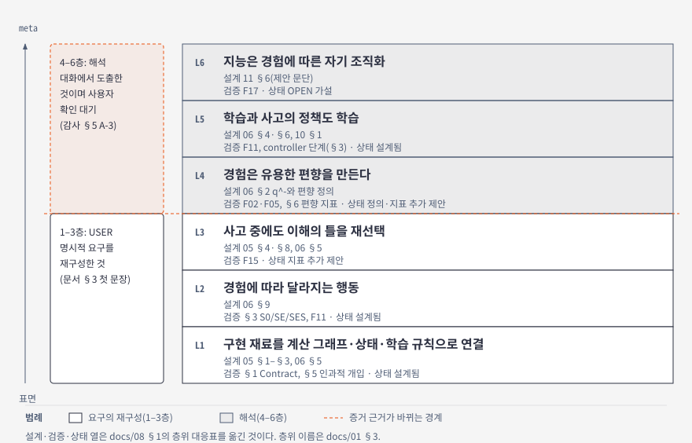

| 층 | 한 줄 뜻(01 §3) | 근거 라벨 | 감사 전 판정 |
|---|---|---|---|
| 1 | 재료(반복 연산·계산 배분·표현 재사용·내부 기억·리듬)를 논문 목록이 아니라 계산 그래프와 상태·학습 규칙으로 연결한다. | USER 재구성 | REFLECTED |
| 2 | 익숙한 관계는 짧게 처리하고 새 binding은 적은 관측으로 학습한다. 처리 방식이 입력만이 아니라 이전 경험에 따라 달라진다. | USER 재구성 | REFLECTED |
| 3 | schema를 한 번 고르고 끝내지 않는다. 사고 중 발견한 불일치로 유지·수정·전환·조합·새 구조 형성 중 무엇이 필요한지 다시 판단한다. | USER 재구성 | PARTIAL |
| 4 | 무엇을 먼저 확인하고 어떤 해석부터 시도하는지가 경험으로 형성된다. 편향은 오류를 고집하는 성향이 아니라 조건부 prior이며 반례가 오면 바뀔 수 있어야 한다. | PROPOSAL 해석 USER (B04, 2026-10-05) 관심·수준·편향은 모델이 경험으로 형성한 자체 상태 | PARTIAL |
| 5 | 무엇을 기억할지, 얼마나 생각할지, 언제 기존 이해를 보호할지, 어느 차원을 확장할지까지 경험과 평가로 개선한다. | PROPOSAL 해석 | REFLECTED |
| 6 | 같은 초기 모델이라도 이력에 따라 잘 알아보는 구조·우선 가설·계산량·학습 정책이 달라질 수 있다는 연구 가설이다. | PROPOSAL 해석 OPEN 가설 | MISSING |
ARCHIVE 6층은 감사 전 MISSING이었다. 감사는 이를 benchmark family F17(이력 분기)과 11 §6의 가설 문단으로 옮겼다(감사 §3-4). 4층의 ‘관심·수준’이 하나의 벡터인지 문맥별 다차원인지는 OPEN 로 남아 있다(01 §3).
3.4 명시적 사용자 목표 U01–U12
헌장 §2의 표를 옮긴다. USER 열두 목표는 모두 사용자 진술에서 나왔다(원장 F-U01–F-U12가 USER로 판정). 다만 ‘경계’ 열의 문장은 사용자 원문에 없고 문서가 덧붙인 한계 서술이다. 근거 열은 그 목표가 나온 사용자 진술의 줄이다.
| 번호 | 목표 | 경계(문서의 한정) | 라벨 | 근거 진술 |
|---|---|---|---|---|
| U01 | schema가 형성되고 활용 가능해야 한다 | schema라는 이름의 객체·embedding을 저장한 것으로 끝내지 않는다 | USER | U-T06 |
| U02 | SBL 이론을 폭넓게 적용하고 검증한다 | 인지 현상 재현과 실제 뇌 알고리즘 입증을 구별한다 | USER | U-T06 |
| U03 | schema와 맞는 새 경험을 rapid learning한다 | prior 획득 비용과 새 과제 적응 비용을 분리한다 | USER | U-T06 |
| U04 | 익숙한 문제는 빠르고 편향된 판단, 필요한 문제는 깊은 사고·통찰 | 고정 난도 분류만이 아니라 경험에 따라 익숙함이 바뀌어야 한다 | USER | U-T09 |
| U05 | System 1+2를 하나의 모델에 통합한다 | 별도 작은 판단기 + 외부 대형 LLM이 최종 제품이라는 해석은 사용자 정정으로 대체됐다 | USER | U-T07 |
| U06 | 기존 모델의 sequence layer를 Titan-Llama 계열로 retrofit한다 | 원 논문의 부분 전환 성과를 전 층 전환 성공으로 확대하지 않는다 | USER | U-T07 |
| U07 | FFN을 CMS로 점진적으로 전환하고 Sleep으로 통합한다 | 가중치 이전, 함수 보존, 추가 학습 비용은 별도 문제다 | USER | U-T07 |
| U08 | looped Transformer, MoD/MoR, depth attention을 핵심 재료로 검토한다 | 모든 구성의 동시 채택을 전제하지 않는다 | USER | U-T09 |
| U09 | 문맥에 따른 schema 판단 MLP/제어 구조를 넣는다 | controller는 구성 요소이며 정답 oracle가 아니다 | USER | U-T07 |
| U10 | schema offload/versioning/retrieval을 지원한다 | 전면 구현은 후반 단계, 상태 경계는 초기 설계부터 | USER | U-T07 |
| U11 | 뇌파에서 더 본질적인 상태 의존적 조율을 탐구한다 | 단순한 주기 가변화나 Hz→token 직접 대응으로 축소하지 않는다 | USER | U-T08 |
| U12 | 이론·수식·실험 PoC·단계별 MVP·self-evolution을 함께 진행한다 | 공개 문서 게시와 모델 구현/성공은 다르다 | USER | U-T06 |
ARCHIVE 감사 전 판정으로 U02·U04·U09·U12는 PARTIAL이었고 나머지 여덟은 REFLECTED였다(원장 F-U01–F-U12). U05의 ‘별도 작은 판단기’ 해석은 U-T07이 대체했다. 대체 근거와 한계는 계보와 정정에 있다.
약어: LLM은 대형 언어 모델, B04·B16 같은 B 번호는 Melete 시기 세션 요약(B01–B20)의 번호, FFN은 트랜스포머의 feed-forward 층, CMS는 여러 갱신 시간척도의 기억 묶음(05 §1), MoD·MoR은 Mixture-of-Depths·Mixture-of-Recursions(계산을 깊이별로 나누는 방법), PoC는 개념 증명, MVP는 가장 얇게 끝까지 도는 첫 제품이다. HOPE·Titans·Titan-Llama는 재료 논문의 이름이다(문헌 기반).
3.5 두 개의 중심 명제: H-SAMPLE과 H-COMPUTE
PROPOSAL 헌장 §4는 이 모델이 옳은지 가르는 두 명제를 둔다. 원장은 둘 다 PROPOSAL로 분류한다(F-CP1·F-CP2). 사용자가 같은 문장으로 말한 것은 아니다. 다만 통합 정정 뒤의 대표 PoC를 문서는 “경험 후 새 관계 공유 사례에서 동일 정확도에 필요한 loop와 총 계산량 감소”로 정리하는데(02 T07), 이 문장이 두 명제로 풀렸다.
| 항목 | H-SAMPLE | H-COMPUTE |
|---|---|---|
| 뜻(원문) | “관련 경험에서 배운 구조가 새로운 대상·표현을 가진 과제에 대한 목표 성능까지의 관측 수를 줄인다.” | “경험과 통합 이후 새로운 구조 공유 사례에서 같은 정확도를 얻는 데 필요한 총 계산이 줄어든다. loop만 줄이고 gradient·검색·decoder 비용을 늘린 결과를 계산 개선으로 인정하지 않는다.” |
| 라벨 | PROPOSAL | PROPOSAL |
| 판정 gate의 틀 | PROPOSAL G-SAMPLE: F03에서 SE 또는 SES가 S0보다 목표 품질까지의 관측 수가 적다. | PROPOSAL G-COMPUTE: §3 대표 실험에서 C*_ε(SES) < C*_ε(S0)이고 비용은 위 비용식 전체를 포함하며 쉬운 문제 편중이 아니다. |
| 반증을 주장하려면 | PROPOSAL 어떤 구성·조건의 어떤 관측이 가설을 위반했는지, 대조군·예산·표본, 기각하는 범위를 기록해 사용자 검토에 올린다. 한 구성의 FAIL을 이론 전체의 반증으로 확대하지 않는다(10 §2). | H-SAMPLE과 같은 절차. PROPOSAL gate 수치는 아직 없다(값은 pilot 뒤 확정, 08 §6). |
| 문헌 지지 | LITERATURE (fulltext-read, 11편) 측정 틀은 여럿 있다: GOUDAR23·CHU25의 trial-to-criterion 곡선, SWAMI23 LIALT의 예시형, KUMAR26의 1회 노출 용량 곡선, MICONI25의 list-linking(리뷰 §5). 그러나 학습된 구조가 같은 예산의 고정·무구조 대조보다 낫다는 직접 비교는 11편에 없고, HWU20에서는 새 schema가 기존 schema보다 빨리 학습되지 않았다(리뷰 §2). | LITERATURE (fulltext-read, 11편) 같은 품질의 추론 계산을 잰 논문은 읽은 11편에 없고, 근거는 SPECTRUM26(“accommodation은 더 많은 계산”)과 SWAMI23(posterior 엔트로피·1회 EM으로 충분) 같은 개념 수준뿐이다(리뷰 §4.4). PROPOSAL 그래서 리뷰는 이렇게 쓴다. “H-COMPUTE는 문헌 지지가 가장 약한, 사실상 우리 고유 가설이다.” (리뷰 §5) |
| 문서가 말하는 지지의 정도 | 평가 틀은 여럿이지만 직접 비교는 없다(문서에 등급은 없다) | 가장 약하다(리뷰 §5) |
PROPOSAL 두 명제는 독립적으로 평가한다. Rapid learning이 빨라져도 추론이 느릴 수 있고, early exit가 좋아져도 지속학습이 없을 수 있다. 현재 FCL에서 같은 지위의 basis는 통합 System ONE 구조(U-T07)·H-SAMPLE·H-COMPUTE이며, 반증이 확인되기 전까지 유지한다(10 §2).
3.6 비목표: 하지 않기로 한 것
PROPOSAL 헌장 §5의 일곱 항목이다. 목표를 줄여서 통과시키는 길을 미리 막는 규칙이다.
- 일반 RAG(retrieval-augmented generation, 검색 증강 생성)·개인 선호 요약·DB/JSON schema 검색만으로 목표 완료 처리하지 않는다.
- 외부 frozen LLM의 프롬프트 앞에 원문을 붙이는 성공을 최종 neural schema 시스템으로 바꾸지 않는다. 다만 강한 대조군으로 유지한다.
- LLM에 구조적 표상이 전혀 없다고 가정하지 않는다.
- 자연어 vec2text 복원이 반드시 필요한 인터페이스라고 고정하지 않는다 (사용자 확인 대기, H4 서술).
- 모든 경험학습이 schema learning이라는 정의로 가설을 반증 불가능하게 만들지 않는다.
- 코드·unit test·문서 gate를 실제 학습 효용 또는 제품 E2E 성공으로 승격하지 않는다.
- 뇌가 모든 기억의 불변 버전을 보관한다거나 하나의 universal switch가 모든 schema를 고른다고 주장하지 않는다.
PROPOSAL 성공을 읽는 법도 같은 절에 있다. 깊게 풀었던 답을 그대로 재출력하는 것이 아니라, 새 사례에서 공통 관계를 재사용해야 한다. 불일치 상황에는 그 편향을 적절히 제한해야 한다. insight는 loop 수가 많다는 뜻이 아니라 새 표현·관계·적용 조건의 형성과 이후 전이로 운영적으로 정의한다. (01 §6)
3.7 뇌과학 출발점
USER (U-T03) 사용자는 22쪽 뇌과학 대화 PDF를 첨부하며 “이거 읽고 우리 제품의 base 근거로 삼고싶음. 일단 읽고 이해해서 내 의도를 파악해봐”라고 했다(U-T03). 보존된 사용자 질문은 셋이다. 기억에 version이 있는가(p2), 해마가 익숙함을 학습한다는 이론을 더하면 익숙함·비유·다층 이해를 어떻게 설명하는가(p11), 굵직한 뇌과학 이론을 CLS(complementary learning systems, 상보적 학습 시스템)처럼 표로 정리해 달라(p12)(뇌과학 발췌). ARCHIVE PDF의 작성일 표기는 2026-10-31이고 PDF는 스스로 부분 원문이라고 밝힌다. p11의 긴 assistant 답변이 빠져 있고 우리는 그것을 복원하지 않았다. p11의 사용자 질문은 ‘정확한 이론은 모르지만’으로 시작하는 탐색적 가설이라 확정된 과학적 분류로 쓰지 않으며, 후속 설명은 친숙성·구조 이해·숙련을 구별했고 연결점이 없으면 학습이 불가능하다는 단정도 채택하지 않았다. p20의 개인 이메일 전송 요청은 연구 내용이 아니라 공개 발췌에서 뺐다(발췌 문서). PDF의 이론표 13개 항목은 03 §2에 같은 구분으로 다시 정리했고, PDF의 22개 참고문헌은 N01–N22로 카탈로그에 있다.
4 계보와 정정: Melete에서 System ONE까지
이 절은 System ONE이 어디서 왔는지와 무엇이 사용자 정정으로 바뀌었는지를 날짜와 근거로 보인다. 타임라인의 날짜는 docs/02·docs/12·사용자 진술 원문·git log에 있는 것만 쓰고, 없으면 ‘날짜 미상’으로 둔다. 순서는 목적(계보와 정정을 구분해 읽기) → 기능(타임라인·정정표·H1–H5 판정·대체 두 건·H4) → 입력과 출력 → 형식(표와 그림)이다.
- 입력: 02 논의의 발전과 정정, 12 기존 Melete와 이관 경계, 사용자 진술 원문, git log 5개 commit, 감사 문서의 정정 판정(감사 §3–§5).
- 출력: 날짜가 있는 사건의 타임라인, 정정표 11행, H1–H5의 계승·대체 판정, 사용자 진술이 대체한 2건, H4 text interface가 OPEN인 이유.
- 읽는 규칙: ARCHIVE 날짜와 수치는 과거 문서의 보고 이력이며 이 저장소에서 새로 실행한 값이 아니다. Melete 저장소(private)는 고정 커밋 1d95136 기준이고 최신 HEAD를 감사하지 않았다(12 머리말).
약어: SBL은 schema-based learning(스키마 기반 학습), CMS는 여러 갱신 시간척도의 기억 묶음, LLM은 대형 언어 모델, MoD·MoR은 Mixture-of-Depths·Mixture-of-Recursions, U-T01–U-T11은 사용자 진술 원문의 번호, B14·B16 같은 B 번호는 Melete 시기 세션 요약의 번호, H1–H5는 Melete 시기의 가설 다섯 개다.
4.1 타임라인: 날짜가 있는 사건
ARCHIVE 아래 그림은 날짜가 있는 사건 열 개를 날짜 간격에 비례해 놓았다. 속이 빈 점은 Melete 문서의 파일명·본문 날짜와 PDF의 작성일 표기이고, 채운 점은 FCL 저장소 commit 날짜다. 파일명 날짜는 기록 시점이지 사건이 일어난 날과 같다는 뜻이 아니다. 발화 날짜가 없는 U-T01–U-T11은 이 축에 놓지 않았다.
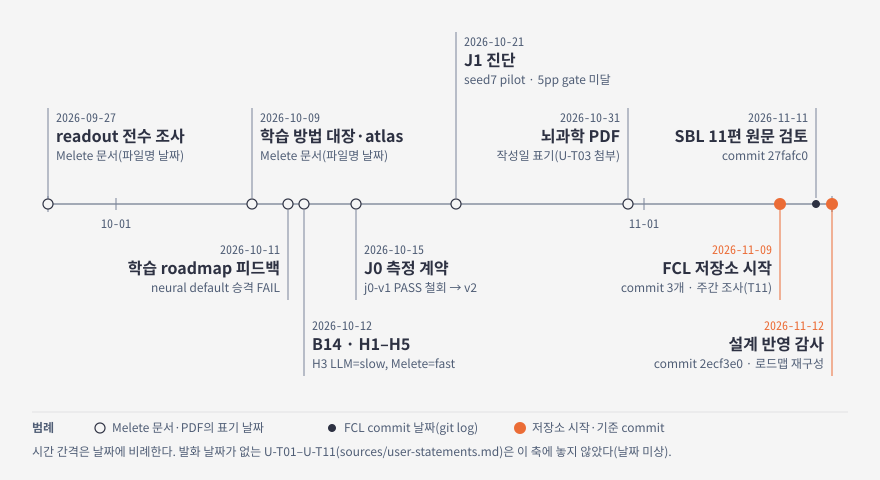

| commit | 날짜 시각 | 제목 |
|---|---|---|
| 1720523 | 2026-11-09 21:14 | docs: initialize full-continual-learning research archive |
| 58613da | 2026-11-09 21:39 | docs: archive Melete System ONE research, foundations, architecture, references and phase-0 source |
| d26076e | 2026-11-09 21:46 | test: verify archived phase-0 source and reproduce all 12 numerical runs; document publication boundaries |
| 27fafc0 | 2026-11-11 20:02 | research: full-text review of 11 neural SBL papers |
| 2ecf3e0 | 2026-11-12 03:51 | design: audit feedback reflection, integrate literature review, rebuild roadmap |
| 번호 | 원문의 제목 | 한 줄 요지 | 날짜 |
|---|---|---|---|
| U-T01 | Melete 회상 | Melete의 컨셉과 목적을 읊어 달라는 회상 요청 | 날짜 미상 |
| U-T02 | Self-evolution | Melete를 AI가 스스로 개선하는 self-evolution 시스템으로 만들자는 제안. 필수 4요소: objectives, 숫자로 환산되는 verification, negative feedback & evolution, operation policy | 날짜 미상 |
| U-T03 | 뇌과학 PDF를 기반으로 | 뇌과학 PDF를 제품의 base 근거로 삼고 의도를 파악해 달라. 첨부 PDF의 작성일 표기는 2026-10-31이며 이는 발화 날짜가 아니다 | 날짜 미상 |
| U-T04 | Schema라는 핵심 발견 | 원하던 것이 결국 schema based learning이었다는 발견 | 날짜 미상 |
| U-T05 | 독립 주간 추적과 연구 질문 | SBL 논문을 매주 추적해 보고. symbolic과 latent를 구분하고 latent에 더 관심 | 날짜 미상 |
| U-T06 | HOPE/Titans/Sleep와 이론·PoC | HOPE·Titans·Sleep로 SBL·rapid learning을 해 볼 수 있는가. 달성 목표 4개와 이론·수식·PoC | 날짜 미상 |
| U-T07 | 통합 System ONE 정정 | 통합 System ONE 정정: 하나의 HOPE 모델, recursive forward, 기존 모델 retrofit | 날짜 미상 |
| U-T08 | 뇌파와 고정 주기의 본질적 재고찰 | 뇌파의 본질적 재고찰: 항상 일정한 token 주기 update는 안 된다 | 날짜 미상 |
| U-T09 | Adaptive depth와 6층위 의도 | loop transformer·MoD·MoR·depth attention과 1차~6차 의도 파악 요청 | 날짜 미상 |
| U-T10 | 상세 트래킹 지시 | 후속 주간 보고의 범위·분류를 TRACKING_POLICY에 정리(자동화 실행·메일 발송을 뜻하지 않음) | 날짜 미상 |
| U-T11 | 이번 게시 요청 | full-continual-learning repo에 논의한 모든 내용(기반 이론·references 포함)을 올려 달라 | 날짜 미상 |
OPEN 번호를 대화 순서로 읽어도 되는지, U-T07의 “내가 원래 생각한건”이 새 결정인지 원래 의도의 재서술인지는 사용자 확인을 기다린다(감사 §5 A-1, 피드백 반영 추적).
4.2 계보의 여섯 단계
PROPOSAL 헌장은 계보를 Melete → 경험 기반 조건부 판단 → schema-based learning → pretrained LLM retrofit → recurrent System ONE → 상태·내용 의존적 학습 조율로 적는다(01 §1). 각 단계가 어떤 진술에서 왔는지를 아래에 잇는다. 단계 이름은 문서의 것이고, 진술과의 연결은 이 백서가 문서 본문을 따라 정리했다.
| 단계 | 근거 문장 | 출처·라벨 | 날짜 |
|---|---|---|---|
| Melete | “단순 사실 회수 대신 경험·조건·목표·판단·행동·결과·예외·정정 이력을 보존하고, 모델이나 도구가 바뀌어도 조건부 판단 방식을 이어가는 개인 기억이다.” 처음에는 Frozen LLM에 외부 neural memory의 working graph/frame를 전달하는 방향이었다. | U-T01 ARCHIVE | 날짜 미상 |
| 경험 기반 조건부 판단 | “Melete의 진짜 목표는 Experience → Latent Conditional Judgment → Revisable Decision이며 결과 예측이 아니다.” | USER (B16) | 2026-10-13(docs/01) |
| schema-based learning | “내가 원하던건 결국 schema based learning을 하고싶었나봐.” 경험·schema·직관의 구분은 정리자의 서술이다(감사 §5 A-2). | U-T04 USER PROPOSAL 구분 | 날짜 미상 |
| pretrained LLM retrofit | “seq layer는 titan llama로 retrofitting하고” “ffn쪽은 cms(model needs sleep의 방법으로)로 점진적 교체” | U-T07 USER | 날짜 미상 |
| recurrent System ONE | “SYSTEM ONE을 통합하는 HOPE모델을 만드는데 loop transformer처럼 recursive하게 forward를 하는것” | U-T07 USER | 날짜 미상 |
| 상태·내용 의존적 학습 조율 | “그런 관점에서 모든 내용이 항상 일정한 token주기로 update된다? 이러면 안되지 않나” + loop·MoD·MoR·depth attention(U-T09) | U-T08·U-T09 USER | 날짜 미상 |
4.3 정정표: 이전 이해에서 현재 해석으로
PROPOSAL docs/02의 ‘보존해야 할 정정표’ 11행이다(02). 각 행의 근거는 그 행을 낳은 사용자 진술(U-T)과 원장 항목이다. 라벨은 원장의 판정을 따른다. 3행만 사용자 정정이고 나머지는 정리자(assistant)가 논의를 정리한 서술이다.
| # | 이전 표현·가능한 오해 | 현재 해석 | 근거 | 라벨 · 감사 전 판정 |
|---|---|---|---|---|
| 1 | LLM은 schema가 없다 | 구조적 표상은 존재할 수 있다. 지속되는 경험별 학습을 연구한다 | 02 L81 U-T04 F-COR-01 | PROPOSAL REFLECTED assistant 재해석. 사용자 수용 원문 없음(감사 §5 A-2) |
| 2 | schema=경험=직관 | 사건, 재사용 구조, 빠른 적용을 구별한다 | 02 L82 U-T04 F-COR-02 | PROPOSAL REFLECTED assistant 재해석. ‘=’를 구별로 바꿈(감사 §5 A-2) |
| 3 | 작은 fast 모델 + 큰 LLM이 최종 목표 | 같은 모델의 가변 계산·학습 모드가 최종 방향 | 02 L83 U-T07 F-COR-03 | USER REFLECTED 사용자 정정(02 T07 표제 ‘중요한 사용자 정정’) |
| 4 | 느린 CMS는 덜 계산한다 | forward 참여, update 빈도, retention은 별개 | 02 L84 U-T08 F-COR-04 | PROPOSAL REFLECTED |
| 5 | 내부 loop는 새 관측이다 | 사고 반복은 증거 수를 늘리지 않는다 | 02 L85 U-T07 F-COR-05 | PROPOSAL REFLECTED |
| 6 | fast weight가 저장되면 schema 성공 | 새 사례 전이와 causal intervention 필요 | 02 L86 U-T06 F-COR-06 | PROPOSAL REFLECTED |
| 7 | vec2text를 반드시 성공시켜야 함 | 학습된 latent interface/모델 내부 연결도 가능 | 02 L87 U-T02 F-COR-07 | PROPOSAL REFLECTED |
| 8 | 뇌파를 token update period로 복제 | 상태·내용·결합·가소성의 조율이 연구 대상 | 02 L88 U-T08 F-COR-08 | PROPOSAL REFLECTED |
| 9 | 깊은 loop가 통찰 | 새 구조와 이후 전이가 있어야 한다 | 02 L89 U-T09 F-COR-09 | PROPOSAL PARTIAL 정의는 있으나 측정·gate가 없었다 |
| 10 | pretraining=하나의 schema, RL=분화가 사실 | 반증 가능한 별도 후속 가설 | 02 L90 U-T06 F-COR-10 | PROPOSAL REFLECTED 사용자 가설을 사실로 채택하지 않고 반증 가능한 후속 가설로 둠 |
| 11 | 사용자가 원한 모든 수치 기준이 확정 | 수치 gate와 phase 세부는 proposal임을 표시 | 02 L91 U-T02 F-COR-11 | PROPOSAL REFLECTED |
4.4 H1–H5: 무엇을 계승하고 무엇을 대체했나
ARCHIVE H1–H5는 Melete 시기의 가설 다섯 개다(12 §1). 각 가설을 현재 설계가 어떻게 이어받았는지는 감사가 원장 항목별로 판정했다(W2-gaps.txt §3). 아래 표의 판정 문장은 그 요약이고, 감사 전 판정은 괄호에 적었다.
| 가설 | 내용(docs/12 §1) | 계승 · 대체 판정 | 라벨 |
|---|---|---|---|
| H1 | 개인 경험·암묵지·판단 경로를 online으로 누적하는 별도 neural layer의 보완 가치. | 문제의식은 계승한다. ‘별도 신경 계층’ 형태는 U-T07 통합 모델로 대체됐다. 개인 암묵지·이력 의존 편향이 요구·평가로 내려오지 않았던 점은 F17(이력 분기)과 11 §6으로 보강했다. (M-H1-01 PARTIAL) | PROPOSAL 대체 부분은 USER U-T07 |
| H2 | familiarity 기반 빠른 처리와 새 경험 학습, LLM의 깊은 추론. 학습 속도와 추론 역할은 별도 축. | 계승한다. 익숙함에 따라 얕게 답하고 낯설면 더 계산·학습하는 거동이 U04·2층·controller로 설계됐다(M-H2-01·03 REFLECTED). ‘가장 익숙한 지점에서 시작할 수 있는가’는 감사 전 PARTIAL(M-H2-02)이라 설계에 보강했다. | PROPOSAL |
| H3 | query의 순서 있는 node/edge trajectory를 task working graph로 compile하고 hit association을 강화. fact validity와 hit frequency는 별도. | ‘LLM=slow, Melete=fast’ 역할 분할은 U-T07이 대체했다(M-H3-01 SUPERSEDED). hit 경로 강화·compile은 통합 모델 용어로 번역해 계승했으나 compile 계약과 강화 측정은 감사 전 PARTIAL(M-H3a-01·02)이었다. | USER U-T07 (확인 대기 A-1) PROPOSAL |
| H4 | 매 turn 전체 hidden-state trajectory를 text reader로 바꾸어 frozen LLM prefix에 전달. terminal/pointer는 비교군. | 매 turn 질의와 ‘전체 hidden state 대 terminal·pointer’ 비교 축은 계승한다(M-H4-01·02 REFLECTED). text interface가 필수인가는 대체가 아니라 미정이다(M-H4-03 PARTIAL). | OPEN 아래 H4 절 |
| H5 | LLM output을 다시 넣어 compatibility/surprise를 평가하고 input/output/frame을 학습해 최초 query로 recompile·resume. Generated는 학습 신호일 수 있지만 외부 사실의 독립 근거가 아니다. | 출력 재입력을 내부 적합성·잔차 신호로 번역해 계승한다(M-H5-01·02 REFLECTED). 최초 입력 재읽기·재개 지점의 계약은 감사 전 PARTIAL(M-H5-03)이었다. | PROPOSAL |
| basis 규칙 | “핵심 가설은 틀렸다고 확인되기 전까지 반드시 유지하는 basis다.” (B14, 2026-10-12) | 이력으로만 보존됐던 규칙을 현재 가설(통합 System ONE·H-SAMPLE·H-COMPUTE)에도 같은 방식으로 적용한다(10 §2). (M-H-BASIS-01 PARTIAL) | USER (B14) PROPOSAL 현재 적용 |
4.5 사용자 진술이 대체한 두 건
원장 325개 항목 중 SUPERSEDED는 두 건뿐이고 둘 다 U-T07이 근거다(감사 §3-7). 대체한 진술은 같다. USER (U-T07) “SYSTEM ONE을 통합하는 HOPE모델을 만드는데 loop transformer처럼 recursive하게 forward를 하는것” (L86).
| 원장 항목 | 대체된 진술(인용) | 대체 근거와 한계 |
|---|---|---|
| F-UT06-11 SUPERSEDED | USER (U-T06, 날짜 미상) “system 1/2 사고방식에서 system 1을 담당하는 부분으로서” | 대체된 것은 ‘System 1을 담당하는 별도 부분’이라는 해석이다. “llm대비 매우 빠르게” 같은 속도 목표는 유지되므로 별도 항목(F-UT06-12)으로 판정했다. 시간 근거는 파일 순서(U-T06 → U-T07)와 02 T07의 ‘중요한 사용자 정정’ 서술뿐이고 날짜는 없다. |
| M-H3-01 SUPERSEDED | USER (B14, 2026-10-12) “H3: LLM=slow, Melete=fast.” | ‘외부 LLM=slow, Melete=fast’ 역할 분할을 같은 모델의 얕은 답·rapid learning·더 깊은 loop(통합 System ONE)가 대체했다. 시간 근거: B14(2026-10-12) < U-T03 첨부 PDF의 작성일 표기 2026-10-31 이후의 U-T07. 단 ‘U-T 번호 = 대화 순서’는 가정이다. |
ARCHIVE 설계 쪽 흔적: 01 §2 U05(별도 작은 판단기 해석은 정정으로 대체), 02 T07, 12 §1, AGENTS.md. 원장 근거는 ledger-fcl.json와 ledger-melete.json에 있다.
4.6 H4 text interface는 왜 OPEN인가
목적: H4가 요구한 ‘전체 hidden state를 text로 바꿔 LLM 앞에 배치’가 지금도 필수 조건인지 가린다. 결론은 필수가 아니라고 단정하지 않고 사용자 확인을 기다린다는 것이다. 근거는 다섯 줄이다.
- USER (B14/H4, 2026-10-12) 매 turn working frame의 출력 trajectory의 모든 hidden state를 vec2text로 LLM token 앞에 배치해 bias한다. 이 가설은 틀렸다고 확인되기 전까지 유지하는 basis다. (05 §10)
- USER (U-T02, U-T07) 사용자는 vec2text에 대한 기대감이 부족하다고 말했고 가장 간단하게 시작하자고 했다. 최종 구조는 retrofit 통합 모델이다. 그러나 “보존된 사용자 발화(U-T01–U-T11)에는 text interface가 불필요하다는 문장이 없다.”
- PROPOSAL (정리자 추론) 위 '필수 관문으로 두지 않는다'는 U-T07의 통합 구조에서 정리자가 도출한 추론이다. 통합 모델에는 text를 전달받는 외부 frozen LLM이 없으므로 text 변환과 prefix 위치는 필수 조건이 아니다. 그러나 H4가 요구한 관측(전체 hidden-state 전달, 같은 정보·예산의 pointer·terminal 대조)은 유지한다.
- ARCHIVE Melete는 GTR sentence vector를 대상으로 한 vec2text의 혼합 실패가 graph hidden-state space를 위해 학습한 decoder의 실패가 아니므로 H4를 기각하는 근거로 쓰지 않는다고 정리했다(05 §10).
- OPEN text interface를 현재 필수 조건에서 내리는 결정이 사용자 의사인지 확인이 필요하다.
원장은 같은 이유로 이 항목(M-H4-03)을 SUPERSEDED가 아니라 PARTIAL로 두었다. 쟁점은 시간 순서가 아니라 ‘대체하는 사용자 진술이 있는가’이고, 보존된 U-T01–U-T11 어디에도 text interface가 불필요하다는 문장이 없기 때문이다(ledger-melete.json M-H4-03). 감사 중 마스터는 새 로드맵 §9 대응표의 “정정으로 필수가 아니다”를 “정리자 추론, 사용자 확인 대기(OPEN)”로 낮췄다(감사 §4). 사용자에게 묻는 질문은 이것이다. OPEN “H4의 text/vec2text 인터페이스를 필수 경로에서 내리는 것이 사용자 의사인가.” (감사 §5 B-7). 그때까지 H4는 basis로 유지하고 외부 frozen consumer용 text prefix는 강한 대조군이자 보존할 후보 interface로 둔다.
4.7 Melete에서 가져온 것, 가져오지 않은 것, 남은 교훈
ARCHIVE 가져올 자산은 아래 표의 첫 행과 같고, 문서는 이를 현재 방향에도 가치가 있다고 적는다(12 §4). 반대로 이번에 이관하지 않은 Melete 연구 자산이 셋 있다.
| 항목 | 내용 | 라벨 | 근거 |
|---|---|---|---|
| 가져올 자산 | Evidence log, source/revision, snapshot, recompile/resume, budget, root 중복 제어, observed/generated 구분, matched baselines, 실패와 raw 결과 보존, 실제 E2E와 연구 gate의 구분 | ARCHIVE | 12 §4 |
| 이관하지 않은 자산 1 | 기초 학습 방법 대장(12계열 50개 비교 항목)과 제품 적합 순위·13개 조합 atlas. atlas는 문헌·API·수식 검토이며 학습 실행·채택이 아니다 | ARCHIVE | 12 §4 |
| 이관하지 않은 자산 2 | latent/graph 상태를 LLM에 전달하는 방법의 전수 조사(readout survey, 2026-09-27) | ARCHIVE | 12 §4 |
| 이관하지 않은 자산 3 | 조건부 판단 측정 계약 J0의 설계·결과 기록 | ARCHIVE | 12 §4 |
| 남은 일 | 이 자산이 FCL 문서에 없다는 것은 학습 방법의 ELI 그림·제품 적합 순위·조합 정리 요구(B09)가 FCL에서 충족되지 않았다는 뜻이다. 이관 여부는 파일별로 다시 판단한다(감사 §5 C-16). | OPEN | 12 §4 |
| N0–N5 결과 | 합성 8개 수치 cue·3개 결과 채널의 neural prototype. 학습된 graph의 추가 개선 0.48%(대략 95% 구간 −3.07~4.04%)로 독립 기여 미입증. all-state reader calibration 문장 exact 29/256 대 terminal 38/256 | ARCHIVE | 12 §2 |
| J0 · J1 | J0(2026-10-15)는 측정 계약만 검증했고 efficacy는 not_evaluated였다. j0-v1 PASS는 철회돼 v2로 대체됐다. J1 seed7 pilot에서 pair objective의 국소 개선이 primary 개선으로 이어지지 않았고, master가 제안한 5pp gate(사용자 합의가 아님) 미달로 같은 recipe 확대를 중단했다 | ARCHIVE | 12 §2–§3 |
J1 seed7 pilot 수치(과거 문서의 보고 이력)
| arm | Return | Composition | Macro |
|---|---|---|---|
| G-pair | 100.00% | 73.44% | 86.72% |
| Fixed-pair | 100.00% | 69.53% | 84.77% |
| NoG-pair | 98.44% | 69.53% | 83.98% |
| G-BCE-paired | 100.00% | 78.13% | 89.06% |
ARCHIVE 이 숫자는 과거 문서의 보고 이력이며 이 저장소에서 새로 실행한 값이 아니다(12 §3).
4.8 옛 계획은 새 로드맵으로 어떻게 옮겨졌나
ARCHIVE 옛 계획은 서로 다른 세 갈래로 기록돼 있다. 옛 docs/09의 P0–P6, 11월 3일 외부 fast-model 중심 계획의 P0–P5, Melete의 N0–N5·J0–J5·P1–P4다. 갈래는 갈래대로 둔다. 새 로드맵의 P1–P5는 이를 하나의 서사로 합친 것이 아니라 대응표로 옮겼고, 그 표는 “번호가 같아도 FCL P1–P5와 Melete P1–P4는 다른 계획이다.”라고 못박는다(09 §9). 대응표의 ‘새 위치’는 개념·설계·자산이 이어지는 자리이며 완료의 승계가 아니다. 11월 3일 계획은 단계 목록이 이 저장소에 없고 원문 위치도 확인하지 못해 ‘매핑하지 않음’으로 표시됐다. 새 로드맵의 구조는 3부에서 본다.
5 피드백 반영 추적: 요구가 설계에 들어갔는가
이 절은 ‘지금까지 사용자가 준 피드백(논문 포함)이 설계에 들어갔는가’라는 질문에 답한다. 먼저 무엇을 어떻게 셌는지(방법), 다음에 센 결과(수치와 차트), 마지막에 아직 사용자 확인·결정·정독이 남은 것을 쓴다. 입력은 사용자 진술을 쪼갠 원장 JSON 두 개와 설계 문서 docs/03–12이고, 출력은 항목별 판정과 그 판정으로 만든 편집·로드맵이다.
원장 325개 항목 전체는 원장 탐색기에서 검색하고 걸러 볼 수 있다. 이 절의 숫자는 감사 문서 §2의 값을 쓰되, 백서를 만들며 원장 JSON을 직접 다시 세어 같은 값임을 확인했다.
약어: SBL은 schema-based learning, CLI는 명령줄 도구, CMS는 여러 갱신 시간척도의 기억 묶음, MoD·MoR은 Mixture-of-Depths·Mixture-of-Recursions, F01–F21은 평가 family 번호, D-01–D-14는 열린 결정 번호, E0–E3는 진화 권한 단계다(뜻은 3부).
5.1 방법: 원장, 판정, 보완, 검증
ARCHIVE 감사는 네 단계로 했다(감사 §1). 단계마다 입력과 산출이 다르다.
| 단계 | 입력 | 한 일 | 산출 |
|---|---|---|---|
| 1 원장 | 사용자 진술 | 원자 항목(인용·출처 줄·날짜·종류·라벨). 원천은 둘: FCL 시기(U-T01–U-T11, docs/01·02, README), Melete 시기(B01–B20 세션 요약, H1–H5, J0/J1 교훈) | ledger-fcl.json 177항목, ledger-melete.json 148항목 |
| 2 판정 | 원장 항목 + docs/03–12 | 항목마다 반영 위치(파일:줄과 절)와 한 줄 이유, 판정 4값 | status·design_locations·note |
| 3 보완 | PARTIAL·MISSING 항목 + 11-11 원문 검토 + 11-09 주간 조사 | 빠진 항목마다 앵커 문장(원문 그대로)·새 문장·증거 라벨로 된 편집 블록 | W1-gaps·W2-gaps·W3-literature-edits(편집 블록) |
| 4 검증 | 원장·편집 블록 | 검사기(원장 형식, 앵커가 원문에 정확히 한 번 등장, 로드맵 필수 요소) + 리더 검증(인용 325개·설계 위치 1,028개 대조, 무작위 판정 12건 재검토) → 마스터 검수·반영 | 반영 후 tools/validate_docs.py 오류 0건 |
ARCHIVE 작업 분담: worker 4개(W1 FCL 원장, W2 Melete 원장, W3 문헌 통합, W4 로드맵)가 초안을 쓰고 리더가 검증했으며, 마스터가 충돌을 정리해 반영했다. 원장과 초안은 감사 자료 폴더에 공개용으로 정리돼 있다(호스트 경로는 ‘(감사 작업 폴더)’로, Melete 저장소 경로는 ‘melete@1d95136’으로 바꿨다).
| 판정 | 뜻(감사 §1) | 합계 | FCL 시기 | Melete 시기 |
|---|---|---|---|---|
| REFLECTED | 반영됨 | 193 (59%) | 133 | 60 |
| PARTIAL | 일부만 반영됨 | 118 | 40 | 78 |
| MISSING | 반영 위치 없음. 검색 0건을 근거로 붙였다 | 12 | 3 | 9 |
| SUPERSEDED | 이후 사용자 진술이 대체함. 그런 진술이 있을 때만 썼다 | 2 | 1 | 1 |
ARCHIVE 원장 한 행은 열두 필드로 이뤄진다: id, source_refs(출처 묶음), source(출처 줄), date, quote(인용), kind(종류), label(증거 라벨), status(감사 전 판정), design_locations(반영 위치), note(한 줄 이유), superseded_by(대체한 진술), gap_edit_ids(닫는 편집 블록)(감사 자료 README). 직접 센 값: design_locations는 1,063개이고, 그중 ‘파일:줄 (절)’ 형식이 1,028개(감사 §1의 ‘설계 위치 1,028’과 같다)이며 나머지는 ‘검색:’ 메모 23개와 ‘목표:’ 접두 12개다.
5.2 수치: 감사 전과 반영 후
ARCHIVE 감사 전 합계는 REFLECTED 193(59%)·PARTIAL 118·MISSING 12·SUPERSEDED 2다. PARTIAL·MISSING 130개는 이번 반영 뒤 다음처럼 바뀌었다. FCL 시기는 설계 문서 편집 28·새 로드맵 11·문헌 정독 남음 4, Melete 시기는 66·16·5다(감사 §2). ‘문헌 정독이 남음’ 9개 중 4개(11-09 주간 조사 2, 11-11 원문 검토 2)는 문헌 통합 편집(W3)이 다뤘고, 실제로 남은 것은 5개다.
- REFLECTED
- PARTIAL
- MISSING
- 설계 문서 편집
- 새 로드맵
- 문헌 정독 남음
- SUPERSEDED
같은 숫자를 표로 보기
| 시기 | 항목 | REFLECTED | PARTIAL | MISSING | SUPERSEDED |
|---|---|---|---|---|---|
| FCL 시기 | 177 | 133 | 40 | 3 | 1 |
| Melete 시기 | 148 | 60 | 78 | 9 | 1 |
| 합계 | 325 | 193 | 118 | 12 | 2 |
| 시기 | 항목 | REFLECTED | 설계 문서 편집 | 새 로드맵 | 문헌 정독 남음 | SUPERSEDED |
|---|---|---|---|---|---|---|
| FCL 시기 | 177 | 133 | 28 | 11 | 4 | 1 |
| Melete 시기 | 148 | 60 | 66 | 16 | 5 | 1 |
| 합계 | 325 | 193 | 94 | 27 | 9 | 2 |
ARCHIVE 사용자 진술(USER)만 보면 FCL 시기 112 = REFLECTED 79 + 새 위치 29 + 문헌 정독 남음 3 + SUPERSEDED 1, Melete 시기 90 = 32 + 55 + 2 + 1이다(감사 §2). 설계 위치가 있는 진술은 감사 전 111개(= 79 + 32)에서 반영 후 195개가 된다. 나머지 7개는 문헌 정독이 남은 5개와 SUPERSEDED 2개다.
- REFLECTED(감사 전부터 위치 있음)
- 설계 문서 편집
- 새 로드맵
- 문헌 정독 남음
- SUPERSEDED
같은 숫자를 표로 보기
| 시기 | USER 항목 | REFLECTED | 설계 문서 편집 | 새 로드맵 | 새 위치 합 | 문헌 정독 남음 | SUPERSEDED |
|---|---|---|---|---|---|---|---|
| FCL 시기 | 112 | 79 | 19 | 10 | 29 | 3 | 1 |
| Melete 시기 | 90 | 32 | 42 | 13 | 55 | 2 | 1 |
5.3 반영한 편집: 설계 문서 10개에 70개
ARCHIVE 감사 자료 README에 따르면 INSERT_AFTER_LINE·REPLACE_SUBSTRING 블록 70개가 docs/01·03–08·10–12에 들어갔다. W1 13 + W2 22 + W3 35다. ROADMAP_REQUIREMENT 블록은 새 docs/09가 받았고, LITERATURE_HANDOFF 블록 중 11-11·11-09 문헌분은 W3 편집이 다뤘다. 편집 블록 본문은 반영 전 초안이므로 마스터 수정이 들어간 최종 문장은 docs 본문이 기준이다. 그중 기존 결론을 약화·정정한 것은 3건이다(문헌 기반).
| 문서 | W1 FCL 원장 | W2 Melete 원장 | W3 문헌 | 합계 |
|---|---|---|---|---|
| 01-intent-and-charter | 0 | 2 | 0 | 2 |
| 03-foundations | 1 | 0 | 8 | 9 |
| 04-rhythms-and-orchestration | 1 | 1 | 0 | 2 |
| 05-integrated-architecture | 2 | 2 | 5 | 9 |
| 06-mathematical-framework | 1 | 2 | 4 | 7 |
| 07-state-and-storage | 0 | 3 | 0 | 3 |
| 08-evaluation | 5 | 3 | 6 | 14 |
| 10-evolution-policy | 2 | 3 | 4 | 9 |
| 11-research-agenda | 1 | 2 | 8 | 11 |
| 12-melete-lineage | 0 | 4 | 0 | 4 |
| 합계 | 13 | 22 | 35 | 70 |
ARCHIVE docs/09는 편집이 아니라 전면 재작성이다. 옛 P0–P6가 사용자 전역 규칙 ‘점진적 해상도’와 어긋났기 때문이다(아래 핵심 발견 1). 이 로드맵의 구조는 3부 로드맵에서 본다.
5.4 출처 묶음별 분포와 반영 후 재현
목적: 빠진 것이 어느 진술 묶음에 몰렸는지 본다. ‘묶음’은 원장 항목의 source_refs 값이다. FCL 시기는 U-T01–U-T11과 그 밖(DOC01·DOC02·README·GLOBAL-PR·NO-p2·NO-p11·NO-p12·POST-1111), Melete 시기는 B01–B20과 그 밖(H1–H5·H-basis·J0–J2·N1·N2)이다. ARCHIVE 직접 센 규칙: 한 항목의 source_refs가 여럿이면 묶음마다 한 번씩 센다. 그래서 묶음의 합은 항목 수보다 크다(FCL 90개, Melete 56개 항목이 여러 묶음에 걸친다).
시험한 여섯 가지 우선순위와 결과
| 우선순위 | FCL 시기 | Melete 시기 | 두 원장 일치 |
|---|---|---|---|
| 설계 문서 편집 > 새 로드맵 > 문헌 | 28 · 11 · 4 | 66 · 16 · 5 | 일치 |
| 설계 문서 편집 > 문헌 > 새 로드맵 | 28 · 11 · 4 | 66 · 15 · 6 | — |
| 새 로드맵 > 설계 문서 편집 > 문헌 | 20 · 19 · 4 | 62 · 20 · 5 | — |
| 새 로드맵 > 문헌 > 설계 문서 편집 | 19 · 19 · 5 | 54 · 20 · 13 | — |
| 문헌 > 설계 문서 편집 > 새 로드맵 | 27 · 11 · 5 | 58 · 15 · 14 | — |
| 문헌 > 새 로드맵 > 설계 문서 편집 | 19 · 19 · 5 | 54 · 19 · 14 | — |
- REFLECTED
- PARTIAL(위 막대)
- MISSING(위 막대)
- 설계 문서 편집(아래 막대)
- 새 로드맵(아래 막대)
- 문헌 정독 남음(아래 막대)
- SUPERSEDED
같은 숫자를 표로 보기(FCL 시기)
| 묶음 | n | REFLECTED | PARTIAL | MISSING | SUPERSEDED | → 설계 문서 편집 | → 새 로드맵 | → 문헌 정독 남음 |
|---|---|---|---|---|---|---|---|---|
| U-T01 | 3 | 3 | 0 | 0 | 0 | 0 | 0 | 0 |
| U-T02 | 19 | 13 | 6 | 0 | 0 | 3 | 3 | 0 |
| U-T03 | 13 | 9 | 3 | 1 | 0 | 4 | 0 | 0 |
| U-T04 | 8 | 8 | 0 | 0 | 0 | 0 | 0 | 0 |
| U-T05 | 22 | 16 | 6 | 0 | 0 | 3 | 0 | 3 |
| U-T06 | 35 | 27 | 7 | 0 | 1 | 4 | 3 | 0 |
| U-T07 | 32 | 27 | 5 | 0 | 0 | 5 | 0 | 0 |
| U-T08 | 12 | 11 | 1 | 0 | 0 | 1 | 0 | 0 |
| U-T09 | 27 | 16 | 10 | 1 | 0 | 9 | 1 | 1 |
| U-T10 | 12 | 12 | 0 | 0 | 0 | 0 | 0 | 0 |
| U-T11 | 3 | 3 | 0 | 0 | 0 | 0 | 0 | 0 |
| DOC01 | 33 | 24 | 8 | 1 | 0 | 8 | 1 | 0 |
| DOC02 | 26 | 21 | 5 | 0 | 0 | 4 | 0 | 1 |
| README | 13 | 11 | 2 | 0 | 0 | 1 | 1 | 0 |
| GLOBAL-PR | 9 | 2 | 5 | 2 | 0 | 1 | 6 | 0 |
| NO-p2 | 2 | 2 | 0 | 0 | 0 | 0 | 0 | 0 |
| NO-p11 | 6 | 4 | 2 | 0 | 0 | 2 | 0 | 0 |
| NO-p12 | 1 | 1 | 0 | 0 | 0 | 0 | 0 | 0 |
| POST-1111 | 1 | 0 | 1 | 0 | 0 | 0 | 0 | 1 |
| 그 밖 묶음 합(항목 중복 제거) | 91 | 65 | 23 | 3 | 0 | 16 | 8 | 2 |
- REFLECTED
- PARTIAL(위 막대)
- MISSING(위 막대)
- 설계 문서 편집(아래 막대)
- 새 로드맵(아래 막대)
- 문헌 정독 남음(아래 막대)
- SUPERSEDED
같은 숫자를 표로 보기(Melete 시기)
| 묶음 | n | REFLECTED | PARTIAL | MISSING | SUPERSEDED | → 설계 문서 편집 | → 새 로드맵 | → 문헌 정독 남음 |
|---|---|---|---|---|---|---|---|---|
| B01 | 12 | 5 | 7 | 0 | 0 | 7 | 0 | 0 |
| B02 | 1 | 0 | 1 | 0 | 0 | 0 | 1 | 0 |
| B03 | 4 | 2 | 2 | 0 | 0 | 2 | 0 | 0 |
| B04 | 13 | 4 | 9 | 0 | 0 | 9 | 0 | 0 |
| B05 | 4 | 2 | 2 | 0 | 0 | 0 | 2 | 0 |
| B06 | 4 | 0 | 4 | 0 | 0 | 1 | 0 | 3 |
| B07 | 4 | 0 | 4 | 0 | 0 | 4 | 0 | 0 |
| B08 | 11 | 4 | 6 | 1 | 0 | 6 | 1 | 0 |
| B09 | 14 | 3 | 8 | 3 | 0 | 10 | 1 | 0 |
| B10 | 2 | 0 | 2 | 0 | 0 | 2 | 0 | 0 |
| B11 | 6 | 1 | 5 | 0 | 0 | 5 | 0 | 0 |
| B12 | 3 | 1 | 1 | 1 | 0 | 1 | 1 | 0 |
| B13 | 5 | 1 | 3 | 1 | 0 | 2 | 2 | 0 |
| B14 | 39 | 22 | 16 | 0 | 1 | 14 | 1 | 1 |
| B15 | 1 | 0 | 0 | 1 | 0 | 1 | 0 | 0 |
| B16 | 27 | 16 | 10 | 1 | 0 | 10 | 1 | 0 |
| B17 | 10 | 1 | 9 | 0 | 0 | 0 | 9 | 0 |
| B18 | 1 | 1 | 0 | 0 | 0 | 0 | 0 | 0 |
| B19 | 2 | 1 | 1 | 0 | 0 | 0 | 0 | 1 |
| B20 | 2 | 0 | 1 | 1 | 0 | 2 | 0 | 0 |
| H1 | 2 | 0 | 2 | 0 | 0 | 2 | 0 | 0 |
| H2 | 4 | 2 | 2 | 0 | 0 | 1 | 0 | 1 |
| H3 | 8 | 3 | 4 | 0 | 1 | 4 | 0 | 0 |
| H4 | 6 | 4 | 2 | 0 | 0 | 2 | 0 | 0 |
| H5 | 6 | 5 | 1 | 0 | 0 | 1 | 0 | 0 |
| H-basis | 3 | 1 | 2 | 0 | 0 | 2 | 0 | 0 |
| J0 | 8 | 6 | 2 | 0 | 0 | 2 | 0 | 0 |
| J1 | 8 | 5 | 3 | 0 | 0 | 3 | 0 | 0 |
| J2 | 1 | 0 | 1 | 0 | 0 | 1 | 0 | 0 |
| N1 | 1 | 1 | 0 | 0 | 0 | 0 | 0 | 0 |
| N2 | 1 | 1 | 0 | 0 | 0 | 0 | 0 | 0 |
| 그 밖 묶음 합(항목 중복 제거) | 48 | 28 | 19 | 0 | 1 | 18 | 0 | 1 |
ARCHIVE 직접 센 값으로 읽으면, 항목이 9개 이상인 묶음 가운데 PARTIAL·MISSING 비중이 높은 곳은 FCL 시기에서 GLOBAL-PR(9개 중 7개)와 U-T09(27개 중 11개), Melete 시기에서 B17(10개 중 9개)·B09(14개 중 11개)·B04(13개 중 9개)·B14(39개 중 16개)·B16(27개 중 11개)다. B17의 PARTIAL 9개는 모두 새 로드맵으로, GLOBAL-PR의 7개는 새 로드맵 6개와 설계 문서 편집 1개로 닫혔다. GLOBAL-PR은 사용자 전역 규칙 ‘점진적 해상도’이고, 이 쏠림이 핵심 발견 1(로드맵이 규칙과 어긋남)과 같은 방향이다. 이는 묶음 안의 비율일 뿐 묶음의 중요도 순위가 아니다.
5.5 증거 라벨의 분포
ARCHIVE 원장 항목은 라벨로도 셀 수 있다. FCL 시기 177 = USER 112 + PROPOSAL 60 + ARCHIVE 5, Melete 시기 148 = USER 90 + PROPOSAL 2 + ARCHIVE 56다. FCL 시기는 정리자의 PROPOSAL 서술(헌장·정정표·로드맵 문장)이 많고, Melete 시기는 세션 요약이 사용자에게 귀속하지 않은 ARCHIVE(실험·검토 교훈)가 많다. 이 분류는 원장 라벨 필드를 그대로 센 것이다.
- USER
- PROPOSAL
- ARCHIVE
같은 숫자를 표로 보기
| 시기 | 항목 | USER | PROPOSAL | ARCHIVE |
|---|---|---|---|---|
| FCL 시기 | 177 | 112 | 60 | 5 |
| Melete 시기 | 148 | 90 | 2 | 56 |
| 합계 | 325 | 202 | 62 | 61 |
| 라벨 | 항목 | REFLECTED | PARTIAL | MISSING | SUPERSEDED |
|---|---|---|---|---|---|
| USER | 202 | 111 | 78 | 11 | 2 |
| PROPOSAL | 62 | 50 | 11 | 1 | 0 |
| ARCHIVE | 61 | 32 | 29 | 0 | 0 |
5.6 핵심 발견
ARCHIVE 감사 §3의 발견 여덟 개다(감사 §3). 각각 어디로 반영됐는지를 함께 적는다.
- 로드맵이 규칙과 어긋났다. 옛 docs/09의 P0–P6에는 계약·조사 전용 phase(P0)가 있었고, phase가 계층별(재귀·controller·Sleep·확대·외부화)로 나뉘었으며, capability × phase 표와 phase별 데모·상한·미루는 것이 없었고, depth read·리듬 실험 A–D·post-training 분화 가설이 어느 phase에도 없었다. → 새 로드맵 P1–P5는 매 phase 종료 때
fclCLI에서 실제 retrofit 모델이 경험 입력부터 재시작 복원까지 전체 여정을 돈다(09, 3부). - 논문 검토가 설계 본문에 없었다. 2026-11-11 원문 검토(학습된 구조 대 고정·무구조 대조의 부재, 새로움 gating의 무엇·어디·얼마나·언제 분해, accommodation 공백, 망각·표면/구조·계산량 미측정, 식에서 재구현)는 research/에만 있었다. → docs/03·05·06·08·10·11에 35개 편집. 기존 결론을 약화·정정한 것이 3건이다(문헌 기반).
- ‘빠르고 편향된 추론’의 ‘편향’이 정의·지표 없이 쓰였다. → 결과 이전 조건부 prior q^-의 이득과 해악(일치 사례의 첫 시도 정확도, 불일치 사례의 conformity·correction latency)을 08 §6에 넣었다.
- 헌장 6층(같은 초기 모델이라도 이력에 따라 구조·계산·학습 정책이 달라짐)에 설계·평가가 없었다. → F17(이력 분기) family(08 §2-1)와 11 §6의 가설 문단.
- ‘SBL 이론 대부분을 적용·검증’(U-T06)은 선언만 있었다. → 13개 이론을 조작 가능한 질문·family·필수 대조로 대응한 표. 추가 후보 family F13–F21과 수치 gate 레지스트리 틀도 08 §2-1·§2-2·§6에 넣었다.
- Melete 시기 피드백은 메커니즘보다 이력으로 남은 것이 많았다. H2·H3a·H5의 hit 경로 강화, 최초 query 재읽기와 재개 지점, 낯선 입력의 세 경로(쓰기 뒤 재읽기 / 가장 가까운 기존 schema / 보류), B04의 흘려듣기(학습 가능성 신호), B03·B08의 학습 철학(optimizer가 아니라 다섯 결정 축), B11의 검증 수준 표기. → docs/04·05·06·07·08에 계약·평가로 넣었다.
- SUPERSEDED는 2건뿐이며 둘 다 U-T07이 근거다. ‘System 1을 담당하는 별도 부분’(F-UT06-11)과 H3의 ‘LLM=slow, Melete=fast’ 역할 분할(M-H3-01)이다. H4의 text interface가 필수가 아니라는 서술은 사용자 진술이 아니라 정리자의 추론이어서 OPEN으로 낮췄다(계보와 정정).
- 반영이 탄탄했던 영역도 있다. 뇌 리듬 재고찰(04), 상태·저장 계약(07), 진화 정책(10), 헌장의 비목표 7개, 정답 없는 학습·학습량과 충격도의 분리·evaluator 전용 oracle·frozen·no-memory 대조·observed/generated 출처 구분.
5.7 반영 중 마스터가 고친 것
ARCHIVE 감사 §4다(감사 §4). worker 초안이 서로 충돌하거나 근거가 틀린 곳을 마스터가 바로잡았다.
| 항목 | 고친 내용 | 라벨 |
|---|---|---|
| family 번호 충돌 | W1과 W2가 서로 다른 새 family 다섯 개에 같은 번호 F13–F17을 붙였다. W1의 F13–F17을 유지하고 W2의 후보를 F18–F21로 옮겼다. W2의 ‘이력 의존 편향’은 조작이 같은 F17(이력 분기)의 측정 항목으로 합쳤고, 이 번호를 가리키는 편집 3개(G2-03·G2-04·G2-17)도 같이 고쳤다. | ARCHIVE |
| 수치 귀속 오류 | 학습된 graph의 추가 이득 0.48%는 Melete N0–N5 기록(12 §2)이다. J1이 아니므로 출처 표기를 바로잡았다. | ARCHIVE |
| 규칙형 판단기(controller v0)의 위치(D-14) | W4 초안은 schema 판단 구조를 P3부터 두고 P1에 최소형을 넣을지를 열린 결정으로 남겼다. 마스터는 이를 P1의 규칙형 판단기(controller v0)로 고쳤다. v0의 동작: 익숙함 신호의 두 임계값으로 fast(쓰기 없이 답) / learn(쓰기 뒤 답) / deep(쓰기 뒤 retrofit 블록을 한 번 더 적용) 경로를 고르고 결정 trace를 남긴다. 근거는 U-T07 원문(핵심 거동을 ‘익숙하면 매우 빠르게, 덜 익숙하면 rapid learning, 더 낯설면 더 깊은 loop’로 정의하고 ‘입력 문맥에 대한 schema판단 mlp나 구조를 넣어서’라고 함)과 점진적 해상도 규칙(P1이 핵심 여정 전체를 얇게 관통)이다. 원인 혼동은 controller 없이 learn 경로를 고정한 noctl 대조 arm으로 분리한다. 한계: v0는 단조 규칙이라 ‘익숙해도 긴 합성은 깊게’ 같은 다중 신호 결정을 다루지 못하며 P3의 학습된 controller로 올린다. | PROPOSAL 마스터 판단 OPEN 사용자 확인 대기 |
| H4 서술 | 새 로드맵 §9 대응표의 ‘정정으로 필수가 아니다’를 ‘정리자 추론, 사용자 확인 대기(OPEN)’로 낮췄다. | OPEN |
| 그 밖 | B 번호의 기간을 2026-09-27부터로 바로잡았다. 산출물 정책 블록에 소제목과 시점(2026-11-12)을 달았다. 같은 앵커에 붙는 블록은 논리 순서로 정렬했다. | ARCHIVE |
5.8 사용자 확인이 필요한 열아홉 가지
OPEN 판정이나 설계가 아래 해석에 기대고 있다. 확인 전까지는 PROPOSAL 또는 OPEN이다. (감사 §5) 묶음은 A(판정의 전제) 6개, B(설계 해석) 6개, C(범위와 산출물) 5개, D(승인이 필요한 틀과 수치) 2개다.
| 번호 | 질문 | 이에 기대는 판정·설계 |
|---|---|---|
| §5-1 | U-T 번호가 대화 순서인가. U-T07의 “내가 원래 생각한건”은 새 결정인가, 원래 의도의 재서술인가. | SUPERSEDED 2건이 이에 기댄다 |
| §5-2 | docs/02 정정표 1·2행과 T04 서술은 assistant의 재해석이다. 이를 수용하는가. (1행: LLM에도 구조적 표상이 있을 수 있다. 2행: schema·경험·직관을 사건·재사용 구조·빠른 적용으로 구분한다.) | 정정표 1·2행, 02 T04 |
| §5-3 | 헌장 §3의 4–6층(유용한 편향, 학습·사고 정책도 학습, 이력에 따른 자기 조직화)은 대화에서 도출한 해석이다. 이를 사용자 의도로 인정하는가. | 헌장 4–6층, F17, 편향 지표 |
| §5-4 | U-T05의 “latent space(continual space)”를 continuous로 읽었다. 맞는가. | continuous latent schema를 1차 대상으로 둔 설계 기본값 |
| §5-5 | U-T11의 “모든 내용”은 주제별 재구성으로 충족된 것으로 보는가. | 저장소가 전체 export가 아니라는 범위 표기 |
| §5-6 | U-T09의 “Ali도 최근 관심있는 개념들”은 배경 정보인가, 우선순위 신호인가. | 재료 우선순위(효용 근거로는 쓰지 않음) |
| 번호 | 질문 | 이에 기대는 판정·설계 |
|---|---|---|
| §5-7 | H4의 text/vec2text 인터페이스를 필수 경로에서 내리는 것이 사용자 의사인가. | H4 OPEN, 05 §10, 로드맵 §9 |
| §5-8 | 사용자의 단계 처리(익숙함 정도 → 빠르게 / rapid learning / 더 깊은 loop)를 다중 신호 controller로 일반화하는 것을 수용하는가. docs/05 §4는 ‘낯섦 하나의 단조 함수로 제어하지 않는다’고 쓰고, P1 v0는 단조 규칙이며 P3에서 다중 신호로 간다. | controller 해상도 사다리 v0–v2 |
| §5-9 | U-T07의 “model needs sleep의 방법으로”가 A03의 특정 전환 절차를 뜻하는가, 일반적인 Sleep 통합을 뜻하는가. | 05 §5의 F_CMS 식(프로젝트 제안) |
| §5-10 | B04의 “흘려듣기”를 학습 불가능이 아니라 학습 대상 제외·보류로 읽어도 되는가. | 낯선 입력의 세 경로 |
| §5-11 | B08의 “오류(overfitting)를 유도”를 “성급한 일반화를 허용하고 시간축 반례로 줄인다(오류를 높이는 목적함수는 아님)”로 읽어도 되는가. | 학습 철학(다섯 결정 축) |
| §5-12 | 점진적 해상도를 연구 저장소에 적용한 방식이 맞는가. P1을 “실제 CLI + 실제 소형 pretrained 모델” 제품으로 읽고, controller v0를 P1에 넣었다. | 새 로드맵 전체 |
| 번호 | 질문 | 이에 기대는 판정·설계 |
|---|---|---|
| §5-13 | 최종 사용 인터페이스는 무엇이며, Codex·Prime agent에 backend로 연결할 권한·인프라가 있는가(B12, 로드맵 D-11). | P5 외부 consumer 연결 |
| §5-14 | B15의 논문은 Melete 논문인가 FCL 논문인가. veridraft 개선 요청이 계속되는가. | 논문 산출물의 범위 |
| §5-15 | B16의 superpowers 사용 지시를 FCL 작업에도 적용하는가. | 작업 방식 |
| §5-16 | Melete의 학습 방법 대장·atlas(50개 항목·13개 조합)를 FCL로 이관해 통합 모델 기준으로 다시 순위를 매기는가. | 이관하지 않은 Melete 자산 |
| §5-17 | B01에서 “아이디어 없음”으로 남긴 eviction·forgetting·memory revision을 어느 phase에서 다룰 것인가. | 로드맵 phase 배치 |
| 번호 | 질문 | 이에 기대는 판정·설계 |
|---|---|---|
| §5-18 | 이번에 들어간 틀은 모두 PROPOSAL이다. 승인해야 확정된다: family F13–F21, gate 레지스트리, 진화 권한 사다리 E0–E3, controller 해상도 사다리 v0–v2, 리듬 실험 A–D 배치. | 08 §2-1·§2-2·§6, 10 §1, 05 §4, 04 |
| §5-19 | J1의 gate 수치(5pp 등)는 당시 master의 제안이었다. FCL의 gate 수치는 pilot 분산을 본 뒤 사전에 확정하고 사용자 승인을 받는다. | 수치 gate 전체 |
5.9 남은 일
OPEN 감사 §6이다(감사 §6). 열린 결정과 문헌 정독 남은 것을 가른다.
열린 결정은 09 §10의 D-01–D-14이며 각 결정의 선택지·추천·비용은 그 표에 있다. 감사 §6.1이 따로 꼽은 다섯 개는 다음과 같다. 전체는 로드맵·열린 질문에 있다.
| 결정 | 내용 |
|---|---|
| D-01 | base model. 추천은 SmolLM2-135M이고, 크기를 올리면 비용이 든다. |
| D-04 | 학습 계산 장소·시간 상한. 비용이 든다. |
| D-10 | self-evolution 자동화 범위. 비용이 든다. |
| D-12 | 두 번째 base model. 비용이 든다. |
| D-14 | controller 위치. 마스터 판단으로 P1 v0를 반영했고 사용자 확인 대기다. |
문헌 정독이 남은 항목은 넷이다. TTT는 test-time training, 곧 추론 중 학습이다.
| 항목 | 내용 |
|---|---|
| 1 재료 논문 원문 정독 | 사용자는 “논문 포함 읽고 이해하고”를 요청했다(U-T09). 대상은 Titans, Nested Learning/HOPE, Language Models Need Sleep, Titan-Llama, Looped·Recurrent Depth, MoD·MoR, Depth-Attention 계열, Retrofitted Recurrence 등 A01–A04·A06–A15다. 아직 fulltext-read가 0편이고 확인 깊이는 metadata-checked 이하이며, 05 §5의 F_CMS 식과 §7–§9는 이 깊이에서 쓴 프로젝트 제안이다. |
| 2 Melete neural-memory 연구층(B06) | Sleep-time compute, agent memory, admission·commit·validity, canonical/materialized state 분리, Sleep을 transactional compiler로 보는 관점을 05 §11(Sleep)과 07에 어떻게 연결할지 검토한다. |
| 3 학습 규칙 후보 지도 | fast-state(TTT·Titans·DeltaNet), eligibility/three-factor, 국소 신용(predictive coding·Forward-Forward 등) 계열의 원문 근거, library 존재, 수학적 정의 완결 여부를 표로 만든다. |
| 4 뇌과학 근거 확인 | 낯선 입력의 세 경로와, 이해 수준에 따라 받아들이는 다음 내용이 달라지는가(흘려듣기). 후보 문헌은 N12–N19와 Schapiro et al. 2017이며 아직 내용을 확인하지 않았다. |
6 문헌 기반: 읽은 것과 읽지 않은 것
이 절은 설계가 기대는 문헌을 확인 깊이로 가른다. 목적은 ‘문헌이 뒷받침한다’고 쓸 수 있는 곳과 쓸 수 없는 곳을 나누는 것이다. 기능은 넷이다. 신경망 SBL(schema-based learning, 스키마 기반 학습) 구현 11편을 원문으로 읽은 결과, 통합 모델의 재료 논문 A01–A15의 확인 깊이, 갭 판정 검색, 11-09 주간 조사와 11-02 기준선이다. 입력은 참고문헌 카탈로그와 research/ 문서들이고, 출력은 논문 × 관찰 행렬, 다섯 가지 관찰, FCL 설계의 시작점과 그것이 옮겨진 곳, 검색 깔때기다.
약어: CMS는 여러 갱신 시간척도의 기억 묶음, Titans·Nested Learning(HOPE)·Sleep·Titan-Llama는 재료 논문 이름, NMM은 신경 기억 모듈, MHN은 Modern Hopfield Network, VAE는 변분 오토인코더, CSCG는 이산 잠재 전이 그래프 모형, ICL은 in-context learning, EM은 기댓값 최대화, ACh는 아세틸콜린, MoD·MoR은 Mixture-of-Depths·Mixture-of-Recursions, TTT는 test-time training(추론 중 학습), LLM은 대형 언어 모델, RNN은 순환 신경망이다. CHL·LIALT·WTA·NAVIGATE처럼 원문 검토 문서가 풀어 쓰지 않은 이름은 그 표기를 그대로 둔다.
6.1 범위와 방법
USER (2026-11-11) 사용자가 ChatGPT 조사 요약("뇌과학의 schema를 신경망 아키텍처와 학습 메커니즘으로 구현한 연구들")을 공유하고, 세부 논문을 원문 전체로 읽어 생각의 시작점으로 삼자고 요청했다. (리뷰 서두)
ARCHIVE 방법은 이렇다. 논문을 6묶음으로 나눠 worker가 정독했고, 리더 검증과 보완 worker의 재확인을 거쳤으며 마스터가 핵심 주장 일부를 원문에서 다시 찾아 대조했다. 논문마다 열두 항목(서지, schema 정의·위치, 구조, 학습 규칙[바깥 루프와 생애 내 가소성 구분], 형성·선택·수정, 지속성, 수치와 분모, 신경 대응, 한계, 외부 요약 주장 판정, FCL 연결, 재현성)을 채웠다(리뷰 §1).
ARCHIVE 진행 기록: 첫 리더 검증은 FAIL이었다. 리뷰 1편(STRUCTK25)의 원문 파일을 확보하지 못했고 사실과 추론의 표기가 섞여 있었기 때문이다. 보완 worker(W7)가 원문을 확보하고 위치 보완·정정을 마친 뒤 마스터가 재대조했다(상세 기록 README). 원문 파일은 저작권 때문에 저장소에 넣지 않았고 판본·경로·SHA-256만 evidence.json에 남겼다.
OPEN 판본 단서: GOUDAR23·MICONI25·KUMAR26·SPECTRUM26은 VoR 조판본이 아니라 accepted manuscript·proof·preprint를 읽었고 편집 차이는 배제하지 못했다. SPENS24의 bioRxiv 판은 접근이 막혀 VoR과 대조하지 못했다(리뷰 §8).
6.2 읽은 11편
LITERATURE (fulltext-read) 약칭·서지·읽은 판본·분량은 리뷰 §1의 표 그대로이고, 분류는 카탈로그의 category다. 분류 라벨(연속·hybrid·이산)은 우리의 정리이며 ELDER26·SWAMI23의 hybrid 지위는 PROPOSAL로 표시돼 있다(03 §6). 카탈로그에서 fulltext-read 행은 12개이지만 N21과 S01이 같은 논문(TEM20)이므로 편수는 11이다.
| 약칭 · 카탈로그 · 분류 | 논문 | 읽은 판본 · 분량 |
|---|---|---|
| SPENS24 S31 · neural-continuous fulltext-read | Spens & Burgess, A generative model of memory construction and consolidation, Nat Hum Behav 8:526–543 (2024) | 출판사 OA VoR + SI 18,075단어 |
| HWU20 S32 · hybrid fulltext-read | Hwu & Krichmar, A neural model of schemas and memory encoding, Biol Cybern 114:169–186 (online 2019-11-04) | 저자 호스팅 VoR + ESM, bioRxiv v1 대조 11,418단어 |
| CHU25 S05 · neural-continuous fulltext-read | Chu, Hong, Zou, Mi, Shaping Sequence Attractor Schema in Recurrent Neural Networks, NeurIPS 2025 | proceedings VoR + supplement 9,937단어 |
| GOUDAR23 S03 · neural-continuous fulltext-read | Goudar et al., Schema formation in a neural population subspace underlies learning-to-learn in flexible sensorimotor problem-solving, Nat Neurosci 26:879–890 (2023) | PMC accepted manuscript + SI (VoR 유료) 13,028단어 |
| ELDER26 S25 · neural-continuous fulltext-read | Elder et al., Hierarchical learning creates invariant schema within plastic neural networks, J Comput Neurosci 54:503–514 (2026) | Europe PMC VoR XML + supplement 6,179단어 |
| MICONI25 S33 · neural-continuous fulltext-read | Miconi & Kay, Neural mechanisms of relational learning and fast knowledge reassembly in plastic neural networks, Nat Neurosci 28:406–414 (2025) | 저자 공개 조판 proof + VoR supplement, bioRxiv v3 대조 10,479단어 |
| TEM20 S01 · neural-continuous fulltext-read | Whittington et al., The Tolman-Eichenbaum Machine, Cell 183:1249–1263 (2020) | Europe PMC VoR XML + VoR PDF + Tables S1–S4 23,761단어 |
| KUMAR26 S08 · neural-continuous fulltext-read | Kumar et al., One-shot learning of paired association navigation with biologically plausible schemas, J Neurosci 2026 early release e1803242026 | arXiv v5(2026-10-20, 70쪽). VoR 유료 22,319단어 |
| SWAMI23 S14 · discrete-latent fulltext-read | Swaminathan et al., Schema-learning and rebinding as mechanisms of in-context learning and emergence, NeurIPS 2023 | proceedings VoR + supplement, arXiv v1 TeX 대조 10,989단어 |
| STRUCTK25 S34 · neuroscience(리뷰) fulltext-read | Yu, Yan, Jin, Structural knowledge: from brain to artificial intelligence, Artif Intell Rev 58:264 (2025) | Springer VoR HTML 본문 + 표 1–5. curl이 봇 차단에 막혀 사용자 브라우저에서 렌더링한 텍스트를 받았고, 브라우저가 계산한 해시와 일치한다 14,449단어 |
| SPECTRUM26 S17 · neuroscience(관점) fulltext-read | Samiei, Precup, Richards, The schema spectrum: Emergent structures and levels of abstraction in AI and the brain, Neuron 114:1898–1907 (2026) | 저자 사이트 corrected proof, 저자 원고 v2 대조 8,019단어 |
LITERATURE (official-search-checked) 11편에 들지 않지만 갭 탐색에서 가장 가까웠던 Shan·Minni 외(arXiv 2510.20709)는 카탈로그에서 official-search-checked이고 §1–4·Discussion만 부분 정독했다(S35).
6.3 논문 × 관찰 축 행렬
LITERATURE (fulltext-read) 리뷰 §3·§4가 논문별로 적은 것만 옮겼다. 문서에 근거가 없는 칸은 ‘—’다. 한 논문이 형성·선택·수정·rapid learning·연속 운영·속도 이득을 모두 입증했다고 합치지 않는다(03 §7).
| 논문 | 새로움·일치도 신호 → 정하는 것 | 느린 / 빠른 | 학습 구조 대 고정·무구조 대조 | 공식 코드 · 라이선스 |
|---|---|---|---|---|
| SPENS24 | 요소별 재구성 오차 > 고정 임계값 θ → 빠른 저장소에 무엇을 저장할지(예외 잔차) | VAE / MHN | 없음 — 미학습 encoder 한 점(epoch 0)뿐 | ellie-as/generative-memory · 라이선스 없음 |
| HWU20 | novelty × familiarity → 공고화 replay epoch 수 | 피질 CHL / 해마 인덱스 | 구조 없는 변형(mPFC 크기 1)이 비중첩 schema에서 gating 변형보다 높다(≈0.9–0.95 대 ≈0.65, 그림 판독) | fitany/SchemaNetworkBICY · 없음(MATLAB) |
| CHU25 | —(신호 없음) | — | 없음 — 고정 무작위 순환 + 학습 입출력 대조가 없다 | 공식 코드 없음 |
| GOUDAR23 | —(신호 없음) | — | 입력 척도를 조정하면 순환 동결 망이 완전 가소 망과 비슷하다 | xjwanglab/learning-2-learn · MIT |
| ELDER26 | —(신호 없음) | — | hidden이 크면 backprop MLP가 더 높다 | jre411/bdENN · 없음 |
| MICONI25 | 네트워크가 스스로 만든 neuromodulator m(t) → 쓰기 시점·부호·크기, 연결별 계수 A(학습된 값) | 느린 파라미터 / P(t) | 없음 — 비가소 RNN·표준 meta-RL 대조가 없고 단일 스칼라 가소성 소거는 실패했다 | ThomasMiconi/TransitiveInference · 없음 |
| TEM20 | 예측 오차 p − p̂ → Hebbian 쓰기 크기(암묵적) | W / M | 없음 — 비분해 baseline과 learned vs given 구조 비교가 없다 | djcrw/generalising-structural-knowledge · 없음 |
| KUMAR26 | 보상 + 탐색 잡음, ACh 억제 → 성공 시 쓰기, 실패 시 해당 cue 삭제 | 좌표 코드 / cue→goal 연합 | 없음 — learned vs given 구조 비교가 없고 플래그는 코드에만 있다 | mgkumar138/schema4one · 없음 |
| SWAMI23 | leave-one-out 조건부확률 < p_surprise → 어느 slot을 다시 묶고 어느 위치를 보호할지 | T / E | 없음 — LIALT baseline이 없다 | 공식 코드 없음(기반 CSCG repo는 MIT이나 논문이 링크하지 않음) |
| STRUCTK25 | 정성 규칙: 오류가 크면 새 schema, 작으면 기존 schema 미세 조정(리뷰 서술) | — | —(리뷰) | — |
| SPECTRUM26 | schema fit(정성) → 변화량(integration ≈ 0, assimilation 작음, accommodation 큼). 개념만 | — | —(관점) | — |
LITERATURE 코드 상황을 세면(리뷰 §4.5 표의 아홉 행) 공식 코드가 있는 논문은 7편(SPENS24·HWU20·GOUDAR23·ELDER26·MICONI25·TEM20·KUMAR26), 없는 논문은 2편(CHU25·SWAMI23)이고 라이선스가 있는 것은 GOUDAR23의 MIT 하나다. 코드와 논문이 어긋나는 곳도 많다(예: HWU20은 표 값과 코드가 다르고, KUMAR26은 N·τ_e·학습률이 다르며 n=720 표본을 재현할 수 없다). 직접 센 값이며 리뷰 §4.5의 표가 출처다.
6.4 외부 요약의 정정 여섯 건
LITERATURE (fulltext-read) 사용자가 공유한 외부 요약(ChatGPT 조사 요약)을 원문과 대조하니 대체로 맞지만 고칠 곳이 여섯 있었다(리뷰 §0). 판정은 CONFIRMED / PARTIAL / WRONG / NOT-FOUND이며 이 여섯은 PARTIAL·NOT-FOUND·단서 붙은 CONFIRMED다.
| 논문 | 외부 요약의 주장 | 판정 | 원문 기준 정정·단서 |
|---|---|---|---|
| HWU20 | novelty·familiarity가 부호화(학습률)를 조절 | CONFIRMED(정밀화) | 조절 대상은 학습률이 아니라 공고화 replay epoch 수(Eq.10)다. 고정 epoch 조건도 새 연합을 학습하고, 저자도 neuromodulator가 빠른 학습에 필수가 아니라고 쓴다. |
| CHU25 | 연속시간 RNN | PARTIAL | τ=1, Δt=1이라 사실상 이산시간이다. keyword spotting은 LSTM/GRU로 했다. |
| ELDER26 | 상위 입력 표현은 개선되고 하위 핵심 판단 구조는 보존 | CONFIRMED(용어 주의) | 고정되는 쪽은 출력 쪽 hidden layer(HL1·HL2)이고 갱신되는 쪽은 입력 쪽 가중치(IL)다. 우리 11-09 기록의 ‘상위 schema circuit’은 같은 사실을 반대 어휘로 적은 것이다. |
| KUMAR26 | fully neural agent | PARTIAL | 관계 계산 모듈(NAVIGATE)은 backprop으로 사전학습한 뒤 고정한다. gating의 WTA·곱셈은 알고리즘 구현이다. |
| MICONI25 | A>B>C, D>E>F 학습 후 C>D 하나로 전체 순서 통합 | PARTIAL | 실제 설계는 ABCD+EFGH이고 연결쌍 D>E를 4 trial 제시한다. 초록의 예시와 다르다. |
| SWAMI23 | LLM에서도 같은 기제 | NOT-FOUND | 저자 표현은 “We conjecture”다. transformer 실험은 없다. |
LITERATURE 서지 정정도 있다. HWU20은 online 2019-11-04이고 호는 2020년이다. KUMAR26은 아직 권·호가 없는 early release다. CHU25의 쪽수는 BibTeX 7103–7121과 Crossref 7922–7940이 충돌한다(미해결). 카탈로그의 TEM20 공식 제목은 “…Unifying Space and Relational Memory through Generalization in the Hippocampal Formation”이다(리뷰 §2).
6.5 문헌을 가로지르는 관찰 다섯 가지
LITERATURE (fulltext-read, 11편) 하나의 통합 모델로 묶지 않는다. 각 논문이 보인 범위가 다르므로 공통으로 확인되는 것과 비어 있는 것만 적는다(리뷰 §4).
학습된 구조의 이득은 직접 비교되지 않았다
LITERATURE (fulltext-read) 읽은 11편 어디에서도 학습된 schema 구조가 같은 예산의 고정·무구조 대조보다 낫다는 직접 비교를 찾지 못했다. 위 행렬의 ‘학습 구조 대 고정·무구조 대조’ 열이 그 근거이고, 여럿은 대조가 없으며 일부는 오히려 단순 대조가 비슷하거나 낫다(리뷰 §4.1).
ARCHIVE Melete에서도 root budget이 같은 trained graph 대 frozen graph의 추가 개선은 0.48%(대략 95% 구간 −3.07~4.04%)로 독립 기여가 입증되지 않았다(12 §2). PROPOSAL 그래서 FCL의 모든 schema 기제 실험은 같은 계산·갱신 예산의 고정·무구조·항상-갱신 대조와 함께 판정한다(리뷰 §4.1).
새로움·일치도가 학습을 바꾸는 방식은 논문마다 다르다
LITERATURE (fulltext-read) 신호가 정하는 대상이 저장할 것, replay 횟수, 쓰기 크기, 다시 묶을 slot, 쓰기 시점·부호·크기, 쓰기와 삭제로 모두 다르다. 학습률 자체를 바꾸는 것은 MICONI25의 meta-learned 계수뿐이다. 리뷰는 이를 ‘다섯 가지 다른 기제’라 부르는데, §4.2의 표에는 KUMAR26(보상·ACh)과 SPECTRUM26(정성 개념) 행도 있다. 아래 그림은 구현된 여섯 행을 옮겼다(문서 안의 이 개수 불일치는 표를 그대로 옮기는 것으로 두었다).
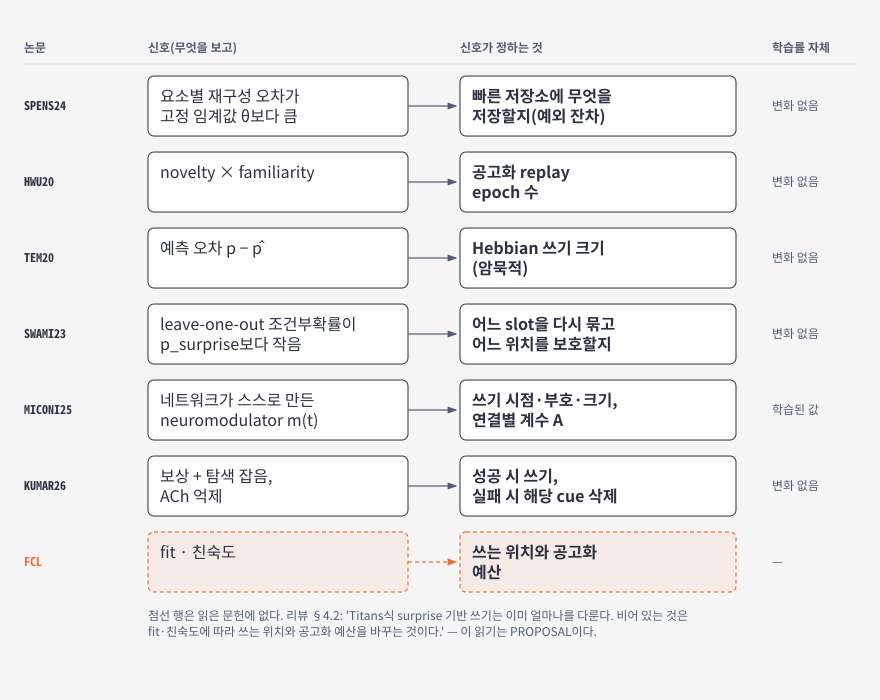

PROPOSAL 리뷰는 ‘schema가 학습 규칙 자체를 제어하는가’를 네 질문으로 쪼개 시험하자고 한다. 무엇을 쓰는가, 어디에(빠른 기억 대 느린 수준) 쓰는가, 얼마나 쓰는가, 언제 공고화하는가. 그리고 이렇게 쓴다. “Titans식 surprise 기반 쓰기는 이미 "얼마나"를 다룬다. 비어 있는 것은 fit·친숙도에 따라 쓰는 위치와 공고화 예산을 바꾸는 것이다.” (리뷰 §4.2).
느린 구조 + 빠른 결합 분해는 반복되지만, 구조를 실행 중에 고치는 논문은 없다
LITERATURE (fulltext-read) 같은 분해가 여섯 논문에서 반복된다(TEM20 W/M, SWAMI23 T/E, MICONI25 느린 파라미터/P(t), KUMAR26 좌표 코드/cue→goal, SPENS24 VAE/MHN, HWU20 피질 CHL/해마 인덱스). 그러나 공통 한계가 있다. 느린 구조는 모두 오프라인·바깥 루프에서 배우거나 아주 느리게 다시 배운다. 불일치를 만났을 때 구조를 그 자리에서 수정·분할하는 실험은 하나도 없다. (리뷰 §4.3).
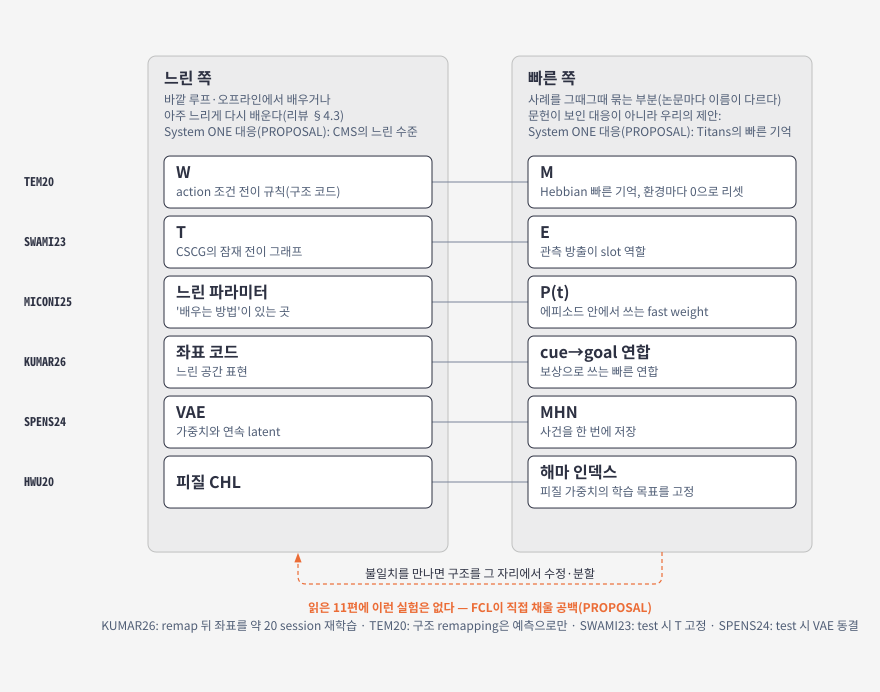

PROPOSAL 이 분해는 System ONE의 CMS(느린 수준)·Titans(빠른 기억) 역할 분담과 잘 맞는다. 위 논문들이 CMS나 Titans를 쓴 것은 아니며 이 대응은 문헌의 발견이 아니라 우리가 구조 prior로 주입하는 해석이다. (05 §1). OPEN accommodation, 곧 불일치를 만났을 때 구조를 그 자리에서 수정·분할하는 일은 FCL이 직접 채워야 할 공백이다. 문헌에 있는 것은 정성 규칙(오류가 크면 새 구조, 작으면 미세 조정)과 SPENS24의 ‘예외만 따로 저장’뿐이다.
잘 측정되지 않은 것: 보존·망각, 표면 대 구조, 계산량
- LITERATURE 보존·망각: CHU25·ELDER26은 측정이 없고 TEM20은 기억을 리셋하며 KUMAR26은 기존 쌍 보존을 보고하지 않았다. GOUDAR23은 재학습 savings뿐이고 MICONI25는 장기 망각이 없다. HWU20만 부분 측정이 있다.
- LITERATURE 표면 대 구조: 구조는 같고 표면만 다르거나 표면은 같고 구조가 다른 lure로 분리한 논문은 없다. GOUDAR23은 오히려 학습 속도가 자극 코사인 유사도에 크게 의존함을 보인다(유사도 1에서 약 7 trial, 0에서 약 175 trial, 그림 판독).
- LITERATURE 계산량: 같은 품질의 추론 계산을 잰 논문이 없다. HWU20의 절감도 학습 epoch이다. H-COMPUTE를 받치는 문헌 근거는 개념 수준뿐이다(SPECTRUM26의 ‘accommodation은 더 많은 계산’, SWAMI23의 posterior 엔트로피·1회 EM으로 충분).
ARCHIVE 출처: 리뷰 §4.4. 수치는 리뷰가 적은 값이고 이 저장소에서 새로 재현한 값이 아니다.
코드는 대부분 있지만 그대로 쓰기 어렵다
PROPOSAL 라이선스 없는 코드는 읽고 인용만 한다. 필요한 기제는 논문 식에서 다시 구현한다. 모두 소형(수백 유닛, CPU 가능)이라 재구현 비용은 작다. (리뷰 §4.5)
6.6 FCL 설계의 시작점과 옮겨진 곳
PROPOSAL 리뷰 §5는 문헌이 준 출발점을 여덟 개로 적는다. 아래는 문헌이 준 출발점이다. 구현이나 채택 결정이 아니다. 설계 질문(DQ)은 여덟이다(리뷰 §5): DQ1 schema의 위치·형태, DQ2 형성과 선택(문맥 controller·라우팅), DQ3 동화 대 조절·새로움 gating·선택적 갱신·수정·분할·전환, DQ4 다중 시간척도와 Sleep/replay 공고화, DQ5 계산 깊이 제어와 ‘깊은 사고 → 빠른 판단’(H-COMPUTE), DQ6 같은 구조 새 과제의 표본 효율(H-SAMPLE)과 표면 유사성 견고성, DQ7 보존·망각·간섭, DQ8 빌릴 평가 패러다임.
| 출발점 | 한 줄 | 옮겨진 문서 | 편집 블록(감사 W3) |
|---|---|---|---|
| 1 (DQ1) | schema를 모듈이 아니라 측정 가능한 성질로 정의한다. 조작적 증거 셋: 같은 구조의 문제들에 걸친 subspace 재사용, 새 같은-구조 과제에서 가중치·상태 변화량 감소, 해당 표현을 제거·교체했을 때 구조 전이만 선택적으로 소실 | docs/03·08·11 | L03-01 · L08-04 · L11-02 |
| 2 (DQ3) | 첫 ‘schema-조건부 학습’ 후보는 쓰기 gate를 fit과 결합하는 것이다. SWAMI23의 선택적 갱신 마스크에서 출발하고 MICONI25식 학습된 neuromodulator가 더 강한 후보다. 대조: 항상 쓰기, surprise만, 고정 무작위 gate(같은 쓰기 예산) | docs/06·08 | L06-01 · L08-03 |
| 3 (DQ3·DQ7) | accommodation을 직접 설계해야 한다. 출발점은 STRUCTK25·SPECTRUM26의 정성 규칙과 SPENS24의 ‘예외만 따로 저장’이다. 실패 모드는 잘못된 구조가 조용히 내용을 묶는 것과 schema 과적용이다 | docs/05·06·11 | L05-03 · L06-04 · L11-03 |
| 4 (DQ4) | Sleep의 첫 형태는 빠른 저장소에서 느린 수준으로 가는 teacher–student replay다(SPENS24). replay 예산을 novelty×familiarity로 배분하는 방식(HWU20)을 고정 예산과 비교한다 | docs/05·08 | L05-05 · L08-05 |
| 5 (DQ6) | H-SAMPLE 평가 틀은 이미 여럿 있다. 단 표면 유사도가 결과를 크게 바꾸므로 표면과 구조를 분리한 lure를 반드시 넣는다 | docs/08 | L08-01 |
| 6 (DQ5) | H-COMPUTE는 문헌 지지가 가장 약한 사실상 우리 고유 가설이다. 후보 신호(CSCG posterior 엔트로피, 기억 recall 신뢰도, attractor 수렴 탐침)보다 고정 깊이의 품질–계산 곡선이 먼저다 | docs/06·08·11 | L06-03 · L08-02 · L11-08 |
| 7 (DQ7) | 보존 평가는 우리가 만든다. ABA 조건 복귀, 이전 과제의 zero-shot 재평가, savings를 함께 쓴다 | docs/06·08 | L08-05 · L06-02 |
| 8 (공통) | 모든 기제는 §4.1의 대조와 함께 판정하고, 문헌 코드는 식에서 재구현한다 | docs/08·10 | L08-03 · L10-01 · L10-03 |
| 문서 | 편집 수 |
|---|---|
| 03 SBL·인지·기억의 이론 기반 | 8 |
| 05 통합 아키텍처 | 5 |
| 06 수학적 연구 명세 | 4 |
| 08 검증 체계 | 6 |
| 10 진화 정책 | 4 |
| 11 후속 가설·미해결 질문 | 8 |
| 합계 | 35 |
ARCHIVE W3의 요약은 W3-summary.txt에 있다. 의무 항목별 처리표(정정 여섯 건, §4.1–§4.5, §5 출발점 여덟, §6·§7·§8, 11-09 항목), 기존 문서와의 충돌 목록 C1–C8, 숫자 대조표(51행, 불일치 0), 판단이 애매한 편집 열세 가지로 이뤄져 있다. 편집 블록 본문은 반영 전 초안이라 마스터 수정이 들어간 최종 문장은 docs 본문이 기준이다.
6.7 갭 판정과 검색 깔때기
LITERATURE (검색 범위 안) 외부 요약의 결론은 이렇다. “다양한 경험에서 schema를 스스로 발견·형성·수정·통합하고, 그 schema가 이후 학습 규칙 자체를 제어하는 범용 지속학습 아키텍처는 완성된 형태로 확인되지 않았다”(리뷰 §6). 이 말이 맞는지 검색으로 반례를 찾아봤다. 범위는 2023-01-01부터 2026-11-11까지, 쿼리는 OpenAlex 26개·arXiv API 44개·Semantic Scholar 9개·웹 검색 5개다. 고유 레코드 1,047건을 자동 선별해 제목 265건, 초록 약 42건을 읽었고 전문은 5건을 부분적으로 읽었다.
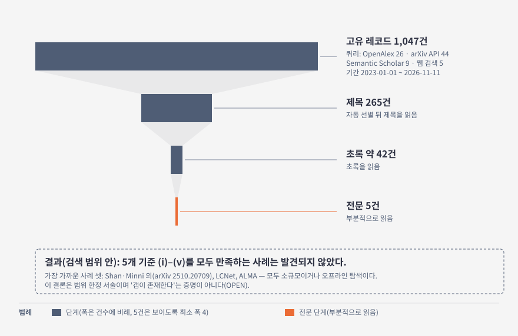

| 기준 | 내용 |
|---|---|
| (i) | 다양한 경험에서 재사용 구조를 스스로 발견·형성 |
| (ii) | 경험이 어긋날 때 그 구조를 수정·분할·병합 |
| (iii) | 그 구조가 이후 학습 규칙(무엇·어디·얼마나·언제 갱신할지)을 제어 |
| (iv) | 순차 다과제·다영역의 일반 지속학습 평가 |
| (v) | 구현되고 평가된 완성 형태 |
LITERATURE (검색 범위 안) 결과: 이 범위에서 다섯 기준을 모두 만족하는 사례는 발견되지 않았다. 가장 가까운 사례는 셋이다. Shan·Minni 외 Separating the what and how of compositional computation to enable reuse and continual learning(arXiv 2510.20709, NeurIPS 2025)는 문맥 posterior가 저랭크 RNN의 계산과 학습을 gate하지만 task id가 입력으로 주어지고 생성 모형 계열이 손으로 정해져 있다. LCNet은 latent cause로 문맥을 추론한다. ALMA는 메모리 설계를 오프라인에서 탐색한다. 셋 모두 소규모이거나 오프라인 탐색이다(리뷰 §6).
전문을 읽은 다섯 건의 기준별 판정(W6 기록)
| 후보 | (i) | (ii) | (iii) | (iv) | (v) | 읽은 깊이 |
|---|---|---|---|---|---|---|
| WHATHOW 2510.20709 (NeurIPS25) | P | P | M(협소) | P | P | 전문(§1–4, Disc.) |
| MEDCRP 2605.20297 (ICML26) | P | N | M(협소) | M(단일 영역) | M | 전문(§1–4, App.H) |
| LCNET 2312.08519 (SciRep24) | P | P | P | P | P | 전문(VoR 본문, Methods LCI) |
| ALMA 2602.07755 | P | P | P | P | M | 전문(초록, §1, §3, 한계) |
| NESTED/HOPE 2512.24695 | N | N | P | P | M | 전문 일부(§8, §9.1 + 전체 keyword scan) |
LITERATURE (전문 부분 정독) 위 표는 상세 기록의 후보 표에서 이 다섯 행을 그대로 옮겼다. 상세 기록은 W6-swami23-metadata-gap.md에 있다. 그 기록은 ‘(i)–(v) 전부 partial 이상인 사례는 전문 확인 3건(WHATHOW, LCNET, ALMA)’이라고 적는다.
| 후보 | 이유 | 식별자 상태 |
|---|---|---|
| Shan·Minni 외, Separating the what and how…, arXiv 2510.20709 (NeurIPS 2025) | 문맥 추론이 계산과 학습을 동시에 gate. 갭에 가장 가까움 | worker가 §1–4·Discussion 정독(카탈로그 S35) |
| SMART (Gao 외, 2021) | 지속학습을 직접 다루는 schema 모델 | STRUCTK25 참고문헌에서 발견. DOI 미확인 |
| Kobayashi 외 2025, arXiv 2512.20605 | transformer 내부 schema로 계층적 행동 제어(SPECTRUM26 ref 96) | 미확인 |
| Lanzillotta·Samiei·Precup·Pascanu 2026, arXiv 2607.05609 | ‘To Retain or to Adapt?’ 지속학습 일반화 | 미확인 |
| Stoianov 외 2022 | generative replay와 지속학습 | STRUCTK25 참고문헌, 미확인 |
| Spens & Burgess 2026 compressive RAG(카탈로그 S07) | SPENS24의 후속. 두 실험 계열을 섞지 않고 비교 | 기존 목록(discussion-import) |
LITERATURE 출처: 리뷰 §7. 식별자를 만들어 채우지 않는다.
6.8 재료 논문 A01–A15의 확인 깊이
ARCHIVE 통합 모델의 재료 논문은 정독이 0편이다. 감사는 이렇게 적는다. “사용자는 "논문 포함 읽고 이해하고"를 요청했다(U-T09). 아직 fulltext-read가 0편이다.” (감사 §6.2). 확인 깊이는 카탈로그의 status 열 값 그대로이고, 2026-11-11의 원문 정독은 신경망 SBL 11편에만 적용됐다(EVIDENCE). 아래 ‘자리’는 docs/05의 재료 표가 맡긴 역할이며 조합은 연구 제안이다(기존 논문 하나가 이 전체를 구현하거나 검증한 것이 아니다).
| ID | 제목 | 저자·날짜(카탈로그) | 확인 깊이 | FCL 설계에서 맡은 자리 |
|---|---|---|---|---|
| A01 | Titans: Learning to Memorize at Test Time | Behrouz, Zhong, Mirrokni; arXiv submitted 2024-12-31 | metadata-checked | 입력의 관계를 neural memory fast weights에 저장·읽기(05 §1 Titans) |
| A02 | Nested Learning: The Illusion of Deep Learning Architectures | Behrouz, Razaviyayn, Zhong, Mirrokni; NeurIPS 2025 version; arXiv 2025-12-31 | metadata-checked | 학습 과정을 여러 optimization level·context flow로 조직. CMS는 여러 갱신 시간척도의 기억(05 §1) |
| A03 | Language Models Need Sleep: Learning to Self-Modify and Consolidate Memories | Behrouz, Hashemi, Javanmard, Mirrokni; arXiv v1 2026-06-02; v2 2026-07-10 | metadata-checked | fast→slow consolidation, Knowledge Seeding, Dreaming(05 §1 Sleep) |
| A04 | Titan-Llama: Retrofitting Pre-trained LLMs with External Neural Memory Modules | Pan and Behrouz; 2026-10 | official-search-checked | pretrained sequence path retrofit, segmented attention + NMM(05 §1 Titan-Llama) |
| A05 | Text Embeddings Reveal (Almost) As Much As Text | Morris et al.; EMNLP 2023 | discussion-import | Vec2Text. 이전 H4 경로의 근거이며 임의 graph trajectory decoder와 다르다(05 §10) |
| A06 | Reasoning with Latent Thoughts: On the Power of Looped Transformers | Saunshi et al.; 2025-02-24; ICLR 2025 | metadata-checked | shared weights로 effective depth 증가. depth와 parameter 수의 분리(05 §1 Looped) |
| A07 | Scaling up Test-Time Compute with Latent Reasoning: A Recurrent Depth Approach | Geiping et al.; v1 2025-02-07; v2 2025-02-17 | metadata-checked | shared weights로 effective depth 증가. input/core/output latent recurrence(05 §1 Looped) |
| A08 | Mixture-of-Depths: Dynamically allocating compute in transformer-based language models | Raposo et al.; 2024-04-02 | metadata-checked | depth별 token 계산 배분. top-k causality를 명시(05 §1 MoD) |
| A09 | Mixture-of-Recursions: Learning Dynamic Recursive Depths for Adaptive Token-Level Computation | Bae et al.; 2025; NeurIPS 2025 | official-search-checked | recursive sharing + adaptive token depth + cache 정책(05 §1 MoR) |
| A10 | Depth-Attention: Cross-Layer Value Mixing for Language Models | Zeng et al.; EMNLP 2026; arXiv2606.05014 | official-search-checked | 이전 layer/loop의 표현 선택적 재사용(05 §1 Depth-Attention) |
| A11 | Attention Residuals | Kimi Team; 2026-03-16 | metadata-checked | residual/block 표현의 선택(05 §1 Attention Residuals) |
| A12 | Mixture-of-Depths Attention | Zhu et al.; 2026-03-16 | metadata-checked | sequence + depth KV의 선택. A08의 compute skipping과 다른 방법(05 §1 MoDA) |
| A13 | Teaching Pretrained Language Models to Think Deeper with Retrofitted Recurrence | 2025 | discussion-import | pretrained input/shared core/output 전환(카탈로그 note) |
| A14 | Encode, Think, Decode | 2025 | discussion-import | ETD. intermediate repeated layers와 router(카탈로그 note) |
| A15 | Relaxed Recursive Transformers | 2024 | discussion-import | pretrained reuse와 depth adapters(카탈로그 note) |
ARCHIVE 직접 센 값(카탈로그 status 열): A01–A15 열다섯 항목 중 metadata-checked 8, official-search-checked 3, discussion-import 4, fulltext-read 0이다. A05는 재료가 아니라 vec2text 근거이고, A16–A18과 A04-CODE(코드 검토 pin)도 카탈로그에 있으며 모두 discussion-import다. 감사가 정독 대상으로 꼽은 것은 A01–A04와 A06–A15다. 정독 우선순위와 대조할 질문은 감사 W1-gaps의 G1-14에 있다. OPEN 정독 전에는 05의 재료 표를 metadata·초록 수준 근거로 읽는다.
6.9 11-09 주간 추적과 11-02 기준선
ARCHIVE 11-02 기준선. 대화 기준 2026-11-02의 초기 SBL 문헌 지도다(research/2026-11-02-baseline.md). 직접 neural/continuous 계열 아홉 행(TEM, transformer–hippocampal 모델, Goudar, Chu, Yoshida, Spens, Kumar, Hippoformer, IP2-RSNN·Capacity), symbolic·discrete·hybrid 계열(Schema Networks, Hidden Schema Networks, schema-learning and rebinding, S-HAI, LCNet, Schema for ICL), 실제 뇌의 표현 논의(N26–N31), schema spectrum으로 이뤄진다. 문서의 결론은 ‘안정적인 구조와 빠른 새 binding을 분리하되, 구조의 수정/성장도 가능해야 한다. Schema가 표현되는 곳이 vector 하나인지 dynamics인지 parameter subspace인지 미리 고정하지 않는다.’다. 이번 게시에서 모든 논문을 다시 읽은 것이 아니며 각 기록의 확인 깊이는 카탈로그를 따른다.
ARCHIVE 11-09 주간 조사. 보고된 조사 구간은 2026-11-02~09다(research/2026-11-09-sbl-tracking.md). 아래 수치는 직전 대화의 보고를 그대로 이관한 것이며 독립 재검증이 아니다. 당시 결론은 “해당 기간에 continuous neural schema의 형성·선택·수정·지속학습을 모두 통합 검증한 새 논문은 확인하지 못했다. 이를 분야 전체의 부존재 증명으로 확대하지 않는다.”다. 일곱 참고점과 세 가설(A 안정화≠구조 형성, B 보호·국소 수정·확장·분리 선택, C schema 선택과 선택적 쓰기가 추론 비용에 주는 영향), 추적 항목 P0–P2를 남겼다. 후속 추적의 범위·분류·필드·보고 순서는 TRACKING_POLICY가 정한다(자동화 생성·수정 명령이 아니다).
| ID | 논문 | 보고된 요지 | 확인 깊이 |
|---|---|---|---|
| S19 | Curriculum unlearning in humans and neural networks Rubruck, Zhang, Saxe, Summerfield; 2026-11-03 | 단순한 규칙에 맞춰 압축된 representation이 예외를 표현할 차원을 약화시킬 수 있다. 직접적인 CMS/LLM architecture 연구가 아닌 adjacent evidence | official-search-checked |
| S20 | Invariance before structure: two modes of emergent compression in representation learning Rajpal and Goodman; 2026-11-05 | parameter-space compression과 task temporal state-space structure를 구분. 안정화·압축을 구조 형성의 PASS로 삼지 말자는 가설 A의 근거 | official-search-checked |
| S21 | Tell Me What To Learn: Generalizing Neural Memory to be Controllable in Natural Language Bennett, Zollo, Zemel; v1 2026-02-26; reported v3 2026-11-05 | neural memory bank에 무엇을 쓸지 자연어 지시로 학습. 선택적 write의 근거이며 abstract schema discovery의 직접 증거는 아니다 | official-search-checked |
| S22 | A complementary learning system for continual episodic memory in large language models Pan et al.; bioRxiv 2026-08-24; eLife reviewed preprint 2026-11-04 | 경험별 masked LoRA·embedding 선택·replay 통합. 기억 복원과 유용한 판단은 별도 학습 문제 | official-search-checked |
| S23 | From sequences to schemas: low-rank recurrent dynamics underlie abstract relational representations Boboeva, Pezzotta, Dimitriadis, Akrami; 2026-04-10 preprint | 토큰과 관계를 분리하는 sequence task, 저랭크 recurrent scaffold. 범용 schema discovery의 입증이 아니다 | official-search-checked |
| S24 | Task Schema and Binding: A Double Dissociation Study of In-Context Learning Chaeha Kim; 2025-12-19 | activation patching으로 task type과 concrete association을 구분. 연속 activation의 기능적 분해이며 세션 간 weight update 연구는 아니다 | official-search-checked |
| S25 | Hierarchical learning creates invariant schema within plastic neural networks Elder, Zheng, Shimelis, Rutishauser, Lin; J Comput Neurosci 54(3):503-514; online 2026-06-30 | 계층 학습에서 상위 schema circuit은 안정적이고 upstream representation이 새 데이터를 반영한다고 보고됐다. 이후 11-11 원문 검토가 방향 어휘를 정정했다 | fulltext-read(11-11) |
OPEN 일곱 중 설계 문서에 근거로 들어간 것은 감사 시점에 S19·S25·S23(docs/11 §3)과 S24(docs/11 §1) 정도였고, 나머지는 W3 문헌 통합 편집이 다뤘다. 11-09 수치는 ARCHIVE이며 이 저장소에서 재현한 값이 아니다. S-HAI v3(10/26)와 Kumar v5(10/20)는 새 논문으로 재소개하지 않았고 다음 보고에서 최신 버전을 다시 조회해야 한다(11-09 §10).
2부
어떻게 동작하나
통합 아키텍처, 수학적 명세, 상태·저장 계약. 모두 제안 수준의 설계이며 구현은 없다.
7 통합 구조: 한 모델이 한 번의 질문을 처리하는 방식
System ONE은 사전학습 LLM 하나를 고쳐 쓰는(retrofit) 통합 설계안이다. 한 모델 안에서 질문마다 "그냥 답한다 · 쓰고 나서 답한다 · 쓰고 더 깊이 계산해서 답한다" 가운데 하나를 고르게 하려는 것이 목적이다. 이 절은 위에서 아래로 목적 → 기능 → 입력·출력 → 구조(식·그림) 순서로 그 구조를 설명한다. 통합 모델의 구현·학습·효용 검증은 아직 0이다. 아래 내용은 모두 제안·가설·검증 계획이다.
7.1 목적: 무엇을 위한 구조인가
USER 사용자가 정한 최종 방향(U-T07, 05 머리말)은 이렇다. 사전학습 LLM의 sequence layer(토큰 순서를 처리하는 층)를 Titan-Llama 계열로, FFN(feed-forward network, 층 안의 비선형 변환 블록)을 CMS(continuum memory system, 갱신 시간척도가 다른 여러 level의 기억)로 점진적으로 바꾼다. 같은 core를 재귀적으로 실행하며 문맥별 schema 판단으로 빠른 답·rapid update(빠른 갱신)·깊은 사고를 조절한다. 최종적으로 외부 schema offload·versioning·retrieval을 지원한다.
PROPOSAL 위 조합은 연구 제안이다. 기존 논문 하나가 이 전체를 구현하거나 검증한 것은 아니다(05 머리말). 별도 fast model을 최종 제품으로 전제하지 않는다. 실험용 작은 모형·baseline·외부 teacher는 허용하지만 통합 목표를 대체하지 않는다(05 §3).
이 구조가 다루는 대상: schema
PROPOSAL schema는 "여러 경험에 걸쳐 재사용되며 새로운 사례의 예측·판단·학습에 필요한 정보와 계산을 줄이는 조건부 관계 구조"로 둔다(03 §1). 하나의 벡터·graph node·MLP·시냅스 집합과 일대일로 대응한다고 가정하지 않는다. retrofit LLM에서는 schema를 모듈이 아니라 측정 가능한 성질로 다루며, 조작적 증거는 세 가지다(sbl-fulltext-review §5 출발점 1).
- 같은 구조의 문제들에 걸친 활동 subspace 재사용
- 새 같은-구조 과제에서의 가중치·상태 변화량 감소
- 해당 표현을 제거·교체했을 때 구조 전이만 선택적으로 사라짐
USER (U-T05) schema를 symbolic으로 두는 것과 latent space에 표현하는 것을 구분해 보고하되 후자에 더 관심이 있다. PROPOSAL 그래서 1차 대상은 continuous latent schema, 곧 학습 가능한 파라미터·fast state·활성 상태에 놓인 재사용 가능한 관계·조건·계산 구조다. symbolic graph/program schema와 discrete latent는 비교군과 경계 사례다(03 §6).
7.2 재료: 각 재료가 맡는 일과 확인 깊이
System ONE은 열한 갈래의 재료를 조합한다(05 §1). 아래 층 그림은 각 재료가 모델 안에서 맡는 자리와 재료 논문의 확인 깊이(catalog.tsv status 열)를 함께 보이고, 그 아래 표는 같은 내용을 "가정하면 안 되는 것"과 함께 적었다.
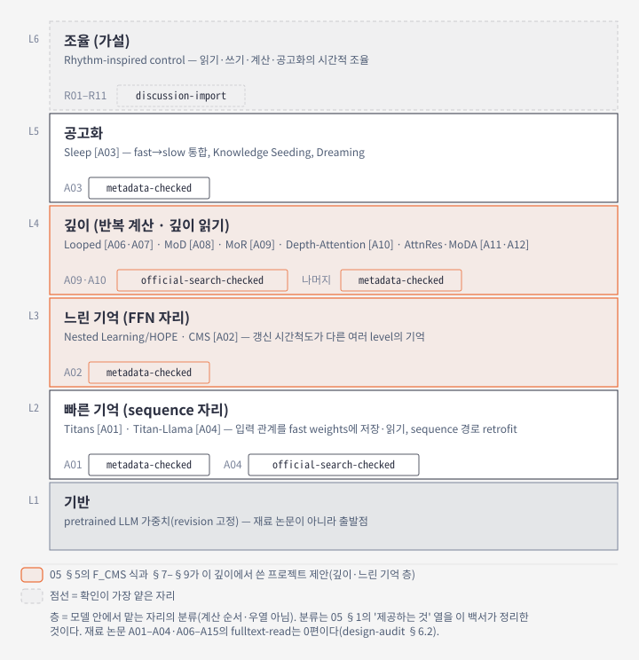
| 재료 | 제공하는 것 | 제공한다고 가정하면 안 되는 것 | 라벨 · 확인 깊이 |
|---|---|---|---|
| Titans [A01] | 입력의 관계를 neural memory fast weights에 저장·읽기 | KV(key–value) 정확도만으로 추상 schema 형성 | LITERATURE (metadata-checked) |
| Titan-Llama [A04] | pretrained sequence path retrofit, segmented attention + NMM(neural memory module, 신경 기억 모듈) | 전 층 전환·장기 사용자 state 운영의 자동 완성 | LITERATURE (official-search-checked). 코드 pin(A04-CODE)은 discussion-import |
| Nested Learning / HOPE [A02] | 학습 과정을 여러 optimization level·context flow로 조직(HOPE는 A02가 다루는 구조의 이름) | update frequency가 의미적 추상화 수준이라는 등식 | LITERATURE (metadata-checked) |
| CMS [A02] | 여러 갱신 시간척도의 기억. 레벨과 갱신 빈도는 설계 시 고정이고 학습률 와 decay 는 입력으로부터 생성되며(Eq. 79–97) schema·assimilation·accommodation 개념은 없다 | slow level은 forward에서 실행되지 않는다는 해석 | LITERATURE (catalog는 metadata-checked, 이 행의 서술은 '전문 일부 정독' 기록) |
| Sleep [A03] | fast→slow consolidation, Knowledge Seeding, Dreaming | 코드·아키텍처 자체의 development evolution과 동일 | LITERATURE (metadata-checked) |
| Looped Transformer [A06, A07] | shared weights로 effective depth 증가 | 한 번도 반복 학습하지 않은 모델을 그냥 재호출하면 개선 | LITERATURE (metadata-checked) |
| MoD, Mixture-of-Depths [A08] | depth별 token 계산 배분 | 문맥 수준 schema 이해의 직접 대체 | LITERATURE (metadata-checked) |
| MoR, Mixture-of-Recursions [A09] | recursive sharing + adaptive token depth + cache 정책 | 임의 pretrained 모델의 무학습 전환 | LITERATURE (official-search-checked) |
| Depth-Attention [A10] | 이전 layer·loop의 표현 선택적 재사용 | persistent experience memory와 동일 | LITERATURE (official-search-checked) |
| Attention Residuals(AttnRes) · MoDA(Mixture-of-Depths Attention) [A11, A12] | residual·block 또는 sequence + depth KV의 선택 | MoDA와 2024 MoD가 같은 방법이라는 해석 | LITERATURE (metadata-checked) |
| Rhythm-inspired control [R01–R11] | read·write·compute·consolidate의 시간적 조율 가설 | biological Hz를 token interval에 직접 매핑 | PROPOSAL 가설. 근거 R01–R11은 discussion-import |
같은 분해가 여러 논문에서 반복된다
LITERATURE (fulltext-read) 원문으로 읽은 신경망 SBL(schema-based learning, 기존 구조가 새 학습을 돕는다는 관점) 논문 가운데 여섯 편에서 "느린 구조 + 빠른 결합"의 같은 분해가 반복된다(sbl-fulltext-review §4 4.3). 느린 쪽 / 빠른 쪽은 TEM20(Tolman-Eichenbaum Machine, Whittington 외 2020)이 W / M, SWAMI23(Swaminathan 외 2023)이 T / E, MICONI25(Miconi·Kay 2025)가 느린 파라미터 / fast weight P(t), KUMAR26(Kumar 외 2026)이 좌표 코드 / cue→goal 연합, SPENS24(Spens·Burgess 2024)가 VAE(변분 오토인코더) / MHN(modern Hopfield network), HWU20(Hwu·Krichmar 2020)이 피질 CHL(문서가 약어를 풀지 않았다) / 해마 인덱스다.
LITERATURE (fulltext-read) 다만 이 분해가 데이터에서 발견된 것은 아니다. TEM20의 분리는 고정 W_repeat/W_tile 같은 아키텍처 prior와 학습 분포가 만들었고, KUMAR26의 모듈 묶음은 Foster 외 2000의 schema 세 개를 이어받았으며 관계 계산 controller(NAVIGATE)는 backprop 사전학습 뒤 고정이다. "T는 느리고 E는 빠르다"는 SWAMI23의 원문 용어가 아니라 우리의 정리다(05 §1).
PROPOSAL 이 분해는 System ONE의 CMS(느린 수준)·Titans(빠른 기억) 역할 분담과 잘 맞는다. 위 논문들이 CMS나 Titans를 쓴 것은 아니며, 이 대응은 문헌의 발견이 아니라 우리가 구조 prior로 주입하는 해석이다. ARCHIVE "FFN = 모든 schema, sequence = 모든 binding"이라는 일반 법칙은 주장하지 않고 CMS·Titan 역할 분담의 후보 가설로만 쓴다(S24, sbl-tracking).
7.3 한 모델 안의 네 상태와 전체 구조
PROPOSAL System ONE은 한 모델 안에 네 가지 상태를 구분해 둔다(05 §2). 아래 표의 기호는 06 §1에서 가져왔고 상태와의 대응은 이 백서의 정리다. 기호의 뜻은 수학 명세에 있다.
| 상태 | 담는 것 | 기호 |
|---|---|---|
| 입력 표현 | 현재 token과 관계·목표의 context | |
| 추론 작업 상태 | 현재 문제의 hidden states, 유효한 recursion별 depth bank | |
| 지속 기억 | schema를 담는 weights, fast state, 느린 CMS levels, 적용 조건 | |
| 제어 상태 | schema 적합성, uncertainty, 선택적 write, compute budget, halting, 통합 준비도 | (controller 자체의 파라미터) |
추론 작업 상태와 지속 기억은 구분한다. depth attention은 이번 생각을 다시 읽는 통로이고 memory는 다음 문제에 영향을 주는 통로다. 이번 생각의 일부가 검증·학습을 거쳐 지속 기억에 들어갈 수는 있다(05 §2).
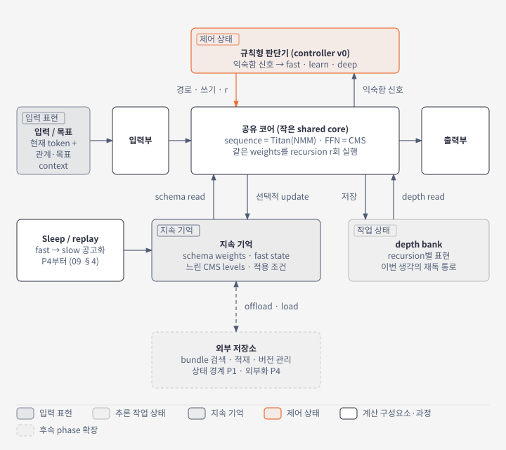
그림의 글 설명
- 주 흐름: 입력/목표 → 입력부 → 공유 코어(sequence는 Titan의 NMM, FFN은 CMS, 같은 weights를 recursion r회 실행) → 출력부.
- 코어 ↔ 지속 기억: 코어가 schema를 읽고(schema read) 선택적으로 갱신한다(선택적 update).
- 코어 ↔ depth bank: 코어가 recursion마다 표현을 저장하고 이후 recursion이 읽는다(depth read).
- 규칙형 판단기 ↔ 코어: 판단기가 경로·쓰기·r을 정하고 코어에서 나온 익숙함 신호를 읽는다.
- Sleep/replay → 지속 기억: fast에서 slow로의 공고화(P4부터). 지속 기억 ↔ 외부 저장소: offload·load(상태 경계는 P1, 외부화는 P4).
PROPOSAL 같은 내부 controller가 문맥별 schema와 토큰별 계산을 연결하고, 각 반복에서 계속 계산·빠른 학습·전환·종료를 재평가한다. 외부 저장소는 memory artifact의 검색·적재·버전 관리를 담당한다(05 §3). 입출력은 이렇다. 한 번의 질문에서 입력은 현재 token과 관계·목표 context이고 출력은 응답이다. learn·deep 경로에서는 응답에 더해 지속 기억의 갱신 후보(요청 전용 working state의 변경)가 생기고 commit 전 검증을 거친다. 모든 응답에는 결정 trace(경로·신호값·예산)가 붙는다(09 §2, 상태·시계·저장 계약).
7.4 한 번의 질문: fast · learn · deep 세 경로
USER U-T07 원문은 이 모델의 핵심 거동을 "익숙하면 매우 빠르게, 덜 익숙하면 rapid learning, 더 낯설면 더 깊은 loop"로 정의했다(design-audit §4 근거 1). 그래서 첫 통합 모델(P1)부터 질문마다 경로를 고르는 가장 얇은 판단기를 둔다.
PROPOSAL 규칙형 판단기(controller v0)는 익숙함 신호의 두 임계값으로 질문마다 세 경로 가운데 하나를 고르고, 고른 경로·신호값·예산을 결정 trace로 남긴다(09 §2, design-audit §4). 익숙함 신호는 NMM의 surprise(기억이 입력을 얼마나 예상 밖으로 느꼈는가)와 CMS 분기의 잔차(예측 오차)다. 신호를 계산하는 구체식은 저장소에 아직 없고 P1 구현에서 정한다.
| 경로 | 익숙함 신호 | 쓰기 | recursion | 답하는 방식 |
|---|---|---|---|---|
| fast | 낮음(익숙함) | 없음 | r = 1 | 쓰기 없이 답한다 |
| learn | 중간 | Titans식 surprise write | r = 1 | 쓰고 나서 답한다 |
| deep | 높음(낯섦) | write | r = 2 | 쓰고 나서 retrofit 블록을 한 번 더 적용해 답한다. 짧은 적응 학습을 같은 예산 안에 포함한다 |
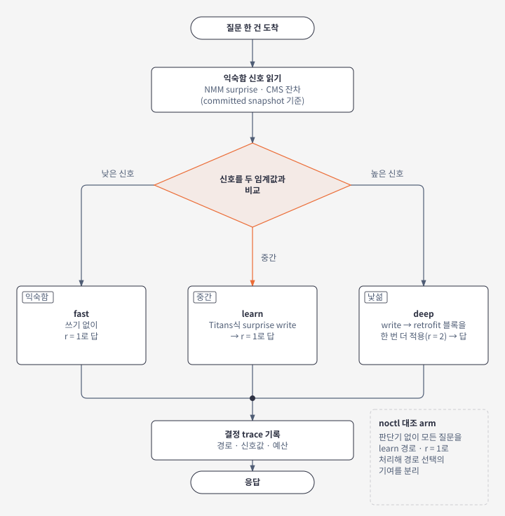
PROPOSAL 결정 trace는 질문마다 경로·신호값·예산을 남기며, fcl CLI는 응답마다 이 trace를 보인다(첫 phase의 데모 시나리오 UJ1 ④단계, 09 §5). P3의 학습된 controller도 같은 접점과 같은 trace 필드를 쓴다(09 §2, D-14). 대조 arm은 여섯이다. 고정(fixed)·무구조(flat)·항상-갱신(always)·판단기 없음(noctl)·경험을 prompt에 넣은 같은 base(ctx)·경험 없는 base(base)가 같은 CLI와 같은 경로로 돈다. 그중 noctl은 같은 모듈·같은 쓰기 예산에서 판단기 없이 모든 질문을 learn 경로·r = 1로 처리해 경로 선택의 기여를 분리한다(design-audit §4). 두 임계값은 dev에서 정해 봉인하며 값은 문서에 없다(첫 phase의 작업 T14).
7.5 경로를 고르는 판단기: 해상도 사다리 v0–v2
USER (U-T07) 입력 문맥에 대한 schema 판단 MLP·구조를 이 과정에 넣는다. PROPOSAL controller는 첫 통합 모델부터 가장 얇은 형태로 존재하고 이후 단계에서 깊어진다. 모든 버전은 같은 입출력 필드를 유지하고 채우는 정도만 늘린다(05 §4).
| head | 하는 일 | 출력 |
|---|---|---|
| 문맥 수준 head | 어떤 관계 구조를 적용할지, 다른 schema로 바꿀지, 조합할지, 수정·분화할지 정한다 | schema 선택 분포 |
| 실행 수준 head | 어떤 token·block를 처리할지, 어느 depth source를 읽을지, fast update의 횟수와 강도, 종료 여부를 정한다 |
PROPOSAL 후보 입력은 현재·과거 hidden state, memory prediction, 구조 적합성, observed·generated 구분, source reliability, prediction residual, epistemic uncertainty(모델의 지식 부족에서 오는 불확실성), aleatoric uncertainty(데이터 자체의 잡음에서 오는 불확실성), goal, 비용 예산이다. 이들 모두를 쓸 필요는 없으며 ablation(요소를 빼 보는 실험)으로 최소 구조를 찾는다(05 §4).
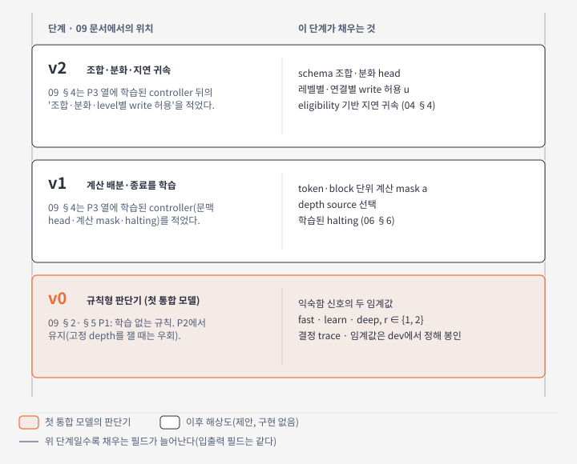
- v0 (첫 통합 모델, P1). 익숙함 신호의 두 임계값으로 fast·learn·deep을 고르는 규칙형이다. depth read와 token routing은 없고 loop는 r ∈ {1, 2}뿐이다(05 §4, 09 §2). P2에서도 유지하되 고정 depth를 잴 때는 우회한다. 한계: "익숙해도 긴 관계 합성은 깊게 계산한다" 같은 다중 신호 결정을 다루지 못한다. 이는 P3의 학습된 controller로 넘긴다(09 §2).
- v1. token·block 단위 계산 mask , depth source 선택, 학습된 halting(06 §6).
- v2. schema 조합·분화 head, 레벨별·연결별 write 허용 , eligibility 기반 지연 귀속(04 §4).
| phase | 해상도 |
|---|---|
| P1 | 규칙형 controller v0: 익숙함 신호 → fast(r=1)·learn(r=1)·deep(r=2, retrofit 블록 1회 추가 적용과 짧은 적응 학습). 경로 분포·계산량은 측정만 하고 품질 이득은 약속하지 않는다 |
| P2 | v0 유지(고정 depth를 잴 때는 우회) + 고정 depth 격자 r ∈ {1, 2, 4, …}(retrofitted recurrence, 학습 포함), 경험 전·후 quality–compute 곡선 |
| P3 | 학습된 controller(문맥 head ·token/block 계산 mask·학습된 halting, 이후 조합·분화·level별 write 허용) + 적응 깊이. 쉬운 사례만 조기 종료한 평균과 구분한다 |
| P4 | deep-to-shallow distillation으로 같은 품질의 depth 감소를 시험한다 |
| P5 | 확대된 retrofit·모델에서 controller를 비용 포함으로 재검증한다 |
LITERATURE (fulltext-read) 읽은 논문 11편에는 불일치를 만났을 때 구조를 그 자리에서 수정·분할하는 실험이 하나도 없다. KUMAR26은 place cell remap 뒤 좌표 코드를 약 20 session 재학습하고, TEM20은 구조 remapping을 예측으로만 말하며, SWAMI23은 test 시 T를 고정하고, SPENS24는 test 시 VAE(변분 오토인코더)를 동결한다. 정성 규칙은 있다. 오류가 크면 새 schema를 만들고 작으면 기존 schema를 미세 조정하며(STRUCTK25, Yu 외 2025의 리뷰), fit이 낮을수록 변화량과 계산이 커진다(SPECTRUM26, Samiei 외 2026의 관점 논문). 둘 다 데이터와 알고리즘이 없다(05 §4). PROPOSAL 문맥 head의 "수정·분화" 출력은 문헌에 구현된 기제가 없어 우리가 직접 설계하고 평가해야 하는 공백이다. 구현이나 채택 결정이 아니다.
7.6 쓰기 gate: 무엇 · 어디 · 얼마나 · 언제
PROPOSAL "schema가 학습 규칙 자체를 제어하는가"라는 큰 질문을 네 질문으로 쪼개 따로 시험한다. 무엇을 쓰는가, 어디에(빠른 기억인가 느린 수준인가) 쓰는가, 얼마나 쓰는가, 언제 공고화하는가다(05 §4, sbl-fulltext-review §4 4.2). Titans식 surprise 기반 쓰기는 이미 "얼마나"를 다룬다. 비어 있는 것은 fit(구조 적합도)·친숙도에 따라 쓰는 위치와 공고화 예산을 바꾸는 일이다.
기능과 입출력은 이렇다. write engine은 이 네 질문을 교체 가능한 정책 접점으로 받는다(09 §2). 입력은 쓸 후보 증거와 판단기의 신호이고, 출력은 무엇을 어디에 얼마나 쓸지와 공고화 시점이다. 06은 이를 하나의 gate로 합치지 않고 기호에 대응시킨다. 쓰는 대상·허용은 , 강도는 , 언제는 level별 consolidation clock 이고, "무엇을"은 쓸 증거의 선택으로 두어 전용 기호를 주지 않았다(06 §3).
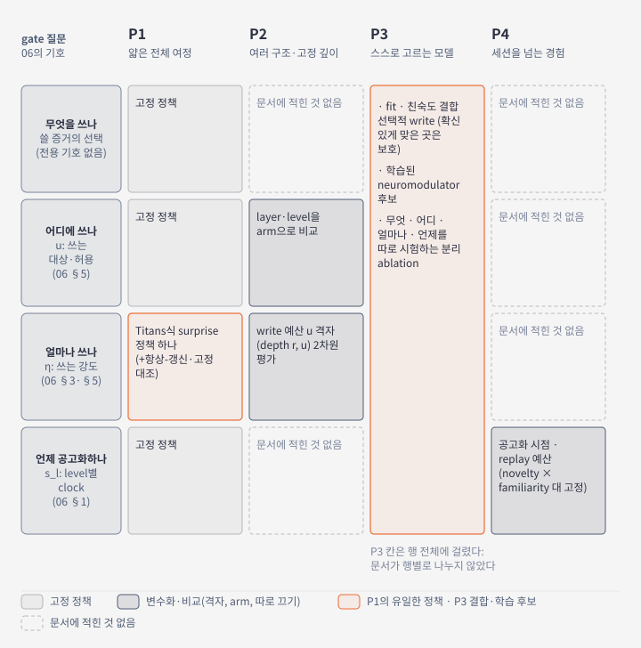
문헌은 "신호가 무엇을 정하는가"가 논문마다 다르다는 점을 보인다. 아래 표의 "대응하는 질문" 열은 이 백서의 정리다.
| 논문 | 신호 | 신호가 정하는 것 | 대응하는 질문 | 학습률 자체의 변화 |
|---|---|---|---|---|
| SPENS24 | 요소별 재구성 오차가 고정 임계값 θ를 넘음 | 빠른 저장소에 저장할 대상(예외 잔차) | 무엇을 | 없음 |
| HWU20 | novelty × familiarity | 공고화 replay epoch 수 | 언제(공고화 예산) | 없음 |
| TEM20 | 예측 오차 | Hebbian 쓰기 크기(암묵적 gate, 논문은 novelty gating이라 부르지 않음) | 얼마나 | 없음 |
| SWAMI23 | leave-one-out 조건부확률이 p_surprise보다 낮음 | 어느 slot을 다시 묶고 어느 위치를 보호할지 | 어디에 | 없음 |
| MICONI25 | 네트워크가 스스로 만든 neuromodulator m(t) | 쓰기 시점·부호·크기(연결별 계수 A는 meta-learned) | 언제·얼마나 | 학습된 값(meta-learned) |
| KUMAR26 | 보상 + 탐색 잡음, ACh 억제 | 성공 시 쓰기, 실패 시 해당 cue 삭제 | 분류하지 않음 | 없음 |
| SPECTRUM26 | schema fit(정성) | 변화량: integration ≈ 0, assimilation 작음, accommodation 큼(데이터 없음) | 얼마나(정성) | 개념만 |
| CHU25 · GOUDAR23 · ELDER26 | 없음 | — | — | — |
PROPOSAL 첫 번째 "schema-조건부 학습" 후보는 쓰기 gate를 fit과 결합하는 것이다. 선택적 갱신 마스크는 SWAMI23의 규칙(확신 있게 맞은 위치는 보호하고 확신 있게 틀린 위치만 빠른 기억에 쓴다)에서 출발한다. 더 강한 후보는 MICONI25식 학습된 neuromodulator다. 연결별 가소성 계수가 필수라는 결과(단일 스칼라로 바꾸면 active 해가 30 run 중 0개)가 단서다. 대조군은 항상 쓰기, surprise만, 고정 무작위 gate이며 같은 쓰기 예산에서 비교한다(sbl-fulltext-review §5 출발점 2, 06 §3). 빠른 갱신의 식은 수학 명세에 옮겼다. 구현이나 채택 결정이 아니다.
PROPOSAL 상한: P1에서 정책이 있는 칸은 "얼마나" 하나(Titans식 surprise 정책과 항상-갱신·고정 대조)뿐이고 무엇·어디·언제는 고정 정책이다. 나머지는 P2 이후의 계획이다(09 §4).
7.7 낯선 입력의 세 경로 A · B · C
USER (B14, 2026-10-12) 낯선 입력에서 가장 익숙한 지점에서 시작할 수 있는지 고찰한다. 학습한 뒤 강제로 다시 구성할지, 가장 유사한 기존 pattern의 구성을 쓸지는 설계 변수이며 실험과 뇌과학으로 정한다.
PROPOSAL 통합 모델에서 이 변수를 낯선 입력의 처리 경로 비교로 정의한다. 경로 A는 빠른 쓰기 뒤 같은 입력을 다시 읽고 이어 간다. 경로 B는 쓰기 없이 가장 가까운 기존 schema의 잠정 답으로 이어 간다. 경로 C는 보류하고 추가 관측을 요청한다. 경로 B의 시작점은 controller가 고르는 "가장 익숙한 지점(bridge)"이며 그 선택 규칙을 학습·ablation 대상으로 둔다. 세 경로는 같은 관측·쓰기 예산에서 검증 체계의 F04와 F19(가까운 새로움·먼 새로움, 후보)로 비교하고 평균 loop 감소로 판정하지 않는다(05 §4).
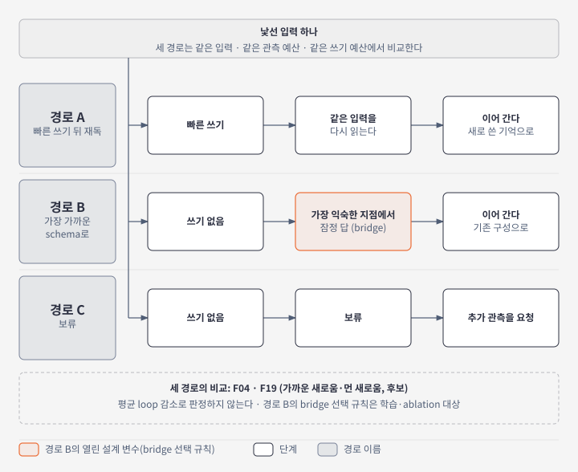
ARCHIVE Melete(이 저장소의 전신)는 같은 질문을 낯선 query의 두 대안(write 후 최초 query 재조회·compile 대 가장 가까운 graph의 명시적 잠정 compile + write)으로 두었고, 먼 단서에서 억지로 confident frame을 만들지 않는 신호도 기록하기로 했다. prototype은 두 route를 구현했으나 추가 neural 효용은 입증되지 않았다(05 §4). OPEN 경로 선택이 familiarity 단독으로 정해지는지 구조 합성 난도와 함께 정해지는지는 "novelty→frequency 단조 함수로 제어하지 않는다"는 단서를 따른다.
7.8 FFN을 CMS로 점진 전환하기
목적: 기존 FFN을 느린 기반으로 보존한 채 새 기억 분기를 얹어, 전환 직후에도 모델의 기능이 바뀌지 않게 한다. 입력은 hidden state 이고 출력은 FFN 모듈의 출력이다. PROPOSAL 이행 후보는 다음 식이다(05 §5).
기호(식의 모양에서 읽은 것이며 문서는 형태를 정하지 않았다): 은 원래 pretrained FFN, 는 새 분기의 번호, 는 분기 gate, 는 에 먼저 곱해지는 쪽, 는 마지막에 곱해지는 쪽, 는 비선형 함수(종류는 정하지 않았다)다.
- PROPOSAL 으로 초기화하면 이 FFN 모듈의 초기 출력은 과 같다(함수 보존). 와 gate까지 모두 0으로 만들면 새 분기의 gradient가 막히므로 그렇게 하지 않는다. 이후 서로 다른 update·protection·activation 정책으로 새 기억을 학습한다.
- PROPOSAL 이 식은 원본 HOPE의 정확한 구조식이 아니라 프로젝트 proposal이다. 모든 FFN이 CMS 계약 아래로 전환되어도 원래 pretrained weights를 내부 기반으로 계승할 수 있다. 원래 FFN을 완전히 제거하려면 distillation·압축으로 추가 이전한다. 여러 을 직렬로 복제하는 것은 함수 보존이 아니다. .
- LITERATURE (metadata-checked) Nested Learning에는 pretrained MLP 초기화와 추가 학습 논의가 있다. 이것을 무학습 swap 성공 또는 필요한 최소 token 수의 근거로 읽지 않는다(05 §5, A02).
- USER (U-T07) FFN을 CMS로 점진 교체하되 "model needs sleep의 방법으로" 한다. OPEN 위 식은 프로젝트 proposal이다. Sleep 논문 [A03]은 metadata-checked 수준이라 그 논문이 규정한 FFN→CMS 전환 절차는 이 절에 반영돼 있지 않다. 정독 뒤 (a) 이 식과 논문 절차의 차이, (b) Knowledge Seeding·Dreaming 단계와 전환 순서의 관계를 기록하고, 차이가 있으면 어느 쪽을 기본으로 삼을지 사용자와 확정한다. 확정 전에는 이 식을 "Sleep 논문 방법의 구현"이라 부르지 않는다. 같은 쟁점이 design-audit §5 B군 9번에 사용자 확인 항목으로 있다.
7.9 Titan-Llama 코드 접점
대화에서 검토한 pin은 sarahpannn/titans-pytorch의 한 커밋(c60b4efa…)이다(catalog.tsv A04-CODE). 이 pin의 코드 검토 이력은 보존하며 최신 HEAD라고 부르지 않는다. 라이선스 기록이 이 저장소에 없어서 코드 사용 방식은 열린 결정(D-02)이고, 추천은 논문 식에서 재구현하고 코드는 읽기·인용만 하는 것이다(09 §10). 아래 표의 왼쪽은 이전 코드 스냅숏에서 관찰한 범위이고, 새 구현 착수 시 pin 기준 재검토와 실제 integration test가 필요하다(05 §6).
| ARCHIVE 코드에서 관찰한 것 | PROPOSAL 설계에서 점검할 것 |
|---|---|
TitanDecoderLayer가 원래 hf_layer.mlp를 재사용한다 | CMS wrapper의 구체 접점이 된다 |
freeze_backbone()의 trainable-name 규칙에 CMS가 빠지면 추가 모듈이 freeze될 수 있다 | optimizer와 trainable parameters를 명시적으로 점검한다 |
generate()와 기본 generate_with_titan_memory(reset_memory=True)는 state reset 경로를 가진다 | session persistence는 별도 계약이다(상태·시계·저장 계약) |
forward_core()의 position 증가와 memory write는 token 시계다 | 이를 recursion 시계로 그대로 재사용하지 않는다 |
| segmented attention과 remaining full attention, memory state와 KV는 별도다 | partial conversion 결과를 all-layer 성공으로 확대하지 않는다 |
PROPOSAL 저장 쪽 점검도 있다. 재시작·rollback·offload 시 weights만 저장하고 momentum·clock·cache semantics를 누락하지 않는다(05 §6).
7.10 재귀 retrofit과 MoD · MoR의 인과성
PROPOSAL (05 §7) 전체 LLM의 한 번 forward를 1 loop로 두면 최소 경로 비용은 원래 direct answer와 비슷한 수준에서 시작하고 추가 모듈 비용까지 들 수 있다. "매우 빠름"을 목표로 하면 입력부–작은 shared core–출력부의 단위를 먼저 설계해야 한다. Retrofitted Recurrence [A13], ETD(Encode, Think, Decode) [A14], Relaxed Recursive Transformers [A15]는 pretrained model에서 반복 구조로 이행하는 참고다(셋 다 discussion-import). depth별 adapter·LoRA(low-rank adaptation), 중간-depth loss, deep-to-shallow distillation은 후보다. 원래 모델을 같은 입력으로 단순 반복 실행하는 것과 다르다. System 1은 적은 유효 계산 경로, System 2는 같은 모델의 더 큰 계산 예산을 뜻하며, 출력 길이가 같지 않으면 end-to-end 비교를 분리한다(검증 체계).
PROPOSAL (05 §8) MoD·MoR의 인과성 규칙은 다음과 같다.
- 현재 token의 router가 아직 생성되지 않은 token을 참조하지 않게 한다. sequence 전체에서 top-k를 뽑는 방식은 학습용 routing과 autoregressive 실행을 구별해야 한다. expert-choice와 token-choice는 선택 시점이 다르다.
- controller가 추론 도중 정책을 바꾸게 하려면 관측 가능한 state에 근거한 재평가를 정의한다.
- weight sharing은 KV sharing을 자동으로 정당화하지 않는다. recursion index·token·branch·parameter version별로 어떤 source가 존재하는지 정의한다.
- skip된 token의 depth state를 무조건 존재하는 것으로 처리하지 않는다.
7.11 깊이 읽기와 latent read 인터페이스
PROPOSAL (05 §9) Depth-Attention의 cross-layer V mixing, AttnRes의 residual·block aggregation, MoDA의 joint sequence/depth KV는 별도 후보다. 원래 KV 구조에 의존하는 기법을 Titans로 attention을 바꾼 모델에 붙일 때 같은 cache 절약이 유지되는지 검증한다. 그래서 먼저 "유효한 이전 표현을 읽는 기능"을 공통 인터페이스로 정의하고 구현을 경쟁시킨다. depth bank는 이전 loop의 오판도 담는다. 선택 head가 다양성·불확실성을 유지할지, stale parameter version의 표현을 어떻게 무효화할지 평가한다. 같은 root를 반복해서 읽는 것을 독립 confidence 상승으로 계산하지 않는다.
아래 표는 읽기 인터페이스 후보를 모았다. 위 세 줄은 이번 생각을 다시 읽는 통로(depth read)이고, 아래 다섯 줄은 지속 기억에서 읽은 latent를 hidden 계산에 잇는 방식(latent read)이다. "쓰는 것" 열은 그 후보가 지속 기억에 쓰는지를 이 백서가 05 §2·§9에서 읽어 적은 것이다.
| 후보 | 읽는 것 | 쓰는 것 | 장단 · 문서가 적은 주의 | 라벨 |
|---|---|---|---|---|
| Depth-Attention [A10] | 이전 layer·loop의 표현(sequence attention 전 같은 위치의 depth value 섞기) | 지속 기억에는 쓰지 않는다(읽기 접점). 읽는 대상인 depth bank는 이번 생각의 상태다 | persistent experience memory와 동일하지 않다. depth bank는 이전 loop의 오판도 담는다 | LITERATURE (official-search-checked) |
| Attention Residuals [A11] | block·residual 표현의 선택적 집계 | 지속 기억에는 쓰지 않는다(읽기 접점) | 같은 root를 반복 읽는 것을 독립 confidence 상승으로 세지 않는다 | LITERATURE (metadata-checked) |
| MoDA [A12] | sequence와 depth의 KV를 함께 | 지속 기억에는 쓰지 않는다(읽기 접점) | 2024 MoD와 같은 방법이 아니다. 원래 KV 구조에 의존하므로 Titans 기반 모델에서 cache 절약이 유지되는지 검증해야 한다 | LITERATURE (metadata-checked) |
| source pointer | 원 source를 가리키는 포인터 | 쓰지 않음(읽기 접점) | H4가 요구한 대조: 같은 정보·예산의 pointer와 terminal | PROPOSAL |
| terminal state | trajectory의 마지막 hidden state | 쓰지 않음(읽기 접점) | 전체 hidden-state 전달과 구분해서 관측해야 한다 | PROPOSAL |
| all-state | 출력 trajectory의 모든 hidden state | 쓰지 않음(읽기 접점) | H4: 틀렸다고 확인되기 전까지 유지하는 basis. free-form vec2text를 필수 관문으로 두는 것은 아니다 | USER (H4) · OPEN |
| learned interface (projection·gate·adapter) | latent read를 hidden computation에 잇는 학습 가능한 변환 | 쓰지 않음(읽기 접점). 변환 자체는 학습 대상 | 임의 latent를 pretrained hidden space에 그냥 더하면 의미가 전달되지 않는다. alignment를 학습하고 같은 정보·예산으로 비교한다 | PROPOSAL |
| text prefix(외부 frozen consumer용) | text로 바꾼 trajectory를 frozen LLM token 앞에 둔다 | 쓰지 않음(읽기 접점) | 강한 대조군이다. 사용자 확인 전까지 보존할 후보 interface다 | PROPOSAL · OPEN |
7.12 vec2text에서 통합 모델로의 전환과 H4
ARCHIVE 이 저장소의 전신 Melete는 trajectory를 text로 읽어 내는 reader(vec2text 계열: 임베딩 벡터에서 text를 복원하는 방법 [A05])로 frozen consumer(고정된 외부 LLM)를 편향시키려 했다. PROPOSAL 통합 모델에서는 latent read를 projection·gate·adapter로 hidden computation에 연결하는 경로가 가능해져 free-form vec2text를 필수 관문으로 두지 않는다. 그렇다고 임의 latent를 pretrained hidden space에 더하면 의미가 전달되는 것은 아니므로 alignment를 학습하고, source pointer·terminal state·all-state·learned interface를 같은 정보·예산으로 비교한다(05 §10, A05, S26).
USER (B14/H4, 2026-10-12) 매 turn working frame의 출력 trajectory의 모든 hidden state를 vec2text로 LLM token 앞에 배치해 bias한다는 가설 H4는 틀렸다고 확인되기 전까지 유지하는 basis다. B01(2026-09-27)은 vec2text 대안의 전수 검토도 요구했다. USER (U-T02, U-T07) model 수정 없이 하다 보니 vec2text에 대한 기대감이 부족하다고 했고, 가장 간단하게 시작해 점점 고도화하자고 했다. 보존된 사용자 발화(U-T01–U-T11)에는 text interface가 불필요하다는 문장이 없다.
PROPOSAL "필수 관문으로 두지 않는다"는 U-T07의 통합 구조에서 정리자가 도출한 추론이다. 통합 모델에는 text를 전달받는 외부 frozen LLM이 없어 text 변환과 prefix 위치가 필수 조건은 아니다. 그러나 H4가 요구한 관측은 유지한다. terminal만 쓰는 경우와 구분되는 전체 hidden-state 전달, 같은 정보·예산의 pointer·terminal 대조다. 외부 frozen consumer용 text prefix는 강한 대조군이며 사용자 확인 전까지 보존할 후보 interface로 둔다.
7.13 Sleep이 만들어야 할 변화
PROPOSAL (05 §11) 목적: 경험의 복원·보존을 넘어, 새 관계 공유 사례에서 짧은 loop가 기능을 수행하도록 학습한다. 후보는 검증된 deep trajectory의 distillation, replay에서 조건·관계 재조합, adaptation-after-replay objective다. generated curriculum은 외부 사실의 새 관측으로 세지 않는다. 같은 데이터·총 계산량의 replay·teacher baseline으로 원인을 분리한다. Sleep 자체는 로드맵의 P4에서 처음 들어가며 P1–P3에서는 약속하지 않는다(09 §4).
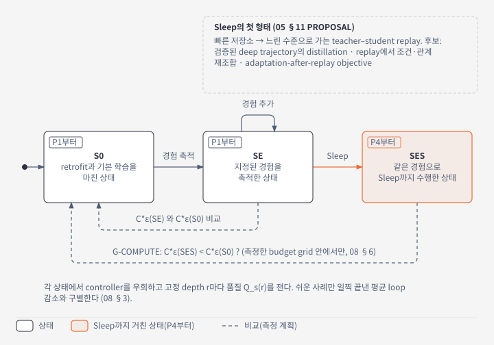
- LITERATURE (fulltext-read) SPENS24: 문헌의 공고화는 빠른 저장소(MHN, modern Hopfield network)가 teacher, 느린 수준(VAE)이 student인 replay다. replay 집합은 noise cue 10,000개를 MHN에 한 번 넣어 만든 고정 집합이고, 새 사건과 교차하는 replay와 generative replay는 제안에 그친다.
- LITERATURE (fulltext-read) HWU20: replay 횟수는 로 정한다. 고정 800 epoch 조건(총 16,800)과 1,600 epoch 조건(총 33,600)보다 적은 총 13,875 epoch로 같거나 더 나은 probe 값을 냈다(그림 판독 근사). 저자도 neuromodulator가 빠른 학습에 필수는 아니라고 쓴다.
- LITERATURE (fulltext-read) SWAMI23: Discussion은 T를 시간에 걸쳐 rebinding하는 방안을 제안만 하며 실험은 없다. 원문 검토는 이를 반복된 rebinding의 느린 가중치 흡수 제안으로 요약한다.
- ARCHIVE (S22) 원문 복원 뒤 context로 다시 제공한 iRAG의 filtered QA(Wiki 99.3%, Character 85.4%)와 원문 재구성만으로 consolidation한 직접 QA(Wiki 31%, Character 33%)는 다른 지표다. 기억 복원과 유용한 판단은 별도 학습 문제다(05 §11).
- PROPOSAL Sleep의 첫 형태는 빠른 저장소에서 느린 수준으로 가는 teacher–student replay다. replay 예산의 novelty×familiarity 배분을 같은 총 계산의 고정 예산과 비교하고, 진단으로 SPENS24의 prototype 수축·lure 침입과 HWU20의 Tse식 probe를 빌린다(sbl-fulltext-review §5 출발점 4).
7.14 리듬과 오케스트레이션: 일정한 주기를 넘어서
USER 출발점(04 머리말): 감정·노력·집중·수면·익숙함에 따라 활동이 달라진다면 모든 내용을 일정 token 주기로만 갱신하는 것으로 충분한가? 여러 주파수의 동시·순차·부분 활성화를 더 본질적으로 이해하고 싶다. PROPOSAL 연구 방향은 주기 하나를 바꾸는 controller를 넘어 계산·읽기·정보 교환·학습 후보·변경·통합을 구분해 조율하는 것이다. 이는 공학적 가설이며 뇌의 완성된 학습 알고리즘이라는 주장이 아니다. 근거는 R01–R11(모두 discussion-import)과 HOPE/CMS [A02]다.
CMS에서 구분할 것
PROPOSAL (04 §1) 기본 CMS의 느린 level은 파라미터가 덜 자주 갱신되더라도 매 forward에 참여할 수 있다. HOPE에는 입력별 learning rate·retention 같은 적응적 요소가 이미 있으므로 "모든 내용을 동일 강도로 무조건 쓴다"고 단순화하지 않는다. 처리 시간척도, update 기회, 실제 변경 크기, 기억의 유지 기간은 서로 다르다. 고정 주기는 GPU batching과 비용 관리에 유용할 수 있다. 문제는 그 간격이 학습의 의미까지 대신 결정하는가다.
상수 gradient 를 개씩 합산해 학습률 로 적용하는 단순한 경우, 총 개 입력의 변경량은 다음과 같다(04 §1). 덜 자주 갱신한다고 총 변경량이 반드시 줄지는 않는다는 뜻이다. 실제 non-linear update는 순서와 state에 의존하므로 이 식을 일반 거동으로 확대하지 않는다.
생물학적 관찰과 적용 한계
| 근거 | 논의한 현상 | 옮길 수 있는 가설 · 금지할 확대 |
|---|---|---|
| R01 LFP 생물물리 | 막 전류·배치·형태가 집합 신호에 영향 | EEG·LFP는 weight update counter가 아니다 |
| R02 aperiodic 분해 | 주기적 peak와 비주기 background를 분리 | band power 증가는 주파수 증가가 아니다 |
| R03 rhythmic attention | 느린 위상에 따라 여러 영역의 beta·gamma·alpha 조합 변화 | 동시성과 순차성이 공존할 수 있다. 모든 연결이 인과적이라고 확대하지 않는다 |
| R04 beta·gamma bursts | 개별 시행의 짧은 burst가 평균에서는 지속처럼 보일 수 있음 | 평균 빈도뿐 아니라 사건의 시점·길이를 연구한다 |
| R05 theta phase perturbation | 위상과 과제 구간에 따라 encoding·retrieval 수행 영향 | 같은 주파수의 상대 시점도 중요할 수 있다 |
| R06 novelty theta | 새로운 환경에서 theta frequency 감소 관찰 | 낯섦↑ → Hz↑ → 학습↑의 단조 법칙을 쓰지 않는다 |
| R07 인간 수면 결합 | slow oscillation·spindle·ripple의 정렬 | 관찰 상관과 causal intervention을 구별한다 |
| R08 위상 맞춘 spindle | 생쥐에서 적절한 slow-wave 위상의 조작이 기억 효과와 연결 | 단순 발생 횟수보다 관계 시점이 중요할 수 있다 |
| R09 공포 회로 4 Hz | 특정 행동과 PFC–amygdala 결합 | "4 Hz = 공포" 범용 대응표를 만들지 않는다 |
| R10 학습률·불확실성 | 변동성·관측 신뢰도와 새 정보의 영향 | 노력·각성 scalar 하나로 학습 제어를 끝내지 않는다 |
| R11 eligibility | 특정 시냅스 실험에서 delayed modulatory signal의 제한된 시간창 | 과거 activity와 나중 feedback의 귀속. 초 단위를 token에 그대로 옮기지 않는다 |
LITERATURE (discussion-import) 빠른 ripple이 장기 통합에 참여할 수 있으므로 "fast frequency = 단기기억"도 틀린 단순화다. 뇌 전체가 순간마다 한 대역만 "선택"한다는 전제도 두지 않는다(04 §2).
조율을 위한 최소 분리: 여덟 동작
PROPOSAL 조율은 "무엇을 활성화하고 무엇을 바꾸는가"를 동작으로 나눠 다룬다(04 §3). 활동한 모든 부분을 학습할 필요가 없다. 간단한 정정은 이해는 쉬워도 즉시 기록해야 하고, 낯선 소문은 계산이 많이 필요해도 강하게 쓰면 안 될 수 있다. 익숙함·적용성·신뢰도·변동성·epistemic uncertainty·aleatoric noise·결과 중요도는 구별할 후보 신호다.
| 동작 | 의미 | 예 |
|---|---|---|
| Activate / read | 현재 판단에 이미 있는 구조를 사용 | 익숙한 schema를 강하게 읽되 수정은 하지 않는다 |
| Compute | hidden state 정교화 | 익숙한 긴 관계 합성에 여러 loop |
| Bind | 기존 구조에 새 대상 연결 | 낯선 이름을 역할에 연결 |
| Eligibility | 어느 경험이 어떤 경로를 사용했는지 남기는 후보 흔적 | 이후 정정의 대상 보존 |
| Write | 어떤 상태·파라미터를 실제로 변경 | 신뢰 가능한 새 증거의 국소 반영 |
| Switch | 다른 기존 schema나 맥락 선택 | 수정 없이 B에서 A로 돌아옴 |
| Consolidate | 여러 경험의 안정적 구조 통합 | replay·적응 후 일반화 학습 |
| Protect / expand | 기존 구조 보호 또는 표현 여유 확보 | 예외 때문에 전체 schema를 덮어쓰지 않는다 |
USER (B04, 2026-10-05) 너무 동떨어진 내용은 흘려듣는다. 예: 초등학생과 미적분, 반도체를 모르는 운동선수, 2007년 비권위자의 스마트폰 제안. PROPOSAL 그래서 학습 가능성(learnability)을 쓰기 허용 와 별도의 신호로 둔다. 후보 입력은 현재 이해 수준에서 이어 붙일 수 있는 거리, 관심, 출처 신뢰도, 잔차 크기다. 거리가 너무 멀거나 신뢰도가 낮은 입력은 얕게 기록하고 강하게 쓰지 않되 폐기하지 않고 보류 상태로 남기며, 독립 근거가 오거나 이어 붙일 지점(bridge)이 생기면 다시 평가한다. 새 영역을 영구히 배제하지 않도록 작은 탐색 예산을 둔다. 이 신호들을 하나의 임계값으로 합치지 않으며 학습량 ·쓰기 허용 ·계산 깊이 와도 분리한다(04 §3). ARCHIVE Melete v0.2는 같은 신호를 따로 읽고 선택을 ignore·defer·seek_bridge·reflect·assimilate/restructure로 나눴으나 둘 다 제품 가설이며 검증된 규칙이 아니다. OPEN "연결점이 없으면 학습이 불가능하다"는 단정은 채택하지 않았고, 흘려듣기를 불가능이 아니라 학습 대상 제외·보류로 읽는 것이 사용자 의도에 맞는지 확인이 필요하다(평가는 F19 후보).
Eligibility의 제안식
목적: 최근 사건을 "나중에 피드백이 오면 바꿀 후보"로 남겨 두었다가, 관련 피드백이 결속될 때만 실제 변경을 만든다. 입력은 새 증거와 피드백, 출력은 level 별 흔적 와 실제 변경 다. PROPOSAL 두 식은 생물학의 확정식이 아닌 설계 표기다(04 §4).
는 흔적의 유지, 는 write 허용, 는 강도다. 읽기·통신 gate는 별도다. self-generated content는 외부 관측과 다른 provenance를 가지고, 같은 root를 여러 번 추론해도 독립 증거 수는 늘지 않는다.
위상을 넣기 전에 해결할 질문과 실험 A–D
PROPOSAL (04 §5) 명시적 oscillator가 해결하려는 문제가 무엇인지 먼저 정의한다(준비된 정보의 교환, 간섭 감소, 다른 속도 process의 조율, 지연 변화에 대한 강건성 등). 동기 디지털 모델에서 phase가 단순 execution-stage ID와 동치라면 이를 새로운 뇌 모사 원리라고 부르지 않는다. "위상 섞기" 대조군이 아직 준비되지 않은 memory를 읽게 만드는 잘못된 실행이면 증거로 쓰지 않는다. 모든 비교 경로가 유효한 인과적 실행이어야 한다.
| 계열 | 무엇을 바꾸나 | 배치 |
|---|---|---|
| A 고정 CMS | 같은 update cadence와 실행 순서 | 첫 통합 모델의 기본값이자 모든 비교의 대조군 |
| B 주파수 적응 | 상태별 update frequency만 가변 | 첫 recursive 모델 이후 A와 같은 budget으로 비교 |
| C event / readiness | eligibility·feedback attribution·선택적 write·준비 상태 기반 통신 | controller v1 이후에 시작. 로드맵은 P3에서 A·B·C를 대조한다 |
| D 위상 조율 | C에 상대 위상·주기적 창을 더함 | C가 안정된 뒤에만 시작. "단계 번호와 동치" 검사를 통과하지 못하면 중단. 배치는 OPEN(D-13: P3 말미 / P4 / 미도입) |
PROPOSAL 핵심 비교는 D 대 C다. D가 A보다 낫더라도 eligibility나 선택적 쓰기의 이득을 위상의 이득으로 착각하지 않는다. 원인 분리 실험은 optimizer steps·replay data·capacity를 맞추고, 제품 평가는 routing·동기화·메모리 비용을 포함한다. 각 단계는 앞 단계를 대체하지 않고 대조군으로 남으며, D가 시작되기 전에는 위상·oscillator를 구현의 필수 요소로 약속하지 않는다(04 §6).
실행 시계(경험 e·token 위치 t·recursion r·optimizer step u·level별 clock s_l·wall-clock)를 따로 기록하고 loop·replay를 새로운 world evidence로 세지 않는다는 규칙은 상태·시계·저장 계약에서 다룬다(04 §7).
8 수학 명세: 식으로 쓴 상태 · 선택 · 갱신 · 비용
이 절은 06 머리말에 쓰인 수학적 연구 명세를 문서 순서대로 옮긴다. 식은 "대화에서 제안된 모델링 언어"이지 원논문의 공식을 모두 재현한 통합 정리도, 실제 뇌의 확정식도 아니다. 모든 식을 MathML로 옮겼고 문서에 없는 식은 만들지 않았다. 증명된 정리는 하나도 없으며, 식마다 문서의 증거 라벨과 상한 표현을 그대로 붙였다.
8.1 이 절을 읽는 법과 식 지도
식마다 같은 순서로 쓴다. 먼저 이 식이 하는 일(한 문장), 다음에 입력과 출력, 그다음에 식, 마지막으로 기호의 뜻이다. 기호의 뜻은 문서가 정의한 것을 우선하고, 문서가 정의하지 않은 것은 "식의 모양에서 읽은 것"이라고 밝혔다. 절 끝의 기호표에 기호·뜻·처음 나온 절을 모았다.
PROPOSAL 06의 모든 식은 PROPOSAL이다(06 머리말). 이미 실행된 수치 실험은 이 식들이 아니라 별도의 Phase-0이며, 통합 모델 PoC도 아니다(EVIDENCE.md). 아래 표의 "상한"은 문서가 식 옆에 직접 적은 제한 표현이다.
| 순서 | 식이 하는 일 | 06의 절 · 줄 | 라벨 · 상한 |
|---|---|---|---|
| E1 | 결과 이전에 schema를 고를 확률 | §2 · 13 | PROPOSAL |
| E2 | schema별 예측을 섞은 예측분포 | §2 · 15 | PROPOSAL |
| E3 | 결과를 본 뒤의 책임 추정 | §2 · 19 | PROPOSAL |
| E4 | 빠른 업데이트의 손실 | §3 · 29 | PROPOSAL Titans에서 영감을 얻은 후보 |
| E5 | fast state를 바꿀 누적량 | §3 · 31 | PROPOSAL 같은 후보 |
| E6 | fast state의 한 단계 갱신 | §3 · 33 | PROPOSAL 같은 후보 |
| E7 | 적응 뒤 새 사례 일반화 목적함수 | §4 · 57 | PROPOSAL 후보 가설 |
| E8 | schema read와 depth read | §5 · 73 | PROPOSAL 제안 표기 |
| E9 | 판단기의 출력 네 가지 | §5 · 75 | PROPOSAL 제안 표기 |
| E10 | hidden state의 한 loop | §5 · 79 | PROPOSAL 제안 표기 |
| E11 | 지속 기억의 선택적 갱신 | §5 · 81 | PROPOSAL 제안 표기 |
| E12 | 비용 민감한 제어 목적 | §6 · 89 | PROPOSAL |
| E13 | 선형 schema 모형 | §7 · 109 | PROPOSAL 상한: "제한된 선형 표본 효율 설명" |
| E14 | 기대 초과 예측 오차 | §7 · 113 | PROPOSAL 같은 상한 |
| E15 | loop당 수축 가정 | §8 · 121 | PROPOSAL 상한: "Loop 감소의 제한된 수렴 설명" |
| E16 | 최소 계산 예산 | §9 · 127 | PROPOSAL 핵심 측정량 |
| E17 | 경험 전후 비교 | §9 · 131 | PROPOSAL 검증 조건 |
8.2 상태와 시간
06 §1 · 이 절에는 display 수식이 없다.
PROPOSAL 외부 경험 , 내부 recursion , optimizer·update step , level별 consolidation clock 을 분리한다. 는 관측 결과·피드백으로, 예측 당시에는 아직 알 수 없을 수 있다. 느린 schema 파라미터 , fast binding·adaptation state , controller , 작업 hidden , depth bank , committed memory 와 tentative memory 를 둔다. 이산 는 선택의 예시이며 schema 본체가 기호라는 뜻이 아니다. 분산 mixture나 continuous routing으로 일반화할 수 있다(06 §1). 이 시계들이 저장·재시작에서 어떻게 지켜지는지는 상태·시계·저장 계약에 있다.
8.3 결과 이전 선택과 이후 책임 추정
06 §2 · 식 E1–E3
E1 · 결과 이전에 schema를 고를 확률
PROPOSAL 06 §2 줄 13
하는 일. 결과 를 보기 전에 어느 schema 를 쓸지의 확률 를 정한다.
입력 → 출력. 입력은 현재 입력 , 문맥 , 이전 시각의 depth bank 이고, 출력은 schema별 선택 확률 다.
기호. 위첨자 는 "결과를 보기 전"을 뜻한다. 는 controller 가 내는 분포, 세로선은 조건부, 는 이전의 depth bank다(문서가 따로 정의하지 않아 §1의 에서 읽었다).
E2 · schema별 예측을 섞은 예측분포
PROPOSAL 06 §2 줄 15
하는 일. schema별 예측을 로 가중 평균해 결과의 예측분포를 만든다.
입력 → 출력. 입력은 와 각 schema의 느린 파라미터 , fast state , 입력 이고, 출력은 결과의 예측분포 다.
기호. 는 모든 schema에 대한 합, 는 schema 가 내는 예측이다.
E3 · 결과를 본 뒤의 책임 추정
PROPOSAL 06 §2 줄 19
하는 일. 결과 를 본 뒤 각 schema가 그 결과에 얼마나 책임이 있었는지를 와 우도(결과가 나올 확률)의 곱에 비례하게 다시 계산한다.
입력 → 출력. 입력은 와 관측된 에 대한 schema 의 우도이고, 출력은 책임 (관측 후 attribution)다.
기호. 는 비례 기호다. 정규화 상수는 문서에 적혀 있지 않다.
PROPOSAL 는 판단에, 는 관측 후 attribution·update에 쓴다. 평가용 future label이나 latent cause를 learner·controller에 제공하지 않는다. 같은 우도가 성립하는 구조들은 현재 관측만으로 구별할 수 없을 수 있다(06 §2).
USER (U-T09) 주어진 schema에 따른 빠른, 편향된 추론을 원한다. PROPOSAL 편향은 오류를 고집하는 성향이 아니라 결과 이전의 조건부 prior 가 경험으로 한쪽에 집중된 정도다. 집중도는 (문서에서는 문장 안 식)로 둔다. 작을수록 편향이 강하다. 유용한 편향은 schema 일치 사례에서 가 작고 정답률이 유지되며 필요한 계산이 줄어드는 경우다. 해로운 편향은 불일치 사례에서도 가 작아 가 관측 쪽으로 옮겨 가지 못하는 경우다. 따라서 편향은 자체를 최소화하는 목표가 아니라 검증 체계의 편향 이득·해악 지표로 보고한다(아래 핵심 측정량 절). OPEN continuous routing이나 분산 mixture에서는 엔트로피 대신 유효 schema 수 같은 대체 척도를 정한다.
8.4 빠른 업데이트
06 §3 · 식 E4–E6
E4 · 빠른 업데이트의 손실
PROPOSAL 06 §3 줄 29 · Titans에서 영감을 얻은 후보
하는 일. 빠른 업데이트가 줄이려는 값을 기억 정확도·관측 예측·피드백 세 항의 가중합으로 쓴다.
입력 → 출력. 입력은 세 손실과 가중치이고, 출력은 하나의 손실 다. 문서는 이를 "기억 정확도·관측 예측·피드백을 구분한 예"라고 부른다.
기호. 는 기억 정확도 항(kv는 key–value로 읽힌다), 는 관측 예측 항, 은 피드백 항, 는 각 항의 가중치다.
E5 · fast state를 바꿀 누적량
PROPOSAL 06 §3 줄 31 · Titans에서 영감을 얻은 후보
하는 일. schema 의 fast state를 바꿀 방향을, 이전 누적량과 책임으로 가중한 기울기를 합쳐 갱신한다.
입력 → 출력. 입력은 이전 누적량 , 감쇠 , 학습률 , 책임 , 기울기이고, 출력은 새 누적량 다.
기호. 는 에 대한 기울기다. 식의 모양이 momentum 갱신과 같지만 문서는 과 에 이름을 주지 않았다. 책임 가 곱해져 있어 책임이 큰 schema일수록 크게 움직인다.
E6 · fast state의 한 단계 갱신
PROPOSAL 06 §3 줄 33 · Titans에서 영감을 얻은 후보
하는 일. fast state를 일정 비율 잊고(decay) 새 누적량을 더해 한 단계 갱신한다.
입력 → 출력. 입력은 , 감쇠 , 이고 출력은 이다.
기호. 는 decay·retention 표기의 선택이다(문서). 는 남는 비율로 읽는다.
PROPOSAL 이 식들은 Titans에서 영감을 얻은 후보이지 모든 HOPE·Titans 구현(HOPE는 Nested Learning 논문의 구조 이름)의 동일 식이라는 뜻이 아니다. 입력별 계수의 범위·norm·root budget을 사전 명세한다. 작은 학습률이 안정성 전체를 보장하지 않는다(06 §3).
학습 방법은 optimizer 하나로 묻지 않는다
USER (B08, 2026-10-09) 학습은 적은 data로 빠른 일반화의 오류(overfitting)를 유도하고 시간축 continual learning으로 그 오류가 상황에 맞게 사라지게 하는 것이다. GD→SGD→Adam→Muon 같은 일반 optimizer가 맞는지 묻고, backward·SGD 수준의 근간 학습 방법을 조사·고찰하라고 했다. PROPOSAL 그래서 학습 방법 선택을 다섯 결정 축으로 분리해 기록한다. E4–E6은 그중 넷째 축의 후보 하나다.
- 학습 신호·목적: 실제로 새로 관측한 것이 무엇이며 다음 판단의 어떤 차이가 중요한가.
- 귀속: 어떤 관계·경로가 결과에 기여했는가.
- 바뀌는 상태: fast , slow , controller , memory 중 무엇인가.
- 갱신 규칙: 국소 규칙인가 gradient optimizer인가.
- 가소성·시간척도: 학습량·망각·보존·통합을 언제 조절하는가.
표준 optimizer(예: AdamW)는 느린 층의 기준선으로 같은 신호·예산의 대조군에 둔다. optimizer를 바꾼다고 적은 경험에서 유용한 문맥이 자동으로 발견된다고 가정하지 않는다(06 §3). ARCHIVE Melete도 모델 구조·기억의 상태와 시간척도·학습 목표·credit assignment와 update rule·optimizer를 서로 다른 축으로 두었고, 큰 data에서의 성공이 알고리즘의 대량 data 요구를 뜻하지는 않는다고 기록했다. OPEN B08의 "오류를 유도한다"를 "빠른 가설 생성의 부작용을 허용하고 시간축 반례로 줄인다"로 읽는 것은 Melete 문서의 해석이며 사용자 확인이 필요하다(design-audit §5 B군 11번).
쓰기의 선택성: 문헌 단서
- LITERATURE (fulltext-read) SWAMI23: 선택적 갱신의 출발점은 보호·쓰기 규칙이다. leave-one-out 조건부확률과 p_surprise로 확신 있게 맞은 위치(anchor)는 보호하고 틀린 위치만 다시 묶으며, 임계값은 저자가 정한 값(LIALT 0.1, dax 1/16)이다.
- LITERATURE (fulltext-read) MICONI25: 네트워크가 스스로 만든 스칼라 neuromodulator m(t)가 연결별 가소성 계수 A와 Hebbian trace로 쓰기를 gate하며, 연결별 계수가 필수다(단일 스칼라로 바꾸면 active 해가 30 run 중 0개).
- ARCHIVE (official-search-checked) (S21 GNM) 무엇을 쓸지를 자연어 지시로 학습하는 neural memory write이며 write-gradient 차단 ablation에서 선택적 기억의 개선이 크게 감소했다고 보고됐다. 추상 schema discovery의 직접 증거는 아니다.
- PROPOSAL MICONI25식 학습된 neuromodulator를 SWAMI23식 규칙보다 강한 후보로 둔다. §5의 (write 대상·허용)는 "어디에", (강도)는 "얼마나", §1의 level clock 은 "언제"에 대응시키고 "무엇을"은 쓸 증거의 선택으로 두어 하나의 gate로 합치지 않고 따로 시험한다. 대조군은 항상 쓰기, surprise만, 고정 무작위 gate를 같은 쓰기 예산에서 비교한다. 구현이나 채택 결정이 아니다(06 §3). 자세한 분해는 통합 구조의 쓰기 gate 절에 있다.
8.5 느린 schema 학습: 적응 후 새 사례 일반화
06 §4 · 식 E7
E7 · 적응 뒤 새 사례 일반화 목적함수
PROPOSAL 06 §4 줄 57 · 새 schema 생성 비용·경쟁 규칙은 후보 가설
하는 일. 새 과제의 support로 회 적응한 뒤 독립 query로 잰 손실의 기대값에 보존·등변성·용량 항을 더해, 느린 파라미터 와 controller 를 찾는다.
입력 → 출력. 입력은 과제 분포와 과제별 support ·query , 적응 횟수 이고, 출력은 최소화하는 다.
기호. 는 과제 에 대한 기대값, 는 support로 회 적응한 결과, 는 query 손실이다. 은 보존 항, 는 등변성 항, 는 용량 항이다(문서는 이 를 따로 정의하지 않았다).
PROPOSAL 단순 reconstruction이 아니라 이후의 전이·학습 효율이 objective에 들어간다. 이름·대상 순열 가 출력에도 반영돼야 하는 과제에서는 의 equivariance(변환을 가해도 출력이 같은 방식으로 변하는 성질)를 사용한다. 모든 변환에 invariant(불변)하면 오히려 역할 차이를 잃을 수 있다. 새 schema 생성 비용·representation expansion·경쟁/통합 규칙은 후보 가설이고, rank나 모듈 수가 늘었다는 사실만으로 schema 분화를 선언하지 않는다(06 §4).
- LITERATURE (fulltext-read) 느린 구조를 얻는 방식은 논문마다 다르다. MICONI25는 바깥 루프(A2C(advantage actor-critic)와 BPTT(backpropagation through time))와 gradient 없는 안쪽 Hebbian trace를, TEM20은 바깥 BPTT(25 step, 4-lap은 100)와 환경마다 0으로 리셋하는 안쪽 Hebbian M을 쓴다.
- LITERATURE (fulltext-read) GOUDAR23과 CHU25에는 명시적 meta-objective가 없고, GOUDAR23의 문제 경계·Adam 리셋·안정화 정규화와 CHU25의 단계 경계는 실험 틀이 공급한다. GOUDAR23에서 재사용을 막으면 가중치 변화가 약 8–12배 커진다.
- PROPOSAL Adam은 step 크기가 정규화돼 있어 변화량과 trial 수의 상관이 일부 기계적일 수 있고, 위 목적함수의 retention 항 크기를 정할 문헌 측정도 거의 없다.
- OPEN 명시적 바깥 루프로 갈지 순차 문제 안에서의 창발에 맡길지는 정해지지 않았다.
8.6 현재 생각과 지속 기억의 읽기
06 §5 · 식 E8–E11
E8 · schema read와 depth read
PROPOSAL 06 §5 줄 73 · 제안 표기
하는 일. 현재 hidden에서 지속 기억의 schema를 읽고, 이번 생각의 depth bank에서 이전 표현을 읽는다.
입력 → 출력. 입력은 , , 이고, 출력은 schema read 결과 과 depth read 결과 이다. 문서는 이 한 줄에 두 식을 함께 적었다.
기호. 와 는 읽기 연산이며 문서는 형태를 정하지 않았다. 은 시각 ·recursion 에서의 memory다.
E9 · 판단기의 출력 네 가지
PROPOSAL 06 §5 줄 75 · 제안 표기
하는 일. 읽은 것들을 controller 정책 에 넣어 이번 loop의 계산 mask·쓰기 대상·강도·통신·종료 정책을 한꺼번에 낸다.
입력 → 출력. 입력은 , , , 이고 출력은 네 값 이다.
기호. 는 token·block 계산 mask, 는 write 대상·허용, 는 강도, 는 통신·종료 등 정책을 나타내는 제안 표기다(문서).
E10 · hidden state의 한 loop
PROPOSAL 06 §5 줄 79 · 제안 표기
하는 일. hidden state를 mask 가 허용한 부분만 계산 블록 로 한 번 갱신한다(recursion 한 단계).
입력 → 출력. 입력은 , , , , mask 이고 출력은 이다.
기호. 은 원소별 곱이다(문서가 정의하지 않아 표준 표기로 읽었다). 는 느린 파라미터 를 쓰는 계산 블록이다.
E11 · 지속 기억의 선택적 갱신
PROPOSAL 06 §5 줄 81 · 제안 표기
하는 일. 지속 기억 을 쓰기 허용 가 허락한 부분만, 강도 의 갱신 연산으로 고친다.
입력 → 출력. 입력은 , 허용 , 강도 , 증거 이고 출력은 이다.
기호. 는 강도 로 쓰는 갱신 연산, 는 출처와 대상 경험에 결속된 증거다(문서).
PROPOSAL 내부 update를 임시 상태에서 수행한 뒤 commit할지, 온라인 committed state를 버전별로 갱신할지는 상태 계약에서 선택한다(06 §5). 위 네 식은 "제안 표기"이며 어떤 구현의 정확한 식도 아니다.
8.7 비용 민감한 제어
06 §6 · 식 E12
E12 · 비용 민감한 제어 목적
PROPOSAL 06 §6 줄 89
하는 일. 한 요청이 아니라 연속 경험 구간 전체에서 과제 손실·계산 비용·망각·위험을 한 목적으로 묶는다.
입력 → 출력. 입력은 시각 마다의 네 항과 가중치이고 출력은 기대 목적 이다.
기호. 는 과제 손실, 는 시각 의 비용, 는 망각 손실, 는 위험 손실이고, 는 가중치다. 이 는 §3의 피드백 손실 가중치와 같은 글자의 다른 쓰임이다.
PROPOSAL 에는 encoder, core 반복, routing, depth read, write·backward, retrieval·offload, decoder가 포함된다. Sleep는 online latency와 별도로 표시하되 amortized total compute(여러 요청에 나눠 센 총 계산)에는 포함한다. 지금 학습해서 다음 요청에서 비용을 줄이는 선택을 평가하려면 horizon(앞을 내다보는 구간)이 필요하다. 추가 loop의 예상 효용과 비용을 비교하는 halting(언제 멈출지 정하는 규칙)이 후보이고, familiarity만으로 halt하지 않는다. 동일 질의에 여러 (loop, update) 조합을 평가해 요구 품질을 만족하는 저비용 행동을 학습 신호로 쓸 수 있지만 이 teacher 비용도 기록한다(06 §6).
- LITERATURE (fulltext-read) 같은 품질의 추론 계산량을 잰 논문은 읽은 11편에서 찾지 못했다. HWU20의 절감도 학습 epoch이다. 개념 수준의 근거는 SPECTRUM26(accommodation이 더 많은 시간과 계산을 요구한다는 정성적 서술)과 SWAMI23(posterior 엔트로피 감소, 1회 EM으로 충분)뿐이다.
- PROPOSAL H-COMPUTE는 문헌 지지가 가장 약한, 사실상 우리 고유 가설이다. halting의 후보 신호는 CSCG(확률적 hidden-state graph 모형) posterior 엔트로피(SWAMI23), 기억 recall 신뢰도(KUMAR26의 0.6 임계값), attractor 수렴 탐침(CHU25 S-C.3의 응용)이며 이 신호들의 계산 절감 효과는 시험되지 않았다. 고정 깊이의 품질–계산 곡선을 먼저 얻고, 의 첫 추정은 문헌 대조 없는 우리 실측으로 적는다.
- USER (B03, 2026-10-05) SGD·cross entropy·오차 기반 학습은 대량 data에 유리하다. 우리는 적은 data가 시간축으로 계속 들어오고 빠르고 성급한 일반화를 누적하는 pattern·surprise 기반 학습이 필요하다. PROPOSAL 시행착오로 신호를 얻는 학습(RL(강화학습), bandit, 여러 행동 조합의 teacher 탐색)은 시도 횟수가 곧 비용이다. 경험 직후의 빠른 경로는 이런 신호를 요구하지 않고 한 관측에서 얻는 신호(예측 잔차·정정·피드백)로 먼저 갱신한다. 시행착오형 신호는 controller 학습과 Sleep 단계에서만 쓰며 시도 횟수와 teacher 비용을 총 계산에 포함한다.
- ARCHIVE Melete v0.2는 경험 직후의 첫 방법을 case lookup·no-write·normalized delta·작은 SGD write로 두고, 여러 경험 뒤의 층에서만 필요한 경우 meta-learning·RL을 쓰도록 층을 나눴다. OPEN 시행착오형 학습을 후속 단계의 어느 지점에서 허용할지는 정하지 않았다.
8.8 제한된 선형 표본 효율 설명
06 §7 · 식 E13–E14 · 문서 표현 그대로의 상한: "제한된 선형 표본 효율 설명"
E13 · 선형 schema 모형
PROPOSAL 06 §7 줄 109 · 상한: "제한된 선형 표본 효율 설명"
하는 일. "schema가 차원 입력 가운데 차원 부분공간만 쓴다"는 가장 단순한 선형 모형을 정의한다.
입력 → 출력. 입력은 부분공간 , 새 과제의 계수 , 잡음 이고 출력은 관측 이다.
기호. 은 의 열이 서로 직교하고 길이가 1이라는 뜻이다( 크기로 읽는다). 는 입력이 차원 표준 정규분포, 는 분산 의 잡음, 는 부분공간 차원이 입력 차원보다 훨씬 작다는 뜻이다.
E14 · 기대 초과 예측 오차
PROPOSAL 06 §7 줄 113 · 상한: "제한된 선형 표본 효율 설명"
하는 일. 올바른 를 알고 새 과제의 개 독립 관측으로 계수 를 OLS(ordinary least squares, 최소제곱)로 추정할 때, 새 noiseless signal에 대한 기대 초과 예측 오차를 준다.
입력 → 출력. 입력은 , , (단 )이고, 출력은 기대 초과 MSE(mean squared error, 평균 제곱 오차)다.
기호. 은 noiseless signal에 대한 초과 예측 오차다. 를 쓰지 않는 차원 OLS에는 일 때 대신 가 들어간다. schema는 새 task에서 추정할 자유도를 줄일 수 있다는 제한된 설명이다.
8.9 Loop 감소의 제한된 수렴 설명
06 §8 · 식 E15 · 문서 표현 그대로의 상한: "Loop 감소의 제한된 수렴 설명"
E15 · loop당 수축 가정
PROPOSAL 06 §8 줄 121 · 상한: "Loop 감소의 제한된 수렴 설명"
하는 일. memory가 고정이고 가 올바른 해 근방의 수축(contraction)이라고 가정하면, loop를 한 번 돌 때마다 해까지의 거리가 배 이하로 줄어든다고 쓴다.
입력 → 출력. 입력은 현재 hidden , 올바른 해 , 수축 계수 이고, 출력은 다음 loop의 거리 상한이다.
기호. 는 올바른 해, 는 인 수축 계수, 는 거리(노름)다. 따라서 문서는 을 이끌어 낸다(문장 안 식). 좋은 schema는 초기 오차나 반복 변환을 개선할 수 있다.
8.10 프로젝트의 핵심 측정량
06 §9 · 식 E16–E17 · 편향 이득·해악 지표는 08 §6
E16 · 최소 계산 예산
PROPOSAL 06 §9 줄 127 · 핵심 측정량
하는 일. 새로운 entity·value·binding이지만 관계 구조를 공유하는 과제에서 오차를 이하로 만드는 데 필요한 최소 계산 예산을 정의한다.
입력 → 출력. 입력은 모델 , 새 과제 집합 , 예산 , 목표 오차 이고, 출력은 최솟값 이다.
기호. 는 예산 에서 모델 이 새 과제에서 내는 오차다. 최소값은 실제로 측정한 budget grid 안에서만 계산하고, 측정하지 않은 threshold crossing을 보간해 단정하지 않는다. query-level noise와 history·world-level variation을 나눠 통계 처리한다(06 §9).
E17 · 경험 전후 비교
PROPOSAL 06 §9 줄 131 · 검증 조건
하는 일. 경험(또는 Sleep) 전후 모델의 을 비교해, 같은 구조를 공유하는 새 사례에서 필요한 계산이 줄었는지 확인한다.
입력 → 출력. 입력은 , 와 같은 ·이고, 출력은 부등식이 성립하는지(예·아니오)다.
기호. 와 는 경험 전과 후의 모델이다. 이 식은 확인할 조건이지 이미 성립한 사실이 아니다.
검증 체계에서 쓰이는 방식
PROPOSAL 검증 체계의 대표 실험은 모델의 세 상태를 비교한다. S0는 retrofit과 기본 학습을 마친 상태, SE는 지정된 경험을 축적한 상태, SES는 같은 경험으로 Sleep까지 수행한 상태다. 먼저 controller를 우회하고 고정 depth 격자 에서 품질 을 재며, 다음 단계에서 controller를 켜 실제 policy가 저비용 경로를 선택하는지 본다. PoC PASS 조건의 첫째는 "SES가 S0보다 가 낮다(비용식 전체, 측정한 budget grid 안에서만 비교)"이고, 이것이 gate G-COMPUTE(이며 비용은 전체를 포함하고 쉬운 문제 편중이 아닐 것)다(08 §3, 08 §6). G-COMPUTE는 E17의 비교를 경험 전의 S0와 Sleep까지 거친 SES에 적용한 것으로 읽힌다(이 백서의 정리). 같은 품질의 추론 계산량을 잰 문헌이 없어 이 비교에는 문헌 기준값이 없다. 결과를 보기 전에 사전 등록하며, 값은 pilot 뒤에 정한다(승인된 수치가 아니다).
| 측정량 | 무엇을 재나 | 쓸 때의 규칙 |
|---|---|---|
| 오차 이하에 필요한 최소 계산 예산 | 측정한 budget grid 안에서만 계산하고 보간하지 않는다. 비용식 전체(encoder + router + core loops + depth read + memory reads/writes/backward + retrieval/offload + decoder)를 포함하며, online과 Sleep·학습 amortized 비용을 둘 다 공개한다 | |
| 경험(Sleep) 뒤에 같은 구조의 새 사례가 더 싸졌는가 | 쉬운 문제만 일찍 끝낸 평균 loop 감소와 구별하고, 같은 총 계산의 replay-only·무작위·동결 memory·raw history 대조와 함께 판정한다 | |
| 집중도 | 결과 이전 prior가 한쪽에 쏠린 정도(작을수록 편향이 강함) | 이 값 자체를 최소화하는 목표로 쓰지 않는다 |
| 편향 이득 | schema 일치 사례에서 추가 loop·write 전 첫 시도의 정확도와 필요한 loop 수 | 같은 모델에서 를 균등화한 변형과 쌍으로 보고한다 |
| 편향 해악 | 불일치 사례에서 첫 시도가 일치 답을 내는 비율(conformity), 반례 관측 개 뒤의 정답 전환(correction latency), 반례 뒤 유지 비율 | 편향 이득만 보고하거나 불일치 사례 없이 일치 사례 평균만 보고하지 않는다 |
PROPOSAL 위 표의 편향 이득·해악 지표는 08 §6에 있고, 그 정의의 바탕이 06 §2의 다(08 §6). 둘 다 설계 감사에서 새로 들어간 PROPOSAL이다(design-audit §3 핵심 발견 3).
8.11 아직 정리가 아닌 주장
06 §10 · 문서 표현 그대로의 상한: "아직 정리가 아닌 주장"
OPEN 다음 다섯 명제는 정리가 아니다. 반례와 비교 방법을 가진 OPEN 가설로 관리한다(06 §10).
- 모든 schema가 저랭크라는 명제.
- semantic abstraction level과 CMS(continuum memory system, 갱신 시간척도가 다른 여러 level의 기억) frequency가 일치한다는 명제.
- post-training이 반드시 schema를 분화한다는 명제.
- oscillator가 event scheduler보다 항상 효율적이라는 명제.
- loop 증가가 단조적으로 정답률을 올린다는 명제.
OPEN 문헌 검토 뒤 같은 방식으로 관리할 명제가 셋 더 들어왔다(sbl-fulltext-review §4 4.1·4.3). (1) 학습된 schema 구조가 같은 예산의 고정·무구조 대조보다 낫다는 명제 — 읽은 11편에 직접 비교가 없다. (2) 오류가 크면 새 구조를 만들고 작으면 미세 조정하는 규칙이 옳다는 명제 — STRUCTK25·SPECTRUM26의 정성 규칙이며 데이터가 없다. (3) 예외만 따로 저장하면 schema가 보존된다는 명제 — SPENS24 확장 모델의 설계이며 schema 개정과 다중 seed가 없다.
LITERATURE (fulltext-read) SPENS24: 확장 모델은 consolidation 전에도 prototype 쪽 왜곡을, DRM(Deese–Roediger–McDermott) 모형은 목록에 없지만 연관된 단어(lure)의 회상을 정성적으로 재현한다. PROPOSAL 위 명제들의 반례·실패 모드 후보는 잘못된 구조가 조용히 내용을 묶는 것(TEM20형 분리에서의 위험)과 schema 과적용(prototype 왜곡·DRM lure)이다(06 §10).
8.12 기호표
기호 · 뜻 · 처음 나온 절을 06의 순서로 모았다. "처음 나온 절"은 이 절 안의 해당 부분으로 이어진다. 문서가 정의하지 않은 뜻은 "식에서 읽음"이라고 표시했다.
| 기호 | 뜻 | 처음 나온 절 |
|---|---|---|
| 시각 의 외부 경험(입력·결과·문맥·출처) | §1 | |
| · · | 입력(관측) · 문맥(context) · 출처 | §1 |
| 관측 결과·피드백. 예측 당시에는 아직 알 수 없을 수 있다 | §1 | |
| 같은 관측에 대한 내부 recursion index. §7에서는 부분공간 차원으로도 쓰인다 | §1 | |
| (첨자 없음) | optimizer·update step. §5의 (write 대상·허용)과 다르다 | §1 |
| level 별 consolidation clock | §1 | |
| · · | 느린 schema 파라미터 · fast binding·adaptation state · controller 파라미터 | §1 |
| · | 작업 hidden · depth bank | §1 |
| · | committed memory · tentative memory | §1 |
| schema 번호(이산 선택의 예시. schema 본체가 기호라는 뜻은 아니다) | §1 | |
| · | 결과 이전 조건부 prior(schema 를 고를 확률) · controller가 내는 분포 | §2 |
| 이전의 depth bank (식에서 읽음) | §2 | |
| schema 의 예측 분포(우도) | §2 | |
| 관측 후 책임(attribution·update에 사용) | §2 | |
| 선택 분포의 엔트로피. 작을수록 편향이 강하다 | §2 | |
| 빠른 업데이트 손실 | §3 | |
| · · | 기억 정확도 · 관측 예측 · 피드백 손실 | §3 |
| · · | 위 손실의 가중치. 는 §6에서 망각 손실 가중치로도 쓰인다 | §3 |
| · | fast state의 갱신 누적량(momentum 꼴) · 이전 누적량의 감쇠 계수 (식에서 읽음). §5의 과 다르다 | §3 |
| · | 학습률 · decay·retention 계수 | §3 |
| 에 대한 기울기 | §3 | |
| · · | 과제 · 그 과제의 support · query | §4 |
| 회 적응(이 은 적응 횟수) | §4 | |
| · · · | query 손실 · 보존 항 · 등변성 항 · 용량 항(이 는 §4에서 정의되지 않았다) | §4 |
| 이름·대상 순열 | §4 | |
| · | schema read · depth read 연산 | §5 |
| · | 두 읽기의 결과 | §5 |
| controller의 정책 | §5 | |
| · · · | token·block 계산 mask · write 대상·허용 · write 강도 · 통신·종료 등 정책 | §5 |
| · | hidden을 갱신하는 계산 블록 · 원소별 곱 (식에서 읽음) | §5 |
| · | 강도 의 갱신 연산 · 출처와 대상 경험에 결속된 증거 | §5 |
| 연속 경험 구간의 기대 목적 | §6 | |
| · · | 과제 · 망각 · 위험 손실 | §6 |
| · · | 시각 의 비용(encoder·core 반복·routing·depth read·write/backward·retrieval/offload·decoder) · 비용·위험 가중치 | §6 |
| schema 의 부분공간(, 정규직교 열) | §7 | |
| · · | 새 과제의 계수(§5의 mask 과 다르다) · 잡음(§9의 목표 오차 과 다르다) · 잡음 분산 | §7 |
| · · | 입력 차원 · 부분공간 차원(랭크) · 새 과제의 독립 관측 수 | §7 |
| noiseless signal에 대한 기대 초과 예측 오차 | §7 | |
| · | 올바른 해 · 수축 계수() | §8 |
| 오차 이하에 필요한 최소 계산 예산(측정한 budget grid 안에서만) | §9 | |
| · | 새 entity·value·binding을 가진 새 과제 집합 · 예산 에서 모델 의 오차 | §9 |
| (§9) · · | 목표 오차 · 경험(Sleep) 전·후 모델 | §9 |
9 상태 · 시계 · 저장 계약
모델이 배우고 저장하는 일이 믿을 만하려면 "무엇이 언제 읽히고, 언제 쓰이고, 무엇이 디스크에 남았는가"를 구분해 기록해야 한다. 이 절은 그 기록의 계약을 설명한다. 같은 입력의 loop와 replay를 새 증거로 세지 않고, 재시작·rollback·삭제 뒤에도 상태가 맞아야 한다는 요구다. 07 머리말의 말대로 이 절은 설계 요구와 proposal이며 저장소가 runtime을 구현했다는 뜻이 아니다.
9.1 시계와 정체성
목적: 서로 다른 것을 같은 숫자로 세는 실수를 막는다. 가령 loop를 한 번 더 돌렸다고 같은 입력이 새 증거가 되거나, forward를 호출했다고 optimizer step이 올라간 것으로 기록되면 안 된다. 기능: 기록하는 모든 항목에 아래 필드를 따로 둔다. 입력은 요청과 그 처리 과정이고, 출력은 필드별로 분리된 시계 기록이다. PROPOSAL 필드와 "금지되는 혼동"은 07 §1의 표다.
| 필드 | 의미 | 금지되는 혼동 |
|---|---|---|
| experience / root ID | 외부 관측·사용자 정정의 출처 | 같은 입력의 loop를 새 root로 생성 |
| token position | 실제 token sequence 위치 | recursion마다 문맥 길이를 증가 |
| recursion index | 같은 관측에 대한 내부 계산 깊이 | 미래 관측 횟수 |
| optimizer step | 실제 update 수행 | forward 호출 수 |
| level clock | 각 CMS(continuum memory system) memory의 schedule·통합 준비 | 모든 level의 동일 의미 시계 |
| schema version | 적용할 학습 상태 | 항상 최신이 가장 적합함 |
| parameter / representation version | hidden space의 의미 | shape가 같으면 호환됨 |
| wall time | 실제 latency | FLOPs나 loop 수와 동일 |
PROPOSAL 수식의 기호와 대응하면 외부 경험 (root), 내부 recursion , optimizer step , level별 consolidation clock 이 분리되고(06 §1, 수학 명세), token position 와 wall-clock이 여기에 더해진다(04 §7). loop·replay는 경험을 다시 사용하는 계산이지 새로운 world evidence가 아니다.
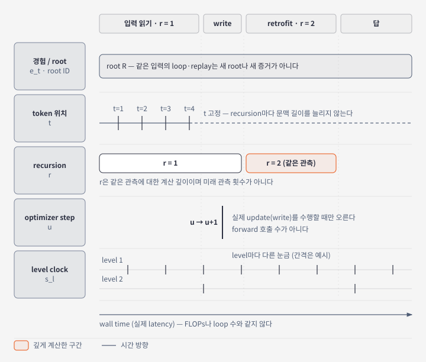
9.2 읽기와 쓰기의 분리: snapshot → working state → commit
목적: 추론이 도중에 바뀌는 상태 위에서 돌지 않게 하고, 쓰기가 한 번의 검증을 거쳐서만 남게 한다. 기능과 입출력: PROPOSAL 추론은 committed snapshot을 기준으로 시작한다. request-local working state(요청 하나에서만 쓰는 임시 상태)에서 허용된 계산·fast update를 수행해 evidence-bound change(증거에 묶인 변경)를 만든다. commit 전에 같은 root의 영향·budget·source와 revision·삭제 상태·관련 feedback을 검증한다(07 §2). 마지막 결과는 새 version의 state다.
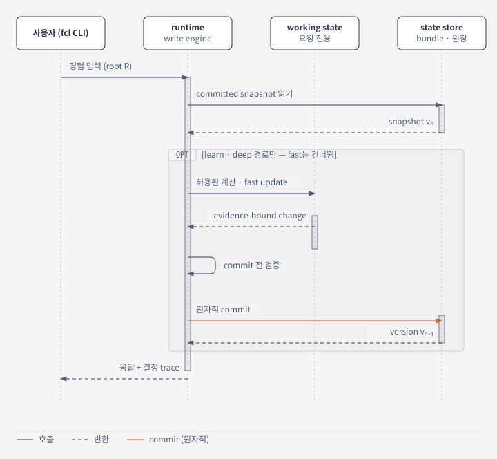
그림의 글 설명
- 사용자 CLI → runtime: 경험 입력(같은 입력의 재전송은 같은 root).
- runtime → state store: committed snapshot 읽기. state store → runtime: snapshot vₙ.
- learn·deep 경로만: runtime → working state에서 허용된 계산·fast update. working state → runtime: evidence-bound change.
- runtime 내부: commit 전 검증(같은 root, budget, source·revision, 삭제 상태, feedback).
- runtime → state store: 원자적 commit. state store → runtime: version vₙ₊₁.
- runtime → CLI: 응답과 결정 trace.
- PROPOSAL 이것은 기본 proposal이며 synchronous write(요청 도중 바로 쓰기)의 유일한 허용 구현은 아니다. 다만 어떤 구현이든 read snapshot, write version, concurrency conflict(동시 쓰기 충돌), retry·idempotency(재시도해도 한 번만 반영되는 성질)가 명시돼야 한다.
- PROPOSAL 마지막에 한 번 commit해도 임시 상태에서 같은 입력을 무제한 학습했다면 과대 반영은 남는다. 그래서 temporary learning budget과 evidence budget을 따로 둔다. generated interpretation(모델이 스스로 만든 해석)은 학습 신호로 쓸 수 있지만 독립 observed root로 승격하지 않는다.
- PROPOSAL 첫 phase(P1)가 보장하겠다고 쓴 것은 같은 입력 재전송이 같은 root로 한 번만 반영되는 것과 commit이 원자적인 것이다(09 §5 P1 보장 1·3). 실제로 이 보장이 성립하는지는 구현 뒤에 자동 테스트로 확인할 계획이며 지금은 검증이 없다.
9.3 recursion과 cache
목적: 같은 weights를 여러 번 돌리는(recursion) 모델에서 "어느 loop의 어느 token 표현이 어느 parameter version에서 계산됐는가"를 잃지 않는다. PROPOSAL 재귀 weight 공유와 KV(key–value cache) 공유는 독립적인 설계 선택이다. token 의 depth 가 어떤 parameter version에서 계산됐는지 추적한다. MoD(Mixture-of-Depths)·MoR(Mixture-of-Recursions)로 skip된 depth state는 존재하지 않거나 마지막 유효 state를 가리키며 이를 명시한다(07 §3). 입력은 요청의 token과 loop 진행이고 출력은 그 표현의 출처 기록이다.
PROPOSAL 최소 검사는 다음과 같다.
- 같은 sequence prefix를 두 번 처리해도 의도치 않은 memory double-write가 없어야 한다.
- 내부 loop 중 token position이 임의로 늘어나지 않아야 한다.
- autoregressive mask가 미래 token·depth 상태를 노출하지 않아야 한다.
- depth read는 존재하고 허용된 source만 참조해야 한다.
- weight update 이후 stale cache(낡은 cache)를 계속 쓸 때 의미적 정합성이 검증되어야 한다.
- speculative decoding·rollback과 windowed cache의 제한을 숨기지 않는다.
USER (B14, 2026-10-12) 익숙하면 hit한 구조를 compile해 완결된 working frame을 만든다. 매 turn 출력이 frame과 맞지 않으면 이번 입력·출력·내부 출력으로 학습한 뒤 최초 query로 다시 검색해 frame을 재구성하고 중단 지점부터 재개한다. PROPOSAL 이를 통합 모델의 상태 계약으로 옮긴 네 가지는 다음과 같다.
- 읽기 기록. 한 요청의 schema 읽기가 어떤 요소(layer 결합·fast state·depth source)를 어떤 순서로 읽었는지 기록한다. 이 기록은 이후 write와 독립이다.
- 갱신 후 재개. 요청 중 학습이 일어나면 새 root를 만들지 않고 같은 root와 같은 최초 입력으로 다시 읽는다. 재개 위치(token position , recursion index )와 무효화한 cache를 기록한다.
- 이중 write 방지. 재개 때 이미 반영한 증거를 다시 쓰지 않는다.
- 재현. 같은 입력의 재읽기는 원래 읽기 결과를 재현할 수 있어야 하며 차이는 갱신으로 설명할 수 있어야 한다.
ARCHIVE Melete는 working graph를 snapshot으로 compile하고 선택 node·edge·전역 상태·context·encoder parameter의 의존성을 각각 추적하며, 낮은 compatibility에서 갱신한 뒤 최초 query로 재compile해 중단 지점에서 재개하는 것을 basis로 유지했다. 이 닫힌 loop는 좁은 합성 scene에서만 실행됐고 일반 효용은 검증되지 않았다(07 §3).
9.4 학습 귀속
목적: 피드백이 늦게 와도 "지금 켜져 있는 schema"가 아니라 "그 피드백이 원래 가리키던 사건"에 학습이 붙게 한다. PROPOSAL eligibility(통합 구조의 리듬 절에서 다룬 후보 흔적)에는 event ID, 활성 schema·경로, 관측 시점, 목표, 해석 origin, 의존 state version을 연결한다. 피드백이 늦게 도착해도 현재 활성 schema가 아니라 원래 관련 사건으로 귀속한다. read frequency에 따라 association을 강화하는 경우, 그 강화와 사실 validity를 별도로 기록한다. 단순 조회가 많아졌다고 진실성이나 외부 증거가 증가하지 않는다(07 §4).
USER (B14, B09) 조회 trajectory에서 hit한 경로는 모두 연결 강화한다. 검색할 때 시냅스가 강화되는 시나리오를 학습 방식으로 정리한다. PROPOSAL 조회 구동 강화(read-driven strengthening)를 허용하는 경우의 계약은 아래와 같다.
| 구분 | 무엇인가 | 사실 validity·독립 증거 수를 바꾸는가 |
|---|---|---|
| 접근성 | 조회·활성 trace | 바꾸지 않는다(학습된 관심에는 영향 가능) |
| 연합 | 고찰·사용으로 달라지는 연결 | 바꾸지 않는다(학습된 관심에는 영향 가능) |
| compatibility | 등록 관측의 귀속 | 문서가 따로 적지 않았다 |
| parameter plasticity | write gate에 따라 M·reader·updater가 바뀐 정도 | 문서가 따로 적지 않았다 |
- PROPOSAL 같은 root의 반복 조회에 대한 포화 상한과 감쇠를 사전에 명시한다. 강화 전후 값을 hit 경로와 함께 기록한다.
- PROPOSAL 자기증폭(조회가 늘수록 더 자주 선택돼 오판이 고착되는 현상)을 직접 측정하고 독립 반례 뒤 회복 여부를 본다. 강화를 끈 대조군과 같은 예산으로 비교한다.
- ARCHIVE Melete v0.2는 강화를 접근성·연합·compatibility·parameter plasticity로 구분했고, 이후 hit 강화와 사실 validity의 분리·포화·감쇠·반복 안정성 평가·자기증폭 직접 측정을 요구 사항으로 유지했다. 효용은 입증되지 않았다.
- OPEN 강화의 단위(파라미터 국소 경로·fast state·외부 key)는 11 §2의 schema 물리 단위가 정해질 때 정한다(11 §2).
9.5 외부화 단위: bundle manifest
목적: schema를 모델 밖으로 저장·복원·버전 관리할 수 있는 한 묶음으로 다룬다. PROPOSAL schema 하나가 tensor 하나일 것이라고 가정하지 않는다. 여러 layer의 delta·adapters·fast states·읽기 조건을 묶은 artifact일 수 있고, 처음에는 기능적으로 검증된 bundle 단위로 저장한다(07 §5). 입력은 모델과 그 상태, 출력은 manifest가 가리키는 한 묶음의 파일이다.
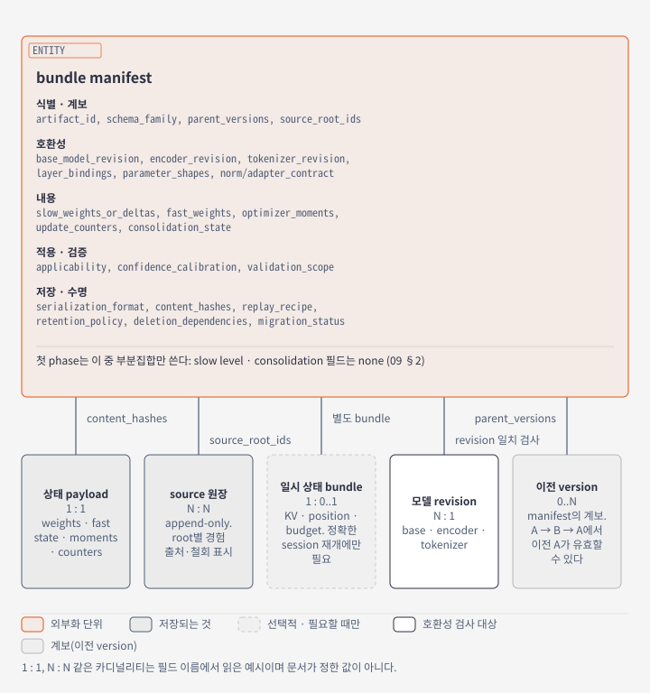
| 묶음 | 필드 | 이름에서 읽은 용도 |
|---|---|---|
| 식별 · 계보 | artifact_id, schema_family, parent_versions, source_root_ids | 이 artifact가 무엇이고, 어느 version에서 나왔으며, 어떤 경험 root로 만들어졌는지 |
| 호환성 | base_model_revision, encoder_revision, tokenizer_revision, layer_bindings, parameter_shapes, norm/adapter_contract | 어떤 기반 모델·encoder·tokenizer에 어느 layer로 붙는지. shape 일치는 호환성 증거가 아니다 |
| 내용 | slow_weights_or_deltas, fast_weights, optimizer_moments, update_counters, consolidation_state | 이어서 학습할 복원에 필요한 상태(느린 쪽·빠른 쪽·optimizer·시계·공고화) |
| 적용 · 검증 | applicability, confidence_calibration, validation_scope | 어떤 조건에서 적용하고 어디까지 검증됐는지 |
| 저장 · 수명 | serialization_format, content_hashes, replay_recipe, retention_policy, deletion_dependencies, migration_status | 저장 형식과 무결성, 재생 방법, 보존·삭제 의존성, 이전 상태 |
- PROPOSAL read-only 복원과 이어서 학습할 복원은 필요한 state가 다르다. 정확한 session 재개에는 KV·position·budget 등 일시적 상태도 별도 bundle로 필요하다(07 §5).
- PROPOSAL 첫 phase의 manifest v0는 위 항목의 부분집합이며 slow level과 consolidation 필드는
none이다. 단일 사용자·단일 writer만 두고(동시 write는 거부), 네트워크 서버와 인증은 없다(09 §2).
9.6 version의 의미와 호환성
목적: "항상 최신이 가장 좋다"는 생각 없이 상태 변화의 계보를 다룬다. PROPOSAL 버전은 가장 최신의 하나만 선택하는 일렬 교체가 아니라 특정 source·조건·학습 상태의 lineage(계보)다. A→B→A에서 이전 A가 유효할 수 있다. 잘못된 과거 사실과 과거에는 유효했던 상태 변화는 다르게 처리한다(07 §6).
- PROPOSAL base encoder가 바뀌면 기존 schema latent의 좌표 의미도 바뀔 수 있다. shape 일치는 호환성 증거가 아니다. migration(옛 상태를 새 모델로 옮기기)은 재인코딩·adapter·replay/distillation 등의 후보이며 별도 평가한다.
- PROPOSAL 병합 뒤에는 개별 source의 삭제가 완벽히 가능한지 검증 없이 약속하지 않는다. 그래서 첫 phase의 삭제 보장은 fast state에 한정한다(아래).
9.7 검색과 residency, eviction
목적: 필요한 schema를 찾는 일, 어디에 두는지, 무엇을 내려놓는지를 서로 다른 정책으로 다룬다. PROPOSAL 검색용 embedding·key는 schema의 전체 의미나 적합성 판정을 대신하지 않는다. retrieval visibility(검색에 보이는가)와 applicability(적용해도 되는가)를 분리한다. hot schema는 resident(메모리에 상주), cold artifact는 offload(밖으로 내림) 후보로 두되 복사·deserialization·cache warmup 비용을 측정한다(07 §7).
USER (B01, 2026-09-27) 사용자는 eviction(밀어내기)·forgetting·memory revision에는 아직 아이디어가 없다고 밝혔다. 설계가 채워야 할 열린 문제다. PROPOSAL 위 residency는 저장 위치(resident·offload)의 정책이고 eviction은 fast state에서 무엇이 빠지는가의 정책이다. 둘을 분리한다.
- 망각은 decay 와 로 표현하되 어떤 정보가 얼마나 약해졌는지를 level별로 기록한다.
- eviction은 fast state가 용량을 넘을 때 후보를 고른다. 기준 후보는 최근 사용, 독립 증거 수, 적용 조건의 중복, 보호 family와의 연관이다.
- eviction은 삭제가 아니라 offload·재구성 가능 상태로의 이동을 기본으로 한다. 삭제는 최소 상태 회귀를 따른다.
- 평가는 검증 체계의 F10(consolidation)과 보호 family의 회귀로 한다.
ARCHIVE Melete v0.2는 active eviction을 "canonical 경험을 지우지 않고 현재 active set에서 내려놓음"으로 정의하고 consolidation·deletion·graph replay와 구분했다. OPEN 기준 후보 중 무엇이 쓰기 gate의 학습 가능한 신호가 되는지는 정하지 않았다. multi-user 환경에서는 fast state, eligibility, optimizer state가 사용자를 넘어 섞이지 않게 해야 하고, shared slow model로 어떤 개인 정보를 통합할지는 별도 동의·정책이 필요하다. 최초 MVP에서 광범위 개인 DB나 native 권한을 자동 활성화하지 않는다(07 §7).
9.8 최소 상태 회귀와 첫 phase의 상태 계약
목적: 상태 계약이 지켜지는지를 효용과 따로 확인한다. PROPOSAL 최소 상태 회귀는 아홉 가지를 검사한다. 같은 입력의 재전송, 같은 ID의 다른 payload, interrupted update(도중에 끊긴 갱신), restart, branch rollback, source 삭제, offload·reload, 모델 revision mismatch, concurrent writes(동시 쓰기)다. 저장·해시 검사 통과와 판단 효용 통과를 별도 보고한다(07 §8).
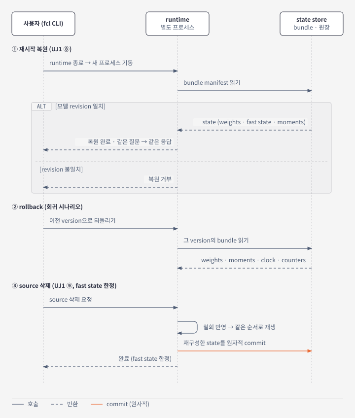
그림의 글 설명
- 재시작 복원: CLI가 runtime을 종료하고 새 프로세스를 띄운다. runtime이 state store의 bundle manifest를 읽는다. 모델 revision이 일치하면 state(weights·fast state·moments)를 읽어 복원하고 같은 질문에 같은 응답(허용오차)을 낸다. 불일치하면 복원을 거부한다.
- rollback: 이전 version으로 되돌리라는 요청에 runtime이 그 version의 bundle을 읽어 weights·moments·clock·counters를 가져온다.
- source 삭제: CLI가 삭제를 요청하면 runtime이 철회를 반영하고 남은 source를 같은 순서로 재생해 state를 재구성하고 원자적으로 commit한 뒤 완료를 알린다(fast state 한정).
PROPOSAL 첫 phase(P1)의 종료 조건은 "bundle v0 + 원자적 commit + 재시작 복원 + 얇은 source 삭제(replay 재구성, fast state 한정)"다(09 §4 상태 저장 행). 아래 표는 이 가운데 상태에 관한 보장을 옮겼다.
| 보장 | 내용 | 문서 위치 |
|---|---|---|
| 재전송 | 같은 입력 재전송은 같은 root로 한 번만 반영된다 | 보장 (1) |
| 시계 | 경험·token·optimizer·wall 시계가 분리 기록되고 내부 loop·replay는 새 evidence로 세지 않는다 | 보장 (2) |
| commit과 재시작 | commit은 원자적이고 재시작 전후 같은 snapshot에서 응답이 허용오차 안에서 같다 | 보장 (3) |
| revision | 모델 revision이 다르면 복원을 거부한다 | 보장 (4) |
| 삭제 | 삭제 뒤 state는 그 source 없이 같은 순서로 재생한 state와 허용오차 안에서 같다(fast state 한정) | 보장 (5) |
PROPOSAL 첫 phase에서 일부러 얇게 둔 것은 단일 사용자·단일 writer(동시 write 거부), 네트워크 서버와 인증 없음, manifest는 07 §5의 부분집합이다. 원 Titan 코드의 generate()·reset_memory=True 같은 state reset 경로를 session 경계로 오인하지 않는다. session 지속성은 별도 계약이다(09 §2, 05 §6). 이후 phase에서 커지는 것은 아래와 같다.
| phase | 해상도 |
|---|---|
| P1 | bundle v0 + 원자적 commit + 재시작 복원 + 얇은 source 삭제(replay 재구성, fast state 한정) |
| P2 | 다중 session·branch rollback·동시 write 정책 확대 |
| P3 | 제어 상태(controller)도 bundle에 포함 |
| P4 | 외부화 v0: export/import·offload/reload·version lineage·migration 거부 규칙. 통합 뒤 삭제는 "측정만" |
| P5 | retrieval·migration·multi-user 격리. 삭제 의존성은 검증한 범위만 |
3부
어떻게 검증하고 나아가나
평가 계획, P1–P5 로드맵, 자기 진화 정책, 열린 결정과 질문.
10 평가: schema가 미래 학습과 계산을 바꾸는가
목적: 통합 모델 System ONE이 "경험이 쌓이면 같은 관계 구조의 새 사례를 더 적은 관측과 더 적은 계산으로 푼다"는 주장을, 구현이 생기기 전에 판정 규칙으로 먼저 정해 두는 것이다. 기능: benchmark family, 대표 실험 S0·SE·SES, 비교군, 인과적 개입, 지표, 사전 등록 gate. 입력과 출력: 세계 생성기와 gate 레지스트리를 넣으면 결과 상태(PASS·FAIL·INCONCLUSIVE·BLOCKED·NOT RUN)와 등급이 붙은 보고서가 나온다. 형식: 표와 필드 목록이다. 근거 문서는 08-evaluation.md이고, 여기서 schema-based learning을 SBL로 줄여 쓴다.
세는 규칙: 위 숫자는 08 §2·§2-1·§2-2·§3·§6의 표와 목록의 항목 수다. 새로 만든 수치가 아니다. 표 안의 §n은 08의 절 번호다(다른 문서는 '06 §9'처럼 문서 번호를 앞에 적었다).
10.1 무엇을 재는가: 세 종류의 성공
PROPOSAL 평가는 성공을 세 가지로 갈라서 각각 따로 판정한다(08 §1).
| 종류 | 묻는 것 |
|---|---|
| Contract | 인과적 입력, state, 재생, 누수 방지, budget, source 계보가 맞는가. |
| Efficacy | 새 사례의 판단·학습·보존·비용이 실제로 나아지는가. |
| Product | 실제 입력→추론→학습→재개→재시작→삭제/복구 사용자 여정이 동작하는가. |
PROPOSAL 헌장의 두 중심 명제는 이 절의 family에 대응시키고 독립적으로 판정한다. H-SAMPLE(새 구조 공유 과제에서 목표 성능까지의 관측 수 감소)은 F01·F03과 학습 지표로, H-COMPUTE(경험·통합 이후 같은 정확도의 총 계산 감소)는 F11·대표 실험·비용식으로 본다. 한쪽의 PASS는 다른 쪽의 근거가 아니다. 빠르게 배워도 추론이 느릴 수 있고, early exit가 좋아져도 지속학습이 없을 수 있다(01 §4).
USER (U-T09) 표면에서 meta의 meta까지 의도를 파악해 그 방향으로 설계한다. PROPOSAL 의도 6층위와 설계·검증의 대응은 아래 표와 같다. 4–6층은 대화에서 도출한 해석이라 사용자 확인 전에는 확정이 아니다.
| 층위 | 설계 위치 | 검증 | 상태 |
|---|---|---|---|
| 1 구현 재료를 계산 그래프·상태·학습 규칙으로 연결 | 05 §1–§3, 06 §5 | §1 Contract, §5 인과적 개입 | 설계됨 |
| 2 이전 경험에 따라 처리 방식이 달라짐 | 06 §9 | §3 S0/SE/SES, F11 | 설계됨 |
| 3 사고 중 이해의 틀 재선택 | 05 §4·§8, 06 §5 | F15(§2-1 제안) | 지표 추가 제안 |
| 4 경험이 만드는 유용한 편향 | 06 §2 q^-와 편향 정의 | F02·F05, §6 편향 지표 | 정의·지표 추가 제안 |
| 5 학습·사고 정책도 학습 | 06 §4·§6, 10 §1 | F11, controller 단계(§3) | 설계됨 |
| 6 이력에 따른 자기 조직화 | 11 §6(제안 문단) | F17(§2-1 제안) | OPEN 가설 |
ARCHIVE Melete는 N1의 효용 meet를 충족하지 못한 채 N2·N3 구성요소 연구로 나아갔다. 구현 PASS와 효용 PASS를 문서에서는 구분했지만 다음 단계의 진입 조건으로 집행하지 못했다는 것이 사후 검토의 지적이다(2026-10-15-neural-judgment-roadmap.md). PROPOSAL 그래서 다음 phase나 다음 구성요소로 가기 전에 앞 단계의 efficacy gate를 통과하거나, 통과하지 못한 채 진행하는 이유와 범위를 결과 상태(INCONCLUSIVE·FAIL)와 함께 적는다. 통과 없이 진행한 연구는 "선행 미충족 위의 탐색"으로 표시하고 기본 경로나 phase 완료로 올리지 않는다.
USER (B11, 2026-10-11) 학습 방법 검증이 가장 중요하다. 조합들이 검증됐는가, 수준은 어떤가. PROPOSAL 조합마다 검증 수준을 한 표에 적고, 낮은 수준의 결과를 높은 수준의 문구로 쓰지 않는다.
| 수준 | 뜻 |
|---|---|
| NOT RUN | 설계만 있다. |
| CONTRACT | 상태·누수·재생 검사를 통과했다. |
| PILOT | 사전 정의한 대조 대비 개발 결과다. 확증이 아니다. |
| CONFIRMED | fresh locked cohort에서 사전 gate를 통과했다. |
10.2 benchmark family F01–F12: 무엇을 조작하고 무엇을 재는가
PROPOSAL 핵심 family 열두 개는 같은 관계 구조, 같은 어휘·다른 관계, 새 역할 결합, 예외·정정, 조건 복귀(ABA: A→B→A), 지연 피드백, 불확실성, 공고화, 계산 효율, 외부화를 하나씩 따로 조작한다(08 §2).
| Family | 조작 | 측정 |
|---|---|---|
| F01 구조 전이 | 같은 관계, 다른 개체/표현/수치 | held-out choice/prediction |
| F02 표면 함정 | 같은 어휘·개체, 다른 관계 | negative transfer, 조건별 paired correctness |
| F03 rapid binding | schema 공유, 새 역할 결합 | 0/1/3/10 등 고정 관측 곡선 |
| F04 새로운 구조 | 기존에 없던 관계 | 적절한 보류/학습/분화, 설명 가능 범위 |
| F05 예외·정정 | 규칙→예외→기존 규칙 재검사 | 국소 수정, 원래 조건 보존 |
| F06 ABA 선택 | A→B→A, goal/context 변경 | 수정 없는 재선택 vs 재학습 비용 |
| F07 오염·반복 | 틀린 generated 해석, 동일 root 재전송 | drift, 과잉확신, false update |
| F08 지연 피드백 | 중간에 context 전환 후 옛 사건 feedback | credit assignment 정확도 |
| F09 불확실성 | 여러 schema가 관측상 구별 불가 | calibration, risk/coverage, 유용한 질문 |
| F10 consolidation | fast state 제거, sleep/replay | 장기 유지, 새 task 적응 개선 |
| F11 계산 효율 | 같은 품질에서 depth/update budget 변화 | cost-to-quality 곡선 |
| F12 외부화 | offload/reload, version migration | 판단·후속 학습의 일관성 |
LITERATURE (GOUDAR23, 원문 검토 §4.4) 구조는 같고 표면만 다르거나 표면은 같고 구조가 다른 lure로 두 요인을 분리한 논문은 읽은 11편에서 찾지 못했다. GOUDAR23은 오히려 학습 속도가 자극 코사인 유사도에 크게 의존함을 보인다(문제 3의 trial 수가 유사도 1에서 약 7, 0에서 약 175, 그림 판독). PROPOSAL (원문 검토 §5 출발점 5) 그래서 F01(구조 같고 표면 다름)과 F02(표면 같고 구조 다름)를 표면 유사도 단계별로 함께 재서 두 요인을 분리한다.
LITERATURE (CHU25·SWAMI23·KUMAR26·MICONI25) 문헌에는 H-SAMPLE을 재는 틀이 이미 여럿 있다. GOUDAR23·CHU25의 trial-to-criterion 곡선(CHU25는 5문제·10 seed에서 새 문제 학습 trial이 약 710에서 455로, 그림 판독), SWAMI23 LIALT의 예시형(예시 1개 + 새 토큰), KUMAR26의 1회 노출 용량 곡선(reservoir 1024유닛에서 12쌍 중 약 7.8), MICONI25의 list-linking·sham 대조다. MICONI25의 실제 설계는 ABCD+EFGH이고 연결쌍 D>E를 4 trial 제시한다(초록의 예시와 다르다). PROPOSAL F03은 이 곡선들을 측정 틀로만 빌리고, 수치는 우리 harness에서 다시 잰다.
10.3 SBL 13개 이론을 조작 가능한 질문과 family로
USER (U-T06) schema based learning이 얘기하는 대부분의 이론들이 적용되고 검증되어야 한다. PROPOSAL 그래서 03 §2의 13개 이론을 아래처럼 질문·family·필수 대조에 대응시킨다(08 §2-1). 이 대응은 AI 과제에서 현상을 재현하는 것이며 실제 뇌 알고리즘의 증명이 아니다. 표에 나오는 약어 CLS는 complementary learning systems, TEM은 Tolman-Eichenbaum machine이다.
| 이론 | 조작 가능한 질문 | family | 필수 대조 |
|---|---|---|---|
| CLS | fast state를 제거해도 공통 구조가 남고 새 사건은 빠르게 기록되는가 | F03, F10 | replay-only, Sleep 없음 |
| SBL | 관련 schema가 있을 때 목표 성능까지 관측 수가 줄고 무관한 prior는 줄이지 않는가 | F01, F03 | wrong-schema memory, 무작위·동결 memory |
| Hippocampal match–mismatch | 표면 novelty와 관계 novelty를 분리해 반응하는가 | F02, F04 | novelty 단일 신호 |
| Retrieval-mediated integration | 서로 다른 때 배운 A–B와 B–C로 A–C를 추론하는가 | F13 | 재활성화 제거, raw history consumer |
| Reconsolidation | 재활성화 뒤 조건부로 수정되고 모든 read가 overwrite가 되지는 않는가 | F05, F07 | 항상 쓰기 |
| Latent-cause inference | 같은 원인의 수정과 다른 상황의 분리를 구별하는가 | F05, F06, F09 | 단일 pooled prior, oracle cause(상한 진단) |
| Familiarity/recollection | 친숙함과 이해·정확도를 분리하는가 | F02 | 친숙함 점수만으로 halt |
| Structure-mapping | 표면이 달라도 역할·관계를 대응하는가 | F01, F02 | 표면 shuffle |
| Chunking/expertise | 사례→관계→원리 단위로 다층 재표현해 새 개념의 익숙한 지점이 늘어나는가 | F14, F11 | 단일 수준(표면)만 학습한 같은 양의 사례 |
| Automaticity | 경험 후 같은 품질에 필요한 계산이 줄어드는가 | F11, §3 | 쉬운 문제만 조기 종료 |
| TEM/cognitive map | 구조와 내용을 분리해 새 환경에 전이하는가 | F01, F03 | 비분해 baseline |
| vmPFC→MEC 조직화 | 맥락에 따라 기억을 공유하거나 분리하는가 | F05, F06 | 단일 공유 state |
| MS→MEC 기억 선택 | 학습과 사용을 분리해 수정 없이 재선택하는가 | F06 | 재학습 |
표로 보기: 이론별 대응 family(같은 값)
| 이론 | 대응 family |
|---|---|
| CLS | F03, F10 |
| SBL | F01, F03 |
| Hippocampal match–mismatch | F02, F04 |
| Retrieval-mediated integration | F13 |
| Reconsolidation | F05, F07 |
| Latent-cause inference | F05, F06, F09 |
| Familiarity/recollection | F02 |
| Structure-mapping | F01, F02 |
| Chunking/expertise | F14, F11 |
| Automaticity | F11, §3 |
| TEM/cognitive map | F01, F03 |
| vmPFC→MEC 조직화 | F05, F06 |
| MS→MEC 기억 선택 | F06 |
10.4 추가 family F13–F17: 이론에서 나온 후보
PROPOSAL 위 표에서 기존 열두 개로 덮이지 않는 질문은 다섯 개의 추가 family로 만든다(08 §2-1).
- F13 관계 통합 추론: A–B와 B–C를 다른 시점에 관측시킨 뒤 A–C를 묻는다. held-out 조합의 정확도와, 재활성화를 제거했을 때의 손실을 잰다.
- F14 다층 추상 전이: 같은 사례군을 사건·역할·관계·원리 수준으로 재표현해 제공하는 조건을 만들고, 새 표면의 같은 관계(F01)와 다른 도메인의 같은 원리에서 관측 수 곡선을 비교한다. 대조는 같은 양의 사례를 단일 수준으로만 학습한 모델이다.
- F15 사고 중 재선택: 처음 loop에서 그럴듯하지만 틀린 schema가 고르도록 유도 단서를 넣고, loop 중 전환·조합·보류 비율, 최종 정답, loop 수, 추가 비용을 잰다. 대조는 첫 선택 고정과 oracle schema(상한 진단)다.
- F16 통찰의 전이: 깊은 loop 뒤에 같은 문제 재제시 정확도(암기), 구조를 공유하는 새 사례의 정확도와 C*ε 변화(전이), 형성된 표현을 제거했을 때 전이만 선택적으로 줄어드는지를 잰다. self-consistency와 반복된 confidence 증가는 통찰의 증거로 세지 않는다(11 §4).
- F17 이력 분기: 같은 초기 모델에 서로 다른 경험 이력 Ha, Hb를 준 뒤 같은 입력에서의 schema 선택 분포, 요구 정확도까지의 loop 수, update 정책 출력의 분기를 잰다. 대조는 같은 이력의 순서 섞기, 같은 이력의 다른 seed, 이력 없음이다. 이득이 이력별 과제에서 비대칭인지 교차 전이 행렬로 본다. 사실 정보는 같고 이력만 다른 두 상태에서 이력에 맞는 판단 차이와, 반례 뒤에도 바뀌지 않는 맹목적 고집을 구분해 잰다(B14/H1).
OPEN 추가 family의 생성기·world 수·split은 benchmark set v0에서 정한다. 이 항목들은 승인된 gate가 아니다. 또 로드맵(09 §4)의 benchmark 행은 F01–F12만 phase에 배치하고, F13–F21의 phase 배치는 문서에 아직 없다.
10.5 추가 family F18–F21: Melete 시기 피드백에서 온 후보
PROPOSAL F13–F17에 이어 아래 네 개를 더한다. 번호는 잠정이며 각 family는 같은 관측·계산·갱신 예산의 대조군과 함께 판정한다. Melete 시기의 이력 의존 편향(사실 정보는 같고 경험 이력만 다른 두 상태)은 조작이 F17과 같아서 F17의 측정 항목으로 합쳤다(08 §2-2).
| Family | 조작 | 측정 |
|---|---|---|
| F18 성급한 일반화와 해소 | 처음 1–3개 관측이 잘못된 단순 규칙을 유도한 뒤 반례 | 잠정 편향 형성 속도, 오류 해소 속도, 원래 조건 보존(B08) |
| F19 가까운 새로움·먼 새로움 | 기존 관계에서 한 걸음 나간 입력, 표면만 같은 무관한 입력, 매우 먼 입력 | 가장 가까운 schema 시작 대 write 대 보류, 흘려듣기·보류의 적절성(B14/H2·H3b, B04) |
| F20 반복 조회 자기증폭 | 틀린 초기 경로를 반복 조회하거나 모델 자신의 같은 해석을 반복한 뒤 독립 반례 | 고착·붕괴 여부, 강화 상한·감쇠로의 회복(B14/H3a) |
| F21 생성 단독 반복·선호 변화 | 올바른 경험·틀린 해석·동일 root 반복·목표 변경·선호 변화·조건 복귀를 별도 arm으로 | generated 반복의 drift와 외부 반례 뒤 회복 |
ARCHIVE F17의 이력 의존 측정과 F18–F20은 Melete N0의 D5·D3·D4·D7에, F21은 J2 측정 계획에 대응한다(2026-10-12-neural-validation.md, 2026-10-15-neural-judgment-roadmap.md). J2는 J1 미통과로 실행되지 않았다.
10.6 대표 실험: 경험이 숙고를 직관으로 바꾸는가 (S0·SE·SES)
PROPOSAL 한 모델을 세 상태에서 같은 질문으로 잰다(08 §3).
- S0: retrofit(기존 모델을 새 구조로 개조)과 기본 학습을 마친 상태.
- SE: 지정된 경험을 축적한 상태.
- SES: 같은 경험으로 Sleep(빠른 상태를 느린 가중치로 옮기는 통합 단계)까지 수행한 상태.
절차는 이렇다. controller(경로를 고르는 판단 구조)를 먼저 우회하고 고정 depth grid의 r에서 품질 Qs(r)를 잰다. update budget도 고정하거나 (r,u) 2차원 grid로 평가한다. 시험은 새 binding·entity·value가 관계를 공유하는 사례다. 그다음 단계에서 controller를 켜 실제 policy가 저비용 경로를 고르는지 본다. SE와 SES의 quality–compute 곡선이 왼쪽으로 이동해야 모델 내부의 계산 효율 변화의 근거가 되며, 쉬운 문제만 일찍 끝내서 생긴 평균 loop 감소와는 구별한다. wrong-schema memory, memory lesion, 구조를 섞은 경험을 대조한다.
측정량은 같은 오차 ε에 닿는 최소 계산량이다(06 §9). 최소값은 실제로 측정한 budget grid 안에서만 구하고, 측정하지 않은 교차점을 보간해 단정하지 않는다.
𝒯new는 새 entity·value·binding이지만 관계 구조를 공유하는 시험 집합이다. query 수준의 잡음과 history·world 수준의 변동은 나눠서 통계 처리한다.
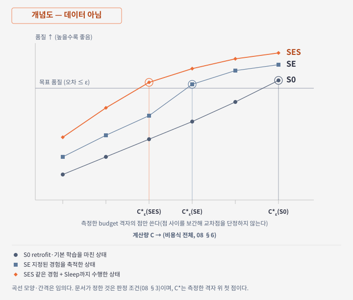

USER (U-T06) 이론·수식과 함께 실험을 통한 PoC 증명까지 한다. PROPOSAL 대표 실험의 PoC PASS는 아래 다섯 조건을 결과를 보기 전에 사전 등록하고 모두 만족할 때만 선언한다. 값은 pilot 뒤 확정한다.
- SES가 S0보다 C*ε가 낮다(비용식 전체를 쓰고 측정한 budget grid 안에서만 비교한다).
- 같은 총 계산의 replay-only, 무작위·동결 memory, raw history consumer보다 SES가 낫다(비교군은 아래 절).
- F02 표면 함정과 F05·F06 보호 family에서 한도를 넘는 퇴행이 없다.
- memory lesion과 구조를 섞은 경험에서 이득이 선택적으로 사라진다(인과적 개입은 아래 절).
- 모든 측정이 실제 입력→모델 응답 경로, 곧 실제 CLI와 실제 pretrained 모델에서 얻어졌다. mock과 fake는 진단용이며 PoC 근거가 아니다.
FAIL과 INCONCLUSIVE도 같은 틀로 기록한다. 합성 Phase-0 실험(experiments/phase0/README.md)은 이 PoC의 선행 증거가 아니라 진입 근거다.
LITERATURE (HWU20, 원문 검토 §4.4) 같은 품질의 추론 계산량을 잰 논문은 읽은 11편에서 찾지 못했다. 그래서 F11과 SE·SES의 곡선 이동에는 문헌 기준값이 없다. HWU20의 절감도 학습 epoch이다. PROPOSAL (원문 검토 §5 출발점 6) 고정 depth grid의 품질–계산 곡선을 controller보다 먼저 얻는다.
10.7 비교군과 인과적 개입
PROPOSAL 비교군은 일곱 묶음이다(08 §4).
- 같은 pretrained LLM의 직접 응답과 고정 budget 숙고.
- 같은 경험을 raw history로 준 consumer, 강한 RAG(retrieval-augmented generation)·구조화 text memory.
- 같은 용량의 frozen·random memory, no-memory, 같은 update budget.
- 단일 pooled prior와 mixture prior, 명시적 graph·program schema.
- fixed depth, learned early exit, novelty-only routing, 제안 controller.
- 단일 갱신 주기, 고정 multi-timescale CMS(continuum memory system), dynamic-frequency, event/readiness, phase-coordinated.
- replay-only, 같은 계산의 teacher distillation, Sleep 제안.
PROPOSAL (원문 검토 §4.1·§5 출발점 2·8) schema 기제를 쓰는 모든 실험은 같은 계산·갱신 예산의 고정·무구조·항상-갱신 대조를 의무로 둔다. 쓰기 gate는 항상 쓰기, surprise만, 고정 무작위 gate를 같은 쓰기 예산에서 비교하고, replay는 novelty×familiarity 배분을 같은 총 replay 계산의 고정 예산과 비교한다. LITERATURE (HWU20·GOUDAR23·ELDER26) 이런 대조에서 단순한 쪽이 비슷하거나 더 높았던 사례가 읽은 논문에 있다(수치는 03 §7). ARCHIVE (S23) 반대 방향의 보고도 있다. 고정 scaffold에 새 readout만 붙여서는 같은 이득이 없었다고 하나, 이번에 정독하지 않은 원보고의 범위다.
인과적 개입은 같은 모델의 안쪽을 직접 건드려 구조가 정말 쓰이는지 본다(08 §5).
- 학습한 encoder 대 동결 encoder, parameter 성분 lesion, graph·low-rank 방향 교체, schema artifact 교체, write gradient 차단, depth read 제거, 같은 정보를 terminal·all-state·pointer로 비교하는 설계.
- 재학습한 ablation과 같은 checkpoint의 추론 시 lesion은 다른 질문이다. output 범위나 capacity를 바꾼 lesion을 architecture 기여로 과대해석하지 않는다. 오답을 안정화해 flip rate가 줄어드는 현상을 정답 안정성으로 세지 않는다.
LITERATURE (GOUDAR23) subspace 재사용의 인과 시험이 있다. 재사용을 막은 D→S 교란은 두 번째 문제의 trial이 약 3300으로 문제 1(약 3000)과 비슷해지고, 대조인 S→S는 약 450이다(그림 판독). (MICONI25) Wout 또는 Win을 교체하면 chance로 떨어지지만, 같은 네트워크에서 reinstatement를 제거하는 인과 실험은 없다. PROPOSAL (원문 검토 §5 출발점 1) 구조 전이가 표현 제거·교체 때 선택적으로 사라지는지를 schema의 조작적 증거로 쓴다.
10.8 지표: 학습·판단·편향·수정·효율·비용
PROPOSAL 지표는 여섯 묶음이다(08 §6).
- 학습: 목표 품질까지의 관측 수, learning curve와 AUC, adaptation update와 teacher 비용.
- 판단: family별 accuracy·MSE·utility, both-correct condition pairs, calibration, proper scoring, 보류의 risk/coverage. 헌장의 주 판단 지표는 조건별 선택(보류 포함)의 정답·보호·복귀이고 결과값 예측 오차는 보조다(01 §1).
- 편향: 경험이 만든 조건부 prior q−를 이득과 해악으로 나눠 잰다. 이득은 schema가 맞는 사례의 첫 시도 정확도와 필요한 loop 수, 해악은 맞지 않는 사례에서 첫 시도가 일치 답을 내는 비율(conformity)과 반례 k개 뒤의 정답 전환·유지 비율이다. 둘 다 같은 모델에서 q−를 균등화한 변형과 쌍으로 보고하고, 이득만 보고하거나 불일치 사례 없이 일치 사례 평균만 보고하지 않는다.
- 수정: correction latency, false update, unrelated regression, ABA recovery, backward·forward transfer.
- 효율: p50·p95 latency, TTFT, decode tokens/s, FLOPs, 활성 parameter·layer 수, memory residency, energy. 측정된 것만 따로 쓴다.
- 비용식: encoder + router + core loops + depth read + memory read·write·backward + retrieval·offload + output decoder. online 비용과 Sleep·학습의 amortized 비용을 둘 다 공개한다. gradient는 공짜 forward가 아니며 batch·sequence length·hardware·warm/cold 상태를 맞춘다.
LITERATURE (원문 검토 §4.4 보존·망각) 보존 측정은 읽은 논문에 거의 없다. CHU25·ELDER26은 측정이 없고, TEM20은 기억을 환경마다 리셋하며, KUMAR26은 기존 쌍 보존을 보고하지 않았다. GOUDAR23은 재학습 savings뿐이고 MICONI25는 장기 망각이 없으며 HWU20만 부분 측정이 있다. PROPOSAL (원문 검토 §5 출발점 7) 그래서 보존 평가(F05·F06·F10)는 우리가 만든다. ABA 조건 복귀, 이전 과제의 zero-shot 재평가, savings를 함께 쓴다.
LITERATURE (SPENS24·HWU20) 클래스 내 분산 감소와 DRM lure 회상은 인간 데이터와 정성적 유사성만 보이는 재현이고, Tse식 probe는 cued·non-cued·original 항목의 활동으로 새 연합을 본다. PROPOSAL (원문 검토 §5 출발점 4) 이들은 schema 과적용(prototype 수축·lure 침입)과 공고화의 진단으로 빌린다.
10.9 gate 레지스트리·benchmark set v0·최소 gate
USER (U-T02) 숫자로 환산되는 verification(benchmark set 포함)이 필요하다. PROPOSAL 수치 gate를 아래 틀로 결과를 보기 전에 사전 등록한다. 값은 pilot 뒤 prospective하게 확정하며 이 틀은 승인된 수치가 아니다. 한 행은 열두 필드를 가진다.
| 묶음 | 필드 |
|---|---|
| 정체 | gate_id / hypothesis(H-SAMPLE, H-COMPUTE 또는 보호 family) / family |
| 측정 | primary_metric / 비교 baseline / 효과 크기 하한 Δmin |
| 통계 | 통계 단위(seed × world × history) / 신뢰구간 규칙 / 보호 family 퇴행 한도 |
| 기록 | 결과 상태 규칙 / 등록 시점(결과 열람 전) / 대응하는 benchmark set_id |
Δmin은 pilot에서 잰 seed × world 변동의 함수로 정한다. 기본 판정은 신뢰구간 하한이 0을 넘고 중앙값 차이가 Δmin 이상일 때다. 변동 척도와 배수는 pilot 설계에서 고정한다(OPEN). 결과를 본 뒤 Δmin·baseline·test subset을 바꾸면 새 gate_id를 만들고 이전 gate는 FAIL 또는 INCONCLUSIVE로 남긴다.
benchmark set v0는 아홉 필드를 가진다(값은 OPEN).
| 묶음 | 필드 |
|---|---|
| 정체 | set_id / family / 생성기(관계 구조, 개체·수치 표현, 역할 순열) |
| 분할 | world 수 / split(train·dev·select·confirmation. world·history·task family·time 독립) |
| 예산·검사 | 관측 예산 격자(0/1/3/10 등) / loop·update 예산 격자 / 오염 검사 / 데이터 해시 |
최소 gate는 여섯 개이고 값은 아직 없다.
| gate | 통과의 뜻 |
|---|---|
| G-SAMPLE | F03에서 SE 또는 SES가 S0보다 목표 품질까지의 관측 수가 적다. |
| G-COMPUTE | 대표 실험에서 C*ε(SES) < C*ε(S0)이고, 비용은 비용식 전체를 포함하며, 쉬운 문제 편중이 아니다. |
| G-STRUCT | F01의 이득이 F02 표면 함정에서 negative transfer로 뒤집히지 않는다. |
| G-PROTECT | F05·F06에서 이전 조건 판단의 퇴행이 한도 이내다. |
| G-CAUSAL | 학습한 표현을 제거·교체하면 구조 전이만 선택적으로 줄어든다. |
| G-CONTROL | 위 gate는 같은 용량·같은 update budget의 대조군보다 우수해야 한다. 대조가 비슷하면 그 범위에서 구조의 독자 기여를 주장하지 않는다. |
10.10 data와 통계
PROPOSAL 데이터는 world·history·task family·time 단위로 서로 독립하게 나눈다. 같은 세계의 paraphrase를 train과 test에 섞지 않는다. test oracle와 latent label은 evaluator 전용이다. 1·3·10 관측에서 식별 가능한 query 집합이 달라지면 같은 case의 학습 곡선인 것처럼 보고하지 않고, ambiguous coverage는 accuracy와 따로 센다(08 §7).
USER (B14, 2026-10-12) 학습 방법 조합을 검토하려면 dataset과 testcase가 필요하다. PROPOSAL 각 family는 학습을 시작하기 전에 데이터 생성 계약을 가진다.
- 생성기: 시간순 경험 stream, learner가 보는 공개 view, evaluator 전용 oracle을 분리해 만들고 split 단위는 문장이 아니라 world(이력·잠재 구조·도메인)다.
- 식별가능성 audit: 유한한 정책 집합을 정의해 각 query가 해당 관측 수에서 식별 가능한지 먼저 계산한다. 식별 불가능한 사례는 삭제하지 않고 모호 사례로 보존하며, 식별 가능 비율이 사전 기준 미만이면 그 데이터를 쓰지 않는다.
- trivial baseline: 다수결, 최근접, 마지막 label 복사(copy-last), analytic reference를 같은 split에서 먼저 보고한다.
- 독립 의미 검토: 기계적 contract·seal 검사의 통과는 benchmark의 선언과 실제 fixture가 일치한다는 증명이 아니므로 별도 검토를 요구한다.
ARCHIVE Melete의 설계 진리표는 유한 정책 24개·96 slot 중 40개(41.7%)만 식별 가능했고, 식별 가능 비율의 사전 기준으로 10개 관측 시점의 25%를 제안했다. j0-v1은 return fixture가 선언한 정책과 달라 마지막 label을 복사해도 맞는데 기계적 검사가 이를 놓쳐 PASS가 철회됐다. J1에서는 first-copy가 100%인 ceiling을 조건 발견 성공으로 읽지 않기로 했다(postmortem, j0 feedback, j1 diagnostics). 위 수치는 Melete 합성 과제의 값이며 FCL의 기준이 아니다.
PROPOSAL dev는 상세 실패를 제공하고, selection은 사용 횟수와 feedback을 제한하며, confirmation은 fresh locked cohort다. 숨긴 데이터도 aggregate score의 반복 접근으로 오염될 수 있다. 시도 수와 hypothesis family를 기록하고 multiplicity와 신뢰구간을 prospective하게 계획하며, seed × world 의존성을 고려하고 query 반복을 독립 표본으로 늘리지 않는다. 통계적으로 유의하지 않음은 동등성이나 반증이 아니고, 효과 크기 부족과 추정 불확실성은 다르다. 결과를 본 뒤 threshold·margin·test subset을 고쳐 PASS로 만들지 않는다.
10.11 결과 상태와 수치 보고 원칙
PROPOSAL 결과 상태는 다섯 가지다(08 §8).
| 상태 | 뜻 |
|---|---|
| PASS | 사전 정의한 scope 안에서 quality·uncertainty·family 보호·비용 조건을 모두 만족한다. |
| FAIL | 사전 조건 미달. 어떤 가설과 범위를 기각하는지 밝힌다. |
| INCONCLUSIVE | 표본·식별성·검정력이 부족하다. PASS가 아니다. |
| BLOCKED | 권한·infra·runtime 문제로 실험 질문을 보존한 실행을 못 했다. |
| NOT RUN | 실행하지 않았다. 설계나 코드가 있다는 것과 구별한다. |
PROPOSAL 수치는 정확한 denominator, filtered·unfiltered, calibration·test, mean·median, signal MSE·observation MSE를 표시한다. 과거 보고의 값은 ARCHIVE이고, 이번 실행값은 새 run ID·config·code/data hash·환경·실제 비용과 함께 기록한다. 공개 source code가 있다고 본인의 재현을 완료한 것은 아니다(08 §9). 모든 ±와 괄호값에는 정의(SD·SE·95% CI)와 독립 단위(seed·world·query)를 적고, 그림에서 읽은 값은 읽은 값으로 표시하며, 문헌 수치를 인용할 때는 위치와 분모를 함께 적는다.
LITERATURE (CHU25·ELDER26·KUMAR26·SWAMI23, 원문 검토 §8) 읽은 논문에서도 ±와 괄호값의 정의·분모 누락이 반복됐다. CHU25는 정확도 정의와 93.20의 분모가, ELDER26은 ±의 정의와 978 대 888 clips가, KUMAR26은 본문 ±의 정의가 없고, SWAMI23은 같은 괄호 표기가 표에 따라 95% 신뢰구간 폭이거나 표준오차다.
11 로드맵: 처음부터 전체 여정을 돌리고 해상도를 높인다
목적: 통합 모델 System ONE을 어떤 순서로 만들고 어떻게 "실제로 쓸 수 있는 제품"으로 키워 갈지 정한 계획이다. 핵심 규칙은 점진적 해상도다. 매 phase가 끝날 때마다 fcl CLI에서 실제 pretrained 소형 모델이 경험 입력부터 재시작 복원까지 전체 여정을 돌고, phase가 지날수록 같은 제품의 넓이(구조·층·모델·인터페이스)와 깊이(쓰기·정정·계산·공고화·검증)가 함께 오른다. phase는 다섯 개(P1–P5)다. 기능: phase별 데모 시나리오, 결과 등급 상한, capability 표, 종료 gate, 중단 조건, 열린 결정. 입력과 출력: 사용자 제약과 설계 문서를 넣으면 phase 계획·gate·결정 표가 나온다. 근거 문서는 09-roadmap.md(2026-11-12에 새로 씀)이다.
세는 규칙: 위 숫자는 09의 §1.4(phase 수), §5 P1(작업 T01–T16), §10(D-01–D-14), §3(등급 0–5), §4(표의 행 17개)를 센 값이다.
11.1 점진적 해상도 원칙과 FCL에의 적용
사용자 제약과 이 로드맵의 반영 (09 §1.1)
USER 아래 표의 왼쪽 두 열은 사용자가 한 말에서 로드맵에 직접 영향을 주는 제약이다. PROPOSAL 오른쪽 열은 우리가 그 제약을 반영한 방식이다. B 번호는 Melete 시기 사용자 피드백(2026-09-27~10-21)과 이번 설계 감사 요청(2026-11-11~12)의 항목 ID이고, U-T 번호는 user-statements.md의 ID다. 표 안의 §n은 09의 절 번호다(다른 문서는 '05 §4'처럼 문서 번호를 앞에 적었다).
| ID (날짜) | 사용자가 정한 것 | 이 로드맵의 반영 위치 |
|---|---|---|
| U-T02 | objectives, 숫자로 환산되는 verification(benchmark 포함), negative feedback과 evolution, operation policy를 확정하고, 가장 간단히 시작해 점점 고도화한다 | P1이 가장 얇은 전체 여정(§5), 사전 명세 manifest와 등급(§3), negative feedback 분기(§7), operation = 증거 원장·권한 분리(§2) |
| U-T06 | phase를 나눠 단계별 MVP 계획·구현을 하고 self-evolving 작업 방식을 그대로 적용한다 | §5 phase별 MVP, §4 self-evolution 행(P1 수동 → P2 v1 → P3 이후는 승인된 범위만) |
| U-T07 | 기존 모델의 seq layer는 Titan-Llama로, FFN은 CMS로 점진 교체하고, 이후 schema를 외부로 offload·versioning·retrieval하며, 입력 문맥의 schema 판단 구조를 넣는다 | §4 retrofit 행(P1 일부 layer → P5 확대), 외부화 행(P1 bundle → P4 v0 → P5), controller 행(P1 규칙형 controller v0가 익숙함 신호로 fast·learn·deep 경로를 고름 → P3 학습된 controller. "이 과정에서 입력 문맥에 대한 schema판단 mlp나 구조를 넣어서"를 P1부터 반영, D-14) |
| B02 (10-05) | 제한 없는 이상적 청사진의 메커니즘을 정하고, 가장 빨리 검증할 핵심 가치를 찾고, 단계별로 가치를 더하는 phase로 만든다 | P1이 핵심 가치(새 개체 전이·망각·대조군)부터 측정하고 뒤 phase는 같은 제품에 깊이·넓이를 더한다 |
| B05 (10-06) | 구성요소와 구현 방법을 phase로 묶되, 완성된 형태로 test 가능한 것끼리 묶는다 | phase = 여정 전체 × 해상도. 계층·부품 단위 phase 금지(§1.4) |
| B07 (10-07) | 매 단계 self feedback: 의도한 방향인지, 의도대로 구현됐는지, 단계 기준을 충족하는지. pass면 다음, fail이면 개선, 권한·필수 인프라 문제로 막히면 멈추고 보고 | §11 |
| B11 (10-11) | 학습 방법 검증이 가장 중요하다. 조합들이 검증됐는가, 수준은? | §3의 등급이 곧 "검증 수준"이고 §4의 셀마다 도달 가능한 등급을 적었다 |
| B12 (10-11) | 가설·검증 workflow로 진행하고, 실제 쓰는 codex·prime agent에 연동해 continual learning을 의도대로 쓰는 단계까지 간다 | 매 phase의 봉인 manifest = 가설·검증 계약(§2), 외부 agent 연결은 P5 |
| B13 (10-11) | "벌써 agent에 연결해?" — 이른 agent 연결에 대한 비판 | 연결은 P5이며 진입 조건은 핵심 대조의 등급 3 PASS(§7). P1~P4에서는 모델 자체가 실제 LLM이다(§1.3) |
| B14 (10-12) | agent 연결 구조·interface에 치우쳤다, neural이 가장 중요하다, 학습 방법 조합을 검토할 dataset·testcase가 필요하다, H1–H5는 틀렸다고 확인되기 전까지 유지하는 basis다 | dataset·testcase = P1-T06 세계 생성기(dev/sealed 분리). H1–H5는 통합 System ONE의 메커니즘으로 재정의돼 계승된다: familiarity 기반 빠른 처리는 P1(규칙형 controller v0의 fast 경로)부터, hit 경로 강화는 P3(controller·gate), turn별 surprise → 학습 → 최초 query 재구성 → 재개는 P1(정정·재평가·복원)과 P3 |
| B16 (10-13) | 진짜 목표는 Experience → Latent Conditional Judgment → Revisable Decision이며 결과 예측이 아니다. 조건부 판단 benchmark부터 | P1의 질의는 "조건이 주어졌을 때의 판단"과 "정정 뒤의 재선택"이다(P1-T02·T06) |
| B17 (10-21) | 점진적 해상도(전역 규칙): 매 phase 종료 = 실제로 쓸 수 있는 전체 제품, P1 = MVP(walking skeleton), 정직한 상한 | 이 문서 전체 |
| B19 (11-11) | 논문 원문 검토를 생각의 시작점으로 삼는다 | 2026-11-11-sbl-fulltext-review.md §4.1(같은 예산의 고정·무구조·항상-갱신 대조)·§4.4(망각·표면/구조·계산량 미측정)·§5(DQ1–DQ8, 고정 깊이 곡선이 먼저)가 P1 대조군·평가와 phase 순서가 됐다 |
| B20 (11-12) | 설계에 집중하고, 준 피드백이 반영됐는지 확인하고, 시각화 백서를 만든다 | 이 개정과 이 표 |
ARCHIVE Melete에서는 구현 PASS와 효용 PASS를 문서로는 구분했지만 다음 단계 진입 gate로 집행하지 못했다(2026-10-15-neural-judgment-roadmap.md). N1(학습된 graph 메커니즘 실험)에서 학습된 graph의 추가 이득은 0.48%(대략 95% 구간 −3.07~4.04%)로 독립 기여가 입증되지 않았는데 N2·N3 구성요소 연구가 이어졌다. J1 seed7 개발 pilot에서는 학습된 graph(Trained-G)가 matched 대조보다 낮았고(고정 graph 대비 −5.08pp, graph 없음 대비 −3.52pp), 이후 pair objective 후보(G-pair)도 대조 대비 +1.95/+2.73pp로 +5pp gate에 못 미쳐 같은 recipe의 확대를 중단했다(12 §2–§3). 위 숫자는 과거 기록이며 이 저장소에서 새로 실행한 값이 아니다. 이 로드맵은 그 교훈을 결과 등급, 봉인·문구 검사, 진입 규칙으로 집행한다.
헌장 목표 U01–U12의 해상도 경로 (09 §1.2)
PROPOSAL 01 §2의 명시적 목표가 어느 phase에서 어떤 해상도로 올라가는지 한 줄로 적었다. 아직 약속하지 않는 구간은 그렇게 적는다.
| 목표 | 해상도 경로 |
|---|---|
| U01 schema 형성·활용 | P1 상태·행동 변화 관찰(형성은 선언 안 함) → P2 조작적 증거 2종 → P3 표현 제거·교체 개입 |
| U02 SBL 이론의 폭넓은 적용·검증 | F01–F12를 phase마다 추가(§4 benchmark 행). 인지 현상 재현과 뇌 알고리즘 입증은 구별 |
| U03 rapid learning | P1 관측 0/1/3/10 곡선 → P2 구조 3종 → P3 쓰기 gate 분해 |
| U04 익숙하면 빠르게, 필요하면 깊게 | P1 규칙형 controller v0의 fast·learn·deep 경로(deep = r=2, 측정만) → P2 고정 깊이 곡선 → P3 학습된 controller·halting → P4 deep-to-shallow |
| U05 System 1+2를 하나의 모델에 | 전 phase에서 한 모델. 외부 판단기·외부 LLM은 대조군으로만 둔다 |
| U06 sequence layer를 Titan-Llama 계열로 retrofit | P1 일부 layer → P2 확대 → P5 범위·모델 확대(전 층은 근거가 있을 때만) |
| U07 FFN을 CMS로 점진 전환, Sleep으로 통합 | P1 CMS 분기(함수 보존) → P2 level 확대 → P4 Sleep 통합 |
| U08 looped·MoD/MoR·depth attention 검토 | P2 고정 depth(retrofitted recurrence) → P3 라우팅·depth read 후보. 동시 채택을 전제하지 않음 |
| U09 문맥별 schema 판단 구조 | P1 규칙형 controller v0(익숙함 신호 → 경로·쓰기·r. 학습된 판단이 아님) → P2 유지(고정 깊이 측정 때는 우회) → P3 학습된 문맥 head(q^-)·전환·조합·보류 |
| U10 schema offload·versioning·retrieval | 상태 경계는 P1 bundle v0 → P4 외부화 v0 → P5 retrieval·migration |
| U11 뇌파에서 상태 의존적 조율 탐구 | P3에서 고정 주기·frequency-adaptive·event/readiness 조율(A·B·C)을 대조. 위상(phase) 조율(D)은 C를 기준선으로 확보한 뒤 D 대 C로 비교(04-rhythms-and-orchestration.md §6)하며 배치는 OPEN(D-13) |
| U12 이론·수식·PoC·단계별 MVP·self-evolution | 이 문서 전체와 §4 self-evolution 행 |
FCL은 모델 제품이다 (09 §1.3)
USER (B17) agent 제품이면 claude·codex·prime agent처럼 CLI(TUI)로 실행해 실제 LLM을 연결하고 실제 일을 끝까지 시킬 수 있어야 한다. 실제 사용자 인터페이스와 실제 의존성으로 처음부터 끝까지 돌아야 하고 mock-only는 증거가 아니다.
PROPOSAL FCL은 agent가 아니라 모델 제품이다. 별도 판단기와 외부 LLM의 조합이 최종 제품이라는 해석은 사용자 정정(U-T07)으로 대체됐다(AGENTS.md, 01 §5). 그래서 규칙의 정신을 이렇게 옮긴다.
- 실제 LLM: retrofit한 모델 자체다. 외부 frozen LLM에 원문을 붙인 경로는 최종 제품이 아니라 강한 대조군(
ctx)으로 유지한다. - 실제 인터페이스:
fclCLI 세션이다. 평가 harness도 같은 CLI와 같은 session 프로토콜로 모델을 호출한다. - 실제 일: 새 개체에 대한 질문에 모델이 답하고, 반례를 받아 고치고, 재시작 뒤에도 유지하는 여정 자체다. 연구용 작은 합성 모델·세계는 이 일의 재료이며 실제 외부 consumer와 역할이 다르다.
- 외부 agent(codex·prime agent) 연결: 모델 제품의 소비자를 넓히는 넓이 확장이며 P5에 둔다. 효용 근거 없이 연결 구조부터 만들지 않는다는 B13·B14의 비판을 진입 조건으로 반영한다.
phase의 정의와 한눈에 보기 (09 §1.4)
PROPOSAL (B17의 요약) phase는 (전체 여정 UJ1…UJn) × (해상도)이며 아래 여섯 가지를 지킨다.
- 종료 = 전체 여정이 실제 CLI·실제 pretrained 가중치·실제 test-time write·실제 저장·실제 프로세스 재시작으로 돈다. mock-only 결과는 E2E 증거가 아니다.
- 한 계층만 만드는 phase, fake만 도는 phase, 조사만 하는 phase는 없다. spike와 kernel 연구는 phase 앞쪽 작업이며 효용 gate 통과로 혼동하지 않는다.
- P1은 MVP(walking skeleton)다. 여정 전체를 가장 얇게 관통하고 뼈대가 P1부터 실제로 있다.
- 매 phase는 넓이와 깊이를 함께 올린다. 앞 phase의 데모 시나리오는 회귀 gate로 계속 통과한다.
- 아직 강제하지 못하는 보장은 그 phase에서 약속하지 않는다. 결과에는 등급과 상한을 건다.
- 계획 상세도도 점진적이다. P1은 작업 단위, P2는 목표·작업 묶음·gate, P3 이후는 목표와 종료 gate까지만 쓴다.
| phase | 종료 때 사용자가 CLI에서 할 수 있는 것 | 최대 등급 |
|---|---|---|
| P1 얇은 전체 여정 | 소형 retrofit 모델에 경험을 주고, 새 개체 질문·반례·최초 과제 재평가·이전 조건 재방문·저장·재시작 복원·source 삭제까지 한 번에 돌리고, 질문마다 모델이 익숙함에 따라 고른 경로(바로 답·학습 후 답·한 번 더 돌린 답)를 trace로 보며, 대조군과 나란히 본다 | 2 개발 pilot |
| P2 여러 구조·고정 깊이 | 같은 여정을 구조 3종과 --depth 격자로 돌려 경험 전/후 quality–compute 곡선을 본다 | 3 한정 확증 |
| P3 스스로 고르는 모델 | P1의 규칙 대신 학습된 controller가 낯섦·적합도에 따라 빠른 답·학습 후 답·깊은 계산·보류를 스스로 고르고, 무엇·어디·얼마나·언제 쓸지를 나눠 정하며, 결정 trace를 확인한다 | 3 |
| P4 세션을 넘는 경험 | 세션 사이에 sleep을 돌리고, 다음 세션에서 더 적은 관측·더 얕은 depth로 풀며, 상태 bundle을 내보내고 불러온다 | 3 |
| P5 확대와 실제 consumer | 더 넓은 retrofit·두 번째 모델·자연어 도메인에서 확인하고, 실제 codex·prime agent가 같은 session 접점으로 쓴다 | 4 (운용은 관측 범위 안에서 5) |
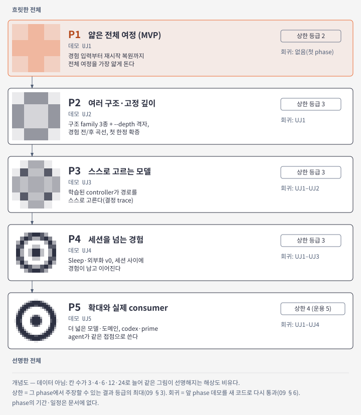

11.2 P1부터 있는 아키텍처 뼈대
PROPOSAL 뒤 phase는 아래 경계를 바꾸지 않고 안쪽을 키운다. 명령어와 이름(fcl 등)은 가칭이다(09 §2, 근거 07-state-and-storage.md·08-evaluation.md·10-evolution-policy.md).
- 사용자 쪽: 터미널의
fclCLI가 session·경험 입력·질문·정정·diff·재평가·재방문·저장/복원·삭제·eval을 맡는다. - 프로세스 경계: CLI와 runtime(
fcl-runtime)은 별도 프로세스이고 stdio JSON-lines의 session 프로토콜로 이야기한다. P5의 외부 consumer도 같은 프로토콜을 쓴다. - runtime 안쪽: pretrained 가중치(revision 고정), retrofit(NMM sequence 경로와 CMS FFN 분기, Bj=0 초기화), write engine(committed snapshot → request-local working state → commit), 시계(experience·token·recursion·optimizer step·level·wall), budget meter. NMM은 Titans 계열의 신경 기억 모듈, CMS는 HOPE 계열의 다중 시간척도 기억(continuum memory system)이다(약어 풀이는 원 논문 용어를 따랐다).
- 저장: 디스크의 state store(bundle manifest + 가중치·fast state·optimizer moment·counter + 추가만 되는 source 원장).
- 평가 쪽: evaluator는 별도 프로세스·별도 권한이고 세계 생성기(oracle은 여기에만)·split·arm 실행·지표·결과 상태와 등급·manifest 봉인 검사를 맡는다. 증거 원장에는 run ID·config·code·data hash·환경·실제 비용(실패·취소 포함)이 남는다.
| 뼈대 요소 | P1에서 실제로 있는 것 | 뒤 phase에서 커지는 것 |
|---|---|---|
| CLI와 runtime의 프로세스 경계 | CLI와 runtime이 별도 프로세스이고 session 프로토콜이 stdio JSON-lines로 정의된다. "재시작"은 runtime 프로세스를 실제로 종료·재기동해 검증한다 | P2 --depth·배치 평가, P3 결정 trace 필드, P4 sleep·export, P5 외부 consumer가 같은 프로토콜을 사용 |
| 모델 runtime | 실제 pretrained 가중치(revision pin) + retrofit 모듈 + write engine + 시계 기록 + budget meter | layer 수, depth, controller, Sleep, 모델 종류 |
| 상태·시계·저장(07-state-and-storage.md) | bundle manifest v0, 원자적 commit, 복원, source ledger, 모델 revision mismatch 거부, 최소 상태 회귀 | 다세션, controller 상태, 외부화, retrieval, migration, multi-user 격리 |
| 평가·대조 경로 | evaluator 분리(oracle 비노출), --arm으로 대조군을 같은 경로에서 실행, budget 일치 검사, 봉인 manifest | arm 추가, 구조 family, 확증 반복 |
| 증거 원장 | run ID·hash·환경·실제 비용·실패 기록, append-only | 후보 계보, self-evolution 루프 |
| 결과 보고 | 결과 상태와 등급 필드가 필수이고 등급에 맞지 않는 문구는 검사기가 막는다 | 등급 상향 조건 검사 |
- PROPOSAL 대조군도 같은 경로로 돈다. 모든 arm은 같은 CLI, 같은 session 프로토콜, 같은 runtime 코드 경로, 같은 평가 harness를 쓰고
--arm과 arm manifest(설정 hash)만 다르다.ctx는 경험을 prompt로 넣는 대조라 계산 예산이 다르므로 "같은 예산 대조"가 아니라 강한 참고 대조로 표기한다. - PROPOSAL write 정책 접점과 controller v0. (U-T07 "이 과정에서 입력 문맥에 대한 schema판단 mlp나 구조를 넣어서") write engine은 "무엇·어디·얼마나·언제 쓰는가"를 정책 접점으로 받는다. P1은 이 접점 앞에 규칙형 controller v0를 둔다. 익숙함 신호(NMM surprise·CMS 잔차)의 두 임계값으로 질문마다 fast(쓰기 없이 r=1로 답), learn(Titans식 surprise write 뒤 r=1로 답), deep(write 뒤 retrofit 블록을 한 번 더 적용한 r=2로 답) 중 하나를 고르고 경로·신호값·예산을 결정 trace로 남긴다. 임계값은 dev에서 정해 봉인하며 학습된 schema 판단이 아니다. v0는 가장 얇은 단조 규칙이므로 "익숙해도 긴 관계 합성은 깊게 계산한다" 같은 다중 신호 결정(05 §4)은 다루지 못하며 P3의 학습된 controller에서 올린다. 고정 깊이 측정(P2 이후)은 controller를 우회한다(D-14).
- PROPOSAL 봉인과 집행. 가설·primary 지표·통계·multiplicity·최소 효과·seed 수·예산 허용오차·보호 지표 임계를 manifest에 쓰고 hash로 봉인한 뒤에만 sealed cohort를 만든다. 평가 코드는 manifest hash가 맞지 않으면 실행을 거부한다. 임계값은 로드맵에 없고 P1-T14에서 dev pilot의 분산으로 처음 정한다.
- PROPOSAL P1에서 일부러 얇게 둔 것. 단일 사용자·단일 writer(동시 write는 거부), 네트워크 서버·인증 없음, bundle manifest는 07 §5의 부분집합(slow level·consolidation 필드는
none)이다. 원 Titan 코드의generate()·reset_memory=True같은 state reset 경로를 session 경계로 오인하지 않는다. session 지속성은 별도 계약이다.
11.3 결과 등급과 상한
PROPOSAL 세 축을 섞지 않는다(09 §3, 근거 08 §1·§8·§9, B11, Melete 교훈).
- gate 종류: Contract(인과 입력·state·재생·누수·budget·출처), Efficacy(새 사례의 판단·학습·보존·비용), Product(실제 입력→추론→학습→재개→재시작→삭제 여정). Contract PASS나 테스트 개수는 Efficacy나 Product 완료를 대신하지 않는다.
- 결과 상태: PASS·FAIL·INCONCLUSIVE·BLOCKED·NOT RUN. 방향을 말한다. FAIL을 소급 PASS로 바꾸지 않는다.
- 등급: 증거의 범위를 말한다. 등급은 phase가 아니라 주장 단위로 부여한다. 등급 3 FAIL은 "이 범위에서 확인된 음성 결과"이므로 높은 등급의 음성 결과도 정당한 증거다.
| 등급 | 이름 | 필요한 증거 | 쓸 수 있는 문구 | 쓰면 안 되는 문구 |
|---|---|---|---|---|
| 0 | 설계·미실행 | 설계와 코드만 존재 | "설계됨", "NOT RUN" | 성능·효과 |
| 1 | 계약 통과 | Contract gate PASS(재생·누수·budget·출처·상태 계약) | "계약 통과" | "개선", "효과", "schema 형성" |
| 2 | 개발 pilot | 실제 pretrained 가중치·실제 갱신·budget 일치 검사 통과. 합성·단일 구조 family·소형 모델 1종·제한 seed. dev 결과 또는 사전 명세 readout | "이 pilot 범위에서 관측했다 / 사전 명세 대조를 통과(미달)했다", 구간 병기 | "schema 이득", "개선했다", "일반화", "빠른 판단 성립", "계산 절감" |
| 3 | 한정 확증 | 봉인 manifest + fresh locked cohort + 같은 계산·쓰기 예산의 고정·무구조·항상-갱신 대조 + 2종 이상 구조 family(lure 포함) + 사전 명세 충분 seed + 독립 검토. 상태 PASS | "이 합성 family·이 모델·이 seed 집합에서 대조군 대비 우위(PASS)". schema 이득이라는 문구는 여기서부터, 범위 태그 필수 | "자연어 일반", "다른 모델에서도", "제품 효용" |
| 4 | 확장 확증 | 등급 3 + 2종 이상 base model(크기 또는 계열이 다름) + 자연어 혼합 도메인 + 새 fresh cohort에서 반복 | "확장한 범위에서도 유지" | "모든 모델·도메인", "운용 안정" |
| 5 | 제한 운용 | 실제 consumer·다세션 이력·외부화를 포함한 실제 E2E + 관측한 coverage 안의 latency·memory·삭제 의존성 | "관측한 범위에서 동작" | "모든 agent·model-call 포괄", "삭제 완전 보장" |
표의 최대 등급은 phase의 상한일 뿐이고, 각 주장은 그 주장의 증거가 채운 등급만 받는다. 예를 들어 P2의 depth 곡선이 봉인 확증을 거치지 않았다면 등급 2다.
표로 보기: phase별 최대 등급과 등급을 막는 것
| phase | 최대 등급 | 등급을 막는 것(그 phase의 상한 이유) |
|---|---|---|
| P1 | 2 | 합성·단일 구조 family, 소형 모델 1종, 제한 seed, 부분 retrofit(전 층 아님), 규칙형 controller v0와 r∈{1,2} 경로뿐, Sleep 없음 |
| P2 | 3 | 합성·소형 모델 1종. 확증은 구조 family 3종·사전 명세 seed에서만. depth·조작적 증거 주장은 확증을 거친 것만 3 |
| P3 | 3 | controller 주장은 쉬운 사례 층화와 같은 품질 비교를 통과한 것만. 모델·도메인 1종 |
| P4 | 3 | Sleep·외부화 주장은 같은 데이터·총 계산량의 replay·teacher 대조를 통과한 것만. 삭제 보장 없음 |
| P5 | 4, 운용은 5 | 두 번째 모델과 자연어 혼합 도메인에서 복제된 것만 4. 운용은 관측한 호출 coverage 안에서만 5 |
PROPOSAL 문구 규칙은 다섯 가지다.
- 등급 필드가 없는 결과는 보고하지 않는다. 결과 보고 생성기가 결과 상태와 등급을 필수로 찍고, 등급에 허용되지 않은 문구는 검사기가 막는다(P1-T12).
- 이름만 같은 간이 구현을 원본 HOPE·Titan-Llama 재현이라고 부르지 않고 설계 차이와 생략된 학습을 기록한다(05 §5: CMS 식은 원본 HOPE의 정확한 구조식이 아닌 프로젝트 proposal).
- 과거(ARCHIVE) 숫자와 이번 실행값을 한 표에 섞지 않는다. 이번 실행은 새 run ID·config·code/data hash·환경·실제 비용과 함께 쓴다(08 §9).
- 임계·margin·subset은 결과를 보기 전에 봉인하고, 본 뒤에 고쳐서 PASS로 만들지 않는다.
- "schema 형성"이라는 말은 조작적 증거(P2~P3)가 생기기 전에는 쓰지 않는다. P1의 state diff는 "상태가 바뀌었다"는 관찰이다.
11.4 capability × phase 해상도 표
PROPOSAL 행은 능력, 열은 phase다. 셀은 그 phase 종료 시점에 도달하는 해상도이며 앞 열의 내용을 포함한다. "유지"는 바뀌지 않는다는 뜻이고 "없음(미약속)"은 그 phase에서 약속하지 않는 능력이다. 한 phase에서 모든 행이 한꺼번에 오르지는 않는다(09 §4). 아래 히트맵은 그 표의 앞 16행을 줄여 쓰고 색을 입힌 것이다. 원문 표는 17행이며 마지막 행인 결과 등급 상한은 앞 절의 막대로 이미 보였다.
- 0 없음(미약속) — 그 phase에서 약속하지 않는다
- 1 기본 — 그 능력의 첫 형태, 가장 얇은 조각
- 2 확대 — 같은 능력의 범위·수·종류를 넓힘
- 3 심화 — 새 메커니즘·증거·공고화 등 깊이를 더함
- 4 확장·운용 — 합성·소형 모델 설정을 벗어남
| 능력 (16행) | P1 얇은 전체 여정 | P2 여러 구조·고정 깊이 | P3 스스로 고르는 모델 | P4 세션을 넘는 경험 | P5 확대와 실제 consumer |
|---|---|---|---|---|---|
| retrofit: sequence memory (NMM) | 단계 1 기본. 1–2개 layer에 NMM | 단계 2 확대. layer 확대·회귀 검사 | 단계 3 심화. memory 신호 노출 | 단계 3 심화. 공고화 경로 연결 | 단계 4 확장·운용. layer·모델 확대 |
| retrofit: FFN→CMS | 단계 1 기본. 1–2개 FFN에 CMS | 단계 2 확대. level 2개↑·layer 확대 | 단계 3 심화. level별 write 조정 | 단계 3 심화. slow level로 공고화 | 단계 3 심화. 전환 범위 확대 |
| schema / binding 관찰 | 단계 1 기본. fcl diff·state swap | 단계 3 심화. 조작적 증거 2종 | 단계 3 심화. 3종째: 제거·교체 | 단계 3 심화. Sleep 전후 진단 | 단계 4 확장·운용. 자연어·타 모델 재측정 |
| 빠른 쓰기 gate | 단계 1 기본. surprise write 1종 | 단계 2 확대. write 예산 u 격자 | 단계 3 심화. fit 결합·4축 ablation | 단계 3 심화. '언제' = 공고화 시점 | 단계 4 확장·운용. 자연어 false update 보정 |
| 정정·accommodation | 단계 1 기본. 국소 갱신·부작용 측정 | 단계 2 확대. 예외·ABA 확대 | 단계 3 심화. 새 구조·미세조정 설계 | 단계 3 심화. 세션 넘는 정정 | 단계 4 확장·운용. 오염·지연·자연어 반례 |
| 깊이·controller | 단계 1 기본. 규칙형 controller v0 | 단계 2 확대. 고정 depth 격자 | 단계 3 심화. 학습된 controller | 단계 3 심화. deep→shallow 증류 | 단계 4 확장·운용. 모델 확대 재검증 |
| Sleep·공고화 | 단계 0 없음(미약속). 없음(미약속) | 단계 0 없음(미약속). 없음(미약속) | 단계 0 없음(미약속). 없음(미약속) | 단계 1 기본. Sleep v0 replay | 단계 2 확대. Sleep 확대 |
| 대조군 | 단계 1 기본. 대조 6 arm | 단계 2 확대. + depth·random gate | 단계 2 확대. + novelty·early exit | 단계 2 확대. + replay-only·증류 | 단계 2 확대. + 외부 LLM+RAG |
| 망각·보존 평가 | 단계 1 기본. 재평가·ABA·원능력 | 단계 2 확대. + savings, negative transfer | 단계 3 심화. + 퇴행 시 자동 중단 | 단계 3 심화. + 세션·Sleep 전후 | 단계 4 확장·운용. + 자연어·모델 간 |
| 표면/구조 평가 | 단계 1 기본. 2×2 표면/구조 | 단계 2 확대. family 3종·lure 확대 | 단계 3 심화. controller 과적용 진단 | 단계 3 심화. prototype 수축 진단 | 단계 4 확장·운용. 자연어 paraphrase |
| 계산량 측정 | 단계 1 기본. budget meter | 단계 2 확대. depth별 FLOPs·p95 | 단계 3 심화. controller 비용 포함 | 단계 3 심화. Sleep·offload 비용 | 단계 4 확장·운용. 운영 지연·에너지 |
| 상태 저장·재시작·외부화 | 단계 1 기본. bundle v0·재시작 복원 | 단계 2 확대. 다중 session, rollback | 단계 3 심화. 제어 상태 포함 | 단계 3 심화. 외부화 v0 | 단계 4 확장·운용. retrieval, multi-user |
| 사용자 인터페이스(CLI) | 단계 1 기본. fcl CLI·결정 trace | 단계 2 확대. --depth·배치 eval | 단계 3 심화. 학습된 결정 trace | 단계 3 심화. fcl sleep·export | 단계 4 확장·운용. 외부 consumer 접점 |
| 외부 consumer / agent 연결 | 단계 0 없음(미약속). 없음(미약속) | 단계 0 없음(미약속). 없음(미약속) | 단계 0 없음(미약속). 없음(미약속) | 단계 0 없음(미약속). 없음(미약속) | 단계 1 기본. codex·prime 연결 |
| self-evolution 루프 | 단계 1 기본. 수동(manifest 서식) | 단계 3 심화. v1 독립 evaluator | 단계 3 심화. v2 후보 자동화 | 단계 3 심화. Sleep recipe 포함 | 단계 4 확장·운용. 운영 승격 gate |
| benchmark family (F01–F12) | 단계 1 기본. F01 F02 F03 F05 F06 | 단계 2 확대. + F11, F07 최소 | 단계 2 확대. + F04 F09, F08 일부 | 단계 2 확대. + F10 F12 | 단계 4 확장·운용. + 자연어, F08 전체 |
표로 보기: 칸별 전체 요약과 단계
| 능력 | P1 | P2 | P3 | P4 | P5 |
|---|---|---|---|---|---|
| retrofit 범위: sequence memory (NMM) | 1 기본 · 1–2개 layer에 NMM 경로(부분 전환) | 2 확대 · layer 확대 + 전환마다 회귀 검사 | 3 심화 · 유지 + memory 신호를 controller에 노출 | 3 심화 · 유지 + fast→slow 공고화 경로 연결 | 4 확장·운용 · layer 범위·모델 확대(근거 있을 때만) |
| retrofit 범위: FFN→CMS | 1 기본 · 1–2개 FFN에 CMS 분기(함수 보존) | 2 확대 · level 2개 이상 + layer 확대 | 3 심화 · level별 write·보호를 controller가 조정 | 3 심화 · slow level로 공고화(Sleep), 제거는 증류로만 | 3 심화 · 전환 범위 단계 확대(all-FFN은 근거 있을 때만) |
| schema/binding 상태와 관찰 | 1 기본 · fcl diff·probe 전/후·state swap('형성' 선언 안 함) | 3 심화 · 조작적 증거 2종(subspace 재사용·변화량 감소) | 3 심화 · 3종째: 표현 제거·교체 + schema 선택 trace | 3 심화 · Sleep 전후 표현 변화·lure 침입 진단 | 4 확장·운용 · 자연어 도메인·다른 모델에서 3종 재측정 |
| 빠른 쓰기 gate | 1 기본 · surprise write 1종('얼마나') + 항상-갱신·고정 대조 | 2 확대 · write 예산 u 격자 + (depth r, u) 2차원 평가 | 3 심화 · fit·친숙도 결합 write, 무엇·어디·얼마나·언제 분리 ablation | 3 심화 · '언제' = 공고화 시점·replay 예산 | 4 확장·운용 · 자연어·긴 이력의 false update·과잉 확신 보정 |
| 정정·accommodation | 1 기본 · 국소 갱신 + 재평가·재방문으로 부작용 측정(메커니즘 없음) | 2 확대 · 예외·ABA family 확대 + 보호 영역 대조 | 3 심화 · accommodation 메커니즘 설계·대조 | 3 심화 · 세션을 넘는 정정(Sleep 이후 수정·savings) | 4 확장·운용 · 오염(F07)·지연 피드백(F08)·자연어 반례 |
| 깊이·recursion·controller | 1 기본 · 규칙형 controller v0: fast·learn·deep(r=2), 측정만 | 2 확대 · v0 유지 + 고정 depth 격자 r∈{1,2,4,…}·경험 전/후 곡선 | 3 심화 · 학습된 controller·halting·적응 깊이(쉬운 사례 구분) | 3 심화 · deep-to-shallow distillation 시험 | 4 확장·운용 · 확대된 retrofit·모델에서 controller 재검증 |
| Sleep·공고화 | 0 없음(미약속) · 없음(미약속) consolidation_state=none | 0 없음(미약속) · 없음(미약속) replay 가능한 원장만 확보 | 0 없음(미약속) · 없음(미약속) replay 후보 신호만 기록 | 1 기본 · Sleep v0: fast→slow teacher–student replay | 2 확대 · 다세션·외부화와 결합한 Sleep 확대 |
| 대조군 | 1 기본 · 고정·무구조·항상-갱신 + noctl·ctx·base | 2 확대 · + 고정 depth·random gate, 참고선 Qwen3-8B | 2 확대 · + novelty-only·learned early exit·surprise-only gate | 2 확대 · + replay-only·같은 계산 teacher distillation | 2 확대 · + 외부 frozen LLM+RAG·구조화 text memory |
| 망각·보존 평가 | 1 기본 · 최초 과제 재평가·ABA·원능력 probe | 2 확대 · + savings·family별 negative transfer | 3 심화 · + 보호 family 퇴행 시 자동 중단 | 3 심화 · + 세션·Sleep 전후 보존, zero-shot 재평가 | 4 확장·운용 · + 자연어·긴 이력·모델 간 보존 |
| 표면/구조 평가 | 1 기본 · 2×2: 같은 구조·새 표면 대 새 구조·같은 표면 | 2 확대 · 구조 family 3종·lure 확대, both-correct pairs | 3 심화 · lure에서 controller 선택 오류·과적용 진단 | 3 심화 · Sleep 후 prototype 수축·lure 침입 | 4 확장·운용 · 자연어 paraphrase·표면 변이 |
| 계산량 측정 | 1 기본 · budget meter + 경로(fast/learn/deep)별 계산량 | 2 확대 · depth별 FLOPs·p50/p95·TTFT·메모리, (r,u) 격자 | 3 심화 · controller·router 비용 포함, online/amortized 분리 | 3 심화 · Sleep·offload·warmup 비용 포함 amortized total | 4 확장·운용 · 운영 지연·residency·(가능하면) 에너지 |
| 상태 저장·재시작·외부화 | 1 기본 · bundle v0·원자적 commit·재시작 복원·얇은 삭제 | 2 확대 · 다중 session·branch rollback·동시 write 정책 확대 | 3 심화 · 제어 상태(controller)도 bundle에 포함 | 3 심화 · 외부화 v0: export/import·offload·version lineage | 4 확장·운용 · retrieval·migration·multi-user 격리 |
| 사용자 인터페이스(CLI) | 1 기본 · fcl CLI 전 명령 + 응답마다 결정 trace | 2 확대 · --depth, 배치 fcl eval·compare, transcript | 3 심화 · 학습된 결정 trace(q^-·전환·보류)·write 분해 | 3 심화 · fcl sleep, export/import | 4 확장·운용 · 같은 CLI + 외부 consumer가 쓰는 session 프로토콜 |
| 외부 consumer·agent 연결 | 0 없음(미약속) · 없음(미약속) 모델 자체가 실제 LLM | 0 없음(미약속) · 없음(미약속) | 0 없음(미약속) · 없음(미약속) | 0 없음(미약속) · 없음(미약속) 방식은 P4 종료 재검토에서 결정(D-11) | 1 기본 · codex·prime agent 실제 연결(진입: 핵심 대조 등급 3 PASS) |
| self-evolution 루프 | 1 기본 · 수동: 후보 manifest 서식·원장·권한 분리 설계 | 3 심화 · v1: 봉인 manifest + 독립 evaluator + 후보 archive | 3 심화 · v2: 승인된 예산 안 후보 생성 자동화(D-10) | 3 심화 · search space에 Sleep recipe 포함(승인 시) | 4 확장·운용 · 운영 승격 gate 연결, 루프의 추가 가치 재검증 |
| benchmark family (F01–F12) | 1 기본 · F01·F02·F03·F05·F06 | 2 확대 · + F11(고정 depth), F07 최소 | 2 확대 · + F04·F09, F08 일부 | 2 확대 · + F10·F12 | 4 확장·운용 · + 자연어 표면 변이, F08 전체 |
그림에서 읽을 점은 세 가지다. 첫째, Sleep·공고화(P4에서 시작)와 외부 consumer·agent 연결(P5에서 시작)은 늦게 시작하며 그 전 열은 "없음(미약속)"이다. 둘째, 대조군과 benchmark family 행은 arm과 family를 더해 가는 넓이 위주라 중간 phase의 색이 같다. 셋째, 나머지 대부분의 행은 P1의 기본형에서 P2의 확대, P3의 심화, P5의 확장으로 오른다. 이 읽기는 표의 문구에 위 규칙으로 단계를 매긴 결과이며 어떤 phase도 아직 실행되지 않았다.
OPEN 이 표의 benchmark 행은 08의 F01–F12만 phase에 배치한다. 추가 family F13–F21(PROPOSAL)의 phase 배치는 로드맵 문서에 없다. 또 B01에서 "아이디어 없음"으로 남긴 eviction·forgetting·memory revision을 어느 phase에서 다룰지도 사용자 확인 항목으로 남아 있다(열린 질문).
11.5 phase별 계획
PROPOSAL 모든 phase를 같은 항목으로 쓰고 가까운 phase일수록 상세하다. P1은 작업 단위까지, P2는 목표·작업 묶음·gate까지, P3 이후는 목표와 종료 gate 중심이다. UJ1~UJ5(User Journey)는 phase별 데모 시나리오, 곧 전체 여정의 이름이며 뒤 phase의 회귀 gate가 된다. 모든 phase의 종료 gate는 (1) 실제 인터페이스·실제 의존성 E2E, (2) 앞 phase 데모 시나리오 전부의 회귀, (3) 자동 테스트를 포함한다(09 §5).
P1 — 얇은 전체 여정 (MVP)
| 항목 | 내용 |
|---|---|
| 목표 | 작은 pretrained 언어모델을 retrofit한 하나의 모델이 fcl CLI에서 경험 입력 → 새 개체 질문 → 반례·정정 → 최초 과제 재평가 → 이전 조건 재방문 → 상태 저장 → 재시작 복원 → source 삭제의 전체 여정을 처음부터 끝까지 돈다. 질문마다 규칙형 controller v0가 익숙함 신호로 fast·learn·deep 경로를 고른다. 같은 여정이 같은 계산·쓰기 예산의 대조군(고정·무구조·항상-갱신)과 같은 CLI·같은 실제 경로로 돌아 나란히 비교되고, 망각과 표면/구조 평가가 처음부터 포함된다. 효용(Efficacy)은 사전 명세 readout의 상태를 기록하는 데까지가 P1이다. |
| 근거 | USER B02·B05·B11·B14·B16·B17. LITERATURE 원문 검토 §4.1(학습된 구조의 이득이 같은 예산의 고정·무구조 대조와 직접 비교되지 않았다)·§4.4(망각·표면/구조·계산량이 잘 측정되지 않았다)·§5 DQ3·DQ6·DQ7. ARCHIVE Melete의 제품 P1도 실제 CLI·LLM·tool의 E2E를 종료 gate로 삼았고, SmolLM2-135M-Instruct는 Melete E5에서 host CPU로 실행한 이력이 있다. |
| P1의 실제 일 | PROPOSAL (구조 family는 OPEN, D-03) 작은 관계 구조 세계를 자연어로 렌더링한 경험과 질문이다. 기본 후보는 "역할–결과 규칙 세계"(조건 A·B에 따라 같은 동사 표면이 다른 결과 규칙을 갖는 세계)다. 규칙 문장은 주지 않고 경험(관측 사례)만 준다. 개체 이름은 nonce로 매번 바꾸고 표면 template은 학습용과 평가용 paraphrase를 분리한다. 질의는 "이 조건에서 어떤 결과·판단이 맞는가"이며(B16) 미래 결과 예측 정확도가 아니다. 평가 틀은 08의 F01·F02·F03·F05·F06과 H-SAMPLE 틀(관측 0/1/3/10에서의 목표 성능, 표면과 구조를 분리한 lure)이다. |
| 데모 시나리오 | UJ1(실제 fcl CLI, 실제 가중치). 열 단계의 순서는 아래 그림과 같다. |
| 넓이 변화 | (기준선) 여정의 모든 단계를 가장 얇게 포함한다. 구조 family 1종과 표면 lure, 소형 pretrained 모델 1종, retrofit은 일부 layer(sequence 1–2개, FFN 1–2개, 전 층 아님), 깊이는 controller v0의 r∈{1,2}뿐, 단일 사용자·단일 writer, 인터페이스는 CLI뿐이다. arm은 full(대상)과 대조 6개다: fixed(같은 모듈·같은 write 예산이지만 구조 파라미터를 학습하지 않음), flat(같은 용량·같은 write 예산의 단일 평면 fast memory), always(write gate를 끄고 예산이 허용하는 만큼 항상 씀), noctl(controller v0 없이 모든 질문을 learn 경로·r=1로 처리해 경로 선택의 기여를 분리), ctx(경험을 prompt에 넣은 같은 base), base(경험 없이 직접 응답). 정확한 정의와 예산 일치 규칙은 P1-T03에서 결과를 보기 전에 봉인한다. |
| 깊이 변화 | (기준선) 쓰기는 Titans식 surprise write 하나와 항상-갱신 대조, 정정은 국소 갱신과 부작용 측정(수정 메커니즘 없음), 평가는 2×2 표면/구조 + 최초 과제 재평가·이전 조건 재방문의 망각 측정 + 원능력 probe + 사전 명세 readout, 저장은 bundle v0·원자적 commit·replay 삭제, 경로 선택은 규칙형 controller v0(두 임계값)이고 계산은 측정만이다. |
| 성립하는 보장 | Contract·Product 범위만.
사용자는 CLI에서 전체 여정을 끝까지 수행할 수 있다. Efficacy는 "사전 명세 readout의 상태를 기록한다"까지만 보장하며 PASS를 보장하지 않는다. |
| 상한 | 등급 2(개발 pilot: 합성·단일 구조 family·소형 모델 1종·제한 seed·부분 retrofit). 사전 명세 readout이 PASS여도 "schema 이득"·"개선"·"일반화"·"빠른 판단"·"계산 절감"이라 쓰지 않는다. 쓸 수 있는 말은 "이 합성 pilot에서 사전 명세 대조를 통과(미달)했다"까지다. 깊이가 규칙형 경로의 r∈{1,2}뿐이므로 H-COMPUTE는 시험하지 않는다(경로 분포와 계산량은 측정만). Sleep·slow 통합이 없으므로 삭제는 fast state에 한정한다. 부분 layer 결과를 all-layer 성공으로 확대하지 않는다. T05에서 NMM 경로가 실패하면 CMS 분기만으로 P1을 종료하되 sequence memory 행은 "없음"으로 남기고 문구에 밝힌다. "schema/binding 상태 변화 관찰"은 상태가 바뀌었다는 관찰이지 schema 형성의 증거가 아니다. controller v0는 dev에서 정한 임계값 규칙이므로 "학습된 schema 판단"·"적응 계산"이라 쓰지 않는다. |
| 종료 gate |
|
| 미루는 것 | r>2 depth 격자·학습된 controller·halting, fit 결합 write gate·accommodation 메커니즘, Sleep·slow 통합, 외부화(offload·version·retrieval), 외부 agent 연결, 두 번째 base model·자연어 혼합 도메인, 자동 self-evolution 루프, 다중 사용자·동시 writer, 큰 모델(8B급). |
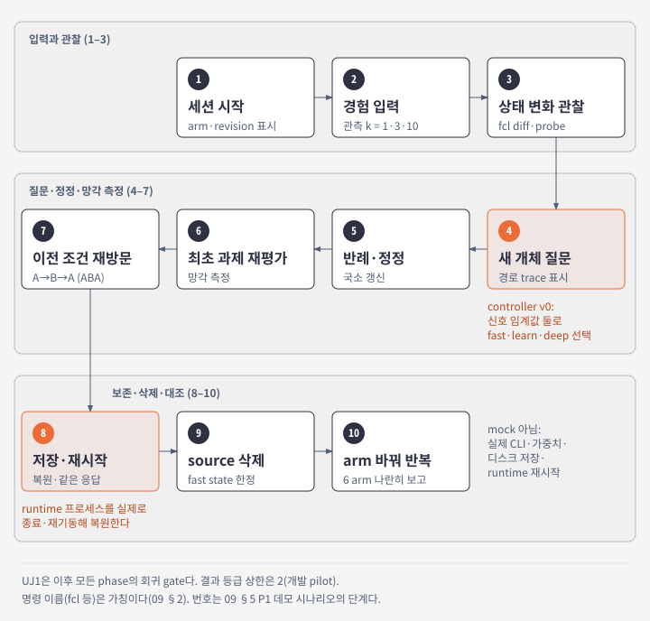

PROPOSAL P1의 작업 단위는 열여섯 개다. 앞쪽은 연구 계약(옛 P0 흡수)과 spike이고, 그 다음 뼈대를 먼저 연결한 뒤 해상도를 올리고 판정으로 닫는다. 호스트 메모리 압박 때문에 무거운 실행(T04·T09·T15)은 한 번에 하나씩 직렬로 돌린다. 아래 요지는 원문을 줄인 것이다(09 §5 P1의 "작업 단위").
| 작업 | 요지 | 완료 판정 |
|---|---|---|
| T01 계약: 용어·시계·source 경계 | 시계 필드와 source/root 규칙(같은 입력 재전송 = 같은 root, generated 해석은 observed로 승격하지 않음, 내부 loop·replay는 새 evidence가 아님)을 타입과 "실패부터 쓰는 테스트 목록"으로 고정한다(07 §1). | 시계 혼동 금지 항목마다 실패하는 테스트가 있고 용어 표가 문서에 있다. |
| T02 계약: 평가 | world·history·질의 단위 split, learner view와 evaluator 전용 oracle 분리, 조건부 판단 질의, 2×2 표면/구조 설계, 보존 probe, 결과 상태·등급 어휘, manifest 서식. query 반복을 독립 표본으로 늘리지 않는다. | 무정보 learner(상수·무작위 응답)가 evaluator에서 chance 수준이고 oracle 누수 audit이 0건이다. |
| T03 계약: budget·대조군 | write 수·optimizer step·forward/backward·token·FLOPs 추정·wall의 단위, arm 정의표, 예산 일치 허용오차를 결과를 보기 전에 정한다. | arm 정의표와 허용오차가 hash로 고정되고 예산이 어긋난 실행을 evaluator가 INVALID로 거부하는 테스트가 있다. |
| T04 spike: base model·자원 | 후보 중 하나(기본 SmolLM2-135M)로 host CPU와 노트북 GPU에서 forward/backward·test-time write의 메모리·step 시간을 소배치로 실측하고, Titan-Llama 고정 pin의 코드를 읽어 라이선스를 확인하며 식에서 재구현하는 경로와 비교한다. | 실측 표와 선택 근거가 기록되고 D-01·D-02가 사용자 결정 요청으로 올라가 있다(결정 전에는 읽기·인용과 재구현 경로로만 진행). |
| T05 spike: 최소 retrofit | 1–2개 layer에 NMM 경로, 1–2개 FFN에 CMS 분기(Bj=0)를 붙여 함수 보존, 새 모듈이 freeze되지 않음, test-time write가 실제 state를 바꿈을 확인한다. | 세 검사가 자동 테스트로 PASS하거나, 실패 원인과 축소 범위(예: NMM 제외·CMS 분기만)가 사용자에게 보고되고 P1 상한 문구에 반영돼 있다. |
| T06 세계 생성기와 renderer (D-03) | 구조 family 1종 × 개체 이름 pool × 표면 template. 학습용과 평가용 paraphrase renderer 분리, 규칙 문장 없이 경험만 렌더링, train/dev/sealed world의 seed 분리(sealed는 T14 봉인 뒤에 만든다). | seed → 같은 hash로 결정론 재생, 관측 0/1/3/10별 식별 가능 질의 비율 보고, 누수 audit 0건. |
| T07 뼈대 E2E (walking skeleton) | fcl CLI와 runtime을 별도 프로세스로 두고 session 프로토콜을 정의한다. 실제 pretrained 가중치로 base·ctx arm의 경험 입력 → 질문 → 응답 → 저장 → runtime 종료 → 새 프로세스 복원을 한 줄기로 잇는다. | mock 없이 실제 가중치로 돈 E2E 스크립트의 증거 원장 기록과 재시작 전후 프로세스 ID 변경이 있다. base·ctx의 dev 세계 ceiling/floor와 copy baseline을 보고한다(붙어 있으면 dev에서만 난이도를 조정하고 통과 전에는 T14 봉인으로 가지 않는다). |
| T08 retrofit runtime과 arm | T05 모듈을 runtime에 통합하고 write engine(Titans식 surprise 정책과 항상-갱신 정책), 규칙형 controller v0와 결정 trace 필드, 시계 기록, budget meter, --arm(full·fixed·flat·always·noctl) 전환을 구현한다. | 같은 CLI·같은 session 프로토콜에서 --arm만 바꿔 다섯 arm이 돌고 응답마다 결정 trace가 남으며 원장에 arm별 write 수·step·FLOPs 추정이 같은 단위로 남고, 각 arm이 T03 정의와 일치함을 검사하는 테스트가 PASS한다. |
| T09 retrofit 학습 (outer loop) | 평가 세계와 분리된 train world로 NMM·CMS 모듈을 학습해 test-time write가 query loss를 줄이게 하고, deep 경로의 r=2에 대한 짧은 적응 학습을 같은 예산 안에 포함해 arm별 checkpoint를 만든다(fixed는 학습하지 않음). 계산 장소·예산은 D-04. | arm별 학습 예산·곡선이 원장에 있고, 학습 뒤 원능력 probe(일반 텍스트 perplexity·비세계 질문)가 base 대비 값으로 기록돼 있다(임계 판정은 T14 봉인 뒤이며 효용 판정이 아니다). |
| T10 상태 계약 구현 | bundle manifest v0(07 §5의 부분집합), 원자적 commit, 복원, 모델 revision mismatch 거부, 최소 상태 회귀(재전송·같은 ID 다른 payload·중단된 update·restart·rollback·삭제·mismatch·동시 write 거부)를 구현한다. | 저장 → runtime 종료 → 복원 뒤 같은 질문의 응답과 log-prob이 허용오차 안에서 같고 위 회귀가 자동 테스트로 PASS한다(Contract 한정). |
| T11 관찰과 인과 개입 | fcl diff(layer·module별 변화량·clock·write 수), probe 질문의 전/후 응답 분포, wrong-schema state swap(다른 세계의 state를 복원 경로로 이식해 같은 질문을 던짐)을 구현한다. | arm 정의표가 "바뀌어야 한다/바뀌면 안 된다"고 한 state 집합의 diff가 그대로 관측된다는 테스트가 PASS한다(관찰 가능성 검사이며 schema 형성의 증거가 아니다). |
| T12 평가 harness와 보고서 | dev world에서 UJ1 전체를 모든 arm으로 자동 실행(fcl eval)하고 지표를 낸다: 새 개체 전이(관측 0/1/3/10), 표면 함정 negative transfer(2×2), 반례 뒤 국소 수정과 최초 과제 재평가, 이전 조건 재방문(ABA), 원능력 보존, both-correct condition pairs. 보고 생성기는 결과 상태와 등급을 필수로 찍고 등급에 맞지 않는 문구를 검사기로 막는다. | 모든 arm이 같은 형식의 보고서를 내고 등급 필드가 "등급 2"로 찍히며, 금지 문구 검사기가 시험 문서에서 작동하고, dev 결과로 모든 arm의 ceiling/floor 판정이 보고서에 있다. |
| T13 source 수정·삭제 (얇게) | 삭제 = source 원장에서 철회한 뒤 committed snapshot에서 남은 source를 같은 순서로 재생해 재구성한다. 수정 = 삭제 + 같은 위치에 다시 삽입. slow 통합이 없으므로 fast state 한정이며 통합 후 삭제는 약속하지 않는다고 보고서에 적는다. | 삭제 뒤 state가 "그 source 없이 처음부터 재생한 state"와 허용오차 안에서 같고, 삭제 전후 응답 변화(또는 변화 없음의 사유)가 기록되며, harness의 UJ1 9단계로 자동 실행된다. |
| T14 사전 명세와 봉인 | dev pilot의 분산·식별 가능 질의 수로 primary 지표·통계 방법·multiplicity·최소 효과·seed 수·candidate 수 상한·예산 허용오차·보호 지표 임계와 controller v0의 두 임계값을 manifest에 쓰고, 구현자와 다른 reviewer의 검토를 받은 뒤 hash로 봉인하고, 그 뒤에 sealed cohort를 만든다. 수치는 여기서 처음 정해진다(D-05). | 봉인 hash 시각이 sealed cohort 생성 기록보다 앞서고, 평가 코드가 manifest hash 불일치 시 실행을 거부한다. 선행 조건은 T07·T12의 ceiling/floor 통과와 fixed가 floor가 아님의 확인이다. |
| T15 sealed readout | 봉인된 manifest대로 모든 arm을 seed × world 단위로 한 번 실행하고 결과 상태(PASS/FAIL/INCONCLUSIVE), 등급 2 문구, 실제 비용(실패·취소 포함)을 기록한다. 같은 sealed cohort를 다른 candidate에 재사용하지 않는다. | 보고서가 manifest의 모든 지표를 상태와 함께 담고, 사후에 임계·subset을 바꾼 흔적이 없음을 원장이 보인다. |
| T16 종료 | UJ1을 full과 대조 6 arm으로 실제 CLI·가중치·write·저장·재시작 경로에서 끝까지 자동 실행하고, 계약 테스트를 일괄 실행하고, 재현 절차 문서(설치·가중치 확보·실행)를 새 디렉터리에서 그대로 따라 UJ1이 돌게 하고, B07 세 질문과 capability 표 재검토를 기록한다. | 위 종료 gate 전 항목이 PASS로 기록되거나, FAIL 항목이 중단·전환 분기에 올라가 있다. |
P2 — 여러 구조와 고정 깊이로 넓히고 첫 확증
| 항목 | 내용 |
|---|---|
| 목표 | 같은 제품·같은 CLI에서 구조 family를 3종으로 넓히고 계산 깊이 축(고정 depth 격자)을 더해 경험 전/후의 quality–compute 곡선을 처음 측정하며, P1의 핵심 대조에 대한 첫 한정 확증(등급 3)을 시도한다. |
| 근거 | USER B02·B11·B17. LITERATURE 원문 검토 §5 DQ1·DQ5(고정 깊이의 품질–계산 곡선이 먼저)·DQ6, 05 §7(Retrofitted Recurrence [A13], ETD [A14], Relaxed Recursive Transformers [A15]), 08 §3 대표 실험. 재료 논문 A13–A15의 확인 깊이는 discussion-import다. |
| 데모 시나리오 | UJ2(CLI): 구조 family 3종 중 둘의 세계를 번갈아 경험하고(조건 A→B→A 포함) 같은 질문을 --depth 1/2/4로 던져 정확도와 계산량을 나란히 본다. 경험 전(S0)·후(SE)의 quality–compute 곡선이 표시된다. fcl eval이 모든 arm × depth를 배치로 돌려 한 보고서를 낸다. UJ1 전체를 그대로 다시 돌려도 통과한다. |
| 넓이 변화 | 구조 family 1 → 3종(앞 family는 회귀용으로 유지, lure 확대), retrofit layer 확대(전환마다 회귀), depth 축 신설(--depth), 배치 평가(fcl eval·compare·session transcript), 참고선 Qwen3-8B + raw history(크기가 달라 대조군이 아니라 참고선). |
| 깊이 변화 | 첫 확증(봉인 → fresh cohort → 독립 evaluator 프로세스), 조작적 증거 2종(subspace 재사용·변화량 감소), 예외·ABA family 확대와 보호 영역 대조(slow 동결 대 fast만 쓰기), savings·family별 negative transfer, 계산량 정밀화(depth별 FLOPs·p50/p95·TTFT·메모리, write 예산 u 격자), self-evolution v1. |
| 작업 묶음 |
|
| 성립하는 보장 | UJ1 회귀 유지. depth 시계 분리(recursion index가 token position·경험 수를 늘리지 않음), autoregressive mask가 미래 token·depth 상태를 노출하지 않음, 가중치 갱신 뒤 stale cache 정합성 검사(07 §3). 계산량 기록이 encoder·core loops·write/backward를 포함한다. 확증 통계는 사전 명세다. 후보가 evaluator·oracle·split을 수정하지 못하도록 권한이 분리된다. |
| 상한 | 등급 3 한정(합성 family 3종·소형 모델 1종·사전 명세 seed). depth 곡선과 조작적 증거는 봉인 확증을 거친 것만 3이고 아니면 2다. controller가 규칙형 v0뿐이므로 "적응 계산"을 약속하지 않는다. 동일 입력 재호출이나 무의미한 loop 증가를 개선으로 세지 않는다. 경험 전/후 곡선의 이동은 H-COMPUTE의 일부(경험 효과)일 뿐이며 통합(Sleep) 이후의 계산 절감은 P4 전까지 주장하지 않는다. Sleep 없음. Qwen3-8B 참고선에는 등급을 매기지 않는다. |
| 종료 gate |
|
| 미루는 것 | 학습된 controller·halting·fit 결합 write gate·accommodation 메커니즘, Sleep, 외부화, 외부 agent 연결, 두 번째 base model, 자연어 도메인. |
P3 — 스스로 고르는 모델 (controller·선택적 쓰기·accommodation)
| 항목 | 내용 |
|---|---|
| 목표 | P1의 규칙형 controller v0를 학습된 controller로 바꿔, 같은 제품에서 모델이 문맥·경험에 따라 스스로 고르게 한다. 문맥 수준(어떤 구조를 적용·전환·조합·수정할지)과 실행 수준(어느 token·block, 어느 depth source, write 횟수·강도, 종료)의 controller, fit·친숙도와 결합한 선택적 write(P1부터 있는 write 정책 접점에 꽂는다), accommodation을 넣는다. |
| 근거 | LITERATURE 원문 검토 §4.2(새로움·일치도 신호가 바꾸는 대상이 논문마다 다른 다섯 기제)·§4.3(구조를 실행 중에 고치는 논문은 없다)·§5 DQ2·DQ3·DQ5(SWAMI23의 선택적 갱신 마스크에서 출발, MICONI25의 학습된 neuromodulator는 더 강한 후보, SPENS24의 "예외만 따로 저장"), 04 §6, 05 §4. USER U04·U09, H2·H3의 familiarity 기반 빠른 처리와 hit 경로 강화(B14). |
| 데모 시나리오 | UJ3(CLI): 같은 세션에서 익숙한 질문은 얕게 답하고, 낯선 binding은 write한 뒤 답하고, 구조가 어긋나면 더 깊게 계산하거나 보류하는 모습이 결정 trace(fast/learn/deep)와 예산으로 보인다. UJ1·UJ2를 그대로 돌려도 통과한다. |
| 넓이 변화 | controller 입력 신호(구조 적합성·prediction residual·observed/generated 구분·불확실성)와 출력(적용·전환·보류·질문), 새 구조(F04)·불확실성(F09)·지연 피드백 일부(F08), lure 확대, CMS 조율 계열 대조(고정 주기·frequency-adaptive·event/readiness). |
| 깊이 변화 | write gate를 무엇·어디·얼마나·언제로 분해해 ablation, halting(적응 깊이), accommodation 메커니즘, 조작적 증거 3종째(표현 제거·교체), controller 비용 포함 total cost. |
| 성립하는 보장 | 결정이 관측 가능한 state에만 근거한다(router가 아직 생성되지 않은 token을 참조하지 않음). controller·router 비용이 계산량에 포함된다. 보호 family가 퇴행하면 자동으로 멈춘다. |
| 상한 | 등급 3. 쉬운 사례만 골라 평균 depth를 줄인 결과를 계산 효율 개선으로 쓰지 않는다(난이도 층화 필수). controller는 구성 요소이며 정답 oracle이 아니다. 위상(phase) 조율(D)은 event/readiness(C)를 기준선으로 확보한 뒤에 D 대 C로 비교하며 P3에서는 C까지만 다룬다(04 §6, 11 §5). 동기 실행에서 단순 stage ID와 같은 효과이면 새 원리라고 부르지 않는다. Sleep 없음. |
| 종료 gate |
|
| 미루는 것 | Sleep·공고화, 외부화, 외부 agent 연결, 두 번째 base model·자연어 도메인, 위상 조율(D) 실험(P3 종료 재검토에서 C를 기준선으로 배치를 결정, D-13). |
P4 — 세션을 넘는 경험 (Sleep·외부화 v0)
| 항목 | 내용 |
|---|---|
| 목표 | 경험이 세션을 넘어 남게 한다. Sleep(fast → slow 공고화)과 외부화 v0(bundle export/import·offload/reload·version lineage), 다세션 이력을 넣고, H-COMPUTE의 핵심 시험인 SE 대 SES(경험 후 대 같은 경험 + Sleep 후) quality–compute 곡선 이동을 처음 본격적으로 측정한다. |
| 근거 | LITERATURE 원문 검토 §5 DQ4(SPENS24의 teacher–student replay가 Sleep의 첫 형태, SWAMI23 Discussion의 반복 rebinding 흡수, HWU20의 novelty×familiarity replay 예산), 05 §11, 07 §5–§7, 08 §3, Sleep [A03](확인 깊이 metadata-checked). USER U07·U10. |
| 데모 시나리오 | UJ4(CLI): 세션 1에서 경험 → fcl sleep → 프로세스 종료 → 세션 2에서 같은 구조의 새 개체를 더 적은 관측·더 얕은 depth로 푼다. bundle을 내보내 다른 디렉터리·새 프로세스에서 불러와도 같은 판단이 나온다. 삭제 요청의 영향은 측정해서 보고한다(보장하지 않음). UJ1–UJ3 회귀. |
| 넓이 변화 | 다세션 이력, bundle export/import, version lineage, 모델 revision 변경 시 migration 거부 규칙, replay 후보 선별. |
| 깊이 변화 | Sleep v0(fast→slow teacher–student replay, replay 예산 대조), deep-to-shallow distillation, 보존 평가(savings·세션 간 ABA·zero-shot 재평가), 공고화 시점을 event/readiness 대 고정 주기로 대조, Sleep·offload·warmup 비용을 amortized total에 포함. |
| 성립하는 보장 | Sleep 전후 state 버전 계보와 재현 가능한 replay recipe, 같은 데이터·총 계산량의 replay-only·teacher distillation과의 비교, offload/reload 뒤 판단·후속 학습의 일관성 측정(F12). |
| 상한 | 등급 3. 저장·재구성 성공을 판단 효용으로 해석하지 않는다. tensor shape/hash만 확인한 외부화는 통과로 보지 않는다. 통합된 weights에서 개별 source 삭제가 완전하다고 약속하지 않는다. Sleep을 코드·아키텍처 자체를 고치는 development evolution과 동일시하지 않는다. 자연어·다모델 일반화 주장 없음. |
| 종료 gate |
|
| 미루는 것 | 대규모 retrieval·multi-user, 외부 agent 연결, 두 번째 base model·자연어 도메인, 운영 자동화. |
P5 — 확대와 실제 consumer 연결
| 항목 | 내용 |
|---|---|
| 목표 | 검증된 범위를 넓히고 실제 consumer에 연결한다. 더 넓은 retrofit, 두 번째 base model, 자연어 혼합 도메인에서 확증을 반복(등급 4)하고, 실제 codex·prime agent가 같은 session 접점으로 쓰게 하며, retrieval·migration·multi-user 격리·운영 지표를 갖춘 제한 운용(관측한 범위 안에서 등급 5)에 이른다. 진입 조건은 중단·전환 조건의 B13 조건이다. P4 종료 재검토에서 둘로 나눌지(범위 확대 / 연결·운용) 결정한다. |
| 근거 | USER B12·B13·B14·U10. LITERATURE 05 §10(latent read를 hidden computation에 연결하는 경로, source pointer·terminal·all-state·learned interface를 같은 정보·예산으로 비교), 07 §7(multi-user), 10 §6. ARCHIVE Melete의 제품 P4(제한된 native continual 제품). |
| 데모 시나리오 | UJ5: 실제 codex 또는 prime agent 세션이 FCL session 접점(tool 또는 endpoint, D-11)으로 경험을 주고, 질문하고, 정정하고, 재시작 뒤 복원된 상태로 이어서 일한다. 같은 CLI에서 UJ1–UJ4도 그대로 돈다. 외부 frozen LLM + RAG 대조군과 나란히 본다. |
| 넓이 변화 | layer 범위, 모델 크기·계열(D-12), 자연어 혼합 도메인, 외부 consumer, 다수 schema artifact retrieval, multi-user. |
| 깊이 변화 | 확증 반복(복제), 운영 지표(latency p50/p95·residency·offload warmup), 삭제 의존성 검증 범위, self-evolution의 운영 승격 gate, 보호 family 자동 중단 유지. |
| 성립하는 보장 | 관측한 호출 coverage와 검증한 삭제 의존성 안에서만. 외부 consumer 경로에서도 session·저장·검증 경로는 P1과 같다. |
| 상한 | 등급 4(효용), 5(운용, 관측한 coverage 안). 부분 layer 결과를 all-layer 성공으로, 관측하지 않은 agent·model-call 경로를 포괄한다고 확대하지 않는다. 개인 DB·native 권한을 자동 활성화하지 않는다(07 §7). |
| 종료 gate |
|
| 미루는 것 | pretraining·alignment의 분화 가설(11 §1), 원논문 규모 재현, 상용 규모의 다수 사용자 운영, vec2text, oscillator·위상 조율. |
11.6 회귀 gate 누적표
PROPOSAL 앞 phase의 사용자 시나리오는 뒤 phase의 종료 gate에서 가장 최신 코드로 다시 돌려 통과해야 한다. 앞 phase의 PASS 기록을 재사용해 회귀를 대신하지 않는다. 회귀 실패는 새 기능 개발보다 먼저 고친다. 앞 시나리오의 등급은 새 phase의 결과로 저절로 오르지 않으며 다시 측정해야 한다(09 §6).
| phase 종료 | 회귀로 다시 통과할 앞 시나리오 | 새 시나리오 | 새로 추가되는 자동 테스트(Contract) | 효용 판정 기록 |
|---|---|---|---|---|
| P1 | 없음(첫 phase) | UJ1 전체 여정 | 시계 분리·재전송 idempotency·원자적 commit·재시작 동등·revision mismatch 거부·삭제 동등·누수 audit·budget 일치·함수 보존·manifest 봉인·controller v0 결정의 관측 state 근거 | 등급 2 readout 상태 |
| P2 | UJ1 | UJ2 여러 구조·고정 깊이 | depth 시계·causal mask·stale cache·layer 확대 회귀(원능력)·후보와 evaluator의 권한 분리 | 등급 3 readout 상태 |
| P3 | UJ1, UJ2 | UJ3 스스로 고르는 모델 | router 인과성·controller 결정이 관측 state에 근거함·bundle에 제어 상태 포함·보호 family 자동 중단 | 등급 3 readout 상태(controller 대 고정 depth 등) |
| P4 | UJ1, UJ2, UJ3 | UJ4 세션을 넘는 경험 | bundle manifest·hash·migration 거부·세션 간 state 격리·replay 재현 | 등급 3 readout 상태(SE 대 SES) |
| P5 | UJ1, UJ2, UJ3, UJ4 | UJ5 실제 consumer 연결 | 모델·tokenizer 계약·multi-user 격리·삭제 의존성·session 프로토콜 호환 | 등급 4 readout 상태 + 운용 coverage |
11.7 중단·전환 조건
PROPOSAL (옛 §4 유지·갱신) 현재 recipe의 비용과 품질이 baseline을 넘지 못하면 원인을 분리한다. 방법을 확장하기 전에 학습 목표, 데이터 식별성, representation capacity, reader/interface, 계산 예산 중 어떤 병목인지 구분한다. 같은 test를 반복해서 보고 새 candidate를 최적화하지 않는다. 같은 조건에서 단순한 pooled·linear·text 방법이 낫다면 그 후보를 유지한다. 제품에 효용이 있어도 neural schema의 독자 기여가 미입증이면 두 상태를 분리 보고한다. 불리한 결과를 이론 전체의 반증으로 확대하지 않되 기준을 낮춰 성공으로 바꾸지도 않는다(09 §7).
진입 규칙(Melete 교훈의 집행). 다음 phase 진입 = 현재 phase 종료 gate 통과(Contract·Product) + 효용 상태. 효용 상태가 PASS면 다음 phase로 간다. FAIL이나 INCONCLUSIVE면 아래 분기표를 따르고 사용자에게 보고해 결정을 받는다. 구현 PASS를 효용 PASS로 읽고 진행하지 않는다.
| 상황 | 먼저 할 일 | 허용되는 다음 행동 | 금지 |
|---|---|---|---|
| Contract FAIL | 원인을 고쳐 같은 gate를 다시 검증 | 같은 phase 안에서 수정 | Efficacy 실행으로 진행 |
| Efficacy FAIL(사전 명세 미달) | 병목 분리: 학습 목표·데이터 식별성·representation capacity·reader/interface·계산 예산 중 무엇인가. AI의 원인 설명은 검증 전까지 가설이다 | 가설 1개를 사전 등록한 새 candidate(새 ID·fresh cohort). 사전 등록한 candidate 상한 안에서만 | 같은 recipe 확대, 같은 test를 보고 튜닝, 임계·margin·subset의 사후 변경 |
| INCONCLUSIVE | 표본·식별성·검정력 중 무엇이 부족한지 구분 | 새 protocol·새 manifest·새 fresh cohort | PASS로 읽기, 같은 cohort 재사용 |
| BLOCKED(권한·필수 인프라) | 멈추고 구체적으로 보고(B07) | 사용자 결정 뒤 재개 | 다른 모델·장비·권한으로 바꿔치기 |
단순 baseline(flat·fixed·always)이 같은 예산에서, 또는 ctx가 사전 명세한 token·계산 예산 기준에서 같거나 낫다 | 그 후보를 유지하고 두 상태를 분리 보고: 제품 효용 / neural schema의 독자 기여 | 그 범위에서 복잡한 구조의 필요성을 주장하지 않고 다음 phase의 범위를 줄이거나 설계를 사용자와 재검토 | 복잡한 구조의 필요성 주장 |
| 보호 지표 퇴행(최초 과제 재평가·ABA·원능력) | 자동 중단 | 원인 분리 뒤 재개 | 평균 향상으로 상쇄 |
| spike 실패 | 실패 원인과 축소 범위를 보고 | 해당 능력은 다음 phase로 이월하고 현 phase는 나머지로 종료(제품은 계속 동작하고 표에는 "없음"을 유지) | 실패한 능력이 있는 것처럼 문구 유지 |
프로그램 수준 중단(10 §6). budget 소진, 반복된 동일 failure, 평가 결함, 비재현, 권한 위반, 보호 family 퇴행, candidate 상한 소진이면 멈추고 사용자에게 보고해 결정을 받는다. 실제로 소모한 compute는 실패·취소·재시도를 포함해 합계에 넣는다(진화 정책). ARCHIVE Melete에서는 N1의 독립 기여가 입증되지 않은 채 N2·N3 구성요소 연구가 진행됐고 J1 FAIL 뒤에야 같은 recipe 확대를 중단했다. 이 표는 그 두 시점을 앞으로 당겨 gate로 만든 것이다.
11.8 지속적으로 유지할 자산
PROPOSAL (옛 §5 유지·확장) 옛 목록을 유지한다: 실패 사례와 negative controls, data generators, source·recipe lineage, state compatibility tests, regression suite, 실제 비용 원장, reference catalog, specification·decision log. 테스트 수·문서량·커밋량을 연구 진전의 대표 지표로 쓰지 않는다(09 §8). 새로 추가한 것은 다음과 같다.
- arm 정의표와 arm manifest(설정 hash)
- 봉인 manifest와 evaluator 버전, sealed cohort 사용 기록(어떤 candidate에 썼는가)
- phase별 데모 시나리오 스크립트(UJ1…UJ5)와 실행 기록, 회귀 결과
- 세계 생성기와 split(train·dev·sealed), renderer 두 종류
- 결과 보고 생성기와 문구 검사기
- 이 문서의 capability × phase 표와 변경 기록
11.9 기존 계획 대응 요지
ARCHIVE PROPOSAL 이 표는 옛 계획의 내용·새 위치·바뀐 점·이유를 남겨 숨기지 않기 위한 것이다(09 §9). "새 위치"는 개념·설계·자산이 이어지는 자리이며 완료의 승계가 아니다. 옛 PASS/FAIL·실행 산출물을 새 phase의 완료로 이식하지 않는다. 쓸 만한 옛 산출물은 새 phase의 작업으로 다시 실행해 새 run ID로 기록하고, 재실행 전에는 NOT RUN으로 본다. 번호가 같아도 FCL P1–P5와 Melete P1–P4는 다른 계획이다. Melete는 private 저장소이므로 고정 커밋 1d95136c3a64580ec25bc588c96c191eecb85b41의 링크로 가리키며 접근 권한이 없으면 읽지 못할 수 있다. 아래는 원문 표의 여섯 열 중 옛 계획·옛 단계·새 위치·바뀐 점 네 열만 옮긴 것이다(내용과 이유 열은 뺐다).
| 옛 계획 | 옛 단계 | 새 위치(phase·작업) | 바뀐 점 |
|---|---|---|---|
| FCL P0–P6 | P0 연구 계약 | P1-T01(용어·시계·source), T02(평가 split), T03(baseline·budget), T06(세계 생성기) | phase가 아니라 P1 앞쪽 작업 |
| FCL P0–P6 | P1 얇은 통합 모델 | P1 전체(T04–T16) | 모델·저장만이 아니라 CLI 전체 여정 + 대조군 + 망각·표면/구조 평가 + 사전 명세 readout |
| FCL P0–P6 | P2 recursive computation | P1 deep 경로(r=2 최소형), P2 묶음 A(spike)·D(고정 depth 격자) | 단독 계층 phase가 아니라 같은 여정에 depth 축을 더함. 실패하면 P3로 이월하고 제품은 계속 동작 |
| FCL P0–P6 | P3 schema/controller | 규칙형 controller v0는 P1(T08), 학습된 controller·token routing·halting·선택적 update는 P3 | controller를 P1부터 가장 얇게 두고 P3에서 학습된 형태로 깊게 한다. gate·accommodation은 P3. 쉬운 사례만 고른 평균 depth 감소 금지는 난이도 층화 요구로 유지 |
| FCL P0–P6 | P4 experience+Sleep | 경험·정정·ABA 기본형은 P1(UJ1), 예외·ABA 확대는 P2, accommodation은 P3, replay·통합·deep-to-shallow는 P4 | 한 묶음을 해상도 순서로 분산 |
| FCL P0–P6 | P5 전체 retrofit 확대 | §4 retrofit 행: P1 일부 layer → P2 확대 → P5 범위·모델 확대 | 마지막에 한꺼번에가 아니라 매 phase 소폭 확대하고 전환마다 회귀 |
| FCL P0–P6 | P6 schema 외부화 | bundle v0와 삭제는 P1-T10·T13, 외부화 v0는 P4, retrieval·migration·multi-user는 P5 | 상태 경계를 P1부터 실제로 둠 |
| FCL P0–P6 | 옛 §3 초기 실행 순서 8단계 | ①→T04·T06, ②→T05, ③→T01·T10, ④→P2, ⑤→P1(T06·T12), ⑥→P1(규칙형 controller v0)·P3(학습된 controller·선택적 쓰기), ⑦→P2(S0/SE)·P4(SES), ⑧→P5 | ⑤를 ④ 앞(P1)으로 당김 |
| 11-03 P0–P5 | P0–P5(단계별 내용 미확인) | 매핑하지 않음 | 새 phase로 이식하지 않음 |
| 11-03 P0–P5 | P0 실험 산출물(Phase-0) | 완료 승계 없음. 설계 참고만: 대조군 철학(isotropic·pooled·mixture·rotated·oracle)과 negative control → P1-T02·T03·T06 | 옛 PASS를 어느 phase 완료로도 세지 않음 |
| Melete N0–N5 | N0 | P1-T02·T06·T12 | D1–D8의 설계 원칙(split 단위 = history·mechanism·domain, evaluator 전용 oracle, 학습 전 snapshot 평가)을 F01–F12 부분집합과 2×2로 재구성. 효용 판정 없음 원칙 유지 |
| Melete N0–N5 | N1 | P1 full arm의 쓰기·읽기와 대조군(고정·무구조), P1(규칙형 controller v0의 familiarity 기반 fast 경로), P3(학습된 familiarity 처리·hit 경로 강화는 gate 후보) | 외부 graph가 아니라 모델 내부 state. 같은 예산 대조를 처음부터 둠 |
| Melete N0–N5 | N2 | P5 외부 consumer 접점의 선택지(source pointer·terminal·all-state·learned interface를 같은 정보·예산으로 비교) | H4의 text interface를 필수 경로로 두지 않는다(정리자 추론, 사용자 확인 대기 — OPEN) |
| Melete N0–N5 | N3 | P1(반례·정정 → 최초 과제 재평가 → 재개·복원, 모델 내부 write), P3(compatibility·surprise 기반 controller. generated는 학습 신호이되 독립 근거가 아님) | 외부 frozen LLM 폐루프가 아니라 같은 모델 안의 write·재평가 |
| Melete N0–N5 | N4 | P1(대조·인과 개입을 작게 시작), P2(첫 확증), P3(lesion·swap), P5(도메인·모델 확대 반복) | 뒤쪽 단계가 아니라 P1부터 작게 시작하고 P2에서 확증 |
| Melete N0–N5 | N5 | P5 외부 consumer 연결 | 연결 대상이 Melete memory가 아니라 FCL 모델의 session 접점. 진입 조건을 추가 |
| Melete J0–J5 | J0 측정 계약 | P1-T02·T06, 봉인은 P1-T14 | 연구 gate가 아니라 P1 앞쪽 작업 |
| Melete J0–J5 | J1 조건부 neural memory | P1 대조군(fixed·flat·always)과 사전 명세 readout(T14·T15), §7의 같은 recipe 확대 금지 | 연구 gate를 phase 안의 sealed readout으로 편입하고 진입 gate로 집행. J1의 수치(5pp·표본 계획·보정)는 이식하지 않고 FCL 자체 pilot 분산으로 봉인 |
| Melete J0–J5 | J2 누적 학습 안정성 | P1-T01(계보 규칙), P2(F07 최소: 동일 root 재전송·틀린 generated 해석), P3(자기증폭·hit 강화의 포화·감쇠 진단) | 계보 규칙은 P1부터, 자기증폭 진단은 gate가 생기는 P3 |
| Melete J0–J5 | J3 trajectory readout | P5 외부 consumer 접점의 선택지(N2와 같음) | 필수 경로로 두지 않음(OPEN) |
| Melete J0–J5 | J4 frozen LLM 효용 | P1 ctx arm(같은 소형 모델에 raw history), P2 참고선(Qwen3-8B+raw history), P5 외부 frozen LLM+RAG 대조 | 대조군을 phase 끝이 아니라 P1부터 둠 |
| Melete J0–J5 | J5 실제 continual 운영 | P5. 삭제는 P1-T13(fast 한정) → P4(측정만) → P5(검증한 범위) | 삭제를 P1부터 얇게 시작 |
| Melete P1–P4 | P1 실험용 MVP | FCL P1 | 외부 frozen LLM과 tool 작업이 아니라 retrofit 모델 자체가 응답하는 질의 여정. 같은 규칙(실제 의존성 E2E, mock 금지)은 유지 |
| Melete P1–P4 | P2 반복 경험에 적응하는 같은 제품 | FCL P2(예외·ABA 확대·F07 최소) + P3(accommodation) | 경험 종류를 넓히는 일과 정정 메커니즘을 나눔 |
| Melete P1–P4 | P3 자연어와 새 상황으로 확장 | FCL P5(자연어 혼합 도메인, 등급 4) | 합성 family 3종 확증이 먼저 |
| Melete P1–P4 | P4 제한된 native continual 제품 | FCL P5(외부 consumer). 삭제는 P1·P4·P5에서 점진 | 같은 번호라도 FCL P1–P4와 다른 계획이다. 대응은 이 표가 기준 |
11.10 계산 자원과 P1에 대한 판단
PROPOSAL 비용이 드는 선택(클라우드 GPU, 유료 API, 큰 모델 다운로드, 장시간 GPU 점유)은 결정 대기로 두고 사용자 결정 전에는 실행하지 않는다. 시간·성능 추정은 쓰지 않았고 실측은 P1-T04에서 한다(09 §10). 확인된 사실 중 Melete 기록에서 온 것은 ARCHIVE이며 이번 초안에서 재확인하지 않았다.
| 자원 | 확인된 사실 | P1에 대한 판단 |
|---|---|---|
| host | CPU 16코어, RAM 27GB. 메모리 압박이 잦다(이 초안 작성 중 관측: swap 약 10GB 사용) | 무거운 실행은 직렬로 한다. runtime을 CLI와 별도 프로세스로 둬서 runtime만 재기동한다. 135M급 모델의 CPU 실행 이력은 있으나 CPU 학습 시간은 미측정(T04에서 실측) |
| 노트북 GPU | RTX 5070 Ti 12GB, SSH 접근. ARCHIVE: Melete 2026-10-11 기록에서 12227MiB·Torch 2.9.1+cu128·sm_120을 확인했고 이번 초안에서는 재접속·재확인하지 않았다(2026-10-11-learning-roadmap-feedback.md) | retrofit 학습(outer loop)의 기본 후보. 장시간 점유는 결정 대기(D-04) |
| 로컬 llama.cpp의 Qwen3-8B (GGUF) | 추론 전용 양자화 형식 | retrofit 학습 대상으로 부적합하다. GGUF는 autograd 학습과 layer 개조에 쓰기 어렵고, 원본 8B bf16 가중치는 약 16GB라 12GB VRAM에 학습으로 맞지 않는다. 용도는 참고선(ctx + raw history, P2 이후)과 세계 난이도 검사다 |
| 로컬 llama.cpp의 Qwen3-Embedding-0.6B (GGUF) | 생성 모델이 아닌 embedding 모델 | retrofit 대상이 아니다. 용도는 2×2 설계의 표면 유사도(표면 거리)를 재는 보조 도구다 |
| SmolLM2-135M(-Instruct) | 134,515,008 parameters. ARCHIVE: Melete E5에서 host CPU로 실행(2026-10-07-e5-self-feedback.md). Llama 계열 구조로 알려져 있으나 모델 카드·config 확인 필요 | P1 골격 후보 1순위(D-01). 가중치 확보는 사용자 승인 뒤. 세계가 floor에 걸리면 360M 등 상위 크기를 검토한다 |
| 외부 공식 코드 | Titan-Llama pin sarahpannn/titans-pytorch@c60b4efaa3a3c6df4deebd57cbccf75947b87cad. 라이선스 기록이 이 저장소에 없다(catalog.tsv A04). review §4.5의 원칙은 라이선스 없는 코드를 읽고 인용만 하고 논문 식에서 재구현하는 것이다 | D-02. 결정 전에는 읽기·인용과 재구현 경로로만 진행한다 |
11.11 열린 결정 D-01–D-14
OPEN 아래 D 번호는 모두 사용자가 정할 일이다. 비용이 드는 결정은 결정 전에 실행하지 않는다. 비용이 드는 선택은 D-01(크기 상향)·D-04·D-10·D-12이고, D-13은 계산 시간이 들고, D-14 반영으로 P1 공수가 늘었다(controller v0·r=2 적응 학습·noctl arm).
| ID | 결정 | 선택지 | 추천 | 비용 발생 | 결정자 |
|---|---|---|---|---|---|
| D-01 | P1 base model | (a) SmolLM2-135M (b) SmolLM2-360M (c) Qwen3-0.6B (d) 1B급 | (a)로 골격·개발. T07·T12의 floor 검사에서 막히면 (b) | 가중치 다운로드(작음), 크기가 커지면 학습 시간 증가 | 사용자(크기 상향·다운로드 승인) |
| D-02 | Titan-Llama 코드 사용 방식 | (a) 라이선스 확인·허가 뒤 코드 사용 (b) 논문 식에서 재구현, 코드는 읽기·인용만 (c) 비공식 구현(lucidrains/titans-pytorch) 참고 | (b). 라이선스가 명시적으로 허용하면 (a) 재검토 | 재구현 공수(금전 비용 없음) | 사용자 |
| D-03 | P1 구조 family | (a) 역할–결과 규칙 세계 (b) 순서 추론 (c) 쌍 연합·cue→goal (d) 자연어 소규모 관계 그래프 | (a) 단독. (b)는 P2 family 후보 | 없음 | 사용자(방향), 설계 담당(세부) |
| D-04 | retrofit 학습의 계산 장소·시간 상한 | (a) host CPU만 (b) 노트북 GPU (c) 클라우드 GPU | T04 실측 뒤 (b)의 시간 상한을 먼저 승인. (c)는 P5 전까지 보류 | (b) GPU 장시간 점유, (c) 금전 | 사용자 |
| D-05 | readout 통계 계획 | seed·world 수·candidate 수 상한: pilot 분산 기반 최소 n(구간 폭 계획) 또는 고정 소수 | 분산 기반, 상한만 먼저 승인(Melete J1은 candidate 3개 상한을 썼다, ARCHIVE) | 계산 시간 | 사용자(상한), P1-T14(수치) |
| D-06 | P1에 source 삭제 포함 | (a) fast 한정 얇게 포함 (b) P2로 이월 | (a). 저장·원장 뼈대를 P1에서 검증한다 | 작음(재생 공수) | 사용자 |
| D-07 | P1에서 sealed readout 실행 | (a) P1 종료 gate에 포함 (b) dev pilot까지만 하고 확증은 P2 | (a). 효용 gate를 집행하려면 필요하다 | seed × arm 실행 시간 | 사용자 |
| D-08 | 참고선 Qwen3-8B+raw history 도입 시점 | P1 / P2 / 미도입 | P2 | 로컬 추론 시간 | 설계 담당 제안, 사용자 확인 |
| D-09 | 세계 렌더링 언어 | 영어(SmolLM2) / 한국어(Qwen3 계열) | P1은 영어 합성 세계, 한국어·자연어는 P5 | 없음 | 사용자 |
| D-10 | self-evolution 자동화 범위·예산 | 수동 유지 / P3부터 승인된 예산·search space 안에서 자동 | P1–P2는 수동·v1, P3 자동은 별도 승인(10-evolution-policy.md §6) | 자동 학습·GPU | 사용자 |
| D-11 | 외부 agent 연결 대상·방식·시점 | codex / prime agent, tool(MCP) 대 endpoint | P4 종료 재검토에서 결정. 진입 조건은 §7 | 연결 공수 | 사용자 |
| D-12 | 두 번째 base model·크기 | 다른 크기 / 다른 계열 | P4 종료 재검토에서 결정 | 다운로드·학습(클라우드 가능성) | 사용자 |
| D-13 | 위상(phase) 조율(D) 실험의 배치 | P3 말미 / P4 / 미도입 | P3 종료 재검토에서 C(event/readiness)를 기준선으로 삼아 결정 | 계산 시간 | 사용자 |
| D-14 | schema 판단 구조(controller)의 최소형을 P1에 넣을지 | (a) P3에 두고 P1은 write 정책 접점만 (b) P1에 규칙형 controller v0(경로 선택만) (c) P1에 학습된 문맥 head | (b)로 반영(2026-11-12 마스터 설계 판단, 사용자 확인 대기). 근거 전문은 아래 상자 | P1 공수 증가(controller v0·r=2 적응 학습·noctl arm) | 사용자 확인 |
11.12 로드맵 재검토 규칙
PROPOSAL (B07·B17) 계획 상세도는 점진적이다. 로드맵은 P1만 작업 단위까지 쓰고 나머지는 목표·gate까지만 쓴다. 상세 계획은 해당 phase를 시작할 때 쓴다(09 §11).
- phase 시작. 직전 phase의 종료 재검토를 읽고, 그 phase의 상세 계획(작업 단위를 파일·함수·테스트·명령 수준으로)을 별도 계획으로 써서 사용자 검토를 받는다. P1은 로드맵의 작업 단위를 같은 방식으로 내려 쓴다. 해당 phase 열을 capability 표에서 "계획"에서 "확정 계획"으로 갱신하고 먼 phase는 목표·gate만 유지한다.
- phase 중. 작업 단위마다 완료 판정 한 줄로 self-check한다. spike 결과가 계획을 바꾸면 즉시 capability 표와 phase별 계획을 고치고 변경 기록에 남긴다. 호스트 자원이나 권한 문제로 막히면 우회하지 않고 멈춰 보고한다.
- phase 종료: self-feedback 세 질문(B07). 아래 표.
- 로드맵 재검토(phase 종료마다). (a) capability 표에서 도달한 셀과 계획한 셀을 대조한다. (b) 앞 phase 시나리오의 회귀 결과를 확인한다. (c) 주장별 등급이 상한 안에 있는지 확인한다. (d) "미루는 것" 목록과 열린 결정을 갱신한다. (e) 먼 phase를 쪼개거나 합칠지 결정한다(특히 P5). (f) 변경 기록에 남긴다.
- 재검토가 막지 못하는 것. 이 절차는 사용자 승인을 대신하지 않는다. 범위·예산·권한이 바뀌는 변경은 사용자 결정을 거친다.
| 질문 | 무엇과 대조하나 | 판정 |
|---|---|---|
| 의도한 방향인가 | §1.1의 사용자 제약, 헌장 U01–U12, 그 phase의 목표·상한 | 어긋나면 멈추고 보고 |
| 의도대로 구현됐는가 | Contract gate·자동 테스트·E2E 기록 | FAIL이면 같은 phase 안에서 개선(§7) |
| 단계 기준을 충족하는가 | 종료 gate 항목별 PASS/FAIL. Efficacy는 결과 상태와 등급을 따로 | PASS면 다음 phase 시작, FAIL이면 §7 분기. 권한·필수 인프라 문제로 막히면 멈추고 보고(BLOCKED) |
| 날짜 | 변경 | 이유 | 영향 |
|---|---|---|---|
| 2026-11-12 | 점진적 해상도 규칙에 맞춰 로드맵 전면 재구성(초안, PROPOSAL) | 옛 P0–P6가 B17과 어긋남(문서 맨 앞 상자) | 전 절. 옛 §2·§4·§5·§6은 갱신해 유지 |
| 2026-11-12 | 검수 반영: 규칙형 controller v0와 deep 경로(r=2)를 P1에 넣고 noctl 대조를 추가(D-14), H4 text interface 서술을 OPEN으로 낮춤, B 번호 기간 정정 | U-T07 원문과 점진적 해상도(핵심 여정 전체를 P1에서), 설계 감사의 H4 판정(정리자 추론) | §1.1·§1.2·§1.4·§2·§4·§5 P1–P3·§6·§9·§10 |
12 진화 정책: 후보를 만들고 평가하고 승격하는 규칙
목적: 모델과 개발 절차를 스스로 고쳐 나가되, 평가를 우회하거나 한꺼번에 너무 많은 것을 바꾸지 못하게 하는 운영 규칙을 먼저 정하는 것이다. 기능: 세 루프의 권한 구분, 후보 생성 계약, negative feedback 기록, evaluator 독립성, budget 한도, 최소 진화 루프. 입력과 출력: 후보 계약서가 들어가고, 평가가 끝난 뒤 결과·불확실성·퇴행·실제 비용과 승격 또는 보류의 결정이 계약서에 기록된다. 형식: 권한 사다리 표와 후보 계약 필드 목록이다. 근거 문서는 10-evolution-policy.md다.
세는 규칙: 24는 10 §3 코드 블록의 필드 이름 수, 10은 10 §7이 화살표로 나열한 단계 수를 직접 센 값이다. 표 안의 §n은 10의 절 번호다.
12.1 세 루프와 권한
PROPOSAL 모델이 바뀌는 방식은 세 가지로 나뉘고, 각각 바꾸는 대상과 성공의 의미가 다르다(10 §1). 개발 절차 자체의 진화는 더 바깥쪽 루프다. 초기에는 작고 고정된 실험 관리 체계를 쓰고 그것의 추가 가치를 먼저 검증한다. Sleep 논문의 self-modification을 repository의 자율 코드 변경과 동일시하지 않는다.
| 루프 | 변경 대상 | 성공의 의미 |
|---|---|---|
| Experience learning | fast memory, binding, 잠정 schema state | 이후 관측/판단의 적절한 적응 |
| Sleep/consolidation | slow weights, schema 구조, replay policy | 유지와 새 사례 전이, 계산 효율 |
| Development evolution | 코드·구조·목적함수 후보·controller recipe | 독립 평가에서 더 나은 quality–cost |
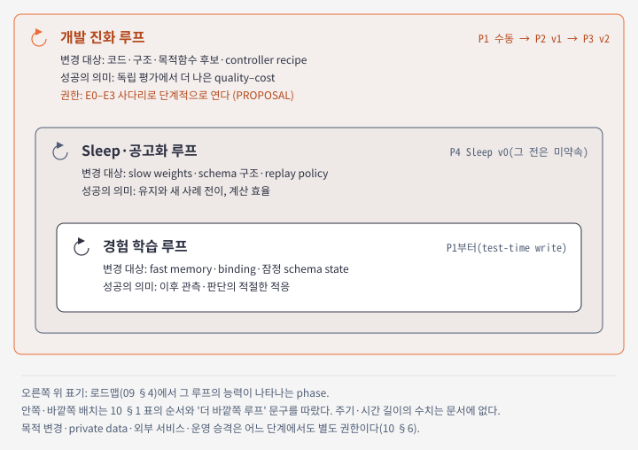

USER (U-T02, U-T06) 가장 간단하게 시작하고 그 방식이 점점 고도화·복잡화·개선되는 방향의 evolutionary 구축, 그리고 phase별 MVP와 self-evolving 작업방식을 유지한다. PROPOSAL 개발 진화 루프의 권한을 아래 사다리로 올린다. 한 단계의 종료 gate가 통과된 뒤에만 다음 단계 권한을 연다. 앞 단계의 시나리오와 실패 기록은 다음 단계의 회귀 gate로 남는다.
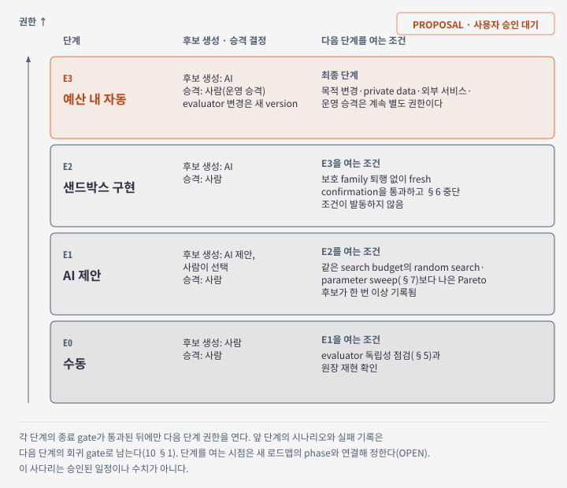

| 단계 | 권한 | 후보 생성 | 승격 결정 | 다음 단계를 여는 조건 |
|---|---|---|---|---|
| E0 수동 | 실험 원장·비용 로그·고정 evaluator만 자동화한다 | 사람 | 사람 | evaluator 독립성 점검(§5)과 원장 재현 확인 |
| E1 AI 제안 | AI가 §3 계약 형식으로 후보를 제안만 한다 | AI 제안, 사람이 선택 | 사람 | 같은 search budget의 random search·parameter sweep(§7)보다 나은 Pareto 후보가 한 번 이상 기록됨 |
| E2 샌드박스 구현 | AI가 허용 파일·변수 범위 안에서 구현하고 dev 평가까지 실행한다 | AI | 사람 | 보호 family 퇴행 없이 fresh confirmation을 통과하고 §6 중단 조건이 발동하지 않음 |
| E3 예산 내 자동 | 승인된 범위·예산 안에서 후보 생성·격리 학습·dev 평가·기록을 자동 수행한다(§6) | AI | 사람(운영 승격), evaluator 변경은 새 version으로 분리(§5) | 이 단계가 최종이다. 목적 변경·private data·외부 서비스·운영 승격은 계속 별도 권한이다 |
OPEN 각 단계를 어느 시점에 여는지는 새 로드맵의 phase와 연결해 정한다. 이 사다리는 승인된 일정이나 수치가 아니다. 로드맵에서 self-evolution 행은 P1 수동, P2 v1, P3 v2(승인된 예산·search space 안의 자동화, D-10)로 올라가고 P4에 Sleep recipe가 search space에 들어간다(승인 시). 자세한 것은 로드맵의 capability 표에 있다.
12.2 목표 계약과 search space
PROPOSAL 최상위 목적은 제한된 경험과 계산으로 조건부 구조를 형성·활용·수정하고 기존 유효 지식을 보존하는 것이다. 특정 graph·all-hidden-state·decoder를 목적에 섞지 않는다. 특정 메커니즘의 과학적 가치를 연구하는 제한 탐색은 별도의 가설과 대조군을 둔다(10 §2).
objectives, 수치 verification·benchmark, negative feedback, operation policy라는 사용자 요구에 search space를 명시적으로 더한다. 무엇을 바꿀 수 있는지가 없으면 자동화는 평가를 우회하거나 너무 많은 변수를 한꺼번에 바꾸기 쉽다.
USER (B14, 2026-10-12) 핵심 가설은 틀렸다고 확인되기 전까지 반드시 유지하는 basis다. PROPOSAL 현재 FCL에서 같은 지위의 basis는 사용자가 명시한 통합 System ONE 구조(U-T07), H-SAMPLE, H-COMPUTE다. 이들은 반증이 확인되기 전까지 유지한다. 적합한 구현·대조군·학습 예산·데이터를 갖춘 실험 전에는 편의상 다른 메커니즘으로 대체하거나 정의를 바꿔 통과시키지 않는다. 반증을 주장하려면 다음 세 가지를 기록해 사용자 검토에 올린다.
- 어떤 구성과 조건의 어떤 관측이 가설을 위반했는가.
- 대조군·예산·표본은 무엇이었는가.
- 가설의 어느 범위를 기각하는가.
한 구성의 FAIL을 이론 전체의 반증으로 확대하지 않는다. ARCHIVE 같은 절차가 Melete의 H1–H5에 적용됐다(neural-basis.md). 이전 H1–H5 중 통합 모델로 대체됐다고 사용자 진술이 확인된 부분은 역할 분할(U-T07)뿐이고, 나머지(예: H4의 text interface)는 사용자 확인 전까지 basis 후보로 유지한다(12 §1).
12.3 후보 생성 계약
PROPOSAL 후보는 아래 계약서 형식으로만 제안한다(10 §3). 필드는 24개이고, 마지막 묶음(결과)은 평가가 끝난 뒤에야 채울 수 있는 칸이다(문서는 필드 이름만 적고 채우는 주체는 적지 않았다).
| 묶음 | 필드 |
|---|---|
| 정체 | candidate_id / parent_candidate_ids |
| 가설 | hypothesis / evidence / expected_mechanism |
| 범위 | allowed_files_and_modules / frozen_constraints |
| 변경 | changed_variables / invariants / rollback_recipe |
| 재현 | code_revision / data_recipe / model_revision |
| 예산 | train_budget / eval_budget / total_search_budget |
| 판정 규칙 | primary_metrics / protected_families / acceptance_rule |
| 결과 | result / uncertainty / regressions / actual_cost / decision |
초기 탐색은 update policy, CMS(continuum memory system) schedule, depth read, rank·capacity, routing 등 한정된 영역부터 한다. 임의의 전체 rewrite를 곧바로 허용하지 않는다. 최고점 하나뿐 아니라 품질·비용·안정성의 Pareto 후보와 다른 계보를 소수 보존한다. 낮은 성능 후보도 연구용 archive에 남을 수 있지만 운영 승격과는 별개다.
PROPOSAL (원문 검토 §4.1·§5 출발점 8) 문헌에서 온 기제를 후보로 만들 때는 hypothesis·evidence 필드에 논문 id, 확인 깊이(fulltext-read 등), 근거 위치를 적고, 같은 계산·갱신 예산의 고정·무구조·항상-갱신 대조를 비교군에 함께 넣는다. 대조 없이 통과한 후보는 "기제의 독자 기여 미분리"로 표기해 효용과 기제 기여를 분리 보고한다. LITERATURE (11편 전체, 원문 검토 §4.1) 읽은 11편 어디에도 학습된 구조가 같은 예산의 고정·무구조 대조보다 낫다는 직접 비교가 없다. PROPOSAL 그래서 문헌의 성공을 후보의 expected_mechanism 근거로 곧바로 옮기지 않는다.
12.4 negative feedback에 적을 것
PROPOSAL 점수 하락만 적지 않는다. 어느 조건의 failure인지, 관측 근거, 원인 가설, 변경 대상, 기대되는 개선, 유지할 능력을 함께 기록한다. AI의 원인 설명은 검증된 원인이 아니라 가설이다(10 §4). 문서의 예는 다음 흐름이다.
- 관찰: 정정 뒤 새 조건은 좋아졌지만 A조건으로 돌아왔을 때가 나빠졌다.
- 원인 가설: shared state를 덮어썼다.
- 변경: update 범위만 제한한다.
- 고정: reader와 router는 그대로 둔다.
- 평가: correction과 ABA(조건 복귀)를 함께 평가한다.
내부 surprise는 기존 이해와 맞지 않는다는 신호일 뿐 어느 쪽이 틀렸는지의 정답이 아니다. 외부 관측·사용자 선호·독립 benchmark와 자기 생성 해석을 분리한다.
12.5 evaluator의 독립성
PROPOSAL 후보는 private answer, held-out split, 채점 규칙, 비용·상태 로그를 수정할 수 없다. 단순한 프롬프트 금지로 끝내지 않고 실행 권한을 분리한다. 평가에 쓰이는 관측 자체도 후보의 자기 보고에만 맡기지 않는다. 예를 들어 hallucination marker를 지워 점수를 높이는 행위는 개선이 아니다. DGM 계열에서 논의된 이런 문제를 경계 사례로 기록한다(10 §5).
LITERATURE (KUMAR26) 평가 지표에 맞춘 튜닝은 읽은 논문에도 있다. KUMAR26은 학습률·τc·βcontrol·ΩACh를 평가 지표(초기 MPA latency와 OPA·6NPA 방문 비율)로 튜닝했고 튜닝 seed 수가 원문에 없다. (GOUDAR23·CHU25) GOUDAR23의 문제 경계·Adam 리셋·안정화 정규화와 CHU25의 단계 경계는 실험 틀이 공급한다. PROPOSAL 후보의 학습·튜닝에 쓰는 split과 selection·confirmation 평가 split을 분리하고, 단계·문제 경계가 harness에서 오면 결과에 그 사실을 적는다(08 §7).
AI가 평가 개선을 제안할 수는 있다. 채택하면 새 evaluator version으로 분리하고 기존 후보들을 다시 비교한다. 과거 FAIL을 소급 PASS로 바꾸지 않는다.
12.6 budget와 자동화 한도
PROPOSAL 사용자가 승인한 범위와 예산 안에서의 후보 생성, 격리 학습, dev 평가, 기록은 자동화할 수 있다. 목적 변경, private data 사용, 외부 서비스, 운영 승격, 새로운 과금·장시간 compute는 별도 권한이 필요하다. 이 저장소의 게시 작업은 지속적인 자동 개발·GPU 학습·자동 push의 포괄 권한을 부여하지 않으며 향후 작업에서 scope를 확인한다(10 §6).
실제로 쓴 compute는 실패한 job과 취소·재시도까지 합계에 넣고, 예정 상한을 실행 비용으로 보고하지 않는다. 중단 조건은 budget 소진, 반복된 동일 failure, 평가 결함, 비재현, privilege violation, 보호 family 퇴행이다. 로드맵은 여기에 candidate 상한 소진을 더해 프로그램 수준 중단으로 묶는다(로드맵의 중단·전환 조건).
외부 문헌 추적의 운영 (10 §6-1)
USER (U-T05, U-T10) SBL을 AI 모델의 근간 이론으로 제시하는 논문을 별도 세션에서 매주 추적해 보고한다. 보고는 symbolic과 latent(continuous)를 구분하고 latent를 우선한다. 범위·분류·필드·보고 순서는 TRACKING_POLICY.md가 정한다.
PROPOSAL 추적과 설계 문서의 연결 규칙은 네 가지다.
- 추적 보고는 설계를 자동으로 바꾸지 않는다. 보고자가 설계 영향이 있다고 판단한 항목만 HANDOFF 항목(대상 문서·절, 근거, 확인 깊이)으로 올리고, 편집 초안은 사용자 검토 뒤 해당 문서에 반영한다.
- 보고마다 catalog.tsv의 확인 깊이를 갱신한다. metadata·초록 수준 항목은 설계 근거가 아니라 후보로만 쓴다(EVIDENCE.md).
- 다음 보고의 첫 항목은 직전 보고의 미해결 추적 항목이다. 현재는 2026-11-09-sbl-tracking.md §10의 P0–P2와 원문 검토 §7의 미정독 후보다.
- 변화가 없으면 없다고 보고하고 관련 없는 memory 논문으로 채우지 않는다.
12.7 최소 진화 루프
PROPOSAL 최소 진화 루프는 열 단계다(10 §7).
- 후보 제안
- schema·contract 검사
- sandbox 구현
- dev 학습·평가
- failure analysis
- 후보 archive
- 제한 selection
- fresh confirmation
- 품질·비용·유지 gate
- 운영 승격 또는 보류
같은 search budget의 parameter sweep, random search, 한 번의 AI 수정과 비교한다. evolution을 붙여 점수가 올랐다는 것만으로 더 복잡한 개발 체계의 필요성이 입증되지는 않는다.
PROPOSAL (원문 검토 §4.5) sandbox 구현에서 라이선스 없는 외부 공식 코드는 읽고 인용만 하고, 필요한 기제는 논문 식에서 다시 구현한다. 읽은 구현·모형 9편 중 공식 코드가 있는 것은 7편이고 그중 LICENSE가 있는 것은 GOUDAR23(MIT) 하나이며 CHU25·SWAMI23은 공식 코드가 없다. 기제가 소형(수백 유닛, CPU 가능)이라 재구현 비용은 작다. 재구현 전에 어느 판의 실험을 재현할지 정하고 불일치 목록을 만든다.
LITERATURE (HWU20·MICONI25·TEM20·KUMAR26·GOUDAR23, 원문 검토 §4.5) 코드와 논문이 어긋난 사례가 많다. HWU20은 Table 1의 Nmultimodal 40이 코드·그림의 80과, eboost 1000이 코드의 2000과 다르고 mPFC→vHPC 가중치가 코드에서는 학습되지 않는다. MICONI25는 식 4·5가 코드와 다르고, TEM20은 lr 1e-3→1e-4가 코드의 9.4e-4→8e-5와 다르다. KUMAR26은 reservoir N=1024가 코드 기본값 1000과, τe 1000 ms가 코드 기본값 xytau=200과 다르며, GOUDAR23의 배포 처리 데이터(10망)는 논문 통계(30망)를 재현하지 않는다.
USER (B07, 2026-10-07) 매 단계 self feedback을 한다. 의도된 방향인지, 의도대로 구현됐는지, 단계 기준을 충족하는지 묻는다. pass면 다음 단계로, fail이면 개선한다. 권한이나 필수 인프라 문제로 막히면 멈추고 보고한다.
| 질문 | 무엇과 대조하나 | 판정 |
|---|---|---|
| 의도 방향 | 사용자 요구(U01–U12와 H 목록)에 정렬돼 있는가 | 어긋나면 멈추고 보고 |
| 구현 일치 | 설계 문서와 계약대로 구현·실행됐는가 | FAIL이면 원인을 분리해 개선 |
| 기준 충족 | 사전 정의한 종료 gate와 08 §8의 결과 상태에 비춘 판정이 PASS인가 | PASS면 다음 단계. 같은 실패의 반복과 평가 결함은 중단 조건 |
BLOCKED(권한·인프라·runtime)이면 멈추고 막힌 이유, 필요한 구체 조건, 보존한 실험 질문을 사용자에게 보고하며 대체 경로로 우회하지 않는다.
USER (B06, 2026-10-06) 설계의 타당성·완결성·실현가능성을 최종 검수한다. PROPOSAL 설계 문서 묶음의 검수는 세 축으로 기록한다. 타당성은 근거 라벨과 문헌 범위, 완결성은 사용자 요구 원장의 REFLECTED·PARTIAL·MISSING, 실현가능성은 소형 모델 규모·필요한 계산·저장 예산·실제 의존성 가용성이다. 통과하지 못한 항목은 완료로 표기하지 않는다(추적성).
12.8 근거와 적용 범위
LITERATURE 진화 계열 문헌 네 편은 아래처럼 인용되며 확인 깊이는 모두 discussion-import다(catalog.tsv E01–E04, EVIDENCE.md의 확인 깊이 정의). 이들의 성공을 Melete의 neural schema 형성이나 통합 System ONE 성공의 직접 증거로 쓰지 않는다.
| ID | 문헌 | 문서가 인용한 요지 | 확인 깊이 |
|---|---|---|---|
| E01 | AlphaEvolve | seed program과 evaluator를 이용한 코드 탐색 | discussion-import |
| E02 | DGM(Darwin Gödel Machine) | foundation model이 고정돼도 주변 code·tools·workflow가 진화할 가능성 | discussion-import |
| E03 | GEPA | 실행 trajectory와 자연어 failure feedback을 이용한 prompt 탐색 | discussion-import |
| E04 | HyperAgents | task·meta agent 개선 연구 | discussion-import |
PROPOSAL 문헌 주장에는 확인 깊이(fulltext-read, metadata-checked, official-search-checked, discussion-import)를 함께 적고 초록·검색 결과 수준의 판정을 원문 정독 수준으로 올려 쓰지 않는다. 외부 요약은 원문으로 검증하기 전에 설계 근거로 쓰지 않으며, 부재·갭 결론은 검색 범위와 근거 깊이를 함께 적는다. LITERATURE (STRUCTK25 외 6편, 원문 검토 §2) 2026-11-11에 외부 요약을 원문 11편과 대조하자 정정 여섯 건이 나왔고, 리뷰 STRUCTK25에는 참고문헌·인용 오류 세 건이 있어 이 리뷰를 통한 2차 인용은 원논문을 보기 전에 단정하지 않는다.
사용자 요청 산출물 정책 (10 §8-1)
USER (B13, B15, B20) 사용자는 다음 산출물을 요청했다. 구현 방식의 상세 기술 가이드(B13, 2026-10-11), 평가와 ELI·diagram webapp(B13), Melete 신경망 논문을 Google식 논지로 veridraft로 쓰고 필요하면 veridraft를 개선하는 것(B15, 2026-10-12), 피드백(논문 포함)이 설계에 반영됐는지 확인하고 시각화 백서로 총망라하는 것(B20, 2026-11-12)이다. B16(2026-10-13)에서는 superpowers 사용도 지시했다.
PROPOSAL 산출물 정책은 네 가지다.
- 구현 착수 시 상세 기술 가이드를 코드 pin·실행 순서·상태 계약과 함께 작성한다.
- 설명 산출물은 ELI와 diagram을 갖춘 형태로 만들고 증거 라벨(USER·PROPOSAL·LITERATURE·ARCHIVE·OPEN)을 유지한다.
- 논문은 달성한 gate의 범위만 주장하며 미입증 효용을 결과처럼 쓰지 않는다.
- 사용자 요구의 반영 확인은 요구 원장(요구 → 설계 위치 → 상태)으로 기록하고 시각화 백서가 이를 요약한다.
OPEN 감사 시점(2026-11-12)에 이 저장소에는 기술 가이드, webapp, 논문이 없다. B15의 논문이 Melete 신경망 논문인지 FCL 논문인지, B16의 superpowers 사용 지시를 FCL 작업에도 적용하는지는 사용자 확인이 필요하다(열린 질문, 추적성).
13 열린 질문과 아직 주장하지 않는 것
목적: 이 설계가 아직 답하지 못한 질문과, 검증 없이 주장하지 않기로 한 것을 한곳에 모아 두어 독자가 설계의 상한을 오해하지 않게 하는 것이다. 기능: 후속 가설과 연구 의제, 갭 탐색의 범위와 한계, 문헌 정독이 남은 묶음, 이 감사와 검증 기록이 보장하지 않는 것의 목록. 입력은 연구 의제 문서와 감사 결과이고 출력은 "주장하지 않는 것" 목록과 사용자 확인으로 가는 길이다. 근거 문서는 11-research-agenda.md, 감사 §6, VALIDATION.md §4다.
세는 규칙: 7은 11 §1–§7의 절 수, 14는 catalog.tsv에서 A05(Vec2Text)를 뺀 A01–A15의 행 수, 5는 VALIDATION §4의 목록 항목 수, 19는 감사 §5의 번호 항목 수다.
13.1 연구 의제 일곱 가지
PROPOSAL 설계 문서 11은 아직 답이 없는 질문을 일곱 개의 의제로 모은다(11 전체). 대부분은 MVP의 선행 조건이 아니며 해당 phase에서 다시 다룬다.
Pretraining과 alignment 가설 (11 §1)
OPEN 사용자 가설: LLM은 대량 데이터에서 하나의 schema를 학습했고, post-training·RL alignment는 이를 여러 sub-schema로 분화하는 기능을 만들었을 수 있다. 문서는 이 가설을 보존하되 현재 사실로 채택하지 않는다. 하나의 parameter set이 여러 조건부 기능을 표현할 수 있고, 전체 지식 체계를 하나의 schema라고 정의하면 반증 가능성이 약해진다(11 §1).
| 가설 | 관찰할 변화 |
|---|---|
| Access/routing | 기존 기능을 문맥에 맞게 더 잘 선택 |
| Specialization | 기능적 부분의 분리와 전문화 |
| New structure | 이전에 없던 표현/연산의 형성 |
| Output policy | 내부 구조보다 말투·선호·응답 정책 변화 |
PROPOSAL 같은 base의 Base→SFT→DPO·RL checkpoint(지도 미세조정, 직접 선호 최적화, 강화학습)를 비교하고 비슷한 token·compute의 control을 둔다. 역할·표면 교차 전이, causal patching·lesion, selective impairment, 새로운 binding을 평가한다. cluster 수 증가나 rotation에 민감한 시각화만으로 분화를 주장하지 않는다. 이 연구는 MVP의 선행 조건이 아니다.
LITERATURE (SWAMI23) "LLM에서도 같은 기제"는 저자들이 "We conjecture"라 쓴 추측이며 transformer 실험은 없다. (SPECTRUM26) LLM에 대한 대응(ICL, 곧 in-context learning ≈ integration, knowledge conflict ≈ assimilation, fine-tuning ≈ accommodation)은 "Arguably"가 붙은 정성 유추이고 데이터가 없다. PROPOSAL 이 두 문헌은 위 사용자 가설을 지지하거나 반증하는 증거가 아니다.
schema의 물리적 단위 (11 §2)
OPEN 한 schema가 MLP 하나인지, low-rank subspace인지, recurrent trajectory인지, 여러 모듈의 조합인지는 열린 문제다. 여러 표현을 비교하되 재사용·전이·수정·보존 기능을 공통으로 평가한다(11 §2). LITERATURE (STRUCTK25) 서술형 리뷰는 schema 모델을 명시적(TEM, SMP, CSCG 등 11개)과 암묵적(Goudar·Driscoll의 manifold, Yang·Dubreuil의 subpopulation 등 4개)으로 나눈다. 이는 분류이며 둘 사이의 우열 증거는 없다. (SPECTRUM26) schema를 별도 저장소가 아니라 분산 표현의 추상화 수준 스펙트럼으로 보지만 추상화의 측정법은 없다. PROPOSAL retrofit LLM에서는 둘 중 하나를 고르지 않고 세 측정을 조작적 증거로 쓴다(03 §1). OPEN retrofit LM에는 implicit-subspace 계열이 맞아 보이나 우열 증거는 없다.
표현 보호와 확장 (11 §3)
기존 저차원 표현이 예외에 필요한 구분을 억제할 수 있고, 반대로 모든 입력에서 전체 weights를 고치면 안정된 구조가 사라질 수 있다. 보호·국소 수정·rank expansion·schema branch·split을 후보로 두고 F05·F06에서 비교한다(11 §3). LITERATURE (ELDER26) [S25]는 순차 학습·새 클래스·망각을 시험하지 않았고, 고정되는 쪽은 출력 쪽 hidden layer(HL1·HL2)이며 갱신되는 쪽은 입력 쪽 가중치(IL)다. PROPOSAL 불변성이 SVM 구성과 weight equalize에서 나왔을 가능성이 있으므로 "보호가 필요하다"의 직접 근거로 읽지 않는다. ARCHIVE ([S19]·[S23]) [S19]는 인간 행동 실험과 신경망을 다룬 인접 근거이고 neural dimensionality를 직접 측정하지 않았으며, [S23]의 수치는 원보고 범위로 귀속하고 이번에 정독하지 않았다. PROPOSAL (가설 B) 무엇을 고를지는 OPEN이며, 구조를 불일치 시 그 자리에서 고치는 기제는 읽은 문헌에 없으므로 비교의 대상은 문헌 재현이 아니라 우리 설계다.
통찰의 운영적 정의 (11 §4)
PROPOSAL 통찰은 현재 문제를 더 오래 생각한 사실이 아니라 새로운 관계·표현·적용 조건을 형성하고 새로운 사례에서도 재사용하는 변화다. 동일 정답의 암기, self-consistency, 반복된 confidence 증가는 충분하지 않다(11 §4). LITERATURE (CHU25) unshaped 망이 shaped 망보다 더 저차원이었다(본문 top-3 PC 분산비 93% 대 82.5%). ARCHIVE ([S20], official-search-checked) 파라미터 공간의 압축과 과제 시간 구조의 형성을 구분하는 것이 가설 A이며, 코드 공개는 당시 미확인이었다. PROPOSAL (가설 A) 저차원성·압축 자체를 구조 형성의 증거로 보지 않고, 안정된 cluster나 저차원화를 schema 형성 PASS로 삼지 않으며 새 과제 예측·전이로 판정한다. 시험 틀은 평가 절의 F16(통찰의 전이)이다(평가).
rhythm의 필요성 (11 §5)
OPEN event/readiness controller에 oscillator를 더해야 어떤 이득이 있는가. 지연이 가변적이거나 여러 속도의 process가 상호작용하는 환경에서 추가 가치가 있을 수 있으나 아직 제안이다. 유효한 event-only baseline과 비교하고 동기적 stage ID와 동치인지 검토한다(11 §5). 로드맵에서는 위상(phase) 조율(D)을 event/readiness(C)를 기준선으로 확보한 뒤 D 대 C로 비교하며 배치는 열린 결정 D-13이다(로드맵).
LLM과 개인 경험의 관계 (11 §6)
base LLM에도 재사용 가능한 구조와 in-context learning이 있을 수 있다. 문제는 그 구조를 개인의 새 경험으로 지속 갱신하고, 현재 문맥에 적합하게 쓰고, 장기 보존과 수정의 균형을 맞추는 것이다. "schema가 없는 LLM에 최초로 schema를 넣는다"로 차별성을 과장하지 않는다(11 §6).
USER (B14/H1, 2026-10-12) LLM은 일반화 지식에 특화돼 있고 개인의 암묵지와 판단 pattern을 실시간 학습하지 못한다. ARCHIVE Melete는 H1을 "LLM이 in-context adaptation을 못 한다"가 아니라 지속 상태와 경험에 따른 개인적 편향을 분리해 보완하는 제품 가설로 읽었다. PROPOSAL 통합 모델에서는 이 가설을 "같은 초기 모델에 서로 다른 경험 이력을 준 두 상태가 같은 질문에서 다른 적절한 판단과 계산 경로를 보이고, 반례가 오면 각자 고칠 수 있는가"로 시험한다. 시험은 이력 분기 family F17이다. 헌장 6층위의 "이력에 따른 자기 조직화"는 대화에서 도출한 해석이다.
OPEN 이 가설은 아직 이 문서군의 설계에 연결돼 있지 않다. 상한: 분기가 관찰돼도 자기 조직화나 개인화의 일반 원리를 입증한 것이 아니며 단일 world 계열·소형 모델의 관찰로만 보고한다. 이 연구는 MVP의 선행 조건이 아니다.
우선 읽을 연구 연결과 학습 규칙 후보 지도 (11 §7)
PROPOSAL 우선 읽을 연구와 그 연결 질문은 일곱 가지다(11 §7).
- TEM·transformer–hippocampal relation → 구조와 내용의 분리.
- Goudar·Chu·Yoshida·Boboeva → subspace·attractor·manifold·low-rank scaffold.
- LCNet·S-HAI·latent cause → 맥락 선택과 binding, 연속과 이산의 구분.
- GNM → 선택적 write의 학습 가능성.
- Episodic CLS LLM·Spens → 저장·재구성과 판단·통합의 차이.
- Loop·MoD·MoR·AttnRes·MoDA → 계산 배분과 이번 사고의 표현 재사용.
- HOPE·Titans·Sleep → 빠른 상태와 여러 시간척도의 학습.
LITERATURE (11편 전체, 확인 깊이 fulltext-read) 원문으로 읽은 11편은 SPENS24·HWU20·CHU25·GOUDAR23·ELDER26·MICONI25·TEM20·KUMAR26·SWAMI23(구현·모형 9편)과 STRUCTK25·SPECTRUM26(리뷰·관점 2편)이다. 판본과 해시는 evidence.json에 있다.
OPEN 미정독 추적 후보: Shan·Minni 외 Separating the what and how…(arXiv 2510.20709)는 문맥 추론이 계산과 학습을 동시에 gate해 갭에 가장 가깝지만 §1–4와 Discussion만 읽었다. SMART(Gao 외 2021)는 DOI가 미확인이고, Kobayashi 외 2025(arXiv 2512.20605)와 Lanzillotta·Samiei·Precup·Pascanu 2026(arXiv 2607.05609, "To Retain or to Adapt?")과 Stoianov 외 2022는 식별자가 미확인이며, Spens & Burgess 2026 compressive RAG(catalog S07)는 SPENS24의 후속으로 두 실험 계열을 섞지 않고 비교한다. ARCHIVE 11-09 추적 항목 중 P0(Boboeva 코드·수치, GNM write-path·자율 지시, Yoshida 원문·코드), P1(S-HAI schema 생성·경쟁, curriculum 표현 지표, Task Schema 인과 재현, CLS 직접 QA 통합), P2(graph·program schema와 neural 모델의 공통 전이 benchmark)는 11-11 원문 검토에서 다루지 않아 미결이다.
LITERATURE (GOUDAR23·MICONI25·KUMAR26·SPECTRUM26·SPENS24, 원문 검토 §8) 확인 수준의 한계가 남아 있다. 앞 넷은 VoR 조판본이 아니라 accepted manuscript·proof·preprint를 읽었고 SPENS24의 bioRxiv 판은 VoR과 대조하지 못했다. KUMAR26은 arXiv v1(2021-06-07)이 제목과 내용이 다른 reservoir 논문이고 v5(2026-10-20)가 J Neurosci early release(2026-10-26)와 초록이 같다. 정의·불일치가 미해결인 수치도 있다: CHU25의 정확도 정의, 93.20의 분모, 쪽수(7103–7121 대 7922–7940), ELDER26의 ± 정의와 978 대 888 clips, KUMAR26의 본문 ± 정의. 코드는 하나도 실행하지 않았고 재현성 평가는 정적 읽기이며 그림에서 읽은 수치는 근사값이다. 11편의 확인 깊이는 fulltext-read이지 재현이 아니다.
USER (B08–B10, 2026-10-09~11) fine-tuning·RL 수준이 아니라 backward·SGD 수준의 근간 학습 방법(forward learning, 뇌과학적 방법·모사 포함)을 전수 조사하고 고찰한다. 학습 방법 50개를 ELI 그림으로 설명하고 제품 적합 순으로 우선순위를 매기며 library 존재와 수학적 완결 여부를 표시하고 조합별 적용 방식과 효과를 정리한다. ARCHIVE Melete는 12계열 50개 비교 항목과 58개 원 자료 참조의 기초 학습 방법 대장, 제품 적합 순위와 13개 조합을 가진 atlas를 만들었다. 이는 문헌·API·수식 검토이며 실행·채택이 아니고 순위는 외부 memory 구조(Melete) 기준이다. FCL은 이를 이관하지 않았고 통합 모델 기준으로 재검토하지 않았다.
PROPOSAL 학습 규칙 후보 지도를 11 §7 아래에 둔다(미작성). 계열별로 신호, 갱신 대상 상태, 근거 문헌, library 존재, 수학적 정의 완결 여부, FCL 적용 자리, 대조군을 채우고 적용 우선순위는 통합 모델 기준으로 다시 매긴다. 새 학습 메커니즘이나 논문 주장은 (1) 문헌 검토에서 그 기능의 직접 구현이 없고 (2) 같은 예산의 기존 조합과 단순 대조군이 그 기능에서 실패할 때만 제안하며, 그 전에는 기존 재료의 조합으로 진행하고 빌린 부분과 새 부분의 기여 지도를 05-integrated-architecture.md에 둔다. OPEN 학습 규칙 후보 지도의 작성 시점과 담당은 정하지 않았다.
13.2 갭 탐색의 결과와 한계
LITERATURE (갭 탐색, 범위 한정) 외부 요약의 결론, 곧 "다양한 경험에서 schema를 스스로 발견·형성·수정·통합하고, 그 schema가 이후 학습 규칙 자체를 제어하는 범용 지속학습 아키텍처는 완성된 형태로 확인되지 않았다"에 대해 검색 범위 안에서 반례를 찾지 못했다. 검색 범위는 2023-01-01~2026-11-11이고, OpenAlex 26개·arXiv API 44개·Semantic Scholar 9개·웹 검색 5개 쿼리를 썼다(11 §6, 원문 검토 §6).
1,047 → 265 → 42 → 5는 검색 깔때기다. 숫자는 원문 검토 §6의 값이며 새로 센 것이 아니다. 5건은 전문을 부분적으로만 읽었다.
판정 기준은 다섯 가지다. (i) 다양한 경험에서 재사용 구조를 스스로 발견·형성, (ii) 경험이 어긋날 때 그 구조를 수정·분할·병합, (iii) 그 구조가 이후 학습 규칙(무엇·어디·얼마나·언제 갱신할지)을 제어, (iv) 순차 다과제·다영역의 일반 지속학습 평가, (v) 구현되고 평가된 완성 형태. 이 범위에서 다섯 가지를 모두 만족하는 사례는 발견되지 않았다. 가장 가까운 사례는 Shan·Minni 외(문맥 posterior가 저랭크 RNN의 계산과 학습을 gate하나 task id가 입력으로 주어지고 생성 모형 계열이 손으로 정해짐), LCNet, ALMA이며 모두 소규모이거나 오프라인 탐색이다.
13.3 문헌 정독이 남은 네 묶음
OPEN 감사 §2는 "문헌 정독이 남음"으로 판정된 항목 9개 중 4개(11-09 주간 조사 2, 11-11 원문 검토 2)를 문헌 통합 편집이 다뤘고 실제로 남은 것은 5개라고 센다. 남은 일은 감사 §6.2가 아래 네 묶음으로 적는다.
| 묶음 | 대상 | 지금 상태와 걸려 있는 것 |
|---|---|---|
| 재료 논문 14편의 원문 정독 | Titans, Nested Learning/HOPE, Language Models Need Sleep, Titan-Llama, Looped·Recurrent Depth, MoD·MoR, Depth-Attention 계열, Retrofitted Recurrence 등 A01–A04·A06–A15 | 사용자는 "논문 포함 읽고 이해하고"를 요청했다(U-T09). fulltext-read는 0편이고 확인 깊이는 metadata-checked 8편, official-search-checked 3편, discussion-import 3편이다(catalog.tsv status 열을 센 값). 05 §5의 FCMS 식과 §7–§9는 이 깊이에서 쓴 프로젝트 제안이다. 정독 우선순위와 질문은 W1-gaps G1-14에 있다. |
| Melete neural-memory 연구층(B06) | Sleep-time compute, agent memory, admission·commit·validity, canonical·materialized state 분리, Sleep을 transactional compiler로 보는 관점 | 05 §11(Sleep)과 07에 어떻게 연결할지 검토해야 한다(G2-28). |
| 학습 규칙 후보 지도 | fast-state(TTT·Titans·DeltaNet), eligibility·three-factor, 국소 신용(predictive coding·Forward-Forward 등) 계열. TTT는 test-time training이다 | 각 계열의 원문 근거, library 존재, 수학적 정의 완결 여부를 표로 만든다(11 §7, G2-18·G2-29). 지도 자체가 미작성이다. |
| 뇌과학 근거 확인 | 낯선 입력의 세 경로, 이해 수준에 따라 받아들이는 다음 내용이 달라지는가(흘려듣기) | 후보 문헌은 N12–N19와 Schapiro et al. 2017이며 아직 내용을 확인하지 않았다(G2-30). |
G1-14·G2-18·G2-28–G2-30은 감사 작업의 편집 블록 번호이며 W1-gaps.txt와 W2-gaps.txt에 있다.
13.4 이 감사와 검증 기록이 보장하지 않는 것
OPEN 설계 반영 감사가 성립시키지 못하는 것은 셋이다(감사 §6.3).
- 원장 판정은 문서 대 문서의 대조다. 설계가 맞다는 증명이 아니다.
- 새로 들어간 문장 대부분은 PROPOSAL·OPEN이다. 구현·학습·효용 검증은 하나도 없다.
- B 번호(Melete 시기 피드백)는 세션 요약을 원천으로 썼다. 원 대화 전문 대조는 아니다.
ARCHIVE 게시 검증 기록(VALIDATION.md, 검증일 2026-11-09)은 작은 합성 Phase-0의 재실행이 원래 scope 안에서의 확인임을 밝히고, 검증하지 않은 것을 다섯 가지로 적는다. 이 미실행 영역의 PASS로 확대하지 않는다.
- 통합 HOPE·Titans·CMS·recursive model의 구현·학습·GPU 실행. (CMS는 continuum memory system, 시간척도가 다른 여러 수준의 기억 계열이다.)
- 자연어의 schema 형성·자율 분화·Sleep의 실제 효용.
- 같은 정확도에서 LLM보다 빠른 System ONE.
- 모든 외부 논문의 본문·수치·코드와 최신 버전의 독립 감사.
- 전체 repository의 모든 로컬 링크·외부 URL 전수 실행 검사.
13.5 검증 없이 주장하지 않을 것 (11 §8)
PROPOSAL 설계 문서 11의 마지막 절은 다음 여덟 가지를 검증 없이 주장하지 않는다고 적는다(11 §8).
- 하나의 universal brain switch.
- schema = 특정 Hz.
- biological state의 완전 재현.
- 신경망 모든 부분공간의 의미 해독.
- 범용 AGI.
- 통합 모델의 미실행 속도 이득.
- 기존 Melete보다 나은 실제 사용자 성능.
- 삭제 요구가 모든 consolidated weights에서 완전 제거됨.
PROPOSAL (원문 검토 §0·§4, 문헌 검토 뒤 추가) 다음 세 가지도 검증 없이 주장하지 않는다: 학습된 schema 구조가 같은 예산의 고정·무구조 대조보다 낫다는 것, 문헌이 H-COMPUTE(같은 품질의 추론 계산량 감소)를 뒷받침한다는 것, 불일치 시 구조를 수정하는 기제가 문헌에 있다는 것. OPEN (가설 C) 열린 질문은 둘이다. accommodation은 오류 크기·fit에 따라 새 구조와 미세 조정 중 무엇을 고르고 어떻게 평가하는가(읽은 문헌에는 정성 규칙뿐이다). H-COMPUTE는 어떤 신호(CSCG posterior 엔트로피, recall 신뢰도, attractor 수렴)가 고정 깊이 곡선 위에서 계산을 줄이는가, 곧 schema 선택과 선택적 쓰기가 다음 추론의 비용에 영향을 주는가. ARCHIVE 11-09 조사는 이 논문들이 recursive System ONE 전체에서 동일 정확도의 loop·latency 감소를 통합 입증하지 않았다고 정리했고, LITERATURE 11-11 원문 검토도 우리 H-COMPUTE를 직접 시험한 논문은 없다고 정리한다.
13.6 이 설계가 아직 주장하지 않는 것
PROPOSAL 아래 목록은 위 문서들이 "검증 없이 주장하지 않는다"고 적은 것을 한곳에 모은 것이다. 하나라도 결과처럼 읽히는 문장을 이 백서에서 발견하면 그 문장이 틀렸다.
13.7 열린 결정과 사용자 확인으로 가는 길
| 번호 | 무엇을 확인하나 | 걸린 곳 |
|---|---|---|
| 8 | 사용자의 단계 처리(익숙함 정도 → 빠르게 / rapid learning / 더 깊은 loop)를 다중 신호 controller로 일반화하는 것을 수용하는가. P1 v0는 단조 규칙이고 P3에서 다중 신호로 간다. | 로드맵 D-14, P1·P3 |
| 9 | U-T07의 "model needs sleep의 방법으로"가 A03의 특정 전환 절차인지 일반적인 Sleep 통합인지. | 로드맵 P4 Sleep v0 |
| 12 | 점진적 해상도를 연구 저장소에 적용한 방식이 맞는가. P1을 "실제 CLI + 실제 소형 pretrained 모델" 제품으로 읽고 controller v0를 P1에 넣었다. | 로드맵 전체, D-14 |
| 13 | 최종 사용 인터페이스는 무엇이며, Codex·Prime agent에 backend로 연결할 권한·인프라가 있는가(B12, D-11). | 로드맵 P5, D-11 |
| 14 | B15의 논문은 Melete 논문인가 FCL 논문인가. veridraft 개선 요청이 계속되는가. | 진화 정책 산출물 정책 |
| 15 | B16의 superpowers 사용 지시를 FCL 작업에도 적용하는가. | 진화 정책 산출물 정책 |
| 17 | B01에서 "아이디어 없음"으로 남긴 eviction·forgetting·memory revision을 어느 phase에서 다룰 것인가. | 로드맵(어느 phase에 둘지 미정) |
| 18 | 이번에 들어간 틀은 모두 PROPOSAL이다: family F13–F21, gate 레지스트리, 진화 권한 사다리 E0–E3, controller 해상도 사다리 v0–v2, 리듬 실험 A–D 배치. | 평가, 로드맵, 진화 정책 |
| 19 | J1의 gate 수치(5pp 등)는 당시 master의 제안이었다. FCL의 gate 수치는 pilot 분산을 본 뒤 사전에 확정하고 사용자 승인을 받는다. | 평가의 gate 레지스트리 |
4부
다른 눈으로 보기
분야 전문가용 델타와, 설계의 연결을 탐색하는 지식 그래프.
14 전문가의 눈: 선행 대비 델타와 약점 공개
같은 설계를 세 독자의 눈으로 다시 본다. 이 절은 분야 전문가가 가장 먼저 물을 두 가지, 곧 선행 연구와 무엇이 다른가와 이 설계의 약점이 무엇인가를 모았다. 결정권자용과 처음 보는 사람용 설명은 동반 페이지로 나눴다.
14.1 선행 연구 대비 델타
읽은 선행은 각자 한 조각을 구현했고, 이 설계는 그 조각들을 한 사전학습 모델 안에서 잇는 쪽으로 간다. 아래 표에는 다섯 선행의 델타만 골랐다. 논문별 상세는 문헌 상세에 있다.
| 선행 | 그 연구가 한 것 | 이 설계가 다르게 하려는 것 | 라벨·확인 깊이 |
|---|---|---|---|
| Titans·Nested Learning(HOPE) | Titans는 surprise 기반 쓰기로 ‘얼마나’를 다룬다. HOPE의 CMS(여러 갱신 시간척도의 기억)는 레벨·갱신 빈도가 설계 시 고정이고 schema·accommodation 개념이 없다. | 사전학습 LLM(대규모 언어 모델)의 FFN(피드포워드 층)을 ( 초기화로 함수 보존)로 점진 전환하고, 비어 있다고 본 ‘쓰는 위치·공고화 예산’을 fit(구조 적합도)·친숙도로 조건화한다. | LITERATURE (metadata-checked, HOPE는 원문 §8·§9.1만 부분 정독) PROPOSAL |
| TEM(Tolman-Eichenbaum Machine, Whittington 외, Cell 2020) | 구조(느린 W)와 내용(빠른 Hebbian M)을 분리한다. 구조는 바깥 루프에서만 형성되고 M은 환경마다 0으로 리셋되며 구조 수정 실험은 없다. | 경험 중 구조를 그 자리에서 고치는 accommodation(구조를 고쳐 맞추기)을 직접 설계하고 평가한다. 읽은 11편에 구현이 없다. | LITERATURE (fulltext-read) OPEN |
| Swaminathan 외 (NeurIPS 2023) | clone-structured 그래프(CSCG)의 전이 T(느림)·방출 E(빠름)와 설계된 test-time rebinding으로 문맥 학습을 설명한다. test 시 T는 고정이고 LLM 대응은 저자의 추측이다. | 확신 있게 맞은 위치는 보호하고 틀린 위치만 쓰는 선택적 갱신 규칙을 retrofit LLM에서 시험한다. | LITERATURE (fulltext-read) PROPOSAL |
| Spens & Burgess (Nat Hum Behav 2024) | 빠른 MHN(Modern Hopfield Network)이 teacher, 느린 VAE(변분 오토인코더)가 student인 replay(재생) 공고화다. replay 집합은 noise cue 10,000개로 만든 고정 집합이고 test 시 VAE는 동결이다. | Sleep의 첫 형태를 teacher–student replay로 빌리되 replay 예산을 novelty×familiarity(새로움×친숙도)로 나눠 같은 총 계산의 고정 예산과 비교한다. | LITERATURE (fulltext-read) PROPOSAL |
| Miconi & Kay (Nat Neurosci 2025) | meta-RL(메타 강화학습) 바깥 루프와, 네트워크가 만든 neuromodulator(쓰기 조절 신호)가 연결별 가소성 계수로 쓰기를 gate한다. 단일 스칼라로 바꾸면 active 해가 30 run 중 0개다. | 학습된 neuromodulator를 선택적 갱신 규칙보다 강한 후보로 두고, 항상 쓰기·surprise만·고정 무작위 gate와 같은 쓰기 예산에서 대조한다. | LITERATURE (fulltext-read) PROPOSAL |
CLS(complementary learning systems, McClelland 외 1995, discussion-import)의 fast·slow 분업은 접은 사례가 아니라 이 설계의 가정으로 이어받았다. 접은 이유가 문서에 기록된 선행은 우리 자신의 Melete N1·J1(ARCHIVE)뿐이다. 나머지 선행이 이 방향에서 어디서 왜 멈췄는지는 OPEN이다(확인 필요).
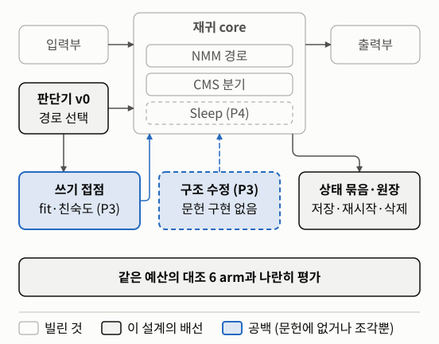
14.2 자기 약점 공개
아픈 순서로 여섯 가지이며, 약점마다 지금 닫을 수 있는지를 함께 적었다.
| 약점 | 치명도 | 지금 닫을 수 있나 | 근거 |
|---|---|---|---|
| H-COMPUTE의 문헌 지지가 가장 약하다. 읽은 11편 중 같은 품질의 추론 계산을 잰 논문이 없고, 1단계는 r(반복 횟수)∈{1,2}라 시험하지 않는다. LITERATURE (fulltext-read) | 핵심 가설 직격 | 아니오 — 2단계(경험 전후)와 4단계(Sleep 포함)에서 처음 잰다. | review §4.4, 09 P1 상한 |
| 학습된 구조 대 고정·무구조 대조. 같은 예산의 직접 비교가 읽은 11편에 없다. Melete N1의 학습 graph 추가 이득도 0.48%(−3.07~4.04%)였다. LITERATURE (fulltext-read) ARCHIVE | schema 이득 주장 불가 | 부분 — 1단계의 fixed·flat·always 대조가 첫 측정이고 등급 2가 상한이다. | review §4.1, 12 §2 |
| retrofit 위험. 의 함수 보존은 초기값에서만 성립하고, 학습 뒤 사전학습 능력의 보존·간섭은 시험하지 않았다. 부분 전환을 전 층 성공으로 넓히지 않는다. PROPOSAL | 제품 선행 조건 | 부분 — 1단계 spike(짧은 선행 실험: 함수 보존·freeze·write 검사)와 원능력 probe(점검 질문). | 05 §5, 09 P1 |
| 소형 모델 한계. 시작 모델 추천은 SmolLM2-135M이고 모델 카드·config 확인이 필요하며, 이 크기의 결과가 큰 모델로 일반화된다는 근거가 없다. PROPOSAL OPEN | 범위 제한(등급 4는 모델 2종 이상) | 아니오 — 5단계와 D-12(두 번째 모델)에서. | 09 D-01, 09 §3 |
| 재료 논문 14편 미정독. A01–A04·A06–A15를 정독하지 않았다. 식과 05 §7–§9는 metadata-checked 이하 깊이의 프로젝트 제안이다. ARCHIVE OPEN | 설계 근거 약화 | 예 — 정독 착수는 사용자 결정 대기이며 우선순위는 W1-gaps G1-14에 있다. | 감사 §6.2, 05 §5 |
| 구현·학습·효용 검증 0. 통합 모델 전체가 아직 만들어지지 않았고 학습·효용 시험도 없다. ARCHIVE | 전제(모든 주장의 상한) | 아니오 — 1단계부터 단계적으로, 등급 2부터. | VALIDATION §4, README |
14.3 수준별 동반 페이지
같은 내용을 독자에 맞춰 줄인 페이지가 세 개 있다. 모두 이 본문과 같은 기준일의 저장소를 근거로 하며 구현·학습·효용 검증이 0이라는 상한도 같다.
15 문서 코퍼스를 지식 그래프로 보기
저장소 문서 35개를 graphify로 개념 그래프로 바꿨다. 노드 494개·연결 1,841개·community 29개이고 (graphify 산출, 2026-11-12), 연결의 92.2%는 원문 글자에서 바로 읽은 것이며 7.3%는 모델 추론이다. 이 그래프는 문서가 어떤 개념으로 서로 이어지는지 보여 주는 지도이지, 설계가 옳다거나 효과가 있다는 근거가 아니다. 대화형 그래프 페이지에서 끌고 확대하며 노드마다 근거 줄을 열어 볼 수 있다.
15.1 한눈에 보기: 정적 미리보기와 대화형 페이지
아래 그림은 그래프 전체를 정적으로 보여 준다. 같은 그래프를 대화형 페이지에서 끌고 확대하고 검색할 수 있다.
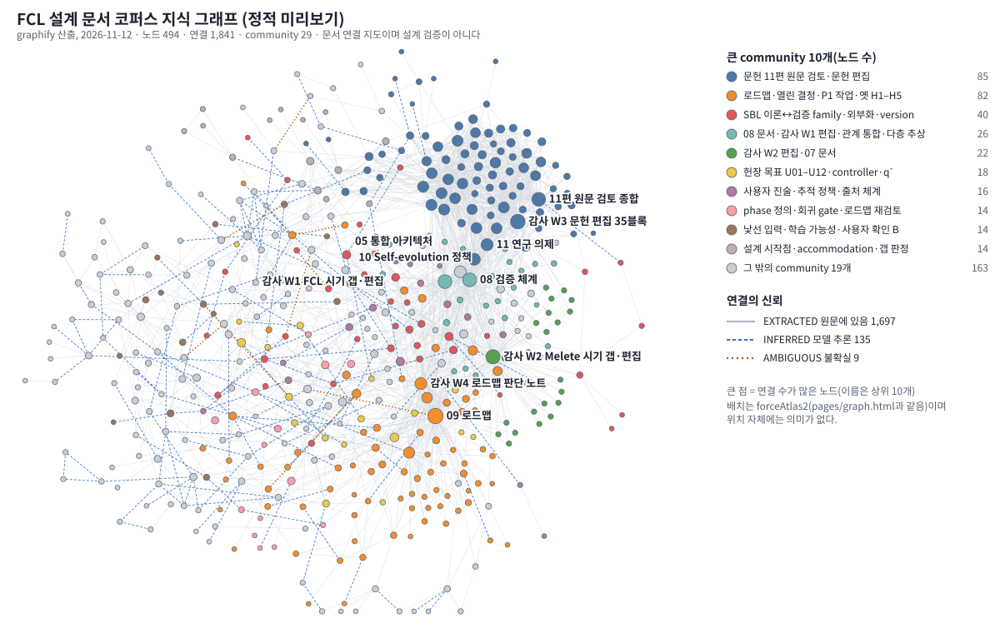
대화형 페이지 사용법
- 노드를 누르면 종류·커뮤니티·이웃과 근거 파일 줄(GitHub 링크)이 나온다. 연결선을 누르면 관계·신뢰·근거 줄·추론 이유가 나온다.
- 위 막대의 EXTRACTED·INFERRED·AMBIGUOUS 칸으로 신뢰 등급별 연결을 켜고 끈다. INFERRED만 남기면 모델 추론 연결을 한눈에 본다.
- 오른쪽 community 목록으로 군집을 숨기고, 검색창으로 노드를 찾는다. 확대하면 겹치지 않는 범위에서 이름이 더 보인다.
- 옅은 파란 영역은 셋 이상이 함께 하나의 개념을 이루는 하이퍼엣지 3개다. 라이트·다크 테마는 백서 본문과 같은 설정을 쓴다.
15.2 무엇을 어떻게 그래프로 만들었나
입력은 저장소의 문서 35개다. README, 설계 문서 docs/01–12, research/의 조사·원문 검토·감사 기록, sources/, 참고문헌 목록이며 main 2ecf3e0을 읽기 전용으로 복사해 썼다. 도구는 graphify 0.9.106(격리 가상환경), 날짜는 2026-11-12다. 추출은 두 갈래다.
- 구조 추출(스크립트). 문서 사이의 링크·파일명 언급, 식별자(P1–P5·D-01–D-14·P1-T01–T16·F01–F21·U01–U12·U-T01–U-T11·T01–T11·H1–H5·E0–E3)의 정의와 언급, 논문 ID 11개의 언급, 편집 블록에서 대상 문서로 가는 연결을 원문 글자 일치로만 만들었다. 모델 추론이 없고 전부 EXTRACTED다. 스크립트가 처음 만든 연결 1,218개 중 문서 언급·인용 계열 923개는 인용한 원문 줄에 대상 이름이 실제로 있는지 다시 확인했고 어긋난 것은 0건이었다(나머지 295개는 노드를 정의한 줄이나 편집 블록의 대상 필드에서 그대로 만들어 따로 대조하지 않았다). 같은 두 노드 사이의 연결을 하나로 합친 뒤 이 갈래의 연결은 1,177개다.
- 의미 추출(직접 읽기, 모델 추론). 개념 260개와 그 관계를 문서 묶음별로 읽고 적었다. 이 세션에는 서브에이전트 도구가 없어 워커 한 명이 chunk를 차례로 직접 읽고 파일로 저장했다. EXTRACTED로 적은 관계는 인용한 줄 범위 안에 앵커 문장이 실제로 있는지 검사기로 확인했고, INFERRED·AMBIGUOUS에는 이유를 적었다. 이 갈래의 연결은 664개다.
15.3 규모와 연결의 신뢰 등급
| 등급 | 개수 | 비율 | 뜻 |
|---|---|---|---|
| EXTRACTED | 1,697 | 92.2% | 원문에 글자로 있다(confidence_score 1.0) |
| INFERRED | 135 | 7.3% | 합리적 추론. 평균 confidence_score 0.84 |
| AMBIGUOUS | 9 | 0.5% | 문서가 열어 둔 불확실한 관계. 평균 0.22 |
| 합계 | 1,841 | 100.0% |
| 갈래 | 연결 | EXTRACTED | INFERRED | AMBIGUOUS |
|---|---|---|---|---|
| 구조 추출(스크립트) | 1,177 | 1,177 | 0 | 0 |
| 의미 추출(직접 읽기) | 664 | 520 | 135 | 9 |
노드의 종류별 개수
| 종류 | 개수 |
|---|---|
| 개념 | 260 |
| 편집 블록 | 84 |
| 문서 | 35 |
| family F | 21 |
| P1 작업 T | 16 |
| 열린 결정 D | 14 |
| 헌장 목표 U | 12 |
| 논문 | 11 |
| 논의 주제 T | 11 |
| 사용자 진술 U-T | 11 |
| 코퍼스 밖 참조 | 5 |
| 단계 P | 5 |
| Melete 가설 H | 5 |
| 진화 단계 E | 4 |
15.4 주요 community
graphify가 연결 구조만 보고 노드를 29개 군집으로 나눴다(이 환경에서는 networkx Louvain, seed 42). 이름은 구성 노드를 읽고 직접 붙인 것이라 graphify의 판단이 아니다. 연결 1,841개 중 1,206개가 같은 community 안에 있고 635개가 community 사이를 잇는다 (graphify 산출, 2026-11-12).
| 번호 | 이름(직접 붙임) | 노드 수 | 대표 노드 |
|---|---|---|---|
| 0 | 문헌 11편 원문 검토·문헌 편집 | 85 | 감사 W3 문헌 편집 35블록; 11편 원문 검토 종합(11-11); 11 연구 의제 |
| 1 | 로드맵·열린 결정·P1 작업·옛 H1–H5 | 82 | 09 로드맵; 감사 W4 로드맵 판단 노트; P1 얇은 전체 여정 |
| 2 | SBL 이론↔검증 family·외부화·version | 40 | 13개 이론·회로 표; F05 예외·정정; F02 표면 함정 |
| 3 | 08 문서·감사 W1 편집·관계 통합·다층 추상 | 26 | 08 검증 체계; 감사 W1 FCL 시기 갭·편집; F13 관계 통합 추론 |
| 4 | 감사 W2 편집·07 문서 | 22 | 감사 W2 Melete 시기 갭·편집; 07 상태·저장 계약 |
| 5 | 헌장 목표 U01–U12·controller·q⁻ | 18 | 01 연구 헌장; Schema controller(문맥·실행 head); controller v0(q⁻·write gate·loop 격자) |
| 6 | 사용자 진술·추적 정책·출처 체계 | 16 | 사용자 연구 요구 원문; U-T09 Adaptive depth와 6층위 의도; SBL 주간 추적 정책 |
| 7 | phase 정의·회귀 gate·로드맵 재검토 | 14 | phase 정의 여섯 규칙; P4 세션을 넘는 경험; P2 여러 구조와 고정 깊이로 넓히고 첫 확증 |
| 8 | 낯선 입력·학습 가능성·사용자 확인 B | 14 | 사용자 확인 B 설계 해석(6); 학습 가능성 신호(흘려듣기); 낯선 입력 처리 경로 A·B·C |
| 9 | 설계 시작점·accommodation·갭 판정 | 14 | FCL 설계 시작점 8개(PROPOSAL); accommodation(구조 즉석 수정) 문헌 공백; Sleep이 만들어야 할 변화 |
나머지 community 19개
| 번호 | 이름(직접 붙임) | 노드 수 |
|---|---|---|
| 10 | 재료: Looped·MoD/MoR·depth read | 14 |
| 11 | 감사 원장 수치·방법 | 13 |
| 12 | 진화 권한 E0–E3·Sleep·세 루프·여섯 층위 | 12 |
| 13 | 리듬 실험 A–D·시계 분리·최소 분리 8동작 | 12 |
| 14 | H-COMPUTE·F11·대표 실험·측정량 C*ε | 11 |
| 15 | 진입·중단 규칙·Melete 실험 기록 | 11 |
| 16 | 10 정책 문서·catalog·EVIDENCE·원자료 | 11 |
| 17 | retrofit 방향·선택적 갱신·합의 방향 | 10 |
| 18 | 결과 등급·Contract 검사·봉인 | 9 |
| 19 | 02 논의 이력·뇌파 재검토·CMS 구분 | 8 |
| 20 | U-T06·이론별 family·F18–F21 | 8 |
| 21 | schema 표현 형식 분류 | 8 |
| 22 | 6층·이력 분기·사고 중 재선택 | 7 |
| 23 | CMS·F_CMS·검증 전 주장 금지·가설 C | 7 |
| 24 | 04 문서·비목표(탄탄한 영역) | 6 |
| 25 | schema 정의·기능 루프·표현 네 수준 | 6 |
| 26 | eligibility·학습 귀속·F08 | 4 |
| 27 | self-evolution 목표 계약·U-T02 | 3 |
| 28 | 대조군 목록·같은 경로 실행 | 3 |
15.5 hub: 연결이 많은 노드
| 순위 | 노드 | 종류 | 연결 수 |
|---|---|---|---|
| 1 | 09 로드맵 | 문서 | 100 |
| 2 | 감사 W3 문헌 편집 35블록 | 문서 | 85 |
| 3 | 감사 W2 Melete 시기 갭·편집 | 문서 | 80 |
| 4 | 08 검증 체계 | 문서 | 76 |
| 5 | 감사 W1 FCL 시기 갭·편집 | 문서 | 74 |
| 6 | 11편 원문 검토 종합(11-11) | 문서 | 73 |
| 7 | 11 연구 의제 | 문서 | 51 |
| 8 | 10 Self-evolution 정책 | 문서 | 50 |
| 9 | 감사 W4 로드맵 판단 노트 | 문서 | 50 |
| 10 | 05 통합 아키텍처 | 문서 | 49 |
상위 10개는 전부 문서 노드다. 상위 5개 중 3개(감사 W3 문헌 편집 35블록, 감사 W2 Melete 시기 갭·편집, 감사 W1 FCL 시기 갭·편집)는 감사 편집 원장이다. 편집 블록 84개를 원장 문서에 매단 구조 추출 때문에 연결 수가 커진 것이므로, 연결 수가 곧 설계에서의 중요도는 아니다 (graphify 산출, 2026-11-12). 문서·논문·편집 블록을 빼면 가장 연결이 많은 것은 P1 얇은 전체 여정(40)·U-T07 통합 System ONE 정정(20)·13개 이론·회로 표(16) 순이다.
| 노드 | 종류 | 연결 수 |
|---|---|---|
| P1 얇은 전체 여정 | 단계 P | 40 |
| U-T07 통합 System ONE 정정 | 진술 U-T | 20 |
| 13개 이론·회로 표 | 개념 | 16 |
| Schema controller(문맥·실행 head) | 개념 | 15 |
| F05 예외·정정 | family F | 15 |
| 학습 구조 vs 고정·무구조 직접 비교 없음 | 개념 | 15 |
| H-COMPUTE 총 계산 감소 | 개념 | 14 |
| 통합 System ONE | 개념 | 14 |
논문 11편이 문서와 맺는 연결
| 논문 | 연결 수 | 설계 문서 | 연구 기록 | 편집 블록 |
|---|---|---|---|---|
| HWU20 schema·기억 부호화 신경모델 | 40 | 7 | 12 | 14 |
| SWAMI23 schema 학습·rebinding(ICL) | 40 | 7 | 9 | 16 |
| MICONI25 관계 학습·지식 재조립 | 39 | 7 | 11 | 13 |
| KUMAR26 one-shot 쌍연합 schema | 37 | 6 | 11 | 13 |
| GOUDAR23 neural subspace schema | 36 | 6 | 11 | 13 |
| SPENS24 생성모델 기억 구성·공고화 | 36 | 6 | 10 | 13 |
| CHU25 sequence attractor schema | 34 | 6 | 9 | 14 |
| TEM20 Tolman-Eichenbaum Machine | 34 | 6 | 11 | 11 |
| ELDER26 가소 신경망의 불변 schema | 31 | 4 | 11 | 11 |
| SPECTRUM26 schema spectrum 관점 | 26 | 4 | 8 | 9 |
| STRUCTK25 구조 지식 리뷰 | 24 | 5 | 8 | 5 |
15.6 놀라운 연결
graphify는 연결마다 점수를 매긴다. 신뢰가 낮을수록(AMBIGUOUS 3점, INFERRED 2점, EXTRACTED 1점), 서로 다른 최상위 폴더의 파일을 잇거나 서로 다른 community를 이을수록, 연결이 적은 노드가 hub로 이어질수록 점수가 높다. 아래 첫 표는 그 순위의 상위 12개를 보고서에서 그대로 옮긴 것이다.
| 출발 노드 | 관계 | 도착 노드 | 신뢰 |
|---|---|---|---|
| 가설 C schema 선택·선택적 쓰기가 추론 비용에 영향 | relates_to | H-COMPUTE 총 계산 감소 | INFERRED 0.8 |
| G1-06 → 03 §6 | edits | 03 SBL·인지·기억 기반 | EXTRACTED |
| G1-13 → 05 §5 | edits | 05 통합 아키텍처 | EXTRACTED |
| G1-17 → 05 §4 | edits | 05 통합 아키텍처 | EXTRACTED |
| G2-04 → 05 §4 | edits | 05 통합 아키텍처 | EXTRACTED |
| G2-05 → 05 §10 | edits | 05 통합 아키텍처 | EXTRACTED |
| G1-11 → 06 §2 | edits | 06 수학적 연구 명세 | EXTRACTED |
| G2-06 → 06 §3 | edits | 06 수학적 연구 명세 | EXTRACTED |
| G2-07 → 06 §6 | edits | 06 수학적 연구 명세 | EXTRACTED |
| 09 로드맵 | references | 초기 SBL 문헌 지도(11-02) | EXTRACTED |
| G1-01 → 09 로드맵 요구 | feeds_roadmap | 09 로드맵 | EXTRACTED |
| G1-02 → 09 로드맵 요구 | feeds_roadmap | 09 로드맵 | EXTRACTED |
이 12개 중 11개는 EXTRACTED이고 그중 10개는 “감사 편집 블록 → 고치는 문서” 연결이다. 폴더가 달라서(research/ 대 docs/) 점수가 높게 나왔을 뿐 내용이 뜻밖은 아니다. AMBIGUOUS 0개는 05 §10의 text 인터페이스 판단이 사용자 의사인지 확인이 필요하다는 열린 문제다. 그래서 같은 점수식으로 INFERRED·AMBIGUOUS만 추려 다시 순위를 매겼다.
| 출발 노드 | 관계 | 도착 노드 | 신뢰 | 이유(추론한 근거) |
|---|---|---|---|---|
| 가설 C schema 선택·선택적 쓰기가 추론 비용에 영향 | relates_to | H-COMPUTE 총 계산 감소 | INFERRED 0.8 | 가설 C의 추론 비용 영향이 H-COMPUTE의 선행 질문 |
| W4 2.3 P1 도메인·base model·자원 | rationale_for | D-01 P1 base model | INFERRED 0.9 | 2.3의 base model 후보 검토가 열린 결정 D-01(P1 base model)의 근거(결정표는 §3) |
| 공식 코드는 있으나 그대로 쓰기 어려움 | same_policy_as | D-02 Titan-Llama 코드 사용 방식 | INFERRED 0.8 | 코드 사용 방식 결정(D-02)의 선택지 b가 리뷰의 재구현 원칙과 같음 |
| S19 Curriculum unlearning | motivates_family | F05 예외·정정 | INFERRED 0.8 | 압축된 표현이 예외 구분을 못 담는 문제가 F05(예외·정정)의 시험 대상 |
| T02 구조를 사람이 고정하기보다 AI가 개선하게 할 것인가 | topic_reconstructs_statement | U-T02 Self-evolution | INFERRED 0.85 | T02가 U-T02의 self-evolution 제안을 정리(번호 체계가 달라 직접 표기는 없음) |
| T05 SBL 문헌과 표현 형식의 분류 | topic_reconstructs_statement | U-T05 독립 주간 추적과 연구 질문 | INFERRED 0.85 | T05가 U-T05의 문헌 추적·분류 요구를 정리(번호 체계가 달라 직접 표기는 없음) |
| T06 Titans + HOPE + Sleep을 SBL 재료… | topic_reconstructs_statement | U-T06 HOPE/Titans/Sleep와 이론·PoC | INFERRED 0.85 | T06이 U-T06의 HOPE/Titans/Sleep 요구를 정리(번호 체계가 달라 직접 표기는 없음) |
| text 인터페이스를 필수 관문에서 내림 | attributed_to | U-T07 통합 System ONE 정정 | AMBIGUOUS 0.2 | 필수 관문에서 내린 것은 정리자 추론(PROPOSAL)이며 사용자 의사는 확인 대기(OPEN) |
| T09 뇌파와 CMS의 본질적 재검토 | topic_reconstructs_statement | U-T08 뇌파와 고정 주기의 본질적 재고찰 | INFERRED 0.85 | T09가 U-T08의 뇌파·고정 주기 재고찰을 정리(번호 체계가 달라 직접 표기는 없음) |
| Eligibility 후보 흔적·write 식 | design_for | U-T08 뇌파와 고정 주기의 본질적 재고찰 | INFERRED 0.7 | U-T08의 뇌파 본질 탐구에서 나온 eligibility 설계 표기 |
이 표의 연결은 모두 모델 추론이다. 문서가 그 관계를 글자로 적지 않았으므로, 읽는 사람이 근거 줄을 열어 확인한 뒤에 쓴다.
15.7 AMBIGUOUS 연결 전부
| 출발 노드 | 관계 | 도착 노드 | 이유 | 근거 줄 |
|---|---|---|---|---|
| CLS 상보적 학습 시스템 | contrasted_with | Automaticity | 빠름/느림 분업(CLS)과 '해마가 사고를 끈다' 단일 스위치 금지(Automaticity)의 관계는 문서가 정하지 않음 | 03-foundations.md:L23-32 |
| F_CMS 기능 보존 전환식(B_j=0 초기화) | transition_method_unresolved_with | Sleep(fast→slow 공고화) | 'Sleep 방법으로' 전환하되 Sleep 논문 절차는 metadata-checked 깊이라 이 식에 미반영(OPEN) | 05-integrated-architecture.md:L106 |
| SBL(schema-based learning) | sample_efficiency_support_weakened | H-SAMPLE 관측 수 감소 | SBL의 '관련 schema가 표본 효율을 높인다'는 가설이 HWU20 신경망 구현에서는 새 schema 학습 가속으로 확인되지 않았다고 문서가 약화해 적음 | 03-foundations.md:L24 |
| 낯선 입력 처리 경로 A·B·C | selection_rule_unresolved | controller v0(q⁻·write gate·loop 격자) | 경로 선택을 familiarity 단독으로 하는지 구조 합성 난도와 함께 하는지는 열려 있음(OPEN) | 05-integrated-architecture.md:L92 |
| 검색·residency·eviction 분리 | eviction_criteria_as_write_gate_signal_unresolved | 선택적 갱신·보호/쓰기 규칙 | eviction 기준 후보 중 무엇이 쓰기 gate의 학습 신호가 되는지 미정(OPEN) | 07-state-and-storage.md:L108 |
| 진화 권한 사다리 E0–E3 | phase_mapping_unconfirmed | 09 로드맵 | E0–E3를 어느 phase에 여는지는 로드맵과 연결해 정한다고 했고 승인된 일정이 아님(OPEN) | 10-evolution-policy.md:L22 |
| text 인터페이스를 필수 관문에서 내림 | attributed_to | U-T07 통합 System ONE 정정 | 필수 관문에서 내린 것은 정리자 추론(PROPOSAL)이며 사용자 의사는 확인 대기(OPEN) | 05-integrated-architecture.md:L151-155 |
| N0–N5 기록(합성 prototype) | constraint_on_learning_rule_choice_unresolved | 학습 규칙 후보 지도(미작성) | N0–N5 결과가 통합 모델 학습 규칙 선택에 주는 제약은 후보 지도 작성 뒤로 미룸(OPEN) | 12-melete-lineage.md:L31 |
| Schema(조건부 관계 구조) | physical_unit_unresolved | schema의 물리적 단위(MLP·저랭크·궤적·조합) | schema가 MLP·저랭크·궤적·모듈 조합 중 무엇인지 열린 문제(OPEN) | 11-research-agenda.md:L26 |
15.8 그래프가 가리키는 읽기
- OPEN 설계 문서 12개 중 연결이 가장 많은 것은 09 로드맵(100)이고 가장 적은 것은 02 논의 이력(15)·04 뇌 리듬(16)·07 상태·저장(19)이다 (graphify 산출, 2026-11-12). 로드맵이 다른 문서를 엮는 조립 지점일 수 있다. 다만 이 수는 문서 사이 링크와 감사 편집 블록의 합이라 “얼마나 자주 인용되고 고쳐졌는가”를 반영할 뿐, 설계에서의 중요도를 직접 뜻하지는 않는다.
- OPEN 문헌 11편이 든 community(노드 85개)가 가장 크고, 그와 가장 많이 이어진 community는 “08 문서·감사 W1 편집·관계 통합·다층 추상”(55개)와 “로드맵·열린 결정·P1 작업·옛 H1–H5”(43개)다 (graphify 산출, 2026-11-12). 감사 보고서는 논문 검토가 감사 편집을 거쳐 설계 본문으로 옮겨졌다고 적었다(ARCHIVE). 그래프의 연결이 이 서술과 같은 방향이지만, 연결이 많다는 사실이 옮겨진 내용의 정확함을 보이지는 않는다.
- OPEN H-SAMPLE은 “로드맵·열린 결정·P1 작업·옛 H1–H5” community(노드 82개)에, H-COMPUTE는 “H-COMPUTE·F11·대표 실험·측정량 C*ε” community(노드 11개)에 들어갔다 (graphify 산출, 2026-11-12). 두 명제 노드는 서로 직접 이어져 있고(독립 평가 관계) 두 community 사이에는 연결이 5개 있다. 명제의 정의·검증 경로가 서로 다른 문서 묶음에 걸쳐 서술돼 한곳에서 함께 읽기 어렵다는 신호일 수 있다.
- OPEN 연결이 1개 이하인 노드 57개(11.5%)는 전부 의미 추출로 만든 개념 노드다 (graphify 산출, 2026-11-12). 이들이 설계의 주변부인지, 읽고도 연결을 덜 적은 것인지는 그래프만으로 알 수 없다.
15.9 한계
부록
용어집, 문서 지도, 이 백서를 만든 방법, 변경 기록.
16 부록
용어집, 저장소 문서 지도, 이 백서를 만든 방법, 변경 기록입니다. 용어집은 저장소 문서에 정의가 있는 말만 싣고 정의마다 근거 링크를 답니다.
16.1 용어집
ARCHIVE 정의는 저장소 문서에서 가져왔고 원래 라벨을 따랐습니다. 정의가 없는 말은 싣지 않았습니다. 논문의 역할을 말하는 정의는 확인 깊이를 병기했으며, 그 논문들을 이 백서에서 새로 읽은 것은 아닙니다.
- SBL schema-based learning
- PROPOSAL 재사용 가능한 관계 구조(schema)를 경험에서 만들고 새 사례의 판단·학습에 쓰는 접근. 이 저장소는 SBL 문헌 지도와 신경망 구현 11편의 원문 검토를 출발점으로 삼는다. (README · 03 · 원문 검토 §0)
- schema
- PROPOSAL 여러 경험에 걸쳐 재사용되며 새 사례의 예측·판단·학습에 필요한 정보와 계산을 줄이는 조건부 관계 구조. 하나의 벡터·graph node·MLP·특정 시냅스 집합과 일대일 대응한다고 가정하지 않는다. (03 §1)
- Titans
- LITERATURE (metadata-checked) 입력의 관계를 neural memory의 빠른 가중치(fast weights)에 저장하고 읽는 구조[A01]. KV 정확도만으로 추상 schema가 형성된다고 가정하지 않는다. (05 §1 · catalog A01)
- Titan-Llama
- LITERATURE (official-search-checked) pretrained 모델의 순차 처리(sequence) 경로를 segmented attention과 NMM으로 개조하는 retrofit[A04]. 전 층 전환과 장기 사용자 state 운영이 자동으로 따라온다고 가정하지 않는다. (05 §1 · 05 §6)
- NMM neural memory module
- LITERATURE (official-search-checked) Titan-Llama가 pretrained 모델에 붙이는 신경 기억 모듈(A04 논문 제목의 “External Neural Memory Modules”). 저장소 문서는 약어만 쓰며, 풀이는 이 제목을 따랐다. (05 §1 · catalog A04)
- HOPE / Nested Learning
- LITERATURE (metadata-checked) 학습 과정을 여러 optimization level과 context flow로 조직하는 틀[A02]. 갱신 빈도가 곧 의미적 추상화 수준이라는 등식은 제공하지 않는다. (05 §1)
- CMS Continuum Memory System
- LITERATURE (metadata-checked; 아래 논문 서술은 05 §1이 전문 일부 정독에 근거한다고 적은 것) 여러 갱신 시간척도의 기억[A02]. 논문에서 레벨과 갱신 빈도는 설계 시 고정이고, schema·assimilation·accommodation 개념은 없다. 저장소 문서는 약어만 쓰며 풀이는 A02 논문의 용어를 따랐다. PROPOSAL 이 프로젝트는 기존 FFN을 느린 기반으로 두고 곁가지를 더하는
F_CMS(h) = F0(h) + Σ g_j(h) B_j σ(A_j h)를 제안한다. 이 식은 원본 HOPE의 구조식이 아니다. (05 §1 · 05 §5) - retrofit
- PROPOSAL 처음부터 새로 훈련하지 않고 기존 pretrained 모델의 sequence 쪽은 Titans/Titan-Llama 계열로, FFN 쪽은 CMS로 점진 전환하는 것. 원본 모델을 재학습 없이 기계적으로 교체하면 된다는 뜻이 아니다. (README · 05 §5–§7)
- loop looped Transformer
- LITERATURE (metadata-checked) 같은 가중치를 반복 통과해 유효 depth를 늘리는 구조[A06·A07]. 반복 학습을 한 번도 하지 않은 모델을 그냥 다시 호출한다고 좋아지지는 않는다. 전체 LLM의 한 번 forward를 1 loop로 센다. (05 §1 · 05 §7)
- MoD / MoR
- LITERATURE (metadata-checked) MoD는 depth별로 token의 계산을 배분하고[A08], MoR은 재귀 공유와 token별 적응 depth, cache 정책을 묶는다[A09]. 현재 token의 router가 아직 생성되지 않은 token을 참조하지 않아야 한다. (05 §1 · 05 §8)
- depth read
- PROPOSAL 이전 layer·loop의 표현 중 유효한 것을 골라 다시 읽는 기능[A10 등]. 이번 생각을 다시 읽는 통로이고, 다음 문제에 영향을 주는 지속 기억과는 다르다. (05 §2 · 05 §9)
- controller schema controller
- PROPOSAL 입력 문맥에서 어떤 관계 구조를 적용·전환·조합·수정할지(문맥 수준 head)와 어느 token·depth를 쓰고 얼마나 쓰며 언제 멈출지(실행 수준 head)를 정하는 구성 요소. 정답 oracle이 아니다. 규칙형 controller v0는 익숙함 신호의 두 임계값으로 fast·learn·deep 중 하나를 고르며 학습된 판단이 아니다(D-14, 사용자 확인 대기). (05 §4 · 09 §2)
- write gate
- PROPOSAL 빠른 기억에 쓸지·얼마나 쓸지를 정하는 제어 신호. controller v0의 실행 head는 write gate 스칼라 하나와 종료 loop 수 선택만 낸다. 시험은 무엇·어디에·얼마나·언제 쓰는가로 쪼갠다. (05 §4)
- fast / learn / deep
- PROPOSAL P1 controller v0의 세 경로. fast는 쓰기 없이 r=1로 답하고, learn은 surprise write 뒤 r=1로 답하며, deep은 write 뒤 retrofit 블록을 한 번 더 적용한 r=2로 답한다. 경로·신호값·예산은 결정 trace로 남긴다. (09 §2)
- Sleep · 공고화
- PROPOSAL 경험의 복원·보존을 넘어, 새 관계 공유 사례에서 짧은 loop가 기능을 하도록 학습시키는 과정. 첫 형태는 빠른 저장소에서 느린 수준으로 가는 teacher–student replay다. 문헌의 Sleep[A03]은 metadata-checked라 그 전환 절차는 아직 반영되지 않았다. (05 §11 · 05 §5)
- latent read
- PROPOSAL 지속 기억과 이전 표현을 글자로 바꾸지 않고 projection·gate·adapter로 hidden 계산에 연결하는 읽기. 임의 latent를 그냥 더하면 의미가 전달되는 것은 아니라 alignment를 학습해야 한다. (05 §10 · 06 §5)
- S0 · SE · SES
- PROPOSAL 대표 실험의 세 상태. S0은 retrofit과 기본 학습을 마친 상태, SE는 지정된 경험을 축적한 상태, SES는 같은 경험으로 Sleep까지 수행한 상태다. SE·SES의 quality–compute 곡선이 S0보다 왼쪽으로 이동해야 계산 효율 변화의 근거가 된다. (08 §3)
- C*_ε
- PROPOSAL 새 사례에서 오류를 ε 이하로 만드는 최소 계산량. 실제로 잰 budget 격자 안에서만 계산하고 재지 않은 교차점을 보간해 단정하지 않는다. (06 §9)
- H-SAMPLE
- PROPOSAL 관련 경험에서 배운 구조가 새 대상·표현을 가진 과제의 목표 성능까지 필요한 관측 수를 줄인다. (01 §4)
- H-COMPUTE
- PROPOSAL 경험과 통합 이후 새 구조 공유 사례에서 같은 정확도에 드는 총 계산이 줄어든다. loop만 줄이고 gradient·검색·decoder 비용을 늘린 결과는 계산 개선으로 세지 않는다. 두 명제는 독립으로 평가한다. LITERATURE (fulltext-read) 문헌 지지는 가장 약하다. (01 §4 · 06 §6)
- 갭 주장 판정 · 검색 깔때기
- ARCHIVE “다양한 경험에서 schema를 스스로 발견·형성·수정·통합하고 그 schema가 학습 규칙을 제어하는 범용 지속학습 아키텍처는 완성된 형태로 확인되지 않았다”는 외부 요약의 결론을 검색 범위(2023-01-01~2026-11-11) 안에서 시험한 것. 고유 레코드 1,047건을 자동 선별해 제목 265건, 초록 약 42건을 읽고, 전문은 5건을 부분적으로 읽었다(1,047 → 265 → 42 → 5). 다섯 기준을 모두 만족하는 사례는 이 범위에서 발견되지 않았다. 이는 검색 범위와 근거 깊이에 대한 서술이며 “갭이 존재한다”는 증명이 아니다. (원문 검토 §6)
- 원장 ledger
- ARCHIVE 사용자 진술을 원자 항목(인용·출처 줄·날짜·종류·라벨)으로 쪼개 설계 문서의 반영 위치와 대조한 장부. FCL 시기 177개와 Melete 시기 148개, 합계 325개이며 판정은 감사 전 시점의 것이다. (감사 §1 · 원장 폴더) 탐색기
- phase · P1–P5
- PROPOSAL 로드맵의 단계. 매 phase가 끝날 때마다 실제 CLI에서 실제 retrofit 모델이 경험 입력부터 재시작 복원까지 전체 여정을 돌고, phase가 지날수록 같은 제품의 넓이와 깊이를 함께 올린다. (09 §1.4 · 09 §4)
- 결과 등급 0–5
- PROPOSAL 증거의 범위를 말하는 등급(0 설계·미실행 … 3 한정 확증 … 5 제한 운용). 주장 단위로 부여하며 P1의 상한은 2(개발 pilot)다. 등급에 허용되지 않은 문구는 쓰지 않는다. (09 §3)
16.2 문서 지도
본문이 가리키는 저장소 문서를 한곳에 모았습니다. 링크는 GitHub의 main 브랜치(기준 커밋 2ecf3e0)입니다.
| 파일 | 한 줄 설명 |
|---|---|
| README.md | 저장소의 입구. 한 문장 정의, 합의한 방향, 읽는 순서, 핵심 검증 질문, 증거 표기. |
| AGENTS.md | 저장소 작업 지침. 연구 방향·증거·실행·문서 검사 규칙. |
| EVIDENCE.md | 증거 수준과 아카이브의 범위. 원자료 해시, 확인 깊이의 의미, 공개 범위. |
| VALIDATION.md | 게시·소스·수치 검증 기록과 “검증하지 않은 것”. |
| 파일 | 한 줄 설명 |
|---|---|
| docs/01-intent-and-charter.md | 연구 헌장과 6층위 의도. 사용자 목표 U01–U12, 두 중심 명제, 비목표. |
| docs/02-discussion-history.md | 논의의 발전과 정정. 외부 기억에서 통합 System ONE까지, 폐기·보류된 해석. |
| docs/03-foundations.md | SBL와 뇌과학 기반. CLS, schema, familiarity, 구조 대응, 기억 수정·선택. |
| docs/04-rhythms-and-orchestration.md | 뇌 리듬과 학습 조율. 위상·burst·coupling·eligibility와 공학적 가설. |
| docs/05-integrated-architecture.md | 메커니즘과 통합 아키텍처. Titans, HOPE/CMS, Sleep, loops, MoD/MoR, depth read. |
| docs/06-mathematical-framework.md | 수학적 연구 명세. 상태, 조건부 schema, 가소성, meta-objective, 비용. |
| docs/07-state-and-storage.md | 상태·시계·cache·저장 계약. token/experience/loop/update 구분, rollback, offload. |
| docs/08-evaluation.md | Benchmark와 판정. transfer, rapid learning, ABA, uncertainty, compute. |
| docs/09-roadmap.md | 점진적 해상도 로드맵. P1–P5, capability × phase 표, 결과 등급과 상한, 열린 결정 D-01–D-14. |
| docs/10-evolution-policy.md | Self-evolution와 운영 정책. 독립 evaluator, 후보 계보, 예산, 승격, 실패 기록. |
| docs/11-research-agenda.md | 후속 가설과 미해결 질문. pretraining/alignment, schema 분화, insight. |
| docs/12-melete-lineage.md | 기존 Melete와 이관 경계. H1–H5와 이전 실험을 어떻게 보존할지. |
| 파일 | 한 줄 설명 |
|---|---|
| research/2026-11-02-baseline.md | 초기 SBL 문헌 지도(대화 기준 2026-11-02). |
| research/2026-11-09-sbl-tracking.md | 주간 SBL 조사. 2026-11-09 대화 보고를 보존했고 수치의 출처 상태를 적었다. |
| research/TRACKING_POLICY.md | SBL 전용 주간 추적 정책. 범위, 시간과 신규성, 논문별 필드. |
| research/2026-11-11-sbl-fulltext-review.md | 신경망 SBL 구현 11편 원문 검토. 외부 요약 정정, 공통 공백, FCL 설계의 시작점. |
| research/2026-11-11-sbl-fulltext/ | 논문별 상세 기록(W1–W7)과 읽은 판본·해시(evidence.json). |
| research/2026-11-12-design-audit.md | 설계 반영 감사. 325항목 원장, 반영 판정, 설계 문서 편집 70개, 사용자 확인·열린 결정·남은 문헌 정독. |
| research/2026-11-12-design-audit/ | 감사에 쓴 원장 2개(ledger-fcl.json·ledger-melete.json)와 편집 초안 W1–W4. |
| 파일 | 한 줄 설명 |
|---|---|
| sources/README.md | 출처·대화 아카이브. 범위, PDF 원자료, 인용 원칙. |
| sources/user-statements.md | 사용자 연구 요구 원문(U-T01–U-T11). |
| sources/neuroscience-origin.md | 신경과학 원자료의 핵심 발화와 공개용 전사 안내. |
| references/README.md | 참고문헌·공식 구현 전체 목록. 확인 수준, 핵심 읽기 경로, 분류 규칙. |
| references/catalog.tsv | 원천 데이터. 논문·코드 record와 확인 깊이(status 열). |
| references/supplementary-links.md | 추가 공식 설명 링크와 이관 경계. |
| experiments/phase0/README.md | 합성 Phase-0 실험의 보존본. 통합 모델 PoC가 아니다. |
| tools/validate_docs.py | 로컬 링크·TSV·JSON·Python syntax 검사. 외부 URL 진위는 검사하지 않는다. |
| tools/export_references.py | TSV에서 JSON·BibTeX 초안을 만든다. |
16.3 이 백서를 만든 방법
ARCHIVE 한 명이 쓰지 않고 작업자 여섯 명이 공통 계약(경로·섹션 표·클래스 어휘·색 토큰·링크 규칙·정직성 규칙)을 지키며 나눠 만들었고, 마스터가 조립·검사·배포했습니다. 저장소는 읽기 전용으로만 쓰였고 수정하지 않았습니다. 첫 실행은 계정 세션 한도로 작업자 전원이 초반에 멈춰 같은 실행을 재개했고, 재개 실행에서 B는 조각·그림·차트를 모두 만든 뒤 마무리 보고 단계에서 다시 한도에 걸렸습니다. 그래서 B의 산출물과 전체 게이트는 마스터가 직접 다시 검사했습니다.
| 작업자 | 맡은 것 | 실제로 쓴 skill |
|---|---|---|
| A | 디자인 시스템·스타일·조립기, 표지·2분 요약·읽는 법·부록, 원장 탐색기 | ui-ux-pro-max, frontend-design, web-artifacts-builder, dataviz, eli50 |
| B | 1부 · 왜, 어디서 왔나 (목적·계보·추적·문헌) | diagram-design, dataviz |
| C | 2부 · 어떻게 동작하나 (아키텍처·수식·상태) | diagram-design |
| D | 3부 · 어떻게 검증하고 나아가나 (평가·로드맵·진화·열린 질문) | diagram-design, dataviz |
| E | 수준별 동반 페이지(brief·intuition·expert)와 전문가 델타 | eli50, eli15, eli-guru |
| F | 지식 그래프(본문 섹션과 동반 페이지) | graphify |
skill의 역할: ui-ux-pro-max는 디자인 시스템 후보 검색, frontend-design은 레이아웃 판단, web-artifacts-builder는 원장 탐색기(React) 번들, diagram-design은 그림, dataviz는 차트 팔레트 검증, eli50·eli15·eli-guru는 독자 수준별 글쓰기, graphify는 지식 그래프입니다.
ARCHIVE 검사 결과. 아래 검사를 거쳤습니다(마스터 실행, 2026-11-12 16시대 KST).
| 검사 | 보는 것 | 누가·언제 | 결과 |
|---|---|---|---|
조각 검사 check_fragment.py | 섹션 조각의 구조·id·클래스 어휘·링크·금지 요소, 동반 페이지·그림 파일의 외부 로드·경로·이메일 | 작성자가 담당 조각마다 | 조각 45개(섹션 17·동반 페이지 5·그림 23) 0 FAIL·0 WARN |
그림 점검 self_check.py | diagram-design 스킬의 접근성 SVG 계약·격자·글자 넘침 점검 | 그림을 만든 작업자 | diagram-design으로 그린 그림 21개(B 5·C 11·D 5) 모두 OK, FAIL 0 |
팔레트 검사 validate_palette | dataviz 스킬의 차트 색 검사(명도 띠·채도·색각 이상 분리·대비) | 스타일·차트 작업자 | 범주 8색은 라이트·다크 모두 통과. 라이트 모드의 청록·노랑·분홍 3색은 면 대비 3:1 미만 경고라 값을 직접 라벨로 적는 것을 전제로 썼습니다 |
게이트 1–7 verify_gates.py | 파일·조립·목차, 파싱·id·앵커·asset, 외부 리소스·경로·이메일, 로그, 핵심 수치, 렌더링, 저장소 무변경 | 마스터가 조립 뒤 | 게이트 1–7 전부 PASS: 조각 17/17·목차 h2 17·h3 131, id 중복·깨진 앵커·누락 asset 0, 외부 로드·호스트 경로·이메일 0, 렌더링 1440×900 209 KB·390×844 89 KB, 저장소 무변경 |
16.4 변경 기록
ARCHIVE 백서 v1 · 2026-11-12 · 기준 커밋 2ecf3e0. 아래는 저장소의 주요 커밋입니다(날짜·요지는 git log 기준).
| 날짜 | 커밋 | 요지 |
|---|---|---|
| 2026-11-09 | 1720523 | 저장소 초기화. docs: initialize full-continual-learning research archive |
| 2026-11-09 | 58613da | Melete·System ONE 연구, 기반, 아키텍처, 참고문헌, Phase-0 소스를 아카이브. docs: archive Melete System ONE research, foundations, architecture, references and phase-0 source |
| 2026-11-09 | d26076e | 보존한 Phase-0 소스를 검증하고 12개 수치 실행을 재현, 게시 경계를 문서화. test: verify archived phase-0 source and reproduce all 12 numerical runs; document publication boundaries |
| 2026-11-11 | 27fafc0 | 신경망 SBL 논문 11편 원문 검토. research: full-text review of 11 neural SBL papers |
| 2026-11-12 | 2ecf3e0 | 피드백 반영 감사, 문헌 검토를 설계에 통합, 로드맵 재구성. 이 백서의 기준. design: audit feedback reflection, integrate literature review, rebuild roadmap |